序
计算时代在这已经进入异构计算时代，其意味着CPU和GPU可以同时处理同一计算任务。异构计算设计师们正在扩展异构计算的范围，为的就是让异构机器和硬件供应商能在更广阔的空间发挥自己的能量。硬件层面的变化为未来出现的新应用提供了更广阔的平台。不过，因为设计结构不同，传统编程模型在异构平台上的表现很难令人满意，这样就意味着要对新的编程模型进行学习，例如OpenCL中的编程模型。
OpenCL设计之初，设计们注意到，传统算法实现可以分为两类：第一类是延迟密集型(比如：电子表格遍历)，算法工程师们使用C或C++在CPU上进行实现；第二类是吞吐密集型(比如：矩阵相乘)，算法工程师会使用CUDA在GPU上进行实现。两种方式虽有关联，但是每种方式只工作在一种处理器上——C++不能在GPU上运行，CUDA无法在CPU上运行。开发者在实现算法时，只能使用其中一种。不过，算法应该能在不同的设备上混合实现，这才是异构设备的正式能力。现在的问题是如何在这样的设备上进行混合编程？
一种解决方案就是为现有的平台添加新的特性，C++和CUDA也都在积极的向好的方向发展，以迎接新硬件平台的挑战。另一种解决方式就是为异构计算创造一种新的编程模式，Apple公司为这种新的方式提供了提案和范例。这个提案被很多公司的技术部门重新定义，最终形成OpenCL。在设计之初，我很幸运是这些技术部门的一员。我们对kernel语言有着很多的预期：(1)让开发者只写一次kernel代码；(2)让已经写好的kernel代码可以在CPU，GPU，FPGA等设备上有效移植和运行；(3)kernel代码和硬件底层紧密相关，开发者就可充分利用每个设备来提升应用的性能；(4)最大抽象化编程模型，这样在每个公司的机器上只要编译一遍，就可以在其他同型号机器上使用。当然，和任何项目一样，我们想快速完成这些目标。为了加速实现，我们基于C99进行kernel语言的实现。在6个月内，OpenCL 1.0标准就诞生了，并且在1年内第一版的代码实现就出现了。之后，OpenCL就与“真正的”开发者见面了……
之后发生了什么？首先，C开发者说，一些C++特性(内存模型，原子操作等等)的添加让他们的工作更加高效。CUDA开发者说，NVIDIA将所有新特性都添加入CUDA(比如：嵌套并行)，这让写程序更加简单，应用运行起来更加快。第二，硬件架构也是作为异构计算的一种探索，硬件供应商会提，如何移除CPU和GPU都需要独立内存的问题。近期，集成设备技术发展对于硬件来说是一重大的改变，这使得GPU和CPU可以放在同一芯片上(NVIDIA的tegra和AMD的APU都是这方面的例子)。第三，即使标准写的很谨慎，并且有一致性检查套件，不过在编译器实现方面，并不是总按标准来——有时同一套代码会在不同的设备上得到不同的结果。
所以就会之后的再修订，并产生出更加成熟的标准——OpenCL 2.0。
新标准的最大改进，就是能让开发者充分利用集成CPU和GPU的处理器。
较大的改变有如下内容：
- 共享虚拟内存——主机和设备端可以共享复杂数据结构指针，比如：树和链表；以减少花在数据结构转换上的精力。
- 动态并行——可以在不用主机代码参与的情况下，进行内核的加载，为的就是减小加载内核所产生的瓶颈。
- 统一地址空间——这样同样的函数就可以处理GPU和CPU上的数据，以减少编程的难度。
- C++原子操作——工作项可以跨越工作组共享数据和设备，可以让更多的算法使用OpenCL实现。
这本书充分的介绍了OpenCL，可以作为OpenCL编程课的教材，也可以作为并行编程课的一部分。不管怎么说，这本书对于想要学习OpenCL的开发者来说是很值得拥有的。
本书的作者也在高性能GPU和CPU混合编程方面，做了很多时间，花费了很多精力。我个人对他们的工作表示尊敬。之前版本对之前版本的OpenCL的覆盖的很全面，本版本将会覆盖到所有OpenCL 2.0添加的新特性。
我在这里希望读者们通过这本书，能对OpenCL进行了解，并在未来写出牛逼的异构应用。
Norm Rubin
NVIDIA研究科学家
东北大学访问学者
2015年1月
第1章 异构计算简介
1.1 异构计算介绍
异构计算包括串行处理和并行处理。在异构计算环境下，应用程序都由(设置在最佳的设备上的)任务组成。这样，系统中的程序就能并行或并发的执行，从而提高性能和节省功耗。开放计算语言(OpenCL)是一种适合在支持异构开发环境中进行编程的语言。为了帮助读者理解OpenCL2.0中的新特性，我们将从介绍异构和并行计算开始。之后，我们会给OpenCL以合理的定位，基于该定位来讨论OpenCL中的异构编程模型。
当前，异构计算的环境越来越多元化，为了尽可能发挥多核微处理器、中央处理单元群(CPUs)、数字型号处理器(DSP)、可擦写配置的硬件(FPGA，可编程门阵列)，还有图形处理单元(GPUs)。在目前这些异构环境下，需要有能够兼容处理这些异构环境的架构，这样的架构也需要将软件任务映射到异构设备上。不过，这种的架构会给当前的编程体系带来许多挑战。
异构应用通常会对负载行为进行混合，从控制密集型(比如，搜索、排序和分析)到数据密集型(比如，图像处理、模拟和建模，以及数据挖掘)。这些任务也具有计算密集型(比如，迭代函数、数值方法和金融建模)的特点，这种应用的整体吞吐量对底层硬件的计算能力很大。每种负载类型通常都会以最高效的执行方式，执行在指定的硬件架构上。不存在一种设备能够很好的执行所有类型的负载。例如，控制密集型应用在超标量CPU上运行最为合适，CPU的分支预测机制很适合执行这样的应用。不过，数据密集型应用执行在支持向量处理架构的处理器下就会更快的运行。其能同时对多个数据项进行操作，并且这种操作是并行的。
1.2 本书目的
本书的第一版中，OpenCL编程更像是一种学院编程的新风尚。第二版中，我们更新了OpenCL 1.2标准的相关内容。在本版中，我们考虑到OpenCL 2.0在原有OpenCL 1.x的基础上又很大的改动，并且想有更多的应用能够使用到这一标准。本书旨在教会大家在当前所使用的系统总，使用OpenCL作为编程语言进行并行编程。本书也包含很多例子，这些例子有在CPU和GPU上运行的，当然也有在集成在加速处理单元(APU)上执行的例子。本书的另一个目的，是为编程者们提供一份在当前并行系统下合理使用OpenCL设计应用的指南。并且通过OpenCL编程环境，为开发者实现各种不同的抽象和特性。为让读者更好的了解OpenCL，我们准备了一些例子，通过这种方式既能了解OpenCL，又能与相关的优化技术相结合，从而产生激动人心的应用。本书也会讨论一些能为提供相关帮助的工具，这些工具包括分析和调试工具，这些工具可以帮助读者调试工程，不会让读者在编程时有太多的挫败感。如果本书被某位讲师相中，本书也会提供一些演示文档和编程实例，以支持您的工作。更多的相关信息，请访问 http://store.elsevier.com/9780128014141
1.3 并行思想
大多数应用开始都是运行在单核上。不过，在高性能计算时代，当系统提供多个计算资源时，这些资源就会用来为应用加速。标准的方法包括“分而治之”和“分散-聚合”的分解方式，为编程者提供一系列高效利用并行资源的方式。“分而治之”是将一个问题递归的划分为数个子问题，直到可用的计算资源能够解决划分后的子问题。“分散-聚合”会先发送一部分输入数据到每个并行资源中，然后将这些输入数据处理后的结果进行收集，再将这些结果合并到一个结果数据集中。以前，划分后的任务大小与计算资源的能力有很大关系。图1.1展示了普遍应用处理排序和矢量相乘的方式，以往的应用会将任务映射到可并行的计算资源中进行加速计算。
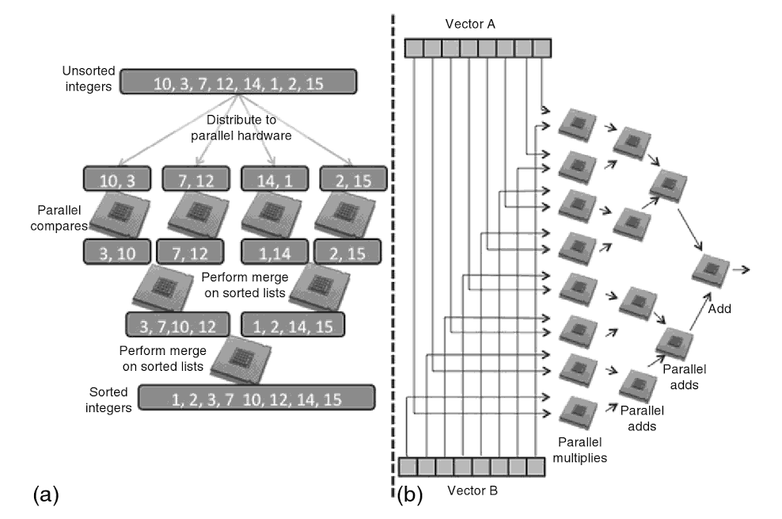
图1.1 (a)简单的排序例子：分而治之的实现，将一个列表划分为短列表，然后对这些短列表进行排序，然后将这些已经排序的短列表进行排序。 (b)矢量-标量乘法：将乘法分开计算，然后将乘法的结果通过一系列操作进行相加。
现代计算系统发展中，并行化和异构化成为一种趋势，这样传统的编程方式就一定会受到冲击。因为CMOS(互补金属氧化物半导体，Complementary Metal Oxide Semiconductor)的功耗和热极限是额定的，微处理器供应商发现硬件的瓶颈很难让设备获取更高的性能，所以其不得不使用多芯片的方式(或定制的方式)来替代单个芯片。因为硬件供应商们已经这样做了，那么对于编程者来说，就再也没有“免费的午餐”了(The Free Lunch Is Over)。同时，需要编程者抽离应用中并行的部分。编程者还要根据相关算法去划分任务，并且将这些划分好的任务映射到不同的硬件平台上。
过去的10年，并行计算设备的数量和计算能力都在快速的增长。近期，GPU出现在计算领域；今天，其能够使用很低的功耗，并提供很高的计算能力，让如今计算机的计算能力达到了一个新的水平。GPU已不是单纯基于驱动的3D实时图像渲染技术的硬件设备，GPU在其他方面的进化也十分迅速，并且成为一种完全可编程的设备，能够对数据和任务并行的任务进行处理。硬件制造商如今将CPU和GPU集成在了一块芯片上面，这将是下一代异构计算的趋势。计算敏感和数据敏感的应用都可以看做为一个任务，任务的代码在内核中。内核可运行在GPU上，GPU使用低功耗和高性能完成相应的任务，而CPU之后仅负责对非kernel代码任务的执行。
很多系统，以及大自然和人造世界中的某些现象，都展示着不同类别的并行和并发：
- 分子动力学——分子之间是互相影响的。
- 天气和海洋模型——成千上万的波浪和潮汐。
- 多媒体系统——视觉和音效，成千上万像素和波形。
- 汽车生产流水线——成千上万的汽车部件，每一款部件都由很多相同的产品线在生产。
并行计算由Almasi和Gottlieb[1]定义，这种计算模式下，很多计算可以同时进行。原理就是将大问题分割成小问题，这样小问题之间没有关联，就可以同时进行解决。这种程度的并行，依赖其实是物质内在的本质(还记得大自然中存在着有很多并行的现象吧)，应用这样的原理就可以来处理手头上的问题。对于算法技巧和软件设计来说，了解哪些部分可以并行也是很重要的。我们先对两个简单例子进行讨论，展示其内在的并行计算：1.两个整型数组相乘；2.文本查找。
第一个例子会将两个整型数组A和B拆分后进行相乘，每个拆分数组中都有N个数组成，然后将乘后的结果存储到C数组中。图1.2展示了拆分的方式。串行的C++代码如下清单1.1所示。
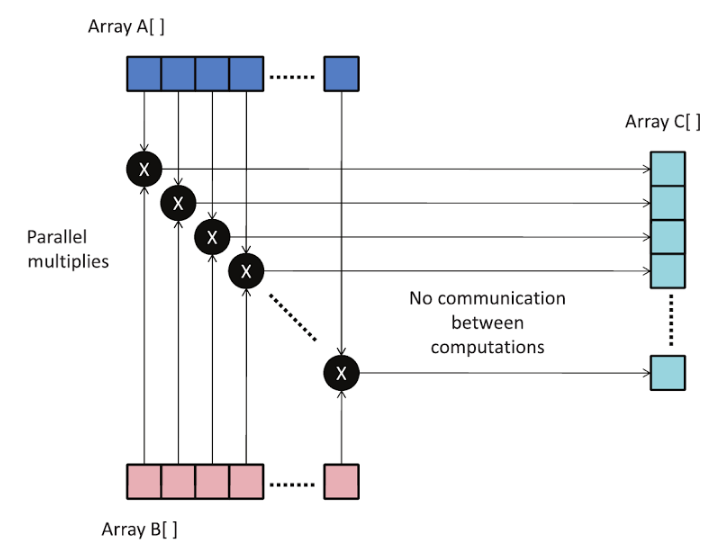
图1.2：A与B数组相乘，并将结果存入C数组中。
// 清单 1.1: 数组相乘
for (int i = 0; i < N; ++i){
C[i] = A[i] * B[i];
}
虽然这段代的计算敏感度并不高，但这段代码确实可以并行。低计算敏感度说明该算法的计算部分操作，要少于内存操作。A和B中的元素都是相互独立的，如果要并行化这段代码，需要选择C++代码段中能够独立执行的代码段进行并行化。这段代码是可以数据并行的，A和B数组可以经过同样的处理，然后产生C数组中的数据。
我们再可以来看一个通过划分方式，实现简单任务并行的例子。任务有在操作系统处理中有着不同的状态，比如：完成、等待、处理、挂起等。这里我们讨论的是，使用整个任务的部分输入作为一个子项进行操作。任务并行可以进一步推广到流水线上，或是复杂的并行交互上。图1.3展示了一个任务并行在流水线的例子，这个例子使用快速傅里叶变化将图像从时域输出到频域上。
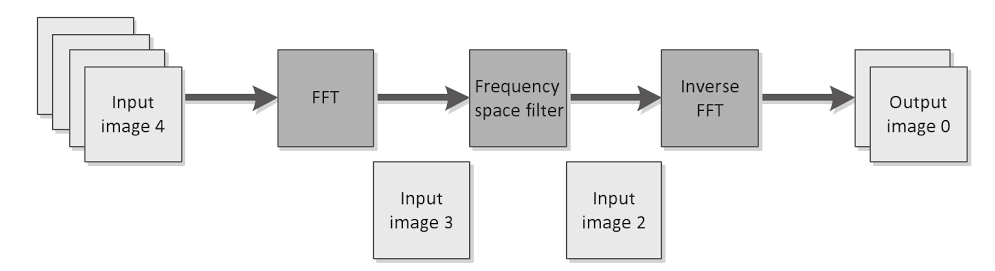
图1.3：FFT的任务并行例子。不同的图像将会被分为三个独立的任务进行。
让我们来看第二个例子。这里我们要尝试对不同的查找词进行分割，然后统计查找词在文本中出现的次数(可见图1.4)。假设查找词有N个，那我们可以将查找词和输入字符串进行匹配(相当于一个任务)。每个例子中查找词都会和输入的文本字符串进行匹配操作。这种方式很高效，并行度不错。不过，每次输入的字符串都要和这N个查找词进行匹配。每个并行任务都在执行相同的操作。与上个例子相比，这是一个任务细粒度并行化的例子。这两个例子展示了数据和任务级别的并行。
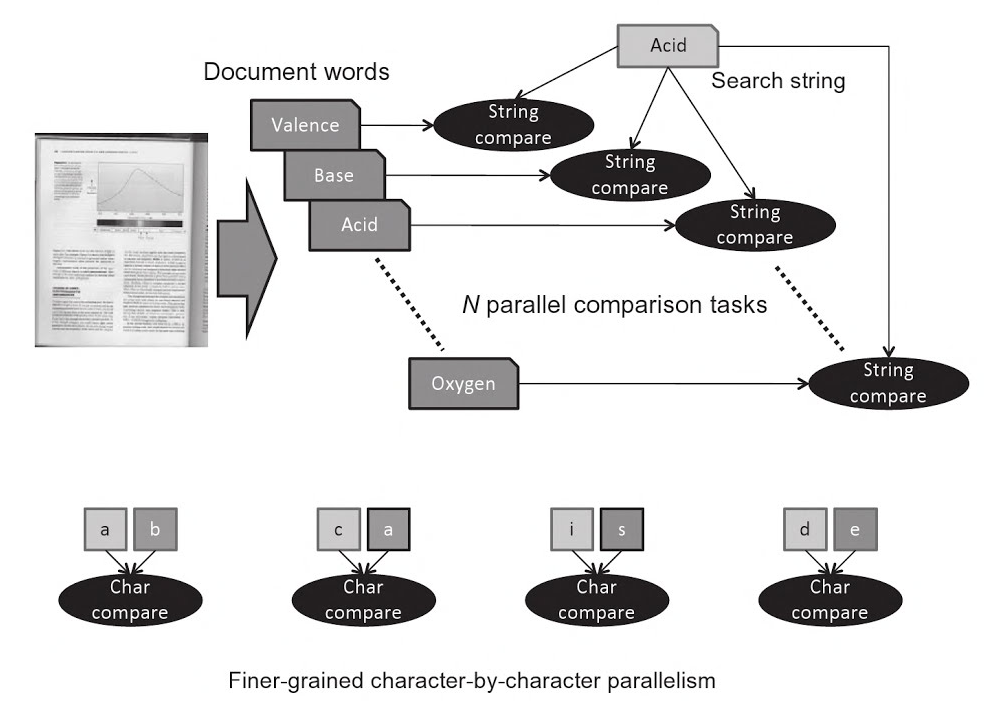
图1.4：任务级并行，多个查找词可以同时进行查找。也展示了，在一个词内，细粒度“字符与字符”相比较的并行性。
匹配数量是确定的，那我们需要将其出现的次数进行相加。同样的，相加操作也可以并行化。这一步中，会介绍“归约”原理，我们将使用高效的方式，利用并行资源来对各个词进行统计。图1.5所示的归约树，就是我们用来处理相加计算的方式，其时间复杂度为O(logN)。
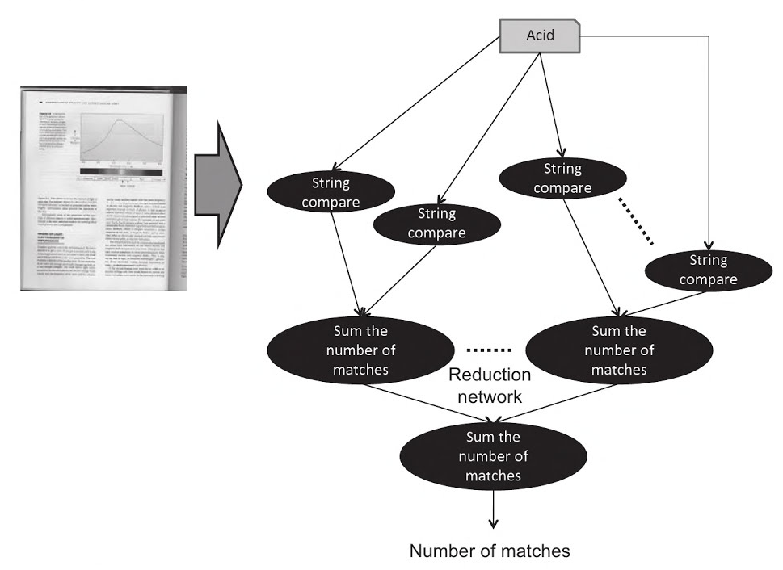
图1.5：结束了图1.4中的字符串比较之后，就要将匹配的结果进行相加，放入到一个结果节点中。
[1] G.S.Almamsi, A Goulieb, Highlu Parraleel Computing, Benjamin-Cummings Publishing Co.. Inc.. RedWood City, Ca, USA, 1989
1.4 并发和并行编程模型
尝试使用OpenCL进行应用开发之前，需要来讨论一下并行和并发执行模型，以便于我们选择合适的模型。虽然，后面的模型OpenCL都能支持，不过具体的底层硬件可能会有一些限制，这就需要进行一定的尝试。
当我们在讨论并发编程时，就意味着独立的系统在执行多个独立的任务。不过，人们一般不会关心这些任务是否真正的在系统中同时执行。例如一个简单的绘图程序，其收到用户使用鼠标和键盘发送过来的输入信号，或更新当前显示的图片。应用可以并发的接收输入信号，并处理与显示相关的对应信号，从而更新显示图像。这些任务的表现看起来是并发的，不过这些任务实际是并行执行。实际上，这些任务执行在一个CPU上，它们不能并行的执行。在这个例子中，应用或操作系统需要在不同任务间进行切换，确保这些任务都能执行在同一个内核上。
并行化关心的是两个或多个事件同时执行，以提高整体性能。比如如下的赋值语句：
// 代码清单1.2
Step 1: A = B + C
Step 2: D = E + G
Step 3: R = A + D
A和D分别在第一和第二步进行赋值，并且这两步之间没有数据依赖，相互独立。第一步和第二步等号左右的数据均不相同，所以第一步和第二步可以并行的执行。第三步数据依赖于第一步和第二步的结果，所以其只能在第一步和第二步执行完成之后执行。
并行编程必须是并发的，不过并发编程不一定并行。虽然很多并发程序可以并行执行，但是互相有依赖的并发任务就不能并行了。比如：交错执行就符合并发的定义，而不能并行的执行。所以，并行是并发的一个子集，并发程序是所有程序集的一个子集。图1.6展示了这三种程序集间的关系。
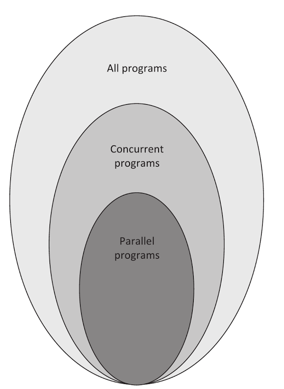
图1.6：三种程序集间的关系
接下来的章节中，会介绍一些知名的方式进行异构编程。这里对并发和并行的介绍，是为第2和第3章介绍OpenCL做好铺垫。
1.5 线程和共享内存
一个执行的程序(称为进程)可能有很多子程序组成，并且这些子程序都有独立的控制流。当该进程启动时，这些子程序就并发的开始执行。这些子程序可以称之为线程。进程中的所有线程都会共享一些资源(比如：内存、打开的文件、全局变量)，不过他们也有属于自己的资源(比如：堆栈、自动变量)。线程使用全局共享地址空间分配出的变量进行通讯。通讯时需要有同步机制来保证同一个内存区域的内容，不会被多个线程更新。
具有共享内存的系统中，所有的处理器都能访问到同一地址空间(比如：能看到同一个全局变量)。共享内存模型中一个关键的特性，就是不需要编程者去管理数据的移动。在这样的系统中，线程如何去更新全局变量，底层硬件和编程者要达成共识，并遵守相关的访问协议。“相关协议”的学术名称为“内存一致性模型”，内存一致性模型已经被很多高级语言所支持，比如：Java、C/C++11和OpenCL。相关的高级结构有互斥量和信号量，以及“获取-释放”语义。程序员会显式告知底层硬件需要使用哪种同步方式，从而能让硬件更加高效的执行并发任务。
随着处理器数量的增加，底层硬件也要花费很大的精力来对共享内存进行支持和管理。总线的长度(与延迟和功耗相关)，硬件结构上接口的数量，以及共享传输总线的数量都将占用很多资源。当我们尝试增加处理器的数量时，这些额外的硬件设备数量将会呈指数级别增长。我们的系统将变得更复杂，同时也增加了很多的额外开销。这些是多核或多处理器系统的弊端，并且这也限制着一起工作处理器的数量。内存一致性模型下，能够使用的处理器相对较少，这是因为共享总线和相干性协议将会成为性能瓶颈。系统中多一些松散的共享内存，相对来说会好一些；当有成规模的内核在共享内存系统中时，其会让系统变得复杂，并且内核间的互相通讯也要付出很高的代价。大多数多核CPU平台都支持某一种共享内存，OpenCL也可以在支持共享内存的设备上运行。
1.6 消息通讯机制
相较共享内存，另一个选择就是消息通讯模型。这个模型中，如果当前正在执行的任务需要某些共享数据参与内部计算，可以通过显式通讯的方式进行获取。这种方式可以在一台物理机上使用，也可以在多台物理机之间使用。任务通过消息通讯的机制对数据进行更新。当其他进程在具有相关数据时，数据传输通常需要一些附加操作，比如：一个发送操作必须与一个接收操作相对应。
这个模型对于编程者来说是透明的，其会包含一个与底层硬件相关，用来发送和接收消息的库。编程者需要对进程间的通讯进行显式的管理。各种各样的消息传递库在19世纪80年代时，就已经出现了。消息传递接口(MPI)库经历了时间的磨砺，在当今环境下依旧是很受欢迎的消息传递中间件[2]。不过，不同的MPI实现版本之间有很多的不同，其会让程序的可移植性降低。
[2] W. Group. E. Lusk, A. Skjellum, Using MPI: Portable Parallel Programming with the Meaasge-passing Interface, second ed.. MIT Press, 1999
1.7 并行性的粒度
不论是在线程中使用共享内存，还在使用消息传递机制，我们都能调整线程的粒度。研究并行计算时，粒度是线程中计算量与通讯量(比如，需要在线程间进行同步的变量)。
并行的粒度由算法的特点所决定，选择合适的并行粒度对于编程者来说很重要，合适的粒度能够在当前设备上获得最优的性能。有时对于粒度选择就像是在分块，然后决定哪些数据给予哪个任务，选择了合适的块大小可以就能在并行硬件上获得性能收益。如何选择并行程序的粒度，可以参考下面列出一些经验。
使用细粒度并行时，需要考虑如下几点：
- 计算量不要过大，这样每个线程都有足够的工作可做。
- 尽可能减少在数据同步上的开销，这样每个线程能够独立的完成自己的任务。
- 负载的划分也很重要，因为有大量的独立任务需要并行执行，设计良好的任务调度器都能灵活控制负载，并保证在多任务运行的同时，让线程上的达到均衡。
使用粗粒度并行时，需要考虑如下几点：
- 计算量肯定要高于细粒度并行时的计算量，因为不会像细粒度并行那样，有很多线程同时执行。
- 编程者使用粗粒度编程时，需要了解应用的整体结构，让粗粒度中的每个线程作为任务，服务于应用。
结合给出的建议，考虑一下自己的应用要选择哪种粒度的实现。其实，最合理的粒度取决于所要使用的算法和运行的硬件平台。大多数情况下，当同步和通讯的开销大于计算，那么将并行粒度加大，更有利于控制同步和通讯所需的过高开销。细粒度并行能减少负载不均和访存延迟在性能上的开销(对于GPU来说更是如此，其为粒度之细可以切换线程时达到零开销，同时也能隐藏访存延迟)。
当一个算法需要对大量数据进行同一组操作时，就可将数据视为向量，执行同一操作时，多个数据作为输入，经过向量操作后输出多个数据。这种执行方式就是利用单指令多数据(SIMD)的方式对数据进行处理，可并行硬件可以利用这种执行方式，并行的对不同的数据进行处理。这种粒度的并行与向量的大小有关，通过SIMD执行单元的多数据处理来获得应用性能的提升。
寻找和尝试最好的计算粒度时，是否考虑过为什么不将统一程序中的所有副本拷贝到其他处理单元和节点上，如果能够这样，是不是就不用理会执行单元的执行顺序，并且能让程序高效的运行在一个有着多处理器的共享系统上呢？SIMD模型与单程序多数据(SPMD)模型很相似，SPMD模型和SIMD模型都不会对指令边界进行同步的限制，并且允许这些副本任务或内核能够并发的执行。
1.7.1 数据共享与同步
开发异构软件还有一个很关键的因素——数据量。像想一下，两个任务没有任何数据需要共享，当运行环境或操作系统中的运算资源充足，那么这两个任务可以并行执行。如果在系统运行第一个任务时，第二个任务需要使用到第一个任务产出的结果。要是存在这样的数据依赖关系，那么就必选要介绍一下如何在并行或并发任务时，进行数据的同步。并行程序至少需要执行到一个同步点，才能够进行数据的同步。当然，这会让编程的难度加大，让异构编程更具有挑战性。
编写并发软件的时候，数据共享和同步扮演着很重要的角色。数据共享就有如下的用途：
- 一个任务中的输入，依赖于另外一个任务的输出——例如：生产者-消费者模型、流水线执行模型。
- 需要将中间结果进行综合(比如：归约，还有图1.5里的例子)。
理想状态下，可以尝试将应用能并行的部分剥离出来，确保并行的部分没有数据依赖，不过这只是理想状态而已。栅栏和锁有时会用来做数据的同步。虽然，现在只是举了这个例子，不过在后面的章节中我们将在OpenCL中重温这个问题。OpenCL提供相应的机制，来完成主机端和设备端的数据同步，或者是完成任务间的数据同步。
1.7.2 共享虚拟内存
很多异构系统，会将任务分散在不同的设备上执行，并且使用显式同步和通讯机制，来完成不同任务在不同设备上的数据同步。共享虚拟内存设置在硬件和软件层面，能够让不同的设备看到的是同一块内存。这个机制让编程更加简单，并且能节省显式的通讯开销。OpenCL 2.0标准开始支持共享虚拟内存，减少了在程序执行中高昂的通讯开销。同样，这样的机制就不需要在每个设备上都存储一组数据副本，也就可以节省内存的开销。当然，我们会在后面章节中，在与OpenCL上下文的相关章节中，讨论更多共享虚拟内存的细节。
OpenCL2.0提供了三种共享虚拟内存：
- 粗粒度共享缓存
- 细粒度共享缓存
- 系统级细粒度共享缓存
使用共享虚拟内存需要OpenCL实现将系统中主机和设备端的地址链接起来。这就允许在OpenCL内核中使用数据结构的指针(比如：链表)，之前版本的OpenCL标准是不支持内核中使用自定义数据结构指针。粗粒度缓存支持通过API的调用，来更新整个缓存的内容。细粒度缓存和系统级细粒度的粒度为字节级，这就意味着无论是主机端，还是设备端，对数据的更新将会立即同步。细粒度共享内存是按内存一致模型中定义好的内存序，在同步点对数据进行同步。第6和第7章中，我们会对这部分内容进行更深层次的探讨。
1.8 使用OpenCL进行异构计算
读者们应该对并行原理和异构计算的背景有了一定的了解，下面我们来看看哪些特性在OpenCL中得到了支持。这里我们也来简单的回顾一下OpenCL的历史。
OpenCL是一个异构编程架构，其管理者是非盈利技术组织Khronos Group[3]。OpenCL是一个应用开发框架，在其框架下开发的应用，能够在不同的硬件供应商的设备上运行。第一版的OpenCL(1.0)标准在2008年正式发布，并出现在苹果Mac OSX雪豹系统当中。2009年，AMD宣布其旗下的显卡支持OpenCL。IBM也在该年宣布，其XL编译器在Power架构的处理器下支持OpenCL。2010年，Khronos Group发布了OpenCL 1.1标准。2011年，发布了OpenCL 1.2标准。本书的第一版介绍了很多OpenCL 1.2的特性。2013年，Khronos Group发布了OpenCL2.0标准，其包含如下新特性：
- 嵌套并行化
- 共享虚拟内存
- 管道内存对象
- C11原子操作
- 增强图像支持
OpenCL支持多级别的并行化，能够将应用高效的映射到同构或异构、单独或多个CPU或GPU上，以及其他硬件供应商提供的硬件系统当中。OpenCL定义了一套“设备端-主机端”语言，主机作为对其他设备的管理者。设备端语言被设计用来映射内存系统和执行模型。主机端语言用较低的开销，为复杂的并发程序搭建任务管道。总的来说，就是提供了一种方法，让开发者能更高效的在OpenCL的环境下进行算法设计及实现。
OpenCL支持基于任务和基于数据的并行。OpenCL的内核类似于SPMD模型，内核就是并行单元(OpenCL称为工作项)中执行的实例，内核实例创建并入队后，会被映射到支持标量和矢量的硬件上运行。硬件平台供应商都在迅速的对OpenCL进行支持，将OpenCL标准中所提到相关内容在硬件层面上给予实现。有了这些供应商，就代表着OpenCL具有很大的市场价值，从手机端与嵌入式平台(ARM，Imageination，MediaTek，Texas Instrument)，到桌面和高性能计算(AMD, Apple, Intel, NVIDIA和IBM)。更多架构的CPU已经支持OpenCL(包括X86, ARM和Power)，以及以吞吐量和向量处理的著称的GPU，还有能细粒度并行的设备，比如FPGA(Alter, Xilinx)。更重要的是，OpenCL是跨平台、全行业支持的，其有良好的编程模型，值的开发者学习和使用。OpenCL将会在越来越多的地方是用到，并且使用和学习的门槛将越来越低。
OpenCL 2.0开始支持共享虚拟内存，后面的章节中会详细探讨。共享虚拟内存是一项很重要的特性，其对能减轻编程者的负担，特别是在类似APU这样使用统一物理内存的系统上。OpenCL 2.0也支持内存一致模型，提供“获取/释放”语义以缓解编程者在不明确的锁上耗费不必要的精力。支持共享内存通讯、管道，还有其他很多OpenCL 2.0的新特性将在后面的章节中一一详细介绍。
[3] Khronos Group, OpenCL, 2014. https://www.khronos.org/opencl
1.9 本书结构
- 第1章，介绍并行算法和软件开发的相关原理。其中包括并发、线程和不同粒度的并行化的原理。
- 第2章，介绍一些支持OpenCL的硬件处理器，包括CPU、GPU和APU。还有不同的指令，比如SIMD和VLIW。该章也会涉及多核处理器的原理，以及面向吞吐量的系统，当然也有更加高级的异构架构。
- 第3章，开始介绍OpenCL，包括主机端API和设备端C语言。这章会让读者尝试使用OpenCL进行编程。
- 第4章，深入了解OpenCL编程实例，包括直方图、图像旋转和卷积，并演示一些OpenCL2.0特性，比如管道内存对象。其中的一个例子使用到了OpenCL C++包装器。
- 第5章，讨论并发和OpenCL编程模型。这章中，我们会讨论内核、工作项，以及OpenCL执行和内存模型。也会展示如何使用OpenCL对任务进行排队和同步。这会让读者更加了解如何书写OpenCL程序，并与OpenCL内存模型进行互动。
- 第6章，讨论OpenCL主机端的内存模型，包括资源和内存管理。
- 第7章，继续讨论OpenCL设备端的内存模型。设备端的内存模型将解释执行单元如何从不同的内存地址上对数据进行访问。这章也会更新OpenCL内存一致性模型，包括内存顺序和范围。
- 第8章，讨论OpenCL在三种完全不同的异构平台上的表现，这三个异构平台包括：(1)AMD FX-8350 CPU (2)AMD Radeon R9 290X GPU (3)AMD A10-7850K APU。这章也会提到内存方面的优化策略。
- 第9章，提供一个学习的例子，了解一下图像的聚类和搜索。
- 第10章，介绍如何使用AMD CodeXL对OpenCL程序进行分析和调试。
- 第11章，介绍
C++ AMP，能够让使用者使用C++来发挥硬件并发的能力。 - 第12章，介绍WebCL，是基于Web的应用使用OpenCL，当硬件支持OpenCL时，能达到加速网页应用的性能。
- 第13章，讨论如何使用其他高级语言来使用OpenCL，比如：Java、Python和Haskell。
第2章 设备架构
2.1 介绍
OpenCL的发展也让很多行业团体感到很高兴，因为OpenCL通过标准化的编程模型就能让从市场上可以买到的设备，获得更高的性能。每个硬件厂商对OpenCL都有特殊的定位，并且会让一些特殊架构的处理器来支持OpenCL的一些特性。使用者可以通过自己的尝试，发现硬件上支持的一些特性(比如，clGetDeviceInfo能够查看硬件设备所支持的一些特性)。
虽然，OpenCL很依赖硬件，但是在算法层面更依赖于内核的实现，具体平台表现的独立性依旧是一个目标(与显示相比)。OpenCL2.0标准中，加快向这个目标迈进的步伐。作为开发者，我们需要了解不同硬件特性潜在的优势，其中设备扮演着重要的角色，并且不同的设备有着对应的硬件架构。当读者已经对目标硬件足够了解时，就能在设计并行算法和软件时做出更加理性的抉择。这里的“了解”指的是了解OpenCL中编程、内存和运行时模型设计背后的哲学。
OpenCL并行模型希望能够在现有的硬件上高效的运行相应应用，比如在串行处理器、对称多处理器、多线程或SIMD，以及一些支持向量的设备。本章我们会讨论这些设备，以及对设备的整体设计。
2.2 硬件的权衡
如果有点使用图形API和像素渲染器的经验的话，就更容易明白为什么OpenCL要以GPU作为目标，专门设计的一门语言。如今高性能计算市场上，OpenCL已经是一种很流行的编程方式。随着支持OpenCL平台数量的增长(特别是嵌入式领域)，OpenCL的影响力在逐渐增强。
如果对GPU不是很了解的话，也不用担心，请安心的继续阅读。不过，当要为GPU写一份通用的代码，那么就会有很多问题。比如：设备就是一个图像处理器，还是更通用的设备么？如果是图像处理器，那么该设备就一定具有图像特定的逻辑特点，还是因为其整体架构？
更加深入下去还有很多问题会冒出来。那么，问个简单点的：一个GPU有多少个芯呢？要回答这个问题，需要看一下这个“芯”是如何定义的。还有，“多芯”设备和“多核”设备又有什么不同？通常，因为不同架构上的功耗和晶体管数量是不同的，所以会选择不同的方式进行加速。比起要权衡如何对电气单元进行计算，硬件开发者们通常还要为如何在硬件上编程进行考虑。权衡这些因素后，硬件开发者会创建出一个具有“很大发散性”的设计。
多核处理器的设计，在保留了单个处理器的时钟周期和硬件复杂度同时，增加更多处理核。这样的设计不会让处理器上晶体管数量增加，以减少功耗。谨慎的设计下，处理器的功耗被控制在可接受的范围内。SIMD和VLIW(very long instruction word)架构能够通过提升算术运算和逻辑控制的比值，做更多工作。这样的情况下ALU会对于如此之少的工作量感到不满。因此，多线程从另一个角度来解决这个问题。与增加算术计算和逻辑控制的比值不同，多线程增加了工作量。进行计算的同时，进行逻辑控制，比如内存搬运，这样可以增加我们队设备的利用率。权衡缓存和内存系统的同时(不同的架构下进行不同的访存方式)，也要权衡在这期间处理器使用分配。
根据对核芯的定义，我们需要权衡是使用单个核芯，还是多个核芯的硬件。不过，对与整个设备的不同功能单元，需要进行不同程度的权衡。异构化硬件能够同时对多种算法开启硬件优化，这样就能从硬件方面提高算法性能。当代的系统级别PC，大多数都是GPU+CPU的架构组合(系统中还分布着其他低性能处理器)。最新一代的高性能处理器将GPU和CPU融合到一个设备上，AMD将这种架构成为加速处理单元(APU)[1]。
现实社会中，我们也能看到这些不同的设计结合了不同方面的因素，以不同的价格对应不同的市场。
本节我们会研究一些架构的特点，并讨论各种常见架构如今的应用程度。
2.2.1 频率提升带来的性能提升和局限性
作为一个开发人员，试想我们正在编写一款线性软件：执行一个任务，完成这个任务，继续执行下一个任务。对于写惯线性程序的人来说，去编写并行代码很困难；也就是SIMD或向量并行与图形设备上处理的方式差不多。多组像素将相对简单的逻辑映射到编程层面。其他程序中，逻辑层面没有有效的编程向量，提取SIMD操作将会更加困难。因此架构在转为并行化、极端化多线程并行前，旨在为单一线程的架构提升性能。而现在的架构市场，则在向高性能专业机器转变。
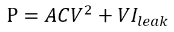
2.2.2 超标量执行
超标量和乱序作为扩展解决方案，已经在CPU上存在了很久；奔腾时代开启时，这两个扩展就包含在x86的设计中。CPU主要依赖的信息为指令流中的指令，或是对未使用的功能单元进行调度(如果该信息可用的话)。图2.1中就展示了一个这样的例子。
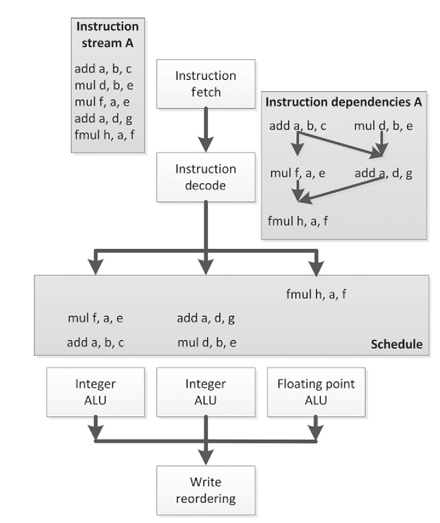
图2.1 指令流中简单汇编指令的乱序执行。注意，在这种汇编语法中，目标寄存器列在最前面。例如：add a, b, c为a = b + c。
乱序逻辑的主要受益人就是软件开发者们。硬件上自动将编程者代码并行化，串行的代码不需要做任何修改就能比原来执行的速度快很多。超标量让CPU主频设计领先了10多年，其让CPU总体性能成超线性增长的趋势，即使是在流行大规模生产设备的时代，这种设计都未过时。不过，这种超时代的设计，也是有缺陷的。
乱序调度逻辑需要是用到大量的晶体管，需要增加[译者注1]CPU的芯片面积，以存储队列中未完成(in-flight)的指令和存储指令间的依赖关系，以应对执行期间硬件上的动态调度。另外，要让投机(speculative)指令迅速执行，就需要扩大并行的乱序指令窗口。投机指令的结果是一次性，并且会浪费更多的资源。结果就是，乱序执行让CPU的回报逐渐减少；行业上已经采取其他方式通过减少晶体管的体积，来达到增加性能的目的，所以即使在这样产生的高性能设备上，超标量逻辑依旧是可行的。嵌入式和其他特殊设备上，硬件不会并行化串行代码，这些较为特殊的设备的设计方案都很小众化，在芯片发展历史上可能都不常见。
良好的超标量处理器数不胜数，控制数据公司的西摩·克雷在90年代设计的CDC 600[译者注2]就是一款很不错的多RISC(Reduced Instruction Set Computer，精简指令集计算机)设计。目前，高端CPU基本上都支持超标量处理。很多GPU同样具有超标量的能力。
2.2.3 超长指令字
为了增强处理器的指令并行性，VLIW的执行十分依赖于编译模式。其比完全依赖于复杂的乱序控制逻辑、依赖硬件要方便的多，超标量和VLIW的执行都会依赖于编译器的分析。为了替代现有的标量指令流，VLIW处理器上发出的每一条指令，都包含了多个并发的子指令，并且这些指令会直接映射到处理器的执行流水线上。
VLIW的执行流程如图2.2所示，这幅图和图2.1是一样的。不过2.2中预取去了三条，而不像2.1中那样一条一条的取指令。我们现在看到的这些指令流的依赖结构都是线性的，并且硬件也将会是这样处理这些指令，而不是提取和跟踪出一个更加复杂的依赖图。VLIW指令包都是已编码的，并且指令流中的每个独立的部分都会映射到处理器上特定的计算单元执行。很多VLIW设计中，计算单元都是异构的，因此这些指令只会安排给特定的VLIW指令流。其他很多架构都能作为异构硬件，比如：能在任意位置发出任意指令，并且只有依赖信息对这样的架构有所限制。
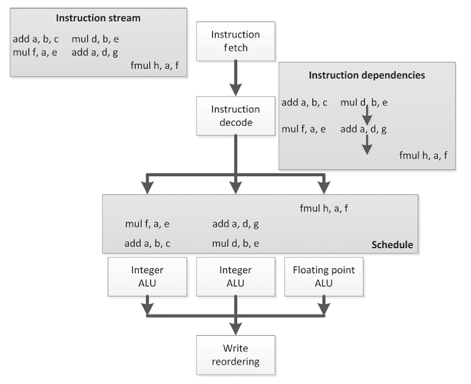
图2.2 依赖于图2.1中的乱序图表
图2.2所示例子中，我们能看到指令的分配有间隙：前两条VLIW包都缺少了第三条子指令，并且第三条VLIW包缺少了第一和第二条子指令。显然，这个例子很简单，包中几乎没有什么指令，不过这对于VLIW架构来说是一种通病，因为编译器没有办法将所有指令包都填满，所以执行效率不会特别高。这可能是编译器的限制，或是这种指令流的先天缺陷。后面例子的不会比乱序执行更复杂，通过对硬件调度的改良，降低复杂度反而能得到更好的性能。前面的例子中，都可以从执行效率的损失和从减少硬件控制开销提高性能两方面对硬件进行权衡。另外，VLIW指令在执行方面还有另外一部分开销，那就是相应编译器的开发的成本，而超标量的执行就没有这部分开销。
VLIW设计通常出现在数字信号处理芯片上。当前的高端设备包括Intel的安腾处理器(以显式并行指令计算著称)和AMD的HD6000系列GPU。
2.2.4 SIMD和向量操作
SIMD旨在将向量并行通用化，这种方式与之前提及的方式有些不同。VLIW和硬件管理的超标量执行方式都是通过查询地址，并行执行同指令流中不相关的指令，而SIMD与向量并行可以让指令在数据上并行执行。
封装单个的SIMD指令，需要同时对多个数据元素执行某种操作。相比标量操作，其他的方式都是要将指令并行化。向量操作将向量化操作通用化，并且向量操作通常会用来处理较长连续的数据序列，通常会使用流水线的形式进行向量操作，而非同时对多个数据进行操作，并且向量操作对连续、密集的内存读写给予了更多的支持。
图2.3中的流水和之前图中的不大一样，图2.3中是顺序的，之前的都是乱序的。不过，现在这些指令以向量的形式在四个ALU上执行。整型指令会一个接一个的通过左边四个整型向量ALU，而浮点指令则以相同的方式通过右边四个浮点ALU。需要注意的是，这个例子中指令以线性的顺序触发，不过没理由排除这些操作不是在超标量或VLIW的流水线上完成，这两种架构我们在之前的章节中已经讨论过。
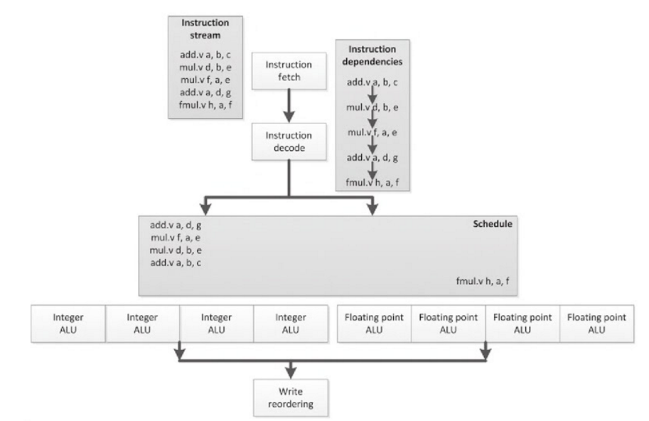
图2.3 SIMD顺序执行单个指令，多个ALU同时对数据进行处理
SIMD的优势与ALU的工作方式有关，大量的调度工作和逻辑解码工作都可以省去。现在，我们能使用一条指令执行四个操作，单条指令只对调度有依赖，而不用去管其他指令是否与该指令有关。
当然，这里也要给出硬件权衡的建议。因为很多代码无法数据并行化，那么就无法使用向量操作进行性能提升。另外，这个工作无法交给编译器，因为编译器很难对数据并行的代码进行提取。例如，向量化循环就是一项从未停止的挑战，即使很简单的情况都很难成功。很多情况下，因为晶体管瓦数(功耗)的原因，也可能会将ALU用尽。
向量处理器源于超级计算机领域，不过SIMD设计在很多领域都有应用。CPU通常会包含SIMD流水线，用来显式执行标量指令流中的SIMD指令。x86芯片上包含了多种指令集，比如：SIMD扩展(SSE)和高级向量扩展(AVX)；PowerPC上又AltiVec扩展指令集；ARM上有NEON扩展指令集。GPU架构在历史上为了支持像素向量，其显式包含了SIMD操作，很多现代GPU依旧能能显式的对SIMD向量进行操作。当然，GPU上也是单通道标量指令流。因为很多逻辑使用向量的方式进行处理，让这些支持向量操作的机器被称为向量机。例如：AMD的Radeon R9 290X架构就能支持64路SIMD操作。这种宽度的向量指令通过多个时钟周期，通过一个16通道的SIMD单元分发到流水线上。
2.2.5 硬件多线程
并行的三种常见的形式：指令并行，数据并行和线程并行。换句话说，并行的方式就是执行多个独立的指令流。这种方式需要并行机器(多核)的支持，不过对于单核CPU来说这种方式也很用。如之前所讨论的那样，依赖硬件和编译器从指令流中抽取独立指令的方式是非常困难的，甚至是不可能的事。从两个独立的线程中抽取可并行的指令是毫无意义的事，因为线程已经确认其执行的就是相互独立的显式同步指令块。实现硬件多线程的挑战在于管理额外的指令流，以及第二条指令流需要了解寄存器和高速缓存的状态。
这里有两种方式实现硬件多线程：
-
并发多线程(SMT)
-
时域多线程
图2.4中展示了SMT的方式。这种方式中，多线程的指令在执行资源上交替执行(通过超标量扩展的调度逻辑和线程资源)。
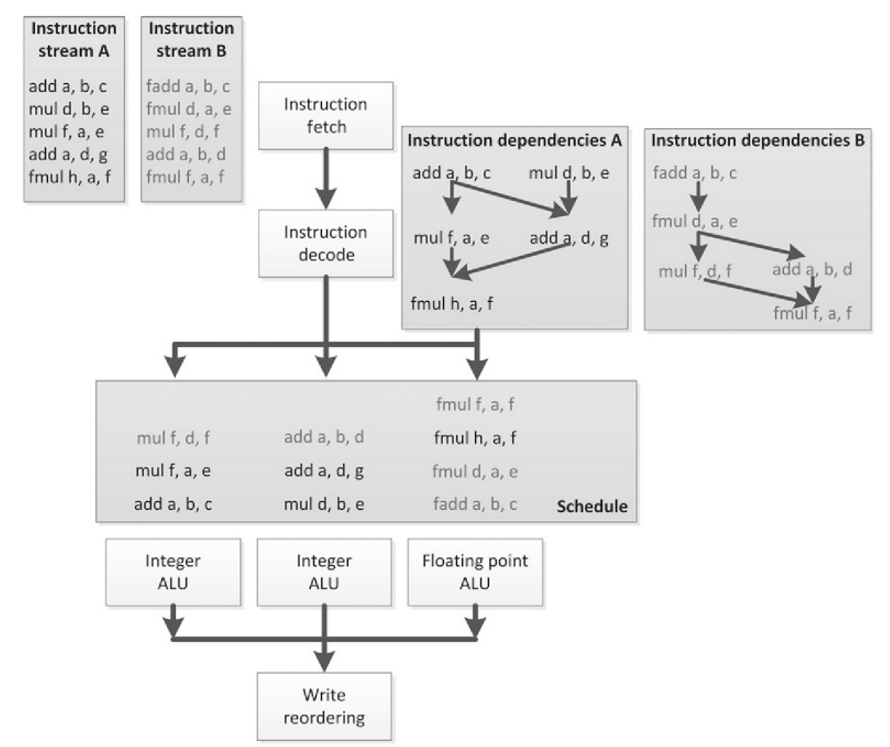
图2.4 一种是图2.1中的乱序调度形式，另一种是线程并发执行方式
图2.4中不管是哪种方式，出发点都是为了更好的利用执行资源。以更高的执行资源使用比例来做更多有用的工作。这种方式的缺点就是需要对更多的状态信息进行保存，并且会让指令间得依赖关系和调度逻辑变得更加复杂。就像图2.4中那样，要对两种不同依赖方式、执行资源，以及执行队列进行管理。
图2.5展示了一种更简单的方式，使用时间片的方式在硬件上实现多线程。这种方式中，每个线程都能通过轮询的方式连续执行。其目的很简单，图中两个线程共享一个ALU。
这种方式有以下几种优势：
-
调度逻辑简单。
-
流水线的延迟可以隐藏对多个线程的切换(调度)，减少转发逻辑。
-
当有线程缓存未命中，或等待另一个分支计算的结果等之类事件，都能通过改变线程指令顺序进行掩盖，并且执行更多的线程能更好的掩盖流水线上的延迟。
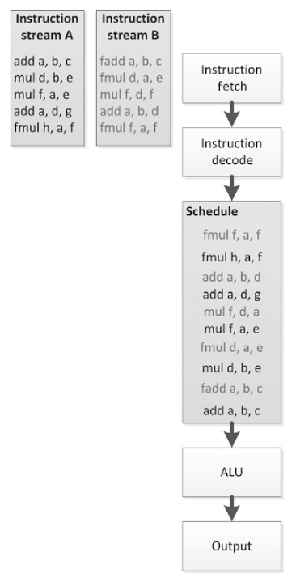
图2.5 两个线程使用时间片的方式进行调度。
最后的这种方式，可以有效的降低实现复杂度。很多架构都能运行很多的线程(虽然有时候没有必要这样做)。当一个线程达到某些点时，就会从就绪队列中删除这个线程(就绪队列只存储已经调度了的可执行线程)。一旦这些点错过了，对应的线程将会放在就绪队列的最后。虽然，这种方式会让单线程的执行速度没有乱序的方式快，不过这种方式的吞吐量保持在较高的水平，充分利用计算资源，并且逻辑控制的复杂度过高。换个角度来看，这种重多线程的方式可以看做为吞吐量进行的计算：以延迟换取最大的吞吐量。原理图为图2.6。
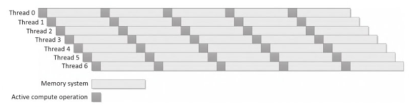
图2.6 通过时域多线程的方式，来你做吞吐量的计算：多个线程交替执行，以保证设备处于忙碌状态，不过每个独立线程的执行时间要多于其理论最小执行时间。
两种硬件多线程实现方式是相同的。MTA设计源于Tera(一款经典的时间片多线程超级计算机)，这种设计难以投入实际生产；不过，Cray随后的实现就不一样了——MTA-2，其利用每个CPU上的128个寄存器迅速的切换线程(包括线程的状态)，并且忽略已经停止的线程。标准AMD皓龙处理是基于Cray的设计，其对MTA的扩展设计——XMT，将会更加适应未来的多线程处理器。Sun的尼亚加拉系列芯片就实现了多芯多线程的设计(每个芯上8个线程)，为了让数据中心的工作量，以到低耗能和高吞吐的方式完成。Intel奔腾4和之后的Nehalem和其他继承者们上都实现了一种名为“超线程”的SMT设计。现代GPU每个芯上可以在同一时域中运行大量的线程，具体线程的数量收到一般计算资源的限制：目前的这代AMD GPU中，通常一个芯开启8-16个线程，就能够隐藏延迟和停顿。
2.2.6 多芯架构
从概念上来说，增加时钟周期内工作量最简单的方式，就是将单一芯片做的事情，克隆到多个芯片上去做。这种最简单模式下，每个芯上都是独立运行，共享数据存储在系统内存中，通常会遵循缓存一致性协议。这种设计就是对传统多插槽服务器对称多处理系统(multisocket server symmetric multiprocessing system)的缩减，并且在其基础上对性能进行了大幅度的提升，在某些情况下会有十分极限的加速效果。
多芯系统会以不同的形式出现，并且有时候很难对“芯”进行定义。例如，主流高端CPU上通常都包含很多的功能模块，这些功能模块中除了逻辑接口、内存控制器之类的功能，其他功能都是相对于其他“芯”独立的。然而，这个界限有时也会变得模糊。例如：AMD的推土机(Steamrooler，高功率核芯)设计，其设计就要比彪马(Puma)的设计简单许多(详见图2.7)，共享功能单元会在核芯之间形成一种可以拷贝的单元，这种单元被称为模块。传统的设计中，因为硬件需要交替执行浮点指令，在具有共享浮点功能的流水线上，所以单线程将会在多个核芯上切换执行。这种设计旨在提升功能单元的占用率，从而提高执行效率。
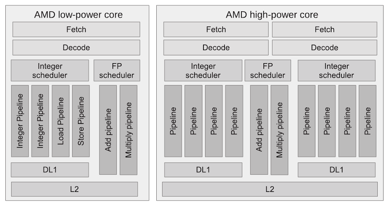
图2.7 AMD彪马(左)和推土机(右)高端设计(这里并未展示任何共享模块)。彪马采用的是低功率设计，这种设计遵循传统的方式，将功能单元映射到每个核芯上。推土机则让两个核芯共享一个模块，图中两个核芯就共享了一个浮点单元。
同样的，在GPU设计中对于“芯”的定义也不尽相同。当代GPU具有几十个“芯”——目前高端设备上都由32个或64个芯，其复杂度依赖于特定的架构。很多GPU设计，例如AMD的GCN(Graphics Core Next)架构[2]，以及英伟达的费米和开普勒架构[3]，这些设计都会跟随一个额外的类似中央处理器的芯片。不过，有些设计与这些设计有着本质的不同。例如，我们来看一下AMD Radeon HD6970高端显卡的内置图，我们就能看到与推土机类似的设计。虽然这个设备只有24个SIMD核芯，但是观察其执行单元，我们可以使用一种最公平的方式与传统CPU进行比较，这些SIMD核芯只能执行ALU操作——浮点和整型操作。指令调度、解码和分发都通过“波”调度单元执行。因为调度单元是一个宽IMD线程上下文——称为“波面阵”，所以其调度器就命名为“波”调度器。的确，在AMD Radeon HD 6970上又两个“波”调度器(以避免提升设计的复杂度)，不过这款显卡的低端版本中，只能使用一个“波”调度器和一排SIMD核芯。
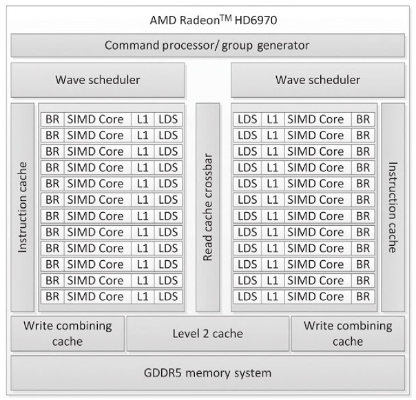
图2.8 AMD Radeon HD6970 GPU架构。这个设备由两部分组成，每个部分的指令控制(调度和分发)通过“波”调度器进行。24个16通道的SIMD核芯，每个SIMD通道上执行4路VLIW指令，包含私有一级(L1)缓存，并且共享本地数据(通过便笺式存储器)。
2.2.7 集成:片上系统和APU
嵌入式领域中，异构方法和多芯设计是一样的。为了达到低能耗，嵌入式开发者们构建出复杂的片上系统，这个系统将很多组件压缩到一个芯片上，这是种性价比十分高的设计。使用这种方式将特定的组件合并，就能在某些特殊的功率要求情况下对设备进行优化，这点对于移动领域来说十分重要。
片上系统有如下优点：
-
将很多元素融合在一个设备上，这样在生产的时候一次就能搞定，避免在制造阶段耗费太多成本。
-
更少的功能将会降低设备上的面积占用率，可以节省功耗和降低设备体积，这对于移动通讯领域很重要。
-
更短的距离意味着数据交互和信息传递完全可以在一个内存系统中进行，并且降低了交互的功耗。
-
低通讯延迟可以增加处理器对负载分发的次数。
手机领域就有该方式的成功案例，比如高通的金鱼草(Snapdragon)和德州仪器的OMAP系列。这种设计与在ARM上的实现称为指令集架构(ISA)——一个移动GPU、内存控制器和各种无线和媒体处理组件。高性能领域，索尼、松下和IBM开发了Cell宽带引擎处理器(Cell/B.E.)，其结合了一些体积小、性能高、传统的全功能核芯，目标就是为了让每一瓦功耗能做更多的工作。AMD和Intel都开发出了结合CPU和GPU的片上系统，AMD的片上系统称为APU，其将高性能显卡和CPU打包在一起，以提高芯片工作的效率。
2.2.8 高速缓存层次结构和存储系统
早些年的超级计算机上，内存带宽和延迟都能满足CPU，通常什么时候需要就去访问对应内存，这种情况持续了好久。如今，CPU端发出一条内存请求不会有之前那种延迟，相应的数据可能会在成百上千个CPU始终周期后返回。单线程CPU上，乱序逻辑不可能复杂到能够掩盖很多的延迟。
幸运的是，大多数应用都不会完全独立的对内存进行访问。通常，内存访问的模式会在局部，形式将会是下面任何一个：
-
空域：两个以上(包括两个)的读或写操作，对内存上(一定程度上)附近的地址。
-
时域：在相对小的时间窗内对同一地址进行两个以上(包括两个)的读或写操作。
通过这两种局部方式可以得出结论，如果我们要存储从某个内存地址，以及从其临近地址读取的值，读取之后将会再次使用到这些值。利用这个结论，CPU的设计者们会在CPU到内存缓存中间添加很多缓冲层，以便对内存访问进行优化。
高速缓存的设计也有很多，不过这些设计可以根据所依赖的负载分为两类。CPU高速缓存倾向于减少延迟。为了达到这个目标，缓存通过复杂的层次结构，将要使用的数据放在离CPU较近的地方。乱序逻辑只能掩盖有限的延迟，所以访问到数据所耗费的时钟周期越少越好。另外，让数据接近执行单元也能最小化功耗：长距离的数据搬运很占CPU的功耗。
吞吐处理器需要对延迟有更多的容忍，使用线程是为了隐藏指令申请和数据返回的延迟。这种设计的目的是，让缓存来减少延迟，因此大型的多层级结构是不常见的，更多的是减少有限的内存上的总线流量。小型缓存允许邻近访问，但在很长一段是间不会被复用，所以这样的缓存更多扮演的是空间过滤器。宽SIMD单元和编程模式的目标——有效的合并内存访问，增加内存交换的规模。这样的结果就是，计算单元在处理逻辑时，能对使用更多的晶体管。另外，高延迟、高带宽的内存交互能让这种设计工作更加高效。我们经常在GPU设计中看到一种更加偏向于空间局部性的扩展设计，就是将内存设计成可二维访问的模式，从而让缓存保存更多有效的数据。
包括GPU和Cell处理器的一些设计，包括软件管理的暂存式存储器空间或是代替缓存层次结构的设计。这些设计中，给定功耗下内存都有很高的性能和空间预期，不过这样的设计对于编程来说是非常复杂的。
事实是任何给定的设计，都需要去权衡缓存层级和处理器基础功能的负载。不幸的是，对于所有处理器设计，从负载组合角度无法给出一个完美的答案。
[1] Advanced Micro Devices, Incorporated, AMD Fusion Family of APUs: Enableing a Superior, Immersive PC Experience, Advanced Micro Devices, Incorporated, Sunnyvale, CA, 2011
[2] Advanced Micro Devices, Incorporated, White parper: AMD Graphics Core Next(GNC) Architecture, Advanced Micro Devices, Incorporated, Sunnyvale, CA, 2012.
[3] NVIDIA Corporation, NVIDIA Kepler Compute Architecture, NVIDIA Corporation, Santa Clara, CA, 2014.
[译者注1] 原文:...hence CPU die area...。通过对上下文的分析，译者认为这里的“hence”是误写的单词，正确的单词应该是“enhance”。文中使用“enhance”的译意。
[译者注2] 1964年，控制数据公司(Control Data Corporation)研制出了世界上首台超级计算机“CDC6600”。该超级计算机也是超级计算数据中心的现代鼻祖，由西摩·克雷(Seymour Cray)为伦斯辐射实验室而设计。
2.3 架构设计空间
现实世界中，我们所见的架构远比之前提到架构复杂。我们所使用的计算机架构在各个方面都会发生很大的变化，具有很大的设计空间。即便是当前公开的架构，不同厂商的实现都有不同。
当前一些人对于架构的观点过于简单。例如，在GPU领域，我们经常会遇到下面的几种情况：
- CPU是串行的，GPU是并行的
- CPU只有几个核，GPU有数百个核
- CPU只能运行一两个线程，GPU可以运行成千上万个线程
当然，现实中的设计要远比上面描述复杂的多，比如，缓存内部的差异、流水线的数量、流水线的类型，等等。本章的主题就是要来聊一下CPU和GPU的异同。目前我们能够看到的架构只进行了简单的分类，只是对一些基本设计进行参数化的组合。程序员需要了解这其中的差异，只有专家才会去关心内存大小和硬件协作指令的比例关系。
本节中，我们将会讨论一些实际存在的架构，还会聊一聊哪里适用于哪种对应的架构，以及根据我们之前谈论到的特性来权衡这些架构。希望本章的内容能更好的帮助你权衡和选择架构，并帮助你识别哪些算法适合或不适合这种架构。(宽SIMD和状态存储GPU设计要沿着CPU的路走很长的一段时间(比如：高性能和易用性)，设计架构的选择也是硬件是否能达到最佳性能的决定因素。)
2.3.1 CPU设计
很多人都在“CPU”进行过开发。即使在CPU上，使用并行的方式也是大相径庭。
低功耗CPU
在功耗要求非常非常低的时候，CPU核会设计的很简单，如果有多个也是多个串行使用。这种情况下，功耗在设计中就是最关键的因素，性能则为次要因素。这样的设计通常不支持浮点计算，且无需并行化。
目前常用低功耗CPU ISA总线使用的是ARM ISA架构(ARM对该架构拥有知识产权)。ARM架构起源于艾康RISC机，其实就是艾康电脑的桌面架构，不过目前这种简单的架构是移动端和嵌入式领域的主要架构。DEC生产出了StrongARM微处理后，在1996到1998年期间，艾康也确实进军过桌面领域。ARM有各式各样的设计方式，因为ISA协议允许制造商对自己的芯片进行自由设计。通常，ARM的核芯会和其他功能单元一起放在一个芯片上，比如：蜂窝调制解调器、嵌入式图像处理器和视频加速器，等等。
大多数ARM ISA的变种架构都会在其核芯上排布三到七阶流水线。基于ARMv7 ISA架构的Cotex-A8，Cotex-A9和Cotex-A15核都支持超标量，且使用了高达4个对称核芯。基于ARMv7的核芯可以选择性的支持NEON SIMD指令，每个核上可以执行64位和128位SIMD操作。
ARMv8-A架构增加了64bit指令集，NEON扩展支持128bit寄存器，支持双精度和密码指令。基于ARMv8-A架构的高端处理器Cortex-A57，目标是中等性能，8路宽指令，低功耗，还有一条乱序流水线。Cortex-A53中保留了顺序流水线，不过这条流水线只支持2路宽指令。
图2.7中的彪马微架构就是AMD当前低功耗CPU阵营中的一员，其功耗在2~25瓦之间。为了实现低功耗设计，彪马核芯的时钟要比高端产品慢很多，并且设计以尽可能低的峰值性能，减少数据路径上的开销。彪马是一款64位设计，支持双通道乱序执行，并且具有2个128位SIMD单元，将这两个单元拼接起来，就能执行AVX指令操作。
Intel的Atom设计使用了与AMD彪马不同的方式，所得到的性能也不一样。在Silvermont微架构之前，Atom并不支持乱序执行，使用SMT来弥补单线程的性能不足。自从Silvermont问世，Intel和AMD对于功耗和性能的技术性几乎达到同一水准。
通常，低功耗CPU只能进行顺序或窄乱序执行(使用相关窄SIMD单元)。核芯数量的变化在多线程情况下可对各种“性能-功耗”平衡点进行缩放。总之，性能简单和主频较低(相较桌面级CPU)，都是减少功率消耗的一种方式。
主流桌面CPU
主流桌面级CPU的两大主要品牌——AMD和Intel，在架构设计上两家的CPU架构和彪马的设计差不多。不同的情况下，他们会增加CPU中不同元素的复杂度。
Haswell微架构是当前Intel核的主流架构。之前几代，比如Sandy Bridge[4]和Ivy Bridge，支持128位SSE操作和256位AVX操作。Haswell[5]添加了对AVX2(AVX的升级版，支持更多的整型操作指令)的支持。Haswell流水线可以并行执行8个不同类型的操作，功能单元通过8个调度口进行连接，完成类型混合的操作。其乱序引擎可以在单位时间内处理192个操作。
Intel为Nehalem处理器(Sandy Bridge系处理器)增加了硬件多线程，并且在Sandy Bridge和Haswell架构上都保留了硬件多线程。这种情况下，就是真正的SMT：每个核上的执行单元可以处理来自不同线程的不同操作。这提升了功能单元的利用性，也增加了调度的复杂度。
AMD的压路机(Steamroller)(图2.7)增加了线程执行的数量，其使用的方法介于增加核的数量和增加核芯上的线程数之间。推土机的这种方式让整数核芯二次独立，使其拥有私有ALU、状态寄存器和调度器。不过，取指单元、浮点ALU和二级高速缓存还是在核芯间共享的。AMD参考了这种共享方式，将两个核芯设计为一个“模块”。设计模块的目的只共享多个功能单元，从而减少在实际负载中对资源的严重竞争。之前的推土机(Bulldozer)和打桩机(Piledriver)微架构中，解码单元和两个核芯组成一个模块。不过，在压路机架构下，解码单元已经在多个核之间复用了。
通过4个ALU流水线，每个核都能支持乱序执行。共享的浮点ALU为一对128位SIMD单元的合并，可用来执行AVX指令。为了节省在移动设备上的功耗，压路机微架构也引入了可以动态调整大小的二级高速缓存——其中部分功能可以根据工作负载进行关闭。
我们了解了主流CPU中的多宽指令执行，乱序硬件，高频时钟和大量缓存——所有性能都用来维持在合理的功耗下单线程的高性能。主流桌面级CPU中，核内多线程是很少见或不存在的，并且芯片内SIMD单元可以设置宽度，这样就不会再不用的时候，浪费芯片的面积。
服务器CPU
Intel安腾架构和其子代架构是非常成功的(最新版本是安腾9500)，其基于VLIW[6]技术，是Intel对主流服务器处理器的一次有趣的尝试。安腾架构中有很多的寄存器(128个整型寄存器和128个浮点寄存器)。该架构使用的是一种VLIW名为EPIC(Explicityly Parallel Instruction Code，并行指令代码)的指令，这种该指令能一次存储3个128bit的指令束。CPU每个时钟周期会从L1缓存上取四个指令束，这样就能在一个时钟周期内执行12个指令。这种处理有效的将多核和多插口服务器结合起来。
EPIC将并行化的问题从运行时转移到编译时，这样反馈信息就可以从编译器的执行跟踪进行获取。这就要让编译器完成将指令打包成VLIW或EPIC指令包，这样的结果编译器的好与坏，直接影响到该架构的性能。为了协助编译器，大量的执行掩码，束间依赖信号，预取指令，推测式加载，以及将循环寄存器文件构建入架构。为了提升处理器的吞吐量，最新的安腾微架构包含了SMT，安腾9500支持前端流水线和后端流水线独立执行。
SPARC T系列(如图2.9所示)，其起源于Sun，后在Oracle进行开发，其使用多线程的方式为服务器的工作负载计算吞吐量[7]。
很多服务器上的负载都是多线程的，特别是事务和网页负载，都会有大量的线程同时对服务器内存进行访问。UltraSPARC Tx系列和之后的SPARC Tx系列CPU的设计，使用最低的性能开销来负载对应数量的线程，使CPU整体吞吐量保持最大化，每一个核都设计的简单高效，无乱序执行逻辑。这种设计一直保持到SPARC T4。之后，每个核中开始出现线程级并行，这种方式能够在只有双流水线的处理器上交替的执行8个线程上的操作。这种设计能很好的隐藏指令延迟，并且比起主流x86的逻辑设计要简单许多。更加简单的SPARC T5设计上，每个处理器有16个核芯。
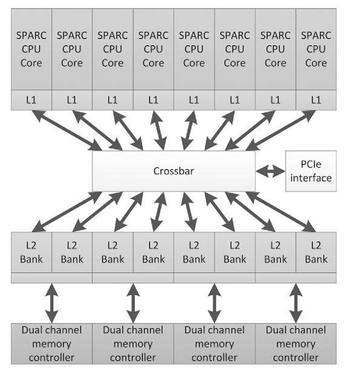
图2.9 Niagara 2 CPU来自Sun/Oracle。该设计是为了让高端线程更加高效。需要注意的是，该设计和图2.8中的GPU设计有些类似。设计能给予足够多的线程，线程计算的时间能很好的对访存的时间进行掩盖，即使很复杂的硬件技术都没必要使用指令级别的并行。
为了支持多个活动线程，SPARC架构需要多组寄存器，不过作为权衡因素，其推测性寄存存储方式要少于超标量设计。另外，协处理器可以对密码操作进行加速，并且片上以太网控制器可以提高网络吞吐量。
如前所述，最新的SPARC T4和T5有点回退到早前的多线程设计。每个CPU核支持乱序执行，并且可以从单线程模式(单线程可以使用所有资源)切换到多线程模式。从这个意义上来说，SPARC架构与现代另一种SMT设计越来越接近，SMT设计的代表就是Intel和CPU。
通常，服务器芯片以一些单线程性能为代价，换取最大化的并行性。与桌面级芯片不同，服务器芯片上的面积会更多的用来支持不同线程间的上下文切换。随着宽指令逻辑的出现(比如安腾处理器)，其能帮助编译发现指令级别的并行。
2.3.2 GPU架构
比起CPU架构，GPU架构有很宽泛的选择。深入讨论OpenCL编程(第8章)之前，我们来讨论其中几种架构。GPU倾向于使用复杂的硬件来进行多线程任务管理，因为显卡需要处理的项目很多，包括处理复杂图形、几何图形和图像像素。都是可高度并行的任务，其中大量任务都可以使用(高延迟容忍)多线程来完成。需要了解的是，除了管理任务队列的复杂机制，或在硬件管理系统后隐藏SIMD指令的执行外，其实GPU是很简单的多线程处理器，对其进行参数指定之后，能高效的处理大量像素。
移动端GPU
移动端GPU也具有通用计算能力，包括ARM，Imagination Technologies，联发科技和高通提供的GPU都能够兼容OpenCL。GPU由多个小的着色核组成，小尺寸SIMD单元上可以执行大量的独立线程(不一定使用同一个SSE矢量流水线)。ARM的Mali-T760架构使用三种计算流水线，每个流水线上有16个着色核。核间任务管理支持负载管理：通常，GPU线程都由硬件控制器管理，而不会暴露给操作系统。例如Mali-T760这样的嵌入式设计，GPU和CPU能够共享全局内存，从而减少数据拷贝；在ARM的设计中，数据时完全缓存的。
高端GPU：AMD Redeon R9 290X和NVIDIA GeForce GTX 780
高端桌面GPU和其衍生出的高性能计算，和工作站相比高性能计算在最大功率下更高效。为的是获取高内存带宽，GPU在内存方面需要大量的芯片投入其中，并且内存条(比如，GDDR5)上每个高带宽管脚都会使用(低延迟)内存协议。GPU使用混合特性来提升计算吞吐量，比如：对于给定数量的指令使用宽SIMD数组，来最大化算法吞吐量。
AMD Radeon R9 290X架构(图2.10)硬件上有16个SIMD通道，向量流水线4个时钟周期可以处理一个64元向量。英伟达GeForce GTX 780架构(图2.11)同样具有16个宽SIMD单元，并且能在两个时钟周期处理一个32元向量。两个设备都支持多线程，并且每个核都可开大量的宽SIMD线程。AMD的架构中，每个核中由1个矢量核和由4个SIMD单元组成一个分组寄存器(每4个SIMD单元可以支持10个矢量线程，AMD称此为“wavefronts”)构成，SIMD单元可以选择的某个时钟处理这10个矢量线程。那么每个核中就有40个矢量线程，整个设备就有1760个矢量线程(或者说，112640(1760x64)个独立的工作项！)。英伟达的架构也差不多，不过两种架构在实际并发上都会受相应数量的线程状态的限制，有可能在实际工作中线程数比理论值要低。
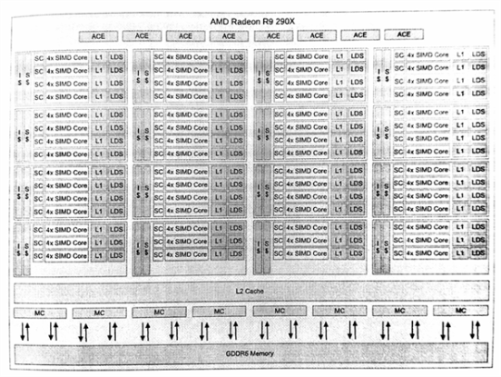
图2.9 AMD Redeon R9 290X架构。该设备上有11个簇，共有44个核。每个核有一个标量处理单元(处理分支和整型操作)和4个16通道SIMD ALU。簇间会共享指令和矢量缓存。
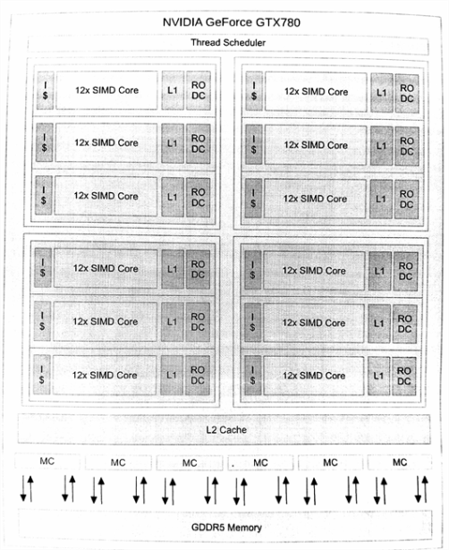
图2.10 英伟达GeForce GTX 780架构。该设备具有12个巨核，英伟达称其为“多流处理器(streaming multiprocessors)”(SMX)。每个SMX具有12个SIMD单元(由特化的双精度和专用函数单元组成)，1个L1缓存和1个只读数据缓存。
AMD和英伟达的架构中，使用中间语言对设备进行编程，采用的是智能SIMD模型(其中指令流代表着一个单通道SIMD单元)，英伟达称这种方式为“单指令多线程”(也被称为“基于SIMD的单程多数据”)。AMD使用ISA的方式是显式的添加了向量支持，这样就能基于“wavefront”对程序计数器进行管理，通过计时寄存器对不同的分支进行管理。相关内容我们将在第8章进行详细讨论。
指令集并行化的方式很多。AMD Radeon R9 290X就能在每个时钟周期发出多个指令，每条指令都发源于不同的程序计数器(每条矢量指令在周期内可能从不同的矢量单元发出）。英伟达GeForce GTX 780的四个执行流水上，两个线程能同时协同工作。AMD之前的设计(比如，Radeon HD 6970)会使用VLIW指令。实际上，Radeon HD 6970和Radeon R9 290X在执行单元的设计上非常相似，其中的差异很大程度上取决于指令，前者单线程执行编译结构化指令，后者运行时四线程执行。这两种设计都在执行资源方面都是超标量的，访问内存、执行算法，以及同一核上线程执行的其他操作，如果在同一线程中就不需要超标量的设计了。这种架构的吞吐量也随着多线程的加入得到了提高，因为多线程可以对单线程的延迟进行掩盖。
比如市场上的GPU，高端的AMD和英伟达模型包含多个核。每个核都可看做为一个CPU，Radeon R9 290X具有44个核(每个核都由4个矢量单元)，英伟达的设计有12个核(其核更大，每个核具有12个矢量单元)。每个核都有一块便签式存储缓存(在OpenCL中，可作为local内存由工作组进行分配)。
需要清楚的是，高端GPU设计严重依赖于线程状态，这就允许GPU可以快速的在多程序和高吞吐率间进行切换。与传统设计相比，当代高端CPU和GPU不再依赖复杂的乱序或单线程多流水并发。GPU是面向吞吐量的设计，非常依赖于线程级别的并发，其利用大量的向量处理单元来提高吞吐量。
2.3.3 APU和类APU设计
片上系统(SoC)的设计占据了嵌入式市场很长一段时间。目前，SoC的方式占领着移动市场，为移动端设备提供更好的性能。这样将处理器融合的设计(融合了CUP和GPU)，除了在视频编码、随机数生成器和加密电路方面不够好之外，其在桌面的低端领域还是很流行的，其代表产品就是笔记本电脑和上网本。之后，随着晶体管体积收缩达到上限，CPU核芯不能在为性能带来多大的提高，这时的SoC已经遍布了高端桌面领域。在高端桌面领域，集成GPU的方式在能耗上要远远小于离散GPU，不过在性能方面离散GPU通常还是好于集成GPU。目前，市场上该类产品的主要架构就是，基于AMD的悍马和压路机架构的产品，以及Intel的Haswell架构产品。
AMD的设计针对低耗能和低端主流市场，其Beema和Mullins产品功耗在4.515瓦左右，这两款产品上融合了基于悍马架构的低耗能CPU核，以及低端的Radeon R9 GPU。这些部件使用的是28nm技术。AMD的高性能APU——Kaveri——是基于压路机内核的一款非常高性能的GPU。Kaveri A10-7850K的设计如2.12图所示。
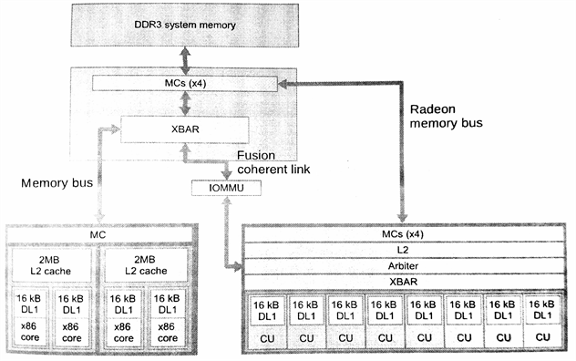
图2.12 A10-7850K APU具有2个压路机CPU和8个Radeon R9 GPU核(总共有32个16通道SIMD单元)。这款APU具有一个高速总线，用于链接GPU和DDR3内存，并且具有一个着色器通道，其可以选择性的与CPU缓存保持一致。
Intel高端酷睿i7 CPU[译者注3]设计如图2.13所示。具有4个Haswell微处理架构的核，集成的是Intel HD系列GPU，其完全支持OpenCL和DirectX 11。
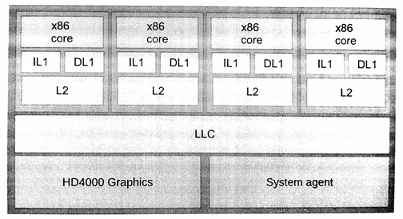
图2.13 集成HD 4000的i7处理器。虽然Intel并不称其为“APU”，不过从芯片的原理上和AMD的APU一样。Intel结合了4个Haswell x86处理器和图像处理器使用一个共享终级缓存(LLC，last-level cache)，通过环形总线进行通讯。
APU架构为CPU和GPU的数据共享提供了空间，以缓解GPU和CPU数据通讯所带来的瓶颈。这就意味着使用集成显卡的方式会缩短数据传输的距离，而不用再受到PCIe总线的传输速度限制。要想对PCIe的方式进行改进，就需要牺牲一部分CPU内存带宽，作为两个设备的共享带宽，并通过共享带宽和离散GPU进行数据交互。对算法进行实现的时候，就需要将数据交互的部分考虑进去。集成设计在CPU和GPU混合编程时，减少数据交互的耗时，可以打破数据交互耗时过长所带来的瓶颈。
[4] Snady Bridge Arch; http://www.intel.com/content/dam/doc/manual/64-ia-32-architectures-optimization-maanual.pdf
[5] Haswell arch; http://www.intel.com/content/dam/www/public/us/en/documnets/manuals/64-ia-32-architectures-optimization-maanual.pdf
[6] Intel Corporation, Intel Itanium 2 Processor: Hardware Developer's Manual, Intel Corporation, Santa Clara, CA, 2002
[7] G. Grohoski, Niagara-2: A heighly threaded server-on-a-chip, in: 18th Hot Chips Symposium, August, 2006
[译者注3] 原文中为“Intel's high-end Core i7 APU”，这里APU只是AMD提出的概念，Intel从未使用该概念，其集成显卡一般都会以“板载显卡”来称呼，具体哪一款CPU具有集成显卡，需要去官网进行确定。
2.4 本章总结
本章我们讨论了OpenCL可能遇到的各种硬件框架，并且衡量了这些框架的设计空间及表现。更深入的了解OpenCL(第8章)后，我们将结合基于AMD打桩机的AMD FX-8350 CPU和Radeon R9 290X GPU，来了解OpenCL模型是如何映射到对应的硬件架构上。
关于本章的更多的延伸阅读，可以让你受益更多(对于某些指定设备来说，使用简单的引用信息很难找到对应的文章)。《计算机组成与设计(硬件/软件接口)》第四版[8]，其深入的一些架构问题和各种处理器的设计。其中一节中还包含了对NVIDIA的GPU架构的讨论。《计算机体系结构》第五版[9]对前一本书的概念进行了一定的延伸。
[8] D.A. Patterson, J.L. Hennessy, Computer Organization and Design, 4th ed., Morgan Kaufmann, Burlington, MA, 2008
[9] J.L. Hennessy, D.A. Patterson, Computer Architecture: A Quantitative Approach. 5th ed., Morgan Kaufmann, Burlington, MA, 2011
第3章 介绍OpenCL
3.1 简介OpenCL
本章就来介绍一下OpenCL，使用OpenCL可以让我们的程序内部并发的执行。编程者们只要熟悉C和C++，上手OpenCL几乎就不是什么难事。我们先从OpenCL的标准说起。
3.1.1 OpenCL标准
OpenCL最初由苹果公司(Apple)提出(其他合作公司有AMD，IBM，Qualcomm(高通)，Intel和NVIDIA)，之后交由非盈利组织Khronos维护。最初的1.0版标准，由Khronos在2008年发布。OpenCL 1.0定义了主机端的接口，以及使用C语言作为OpenCL内核书写的语言，内核就是在不同的异构设备上并行处理数据的单位。之后的几年，发布了OpenCL 1.1和OpenCL 1.2，新标准为OpenCL增加了很多特性，比如：提高与OpenGL的互动性，补充了很多图像格式，同步事件，设备划分等特性。2013年11月，Khronos组织正式发布了OpenCL 2.0标准。为OpenCL添加了更多的新特性，比如：共享虚拟内存、内核嵌套并行和通用地址空间。这些更加高级的功能会让并行开发变得越来越简单，并且提高了OpenCL应用执行的效率。
开源编程标准设计者也要面对很多的挑战，为了形成一套通用的编程标准，要对一些要求进行一定的取舍。Khronos在这方面做得很不错，其设计的API都能很好的兼容不同的架构，并且能让硬件发挥其最大的性能。只要正确的遵循编程标准，那么一套程序几乎不用做什么修改，就可以从一个硬件平台，移植到另一个硬件平台上。供应商和设备分离的编程模型给OpenCL带来了极佳的可移植性，使其能充分发挥不同平台的加速能力。
执行在OpenCL设备上的代码，与执行在CPU上的不同，其使用OpenCL C进行书写。OpenCl C遵循更加严格的C99标准，在此基础上进行了适当的扩展，使其能在各种异构设备上以数据并行的方式执行。新标准中OpenCL C编程实现了C11标准中的原子操作(其子集)和同步操作。因为OpenCL API本身是C API，那么第三方就将其绑定到很多语言上，比如：Java，C++，Python和.NET。除此之外，很多主流库(线性代数和机器视觉)都集成了OpenCL，为的就是在异构平台上获得实质性的性能提升。
3.1.2 OpenCL标准
OpenCL标准分为四部分，每一部分都用“模型”来定义。这里先简单的介绍一下，之后的章节中会进行详细的介绍：
平台模型：指定一个host处理器，用于任务的调度。以及一个或多个device处理器，用于执行OpenCL任务(OpenCL C Kernel)。这里将硬件抽象成了对应的设备(host或device)。
执行模型：定义了OpenCL在host上运行的环境应该如何配置，以及host如何指定设备执行某项工作。这里就包括host运行的环境，host-device交互的机制，以及配置内核时使用到的并发模型。并发模型定义了如何将算法分解成OpenCL工作项和工作组。
内核编程模型：定义了并发模型如何映射到实际物理硬件。
内存模型：定义了内存对象的类型，并且抽象了内存层次，这样内核就不用了解其使用内存的实际架构。其也包括内存排序的要求，并且选择性支持host和device的共享虚拟内存。
通常情况下，OpenCL实现的执行平台包括一个x86 CPU主处理器，和一个GPU设备作为加速器。主处理器会将内核放置在GPU上运行，并且发出指令让GPU按照某个特定的并行方式进行执行。内核使用到的内存数据都由编程者依据层级内存模型分配或开辟。运行时和驱动层会将抽象的内存区域映射到物理内存层面。最后，由GPU开辟硬件线程来对内核进行执行，并且将每个线程映射到对应的硬件单元上。这些模型的细节将会在之后进行详细的讨论。
本章开始介绍OpenCL模型，包括OpenCL的API和相关的模型。介绍完API之后，我们将会使用矢量相加的例子让大家更好地对OpenCL编程进行了解。矢量相加的源码会在3.6节的末尾给出。我们将会使用OpenCL C++ API对矢量相加进行实现，并对CUDA编程和OpenCL编程进行比较。
3.2 OpenCL平台模型
OpenCL平台需要包含一个主处理器和一个或多个OpenCL设备。平台模型定义了host和device的角色，并且为device提供了一种抽象的硬件模型。一个device可以被划分成一个或多个计算单元，这些计算单元在之后能被分成一个或多个“处理单元”(processing elements)。具体的关系可见图3.1。
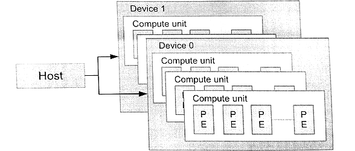
图3.1 OpenCL平台具有多个计算设备。每个计算设备都具有一个或多个计算单元。一个计算单元又由一个或多个处理元素(PEs)构成。系统中可以同时具有多个平台。例如，在一个系统中可以既有AMD的平台和Intel的平台。
平台模型是应用开发的重点，其保证了OpenCL代码的可移植性(在具有OpenCL能力的系统间)。即使只在一个系统中，这个系统也可以具有多个不同的OpenCL平台，这些平台可以被不同的应用所使用。平台模型的API允许一个OpenCL应用能够适应和选择对应的平台和计算设备，从而在相应平台和设备上运行应用。
应用可以使用OpenCL运行时API，选择对应提供商提供的对应平台。不过，平台上能指定和互动的设备，也只限于供应商提供的那些设备。例如，如果选择了A公司的平台，那么就不能使用B公司的GPU。不过，平台硬件并不需要由供应商独家提供。例如，AMD和Intel的实现可以使用其他公司的x86 CPU作为设备。
编程者写编写OpenCL C代码时，设备架构会被抽象成平台模型。供应商只需要将抽象的架构映射到对应的物理硬件上即可。平台模型定义了具有一组计算单元的设备，且每个计算单元的功能都是独立的。计算单元也可以划分成更多个处理单元。图3.1展示的就是这样的一种层级模型。举个例子，AMD Radeon R9 290X图形卡(device)包含44个向量处理器(计算单元)。每个计算单元都由4个16通道SIMD引擎，一共就有64个SIMD通道(处理单元)。Radeon R9 290X上每个SIMD通道都能处理一个标量指令。运行GPU设备能同时执行44x16x4=2816条指令。
3.2.1 平台和设备
clGetPlatformIDs()这个API就是查找制定系统上的可用OpenCL平台的集合。在具体的OpenCL程序中，这个API一般会调用两次，用来查询和获取到对应的平台信息。第一次调用这个API需要传入num_platforms作为数量参数，传入NULL作为平台参数。这样就能获取在该系统上有多少个平台可供使用。编程者可以开辟对应大小的空间(指针命名为platforms)，来存放对应的平台对象(类型为 cl_platform_id)。第二次调用该API是，就可将platforms传入来获取对应数量的平台对象。平台查找完成后，使用clGetPlatformInfo()API可以查询对应供应商所提供的平台，然后决定使用哪个平台进行运行OpenCL程序。clGetPlatformIDs()这个API需要在其他API之前调用，3.6节中可以从矢量相加的源码中进一步了解。
cl_int
clGetPlatformIDs(
cl_uint num_entries,
cl_platform_id *platforms,
cl_uint *num_platforms)
当平台确定好之后，下一步就是要查询平台上可用的设备了。clGetDeviceIDs()API就是用来做这件事的，并且在使用流程上和clGetPlatformIDs()很类似。clGetDeviceIDs()多了平台对象和设备类型作为入参，不过也需要简单的三步就能创建device：第一，查询设备的数量；第二，分配对应数量的空间来存放设备对象；第三，选择期望使用的设备(确定设备对象)。device_type参数可以将设备限定为GPU(CL_DEVICE_TYPE_GPU)，限定为CPU(CL_DEVICE_TYPE_CPU)，或所有设备(CL_DEVICE_TYPE_ALL)，当然还有其他选项。这些参数都必须传递给clGetDeviceIDs()。相较于平台的查询API，clGetDeviceInfo()API可用来查询每个设备的名称、类型和供应商。
cl_int
clGetDeviceIDs(
cl_platform_id platform,
cl_device_type device_type,
cl_uint num_entries,
cl_device_id *devices,
cl_uint *num_devices)
AMD的并行加速处理软件开发工具(APP SDK)中有一个clinfo的程序，其使用clGetPlatformInfo()和clGetDeviceInfo()来获取对应系统中的平台和设备信息。硬件信息，比如内存总量和总线带宽也是可以用该程序获取。在了解其他OpenCL特性之前，我们先休息一下，了解一下clinfo的输入，如图3.2。
译者机器的clinfo显示，译者和原书使用的AMD APP SDK版本不大一样。从观察上来看，原书应该隐藏了一些硬件显示。
Number of platforms: 3
Platform Profile: FULL_PROFILE
Platform Version: OpenCL 1.2 CUDA 8.0.0
Platform Name: NVIDIA CUDA
Platform Vendor: NVIDIA Corporation
Platform Extensions:
cl_khr_global_int32_base_atomics
cl_khr_global_int32_extended_atomics
cl_khr_local_int32_base_atomics
cl_khr_local_int32_extended_atomics
cl_khr_fp64
cl_khr_byte_addressable_store
cl_khr_icd cl_khr_gl_sharing
cl_nv_compiler_options
cl_nv_device_attribute_query
cl_nv_pragma_unroll
cl_nv_d3d10_sharing
cl_khr_d3d10_sharing
cl_nv_d3d11_sharing
cl_nv_copy_opts
Platform Profile: FULL_PROFILE
Platform Version: OpenCL 1.2
Platform Name: Intel(R) OpenCL
Platform Vendor: Intel(R) Corporation
Platform Extensions:
cl_intel_dx9_media_sharing
cl_khr_3d_image_writes
cl_khr_byte_addressable_store
cl_khr_d3d11_sharing
cl_khr_depth_images
cl_khr_dx9_media_sharing
cl_khr_gl_sharing
cl_khr_global_int32_base_atomics
cl_khr_global_int32_extended_atomics
cl_khr_icd cl_khr_local_int32_base_atomics
cl_khr_local_int32_extended_atomics
cl_khr_spir
Platform Profile: FULL_PROFILE
Platform Version: OpenCL 2.0 AMD-APP (1800.8)
Platform Name: AMD Accelerated Parallel Processing
Platform Vendor: Advanced Micro Devices, Inc.
Platform Extensions:
cl_khr_icd
cl_khr_d3d10_sharing
cl_khr_d3d11_sharing
cl_khr_dx9_media_sharing
cl_amd_event_callback
cl_amd_offline_devices
Platform Name: NVIDIA CUDA
Number of devices: 1
Device Type: CL_DEVICE_TYPE_GPU
Vendor ID: 10deh
Max compute units: 4
Max work items dimensions: 3
Max work items[0]: 1024
Max work items[1]: 1024
Max work items[2]: 64
Max work group size: 1024
Preferred vector width char: 1
Preferred vector width short: 1
Preferred vector width int: 1
Preferred vector width long: 1
Preferred vector width float: 1
Preferred vector width double: 1
Native vector width char: 1
Native vector width short: 1
Native vector width int: 1
Native vector width long: 1
Native vector width float: 1
Native vector width double: 1
Max clock frequency: 862Mhz
Address bits: 64
Max memory allocation: 536870912
Image support: Yes
Max number of images read arguments: 256
Max number of images write arguments: 16
Max image 2D width: 16384
Max image 2D height: 16384
Max image 3D width: 4096
Max image 3D height: 4096
Max image 3D depth: 4096
Max samplers within kernel: 32
Max size of kernel argument: 4352
Alignment (bits) of base address: 4096
Minimum alignment (bytes) for any datatype: 128
Single precision floating point capability
Denorms: Yes
Quiet NaNs: Yes
Round to nearest even: Yes
Round to zero: Yes
Round to +ve and infinity: Yes
IEEE754-2008 fused multiply-add: Yes
Cache type: Read/Write
Cache line size: 128
Cache size: 65536
Global memory size: 2147483648
Constant buffer size: 65536
Max number of constant args: 9
Local memory type: Scratchpad
Local memory size: 49152
Kernel Preferred work group size multiple: 32
Error correction support: 0
Unified memory for Host and Device: 0
Profiling timer resolution: 1000
Device endianess: Little
Available: Yes
Compiler available: Yes
Execution capabilities:
Execute OpenCL kernels: Yes
Execute native function: No
Queue on Host properties:
Out-of-Order: Yes
Profiling : Yes
Platform ID: 000002D3A374DC10
Name: GeForce GTX 765M
Vendor: NVIDIA Corporation
Device OpenCL C version: OpenCL C 1.2
Driver version: 375.95
Profile: FULL_PROFILE
Version: OpenCL 1.2 CUDA
Extensions:
cl_khr_global_int32_base_atomics
cl_khr_global_int32_extended_atomics
cl_khr_local_int32_base_atomics
cl_khr_local_int32_extended_atomics
cl_khr_fp64
cl_khr_byte_addressable_store
cl_khr_icd
cl_khr_gl_sharing
cl_nv_compiler_options
cl_nv_device_attribute_query
cl_nv_pragma_unroll
cl_nv_d3d10_sharing
cl_khr_d3d10_sharing
cl_nv_d3d11_sharing
cl_nv_copy_opts
Platform Name: Intel(R) OpenCL
Number of devices: 2
Device Type: CL_DEVICE_TYPE_GPU
Vendor ID: 8086h
Max compute units: 20
Max work items dimensions: 3
Max work items[0]: 512
Max work items[1]: 512
Max work items[2]: 512
Max work group size: 512
Preferred vector width char: 1
Preferred vector width short: 1
Preferred vector width int: 1
Preferred vector width long: 1
Preferred vector width float: 1
Preferred vector width double: 0
Native vector width char: 1
Native vector width short: 1
Native vector width int: 1
Native vector width long: 1
Native vector width float: 1
Native vector width double: 0
Max clock frequency: 1150Mhz
Address bits: 64
Max memory allocation: 427189862
Image support: Yes
Max number of images read arguments: 128
Max number of images write arguments: 128
Max image 2D width: 16384
Max image 2D height: 16384
Max image 3D width: 2048
Max image 3D height: 2048
Max image 3D depth: 2048
Max samplers within kernel: 16
Max size of kernel argument: 1024
Alignment (bits) of base address: 1024
Minimum alignment (bytes) for any datatype: 128
Single precision floating point capability
Denorms: No
Quiet NaNs: Yes
Round to nearest even: Yes
Round to zero: Yes
Round to +ve and infinity: Yes
IEEE754-2008 fused multiply-add: No
Cache type: Read/Write
Cache line size: 64
Cache size: 262144
Global memory size: 1708759450
Constant buffer size: 65536
Max number of constant args: 8
Local memory type: Scratchpad
Local memory size: 65536
Kernel Preferred work group size multiple: 32
Error correction support: 0
Unified memory for Host and Device: 1
Profiling timer resolution: 80
Device endianess: Little
Available: Yes
Compiler available: Yes
Execution capabilities:
Execute OpenCL kernels: Yes
Execute native function: No
Queue on Host properties:
Out-of-Order: No
Profiling : Yes
Platform ID: 000002D3A374C760
Name: Intel(R) HD Graphics 4600
Vendor: Intel(R) Corporation
Device OpenCL C version: OpenCL C 1.2
Driver version: 20.19.15.4531
Profile: FULL_PROFILE
Version: OpenCL 1.2
Extensions:
cl_intel_accelerator
cl_intel_advanced_motion_estimation
cl_intel_ctz
cl_intel_d3d11_nv12_media_sharing
cl_intel_dx9_media_sharing
cl_intel_motion_estimation
cl_intel_simultaneous_sharing
cl_intel_subgroups
cl_khr_3d_image_writes
cl_khr_byte_addressable_store
cl_khr_d3d10_sharing
cl_khr_d3d11_sharing
cl_khr_depth_images
cl_khr_dx9_media_sharing
cl_khr_gl_depth_images
cl_khr_gl_event
cl_khr_gl_msaa_sharing
cl_khr_global_int32_base_atomics
cl_khr_global_int32_extended_atomics
cl_khr_gl_sharing
cl_khr_icd
cl_khr_image2d_from_buffer
cl_khr_local_int32_base_atomics
cl_khr_local_int32_extended_atomics
cl_khr_spir
Device Type: CL_DEVICE_TYPE_CPU
Vendor ID: 8086h
Max compute units: 8
Max work items dimensions: 3
Max work items[0]: 8192
Max work items[1]: 8192
Max work items[2]: 8192
Max work group size: 8192
Preferred vector width char: 1
Preferred vector width short: 1
Preferred vector width int: 1
Preferred vector width long: 1
Preferred vector width float: 1
Preferred vector width double: 1
Native vector width char: 32
Native vector width short: 16
Native vector width int: 8
Native vector width long: 4
Native vector width float: 8
Native vector width double: 4
Max clock frequency: 2400Mhz
Address bits: 64
Max memory allocation: 2126515200
Image support: Yes
Max number of images read arguments: 480
Max number of images write arguments: 480
Max image 2D width: 16384
Max image 2D height: 16384
Max image 3D width: 2048
Max image 3D height: 2048
Max image 3D depth: 2048
Max samplers within kernel: 480
Max size of kernel argument: 3840
Alignment (bits) of base address: 1024
Minimum alignment (bytes) for any datatype: 128
Single precision floating point capability
Denorms: Yes
Quiet NaNs: Yes
Round to nearest even: Yes
Round to zero: No
Round to +ve and infinity: No
IEEE754-2008 fused multiply-add: No
Cache type: Read/Write
Cache line size: 64
Cache size: 262144
Global memory size: 8506060800
Constant buffer size: 131072
Max number of constant args: 480
Local memory type: Global
Local memory size: 32768
Kernel Preferred work group size multiple: 128
Error correction support: 0
Unified memory for Host and Device: 1
Profiling timer resolution: 427
Device endianess: Little
Available: Yes
Compiler available: Yes
Execution capabilities:
Execute OpenCL kernels: Yes
Execute native function: Yes
Queue on Host properties:
Out-of-Order: Yes
Profiling : Yes
Platform ID: 000002D3A374C760
Name: Intel(R) Core(TM) i7-4700MQ CPU @ 2.40GHz
Vendor: Intel(R) Corporation
Device OpenCL C version: OpenCL C 1.2
Driver version: 5.2.0.10094
Profile: FULL_PROFILE
Version: OpenCL 1.2 (Build 10094)
Extensions:
cl_khr_icd
cl_khr_global_int32_base_atomics
cl_khr_global_int32_extended_atomics
cl_khr_local_int32_base_atomics
cl_khr_local_int32_extended_atomics
cl_khr_byte_addressable_store
cl_khr_depth_images
cl_khr_3d_image_writes
cl_intel_exec_by_local_thread
cl_khr_spir
cl_khr_dx9_media_sharing
cl_intel_dx9_media_sharing
cl_khr_d3d11_sharing
cl_khr_gl_sharing
cl_khr_fp64
Platform Name: AMD Accelerated Parallel Processing
Number of devices: 1
Device Type: CL_DEVICE_TYPE_CPU
Vendor ID: 1002h
Board name:
Max compute units: 8
Max work items dimensions: 3
Max work items[0]: 1024
Max work items[1]: 1024
Max work items[2]: 1024
Max work group size: 1024
Preferred vector width char: 16
Preferred vector width short: 8
Preferred vector width int: 4
Preferred vector width long: 2
Preferred vector width float: 8
Preferred vector width double: 4
Native vector width char: 16
Native vector width short: 8
Native vector width int: 4
Native vector width long: 2
Native vector width float: 8
Native vector width double: 4
Max clock frequency: 2394Mhz
Address bits: 64
Max memory allocation: 2147483648
Image support: Yes
Max number of images read arguments: 128
Max number of images write arguments: 64
Max image 2D width: 8192
Max image 2D height: 8192
Max image 3D width: 2048
Max image 3D height: 2048
Max image 3D depth: 2048
Max samplers within kernel: 16
Max size of kernel argument: 4096
Alignment (bits) of base address: 1024
Minimum alignment (bytes) for any datatype: 128
Single precision floating point capability
Denorms: Yes
Quiet NaNs: Yes
Round to nearest even: Yes
Round to zero: Yes
Round to +ve and infinity: Yes
IEEE754-2008 fused multiply-add: Yes
Cache type: Read/Write
Cache line size: 64
Cache size: 32768
Global memory size: 8506060800
Constant buffer size: 65536
Max number of constant args: 8
Local memory type: Global
Local memory size: 32768
Max pipe arguments: 16
Max pipe active reservations: 16
Max pipe packet size: 2147483648
Max global variable size: 1879048192
Max global variable preferred total size: 1879048192
Max read/write image args: 64
Max on device events: 0
Queue on device max size: 0
Max on device queues: 0
Queue on device preferred size: 0
SVM capabilities:
Coarse grain buffer: No
Fine grain buffer: No
Fine grain system: No
Atomics: No
Preferred platform atomic alignment: 0
Preferred global atomic alignment: 0
Preferred local atomic alignment: 0
Kernel Preferred work group size multiple: 1
Error correction support: 0
Unified memory for Host and Device: 1
Profiling timer resolution: 427
Device endianess: Little
Available: Yes
Compiler available: Yes
Execution capabilities:
Execute OpenCL kernels: Yes
Execute native function: Yes
Queue on Host properties:
Out-of-Order: No
Profiling : Yes
Queue on Device properties:
Out-of-Order: No
Profiling : No
Platform ID: 00007FFB80F36D30
Name: Intel(R) Core(TM) i7-4700MQ CPU @ 2.40GHz
Vendor: GenuineIntel
Device OpenCL C version: OpenCL C 1.2
Driver version: 1800.8 (sse2,avx)
Profile: FULL_PROFILE
Version: OpenCL 1.2 AMD-APP (1800.8)
Extensions:
cl_khr_fp64
cl_amd_fp64
cl_khr_global_int32_base_atomics
cl_khr_global_int32_extended_atomics
cl_khr_local_int32_base_atomics
cl_khr_local_int32_extended_atomics
cl_khr_int64_base_atomics
cl_khr_int64_extended_atomics
cl_khr_3d_image_writes
cl_khr_byte_addressable_store
cl_khr_gl_sharing
cl_ext_device_fission
cl_amd_device_attribute_query
cl_amd_vec3
cl_amd_printf
cl_amd_media_ops
cl_amd_media_ops2
cl_amd_popcnt
cl_khr_d3d10_sharing
cl_khr_spir
cl_khr_gl_event
原书clinfo信息
Number of platforms: 1
Platform Profile: FULL_PROFILE
Platform Version: OpenCL 2.0 AMD-APP (1642.5)
Platform Name: AMD Accelerated Parallel Processing
Platform Vendor: Advanced Micro Devices, Inc.
Platform Extensions:
cl_khr_icd
cl_khr_d3d10_sharing
cl_khr_icd
cl_amd_event_callback
cl_amd_offline_devices
Platform Name: AMD Accelerated Parallel Processing
Number of devices: 2
Vendor ID: 1002h
Device Type: CL_DEVICE_TYPE_GPU
Board name: AMD Radeon R9 200 Series
Device Topology: PCI[B#1, D#0, F#0]
Max compute units: 40
Max work group size: 256
Native vector width int: 1
Max clock frequency: 1000Mhz
Max memory allocation: 2505572352
Image support: Yes
Max image 3D width: 2048
Cache line size: 64
Global memory size: 3901751296
Platform ID: 0x7f54fb22cfd0
Name: Hawaii
Vendor: Advanced Micro Devices, Inc.
Device OpenCL C version: OpenCL C 2.0
Driver version: 1642.5(VM)
Profile: FULL_PROFILE
Version: OpenCL 2.0 AMD-APP (1642.5)
Extensions:
cl_khr_fp64_cl_amd_fp64
cl_khr_global_int32_base_atomics
cl_khr_global_int32_extended_atomics
cl_khr_local_int32_base_atomics
Device Type: CL_DEVICE_TYPE_CPU
Vendor ID: 1002h
Board name:
Max compute units: 8
Max work items dimensions: 3
Max work items[0]: 1024
Max work items[1]: 1024
Name: AMD FX(tm)-8120 Eight-Core Processor
Vendor: AuthenticAMD
Device OpenCL C version: OpenCL C 1.2
Driver version: 1642.5(sse2, avx, fma4)
Profile: FULL_PROFILE
Version: OpenCL 1.2 (Build 10094)
图3.2 通过clinfo程序输出一些OpenCL平台和设备信息。我们能看到AMD平台上有两个设备(一个CPU和一个GPU)。这些信息都能通过平台API查询到。
3.3 OpenCL执行模型
OpenCL执行模型允许我们建立一个拓扑系统来协调主处理器和其他能够执行OpenCL 内核的设备。为了让内核执行在设备上，还需要对OpenCL上下文进行设置，进而传递执行命令和数据到设备端。
3.3.1 上下文
OpenCL中上下文为了内核的正确执行，进行协调和内存管理。上下文是为了协调主机和设备端的交互，管理设备端可用的内存对象，并持续跟踪在设备上创建出来的程序对象和内核对象。上下文对象可以通过OpenCL APIclCreateContext()进行创建。
cl_context
clCreateContext(
const cl_context_properties *properties,
cl_uint num_devices,
const cl_device_id *devices,
void (CL_CALL_BACK *pfn_notify)(
const char *errinfo,
const void *private_info,
size_t cb,
void *user_data),
void *user_data,
cl_int *errcode_ret)
properties参数用于限制上下文作用的范围。这个参数可由特定的平台提供，其能够使能与图像的互用性，或使能其他能力。通过限制给定平台的上下文，允许编程者使用多个平台创建的不同的上下文，并且能在一个平台中混用多个供应商提供的设备。另外，创建上下文时必须要使用设备对象，并且编程者可以设置一个用户回调函数，还可以额外传递一个错误码(需要在错误码对象的生命周期内)用于获取API运行的状态。
OpenCL提供了另一个API也能用来创建上下文，其能使用设备列表来创建上下文。通过clCreateContextFromType()可以使用所有的设备类型(CPU、GPU和ALL)创建上下文。创建上下文之后，可以通过使用clGetContextInfo()来查询上下文中设备的数量，以及具体的设备对象。OpenCL中可使用上下文查询指定平台对象和设备对象，通过以上的步骤即可创建上下文，这些步骤也可用于任意OpenCL程序。
3.3.2 命令队列
执行模型是指设备端执行的任务，是基于主机端发送的命令。命令指定的行为包括执行内核，进行数据传递和执行同步。某些设备也能自发一些命令，这种设备以及方式，我们在后面的章节中再进行讨论。
命令队列作为一种通信机制，可以让host发请求到对应的device。当host需要device执行任务的时候，就需要一个命令队列。命令队列需要在每个设备上都进行创建，并且命令队列要在上下文的基础上进行创建。host需要将一条命令提交到对应的命令队列中，因为命令队列不是以分发的形式，而是以指定的形式，所以如果平台上有多个设备时，就需要每个设备上创建一个命令队列。OpenCL中clCreateCommandQueueWithProperties()就是用来创建命令队列，且将命令队列与一个device进行关联。
cl_command_queue
clCreateCommandQueueWithProperties(
cl_context context,
cl_device_id device,
cl_command_queue_properties peoperties,
cl_int *errcode_ret)
peoperties参数是由一个位域值组成，其可使能命令性能分析功能(CL_QUEUE_PROFILING_ENABLE)，以及/或允许命令乱序执行(CL_QUEUE_OUT_OF_DRDER_EXEC_MODE_ENABLE)。这两个功能将在第5章详细讨论。
对于顺序命令队列(默认创建)，会将命令顺序的推入对应的队列中。乱序命令队列允许OpenCL实现不按入队顺序执行对应的命令，这样的执行方式在某种情况下更为高效。如果使用乱序命令队列，其会根据用户指定的依赖关系，按正确的命令依赖顺序进行执行。
任何以clEnqueue开头的OpenCL API都能向命令队列提交一个命令，并且这些API都需要一个命令队列对象作为输入参数。例如，clEnqueueReadBuffer()将device上的数据传递到host，clEnqueueNDRangeKernel()申请一个内核在对应device执行。如何调用这些API将在后续的章节中进行讨论。
除了向命令队列提交命令的API，OpenCL还包括执行栅栏操作API，这种操作可以用来同步命令队列。clFlush()和clFinish()这两个API都能对命令队列进行栅栏操作。其中，clFinish()的调用将会阻塞host上的执行线程，直到命令队列上的所有命令执行完毕，其功能就是和同步栅栏操作一样。clFlush()将会阻塞host上的执行线程，直到命令队列上的命令都从队列上移出。移出命令队列后的命令，就已经提交到device端，不过不一定完全执行完成。这两个API都需要一个命令队列作为参数。
cl_int clFlush(cl_command_queue command_queue);
cl_int clFinish(cl_command_queue command_queue);
3.3.3 事件
OpenCL API中，用来指定命令之间依赖关系的对象称为事件(event)，所有的clEnqueue开头的API，均有三个共同的参数：事件链表的指针，其指定了当前命令依赖的事件列表，等待列表的长度，以及表示当前命令执行的事件指针，这个指针用于依赖该命令的其他命令。使用事件来指定依赖关系的方式将在第5章介绍。
除了能提供命令依赖顺序，还能通过事件对命令执行的状态随时进行查询。当事件所对应的命令处以执行状态时，其状态就会发生变化。命令状态一共有以下6中：
- Queued：命令处于命令队列中。
- Submitted：命令从命令队列中移除，已经提交到设备端执行。
- Ready：命令已经准备好在设备上执行。
- Running：命令正在设备上执行。
- Ended：命令已经在设备上执行完成。
- Complete：所有命令以及其子命令都执行完成。
子命令与设备端入队有关，我们会在下一节进行讨论。当命令成功的执行完成，事件的状态将会被设置为CL_COMPLETE。如果命令非正常终止，事件的状态将会为一个负数值。这种情况下，有非正常终止的命令队列，以及其他在同一上下文上创建的命令队列，都将不能正常使用或运行。查询事件所使用的API为clGetEventInfo()。
除了记录了不同入队命令间的依赖关系，OpenCL也提供了用于和host同步的APIclWaitForEvents()，该API阻塞host的执行线程，等待指定事件队列上的所有命令执行完毕。
cl_int
clWaitForEvents(
cl_uint num_events,
const cl_event *event_list)
3.3.4 设备端入队
目前为止，我们所描述的执行模型是依据“老板-职员”式例来说的，host(老板)向device(职员)发送命令。这样的模型提供了一种简单的主从合作模式。不过，在很多情况下任务的分发并不能静态确定——尤其是算法的下一个阶段要依赖上一个阶段的结果。例如，在组合优化的应用中，查询范围的大小决定着工作组的数量，不过，范围大小只有在上一次迭代的时候才能知道。之前版本的OpenCL，处理这种情况通常是使用一个新的内核对象来执行下一阶段的任务。为了满足这个需求，以及提升性能，OpenCL 2.0为执行模型添加了一项新的特性——设备端入队。
执行中的内核现在可以让另外一个内核进入命令队列中(具体可以看图3.5)。这种情况下，正在执行的内核可以称为“父内核”，刚入队的内核称为“子内核”。虽然，父子内核是以异步的方式执行，但是父内核需要在子内核全部结束后才能结束。我们可通过与父内核关联的事件对象来对执行状态进行查询，当事件对象的状态为CL_COMPLETE时，就代表父内核结束执行。设备端的命令队列是无序命令队列，其具有无序命令队列的所有特性。设备端命令会进入到设备端产生的命令队列中，并且使用事件的方式来存储各个命令间的依赖关系。这些事件对象只有执行在设备端的父内核可见。更多有关设备端入队的内容，将会在第5章进行讨论。
3.4 内核和OpenCL编程模型
执行模型API能让应用管理OpenCL命令的执行。OpenCL命令通过数据转移和内核执行，对具体应用数据进行处理，从而执行一些有意义的任务。OpenCL内核也属于OpenCL应用中的一部分，并且这一部分实实在在的执行在设备上。与CPU并发模型类似，OpenCL内核在语法上类似于标准的C函数，不同之初在于添加了一些关键字，OpenCL的并发模型由内核实现构成。使用系统多线程API或OpenMP，开发一款执行在CPU上的并发应用时，开发者会考虑物理设备上有多少线程可以使用(比如：CPU核数)，如果使用的线程数量超过了可用的线程数，那么在物理线程不够用的基础上，多个线程会在不同时刻互相切换执行。OpenCL在的编程上，通常是以最细粒度的并行。OpenCL的一般性体现在，接口的通用性和底层内核直接映射物理资源。接下来展示三个不同版本的向量加法：①串行C实现，②多线程C实现，③OpenCL C实现。代码3.1中使用串行的方式实现向量加法(C语言)，其使用一个循环对每个元素进行计算。每次循环将两个输入数组对应位置的数相加，然后存储在输出数组中。图3.3展示了向量加法的算法。
{%ace edit=false, lang='c_cpp'%} // Perform an element-wise addition of A and B and store in C. // There are N elements per array.
void vecadd(int *C, int *A, int *B, int N){ for (int i = 0; i < N; ++i){ C[i] = A[i] + B[i]; } } {%endace%}
代码3.1 串行加法实现
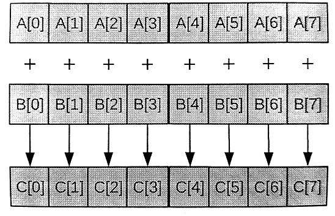
图3.3 向量加法的算法表示，其中每个元素可以单独进行加的操作
对于一个多核设备，我们要不就使用底层粗粒度线程API(比如，Win32或POSIX线程)，要不就使用数据并行方式(比如，OpenMP)。粗粒度多线程需要对任务进行划分(循环次数)。因为循环的迭代次数特别多，并且每次迭代的任务量很少，这时我们就需要增大循环迭代的粒度，这种技术叫做“条带处理”[1]。多线程版的代码如代码3.2所示。
{%ace edit=false, lang='c_cpp'%} // Perform an element-wise addition of A and B and store in C. // There are N elements per array and NP CPU cores.
void vecadd(int *C, int *A, int *B, int N, int NP, int tid){
int ept = N / NP; // 每个线程所要处理的元素个数
for (int i = tid * ept; i < (tid + 1) * ept; ++i){ C[i] = A[i] + B[i]; } } {%endace%}
代码3.2 分块处理向量加法，使用粗粒度多线程(例如，使用POSIX CPU线程)。输入向量上的不同元素被分配到不同的核上。
OpenCL C上的并发执行单元称为工作项(work-item)。每一个工作项都会执行内核函数体。这里就不用手动的去划分任务，这里将每一次循环操作映射到一个工作项中。OpenCL运行时可以创建很多工作项，其个数可以和输入输出数组的长度相对应，并且工作项在运行时，以一种默认合适的方式映射到底层硬件上(CPU或GPU核)。概念上，这种方式与并行机制中原有的功能性“映射”操作(可参考mapReduce)和OpenMP中对for循环进行数据并行类似。当OpenCL设备开始执行内核，OpenCL C中提供的内置函数可以让工作项知道自己的编号。下面的代码中，编程者调用get_global_id(0)来获取当前工作项的位置，以及访问到的数据位于数组中的位置。get_global_id()的参数用于获取指定维度上的工作项编号，其中“0”这个参数，可获取当前第一维上工作项的ID信息。
{%ace edit=false, lang='c_cpp'%} // Perform an element-wise addition of A and B and store in C. // N work-items will be created to execute this kernel. __kernel void vecadd(__global int *C, __global int *A, __global int *B){ int tid = get_global_id(0); // OpenCL intrinsic函数 c[tid] = A[tid] + B[tid]; } {%endace%}
代码3.3 OpenCL版向量相加内核
OpenCL上运行的都是细粒度工作项，如果硬件支持分配细粒度线程，就可以在当前架构下产生海量的工作项(细粒度线程的可扩展性更强)。OpenCL使用的层级并发模型能保证，即使能够创建海量工作项的情况下，依旧可以正常的运行。当要执行一个内核时，编程者需要指定每个维度上工作项的数量(NDRange)。一个NDRange可以是一维、二维、三维的，其不同维度上的工作项ID映射的是相应的输入或输出数据。NDRange的每个维度的工作项数量由size_t类型指定。
向量相加的例子中，我们的数据是一维的，先假设有1024个元素，那么需要创建一个数组，里面记录三个维度上的工作项数量。host代码需要为1023个元素指定一个一维NDRange。下方的代码，就是如何指定各维度上的工作项数量：
size_t indexSpace[3] = {1024, 1, 1};
为了增加NDRange的可扩展性，需要将工作项继续的划分成更细粒度的线程，那么需要再被划分的工作项就称为工作组(work-group)(参考图3.4)。与工作项类似，工作组也需要从三个维度上进行指定，每个维度上的工作项有多少个。在同一个工作组中的工作项具有一些特殊的关系：一个工作组中的工作项可以进行同步，并且他们可以访问同一块共享内存。工作组的大小在每次分配前就已经固定，所以对于更大规模的任务分配时，同一工作组中的工作项间交互不会增加性能开销。实际上，工作项之间的交互开销与分发的工作组的大小并没有什么关系，这样就能保证在更大的任务分发时，OpenCL程序依旧能保证良好的扩展性。
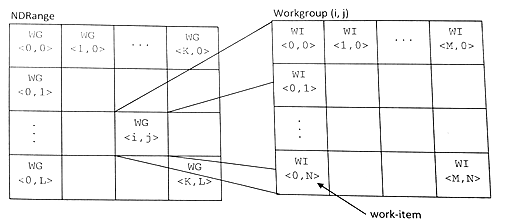
图3.4 层级模型用于产生在NDRange时所使用的工作项，以及工作项所在的工作组
向量相加的例子中，可以参考以下方式指定工作组的大小：
size_t workgroupSize[3] = {64, 1, 1};
如果每个数组的工作项总数为1024，那么就会创建16个工作组(1024工作项/(64工作项每工作组)=16工作组)。为了保证硬件工作效率，工作组的大小通常都是固定的。之前的OpenCL标准中，每个维度上的工作项数目必须是工作组数目的倍数。这样的话，在内核执行的时候，有时候会有一些用不到的工作项，这些工作项只能直接返回，不做任何输出。不过，在OpenCL 2.0标准中，允许各维度上的工作项和工作组数量不成倍数关系，工作数量被分成两部分：第一部分是编程者指定给工作组的工作项，另一部分是剩余的工作组，这些工作可以没有工作项。当工作项与工作组的关系不成倍数，那么二维的NDRange尺寸就有4种可能，对于三维的NDRange尺寸就有8种可能。
向量相加程序中，每个工作项的行为都是独立的(即使在同一个工作组)，OpenCL允许编程者不去分配工作组的尺寸，其会在实现中进行自动的划分；这样的话，开发者就可以传递NULL作为工作组数组的尺寸。
3.4.1 处理编译和参数
一个OpenCL程序对象汇集了对应的OpenCL C内核，内核调用的函数，以及常量数据。例如，一个代数解决应用中，同一个OpenCL程序对象可能包含一个向量相加内核，一个矩阵相乘的内核和一个矩阵转置的内核。通过一系列运行时API的调用，可以让OpenCL内核源码得到编译。运行时编译能让系统为指定的计算设备，对OpenCL内核进行优化。运行时编译也能让OpenCL内核代码运行在之前不知是否支持OpenCL的设备上。运行时编译就不需要为区分AMD，NVIDIA或Intel平台而进行提前编译，只要计算设备提供OpenCL编译器，那么不需要为这些平台做任何改变。OpenCL的软连接只会在同一运行时层进行，由各个硬件平台提供的可安装客户端驱动(ICD)调用。ICD通常会以动态库的方式提供，不同的ICD代表着不同的供应商提供的运行时实现，可以通过动态库的接口激活对应的平台。
使用源码创建内核的步骤如下：
-
将OpenCL C源码存放在一个字符数组中。如果源码以文件的形式存放在硬盘上，那么需要将其读入内存中，并且存储到一个字符数组中。
-
调用
clCreateProgramWithSource()通过源码可以创建一个cl_program类型对象。 -
创建好的程序对象需要进行编译，编译之后的内核才能在一个或多个OpenCL设备上运行。调用
clBuildProgram()完成对内核的编译，如果编译有问题，该API会将输出错误信息。 -
之后，需要创建
cl_kernel类型的内核对象。调用clCreateKernel()，并指定对应的程序对象和内核函数名，从而创建内核对象。
第4步就是为了获得一个cl_kernel对象，有点像从一个动态库上输出一个函数。程序对象在编译时，会将内核函数进行接口输出，其函数名为其真正的入口。将内核函数名和程序对象传入clCreateKernel()，如果程序对象是合法的，并且这个函数名是存在的，那么久会返回一个内核对象。OpenCL程序对象与内核对象的关系，如图3.5所示，一个程序对象上可以提取多个内核对象。每个OpenCL上下文上可有多个OpenCL程序对象，这些程序对象可由OpenCL源码创建。
cl_kerenl
clCreateKernel(
cl_program program,
const char *kernel_name,
cl_int *errcode_ret)
一个内核对象的二进制表示是由供应商指定。AMD运行时上，有两大主要的设备：x86 CPU和GPU。对于x86 CPU，clBuildProgram()生成x86内置代码，这份代码可以直接在设备上执行。对于GPU，clBuildProgram()将创建AMD GPU的中间码，高端的中间码将会在指定的GPU架构上即时编译生成，其产生的通常是一份已知的指令集架构的代码。NVIDIA使用同样的方式，不过NVIDIA这种中间码为并行线程执行(PTX，parallel thread execute)。这样做的好处是，如果一个设备上的GPU指令集有所变化，其产生的代码功能依旧不会受到影响。这种产生中间代码的方式，能给编译器的开发带来更大的发展空间。
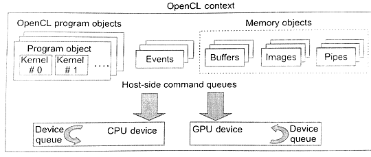
图3.5 这个OpenCL运行时图展示了一个OpenCL上下文对象内具有两个计算设备(一个CPU设备和一个GPU设备)。每个计算设备具有自己的命令队列。主机端和设备端的命令队列在图中都由所展示。设备端的队列只能被在设备上执行的内核对象看到。内存对象通过内存模型定义。
OpenCL程序对象另一个特性是能在构建之后，产生二进制格式的文件，并写入到硬盘。如同大多数对象一样，OpenCL提供一个函数可以返回一些关于程序对象的信息——clGetProgramInfo()。这个函数中其中有一个参数可以传CL_PROGRAM_BINARIES，这个参数可以返回供应商指定的二进制程序对象(通过clBuildProgram()编译之后)。除了clCreateProgramWithSource()外，OpenCL也提供clCreateProgramWithBinary()，这个函数可以通过一系列编译好的二进制文件直接创建程序对象，对应的二进制文件可以通过clGetProgramInfo()得到。使用二进制表示的OpenCL内核，因为不需要以源码的方式存储，以及安装编译器，这种方式更容易部署OpenCL程序。
与调用C函数不同，我们不能直接将参数赋予内核函数的参数列表中。执行一个内核需要通过一个入队函数进行发布。由于核内的语法为C，且内核参数具有持续性(如果我们只改变参数里面的值，就没有必要再重新进行赋值)。OpenCL中提供clSetKernelArg()对内核的参数进行设置。这个API需要传入一个内核对象，指定参数的索引值，参数类型的大小，以及对应参数的指针。内核参数列表中的类型信息，需要一个个的传入内核中。
cl_int
clSetKernelArg(
cl_kernel kernel,
cl_uint arg_index,
size_t arg_size,
const void *arg_value)
3.4.2 执行内核
调用clEnqueueNDRangeKernel()会入队一个命令道命令队列中，其是内核执行的开始。命令队列被目标设备指定。内核对象标识了哪些代码需要执行。内核执行时，有四个地方与工作项创建有关。work_dim参数指定了创建工作项的维度(一维，二维，三维)。global_work_size参数指定NDRange在每个维度上有多少个工作项，local_work_size参数指定WorkGroup在每个维度上有多少个工作组。global_work_offset参数可以指定全局工作组中的ID是否从0开始计算。
cl_int
clEnqueueNDRangeKernel(
cl_command_queue command_queue,
cl_kernel kernel,
cl_uint work_dim,
const size_t *global_work_offset,
const size_t *global_work_size,
const size_t *local_work_size,
cl_uint num_events_in_wait_list,
const cl_event *event_wait_list,
cl_event *event)
和所有clEnqueueAPI相同，需要提供一个event_wait_list，当这个参数不为NULL时，当前的内核要等到等待列表中的所有任务都完成才能执行。该API也是异步的：命令入队之后，函数会立即返回(通常会在内核执行之前就返回)。OpenCL中clWaitForEvents()和clFinish()可以在host端阻塞等待，直到对应的内核对象执行完成。
3.5 OpenCL内存模型
内存与计算平台之间有比较大的差异。为了可移植性，OpenCL定义一个抽象的内存模型，其目的是为了能让编程者写出的代码对应到供应商所提供的实际硬件内存上。内存模型描述了，平台为了OpenCL程序所外现的内存(系统)结构。内存模型需要定义，如何让执行单元看到对应值的方式。内存模型是保证OpenCL程序正确性的关键。
内存模型可以实现编程者所期望的功能，对应内存操作能保证其发生的顺序，以及内存中实际的数值(当读取操作返回时)。OpenCL内存一致性模型基于ISO C11编程语言的内存模型。第6章和第7章会详细讨论内存模型的内存，包括一致性内存模型和共享虚拟内存。我们只需要了解一下OpenCL中定义的不同内存类型，其中内存区域是对抽象内存模型的补足。了解了这些之后，我们就可以开始第一个OpenCL程序了。
3.5.1 内存对象
OpenCL内核通常需要对输入和输出数据进行分类(例如，数组或多维矩阵)。程序执行前，需要保证输入数据能够在设备端访问到。为了将数据转移到设备端，首先做的事就是封装出一个内存对象。为了产生输出数据，需要开辟相应大小的空间，以及将开辟的空间封装成一个内存对象。OpenCL定义了三种内存类型：数组、图像和管道。
数组缓存
Buffer类型类似于C语言中的数据(使用malloc函数开辟)，这种类型中数据在内存上是连续的。理论上，这种类型可以在设备端以指针的方式使用。OpenCL API clCreateBuffer()为这种类型分配内存，并返回一个内存对象。
cl_mem
clCreateBuffer(
cl_context context,
cl_mem_flags flags,
size_t size,
void *host_ptr,
cl_int *errcode_ret)
该API类似于C中malloc()函数，或C++中的new操作。创建一个数组需要知道其长度和创建在哪一个上下文对象上；创建之后，与该上下文对象相关联的设备就能看到这个内存对象。对于第二个标识参数，是用来指定设备端可对内存进行的操作，可以是“只读”、“只写”或“读写”。其他标识需要在数组创建的时候指定。比较简单的选项是使用主机端的指针来初始化一段数组。我们能看到的是OpenCL数组是与上下文对象进行关联，而非某个设备，所以数据转移的是在运行时确定的。数组转移到指定的设备上，或是从指定的设备转移到其他地方，都由OpenCL运行时根据数据的依赖性进行管理。
图像对象
图像也是OpenCL内存对象，其抽象了物理数据的存储，以便“设备指定”的访存优化。与数组不同，图像数组数据不能直接访问。因为相邻的数据并不保证在内存上连续存储。使用图像的目的就是为了发挥硬件空间局部性的优势，并且可以利用设备硬件加速的能力。
cl_mem
clCreateImage(
cl_context context,
cl_mem_flags flags,
const cl_image_format *image_format,
const cl_image_desc *image_desc,
void *host_ptr,
cl_int *errcode_ret)
图像没有数据类型或维度，图像对象的创建需要通过描述符，让硬件了解这段内存数据的具体信息。图像对象中的每个元素通过格式描述符来表示(cl_image_format)。格式描述符用于描述图像元素在内存上是如何存储，以及使用通道的信息。通道序(channel order)指的是由多少个通道元素组成一个图像元素(例如，RGBA就是由四个通道值组成一个像素，其通道序为4)，并且通道类型(channel type)指定了每个元素的大小。大小可以设置为1到4字节中的任意值，这样就能表现多种不同的格式(从整型到浮点)。其他数据元通过图像描述符(cl_image_desc)提供，其包括了图像的类型和维度。第4章我们会看到一个使用图像的例子。第6章和第7章，我们将详细的讨论图像的架构设计和评估。
为了支持图像类型，在设备端OpenCL C专门提供了用于读写图像数据的内置函数。硬件供应商可以通过这些函数，在底层单独对图像访问进行优化，或者利用硬件加速功能提高图像访存的速度。与数组相比，图像读写函数需要额外的参数，并且这些函数根据图像的具体数据类型进行使用。例如，read_imagef()函数就适用于读取浮点型的数值，read_imageui()函数就使用与读取无符号整型的数值。这些函数在使用的数据类型上有些不同，但在读取方面至少需要有一组访问坐标和一个采样器对象。采样器可以指定，设备访问到图像外部时，这些不存在的数据应该如何获取，是否使用差值，以及是否对坐标进行归一化。写入图像需要手动将数据转换成对应的存储数据格式(例如，对应的通道和对应的数据大小)，目的坐标也需要手动的进行转换。
之前的OpenCL标准中，内核不允许对一个图像对象同时进行写入和读取。不过，OpenCL 2.0放松了这一要求，其提供的一系列同步操作，能让编程者安全的在同一内核中对同一图像对象进行读和写。
管道对象
管道内存对象就是一个数据元素(被称为packets)队列，其和其他队列一样，遵循FIFO(先进先出)的方式。一个管道对象具有一个写入末尾点，用于表示元素由这里插入；并且，有一个读取末尾点，用于表示元素由这里移除。要创建一个管道对象时，需要调用OpenCL API clCreatePipe()，这里需要提供包的大小和管道中可容纳包的最大数量(例如，创建时固定了管道中可容纳包的最大值)。函数clGetPipeInfo()可以返回管道中包的大小和整体大小(也就是可容纳包的最大值)。属性参数是一个保留参数，在OpenCL 2.0阶段，这个值只能传NULL。
cl_mem
clCreatePipe(
cl_context context,
cl_mem_flags flags,
cl_uint pipe_packet_size,
cl_uint pipe_max_packets,
const cl_pipe_properties *properties,
cl_int *errcode_ret)
任意时间点，只能有一个内核向管道中存入包，并且只有一个内核从管道中读取包。为了支持“生产者-消费者”设计模式，一个内核与写入末尾点连接(生产者)，同时另一个内核与读取末尾点连接(消费者)。同一个内核不能同时对一个管道进行读取和存入。
图像和管道都是不透明的数据结构，其只能通过OpenCL C的内置函数进行访问(比如，read_pipe()和write_pipe())。OpenCL C也提供相应的函数，可以保留管道的读取点和写入点。内置函数允许管道在工作组级别上进行访问，而不需要单独访问每个工作项，并且能在工作组级别上执行同步。第6章将会对管道进行更多的讨论。
3.5.2 数据转移命令
内核执行之前，通常需要将主机端的数据拷贝到OpenCL内存对象的所分配的空间中。创建数组或图像可以调用不同的创建API(clCreate*())。将主机指针作为clCreate*()的参数用于初始化OpenCL内存对象。这种方式可以隐式的进行数据传输，并不需要编程者为之担心。内存对象初始化之后，运行时就需要保证数据依据依赖关系，以正确的顺序和时间转移到设备端。
虽然，数据转移交给运行时进行管理，但是我们通常出于对性能的考虑(将在第6章进行讨论)，常常希望能够手动进行数据传输。显式的数据传输也需要检索主机端的内存空间。因此，通常情况下使用显式数据传输命令，在内存对象被内核调用之前，为其写入相应的数据到设备端；以及，在内存对象最后一次使用之后，读取其数据到主机端。假设我们的内存对象是一个数组，主机端和设备端的内存互传需要使用到下面两个API：clEnqueueWriteBuffer()和clEnqueueReadBuffer()。设备端使用的内存与主机内存通常是离散的，当命令执行时，数据可能就已经传输到设备端了(比如，使用PCIe总线)。读取和写入内存对象的API十分相似。clEnqueueWriteBuffer()的参数列表如下所示：
cl_int
clEnqueueWriteBuffer(
cl_command_queue command_queue,
cl_mem buffer,
cl_bool blocking_write,
size_t offset,
size_t cb,
const void *ptr,
cl_uint num_events_in_wait_list,
const cl_event *event_wait_list,
cl_event *event)
除了命令队列，该函数还需要数组型的内存对象，所要传输的数据大小，以及数组的偏移。偏移量和传输数据可以将原始数据的一个子集进行传输。如果需要数据传输完成再返回，blocking_write参数可以设置成CL_TRUE；如果设置成CL_FALSE，则以更加高效的异步方式进行传输，且函数会立即返回，无需等到数据完全传输完再返回。写入和读取数组的操作将在本章最后的例子中演示。
3.5.3 内存区域
OpenCL将内存划分成主机内存和设备内存。主机内存可在主机上使用，其并不在OpenCL的定义范围内。使用对应的OpenCL API可以进行主机和设备的数据传输，或者通过共享虚拟内存接口进行内存共享。而设备内存，指定是能在执行内核中使用的内存空间。
OpenCL将设备内存分成了四种，这四种内存分别代表了不同的内存区域，如图3.6所示。
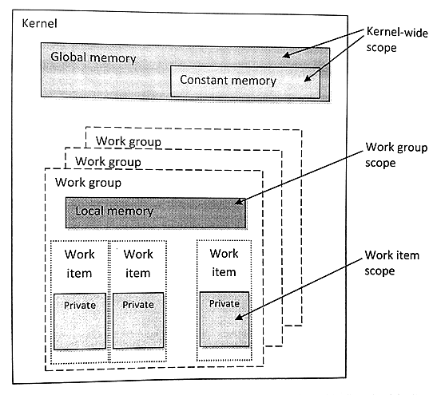
图3.6 内存区域和其在OpenCL内存模型中的界限
这些内存空间都与OpenCL内核有关。一个内核中，不同区域对应有不同的关键字，关键字用来指定变量使用哪种内存进行创建，或数据具体所存储的位置。内存区域在逻辑上是不相交的，并且不同区域的数据要被其他区域使用，是否需要进行数据转移是由内核开发者来控制。每个内存区域都有其各自的性能特性。由于性能特性的缘故，存储到不同区域的数据在读取时具有很大的性能差异。
下面简单的来描述一下每个内存区域：
-
全局内存对于执行内核中的每个工作项都是可见的(类似于CPU上的内存)。当数据从主机端传输到设备端，数据就存储在全局内存中。有数据需要从设备端传回到主机端，那么对应的数据需要存储在全局内存中。其关键字为
global或__global，关键字加在指针类型描述符的前面，用来表示该指针指向的数据存储在全局内存中。例如，本章最后的的例子中，OpenCL C代码中global int *A代表A指针指向的数据为与全局内存中(虽然我们会看到的A实际位于私有内存中)。 -
常量内存并非为只读数据设计，但其能让所有工作项同时对该数据进行访问。这里存储的值通常不会变化(比如，某个数据变量存储着π的值)。OpenCL的内存模型中，常量内存为全局内存的子集，所以内存对象传输到全局内存的数据可以指定为“常量”。使用关键字
constant或__constant将相应的数据映射到常量内存。 -
局部内存中的数据，只有在同一工作组内的工作项可以共享。通常情况下，局部内存会映射到片上的物理内存，例如：软件管理的暂存式存储器。比起全局内存，局部内存具有更短的访问延迟，以及更高的传输带宽。调用
clSetKernelArg()设置局部内存时，只需要传递大小，而无需传递对应的指针，相应的局部内存会由运行时进行开辟。OpenCL内核中，使用local或__local关键字来描述指针，从而来定义局部内存(例如，local int *sharedData)。不过，数据也可以通过关键字local，静态申明成局部内存变量(例如，local int[64])。 -
私有内存只能由工作项自己进行访问。局部变量和非指针内核参数通常都在私有内存上开辟。实践中，私有变量通常都与寄存器对应。不过，当寄存器不够私有数组使用是，这些溢出的数据通常会存储到非片上内存(高延迟的内存空间)上。
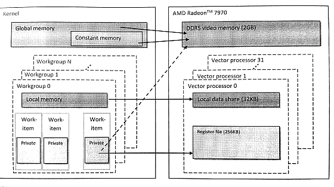
图3.7 AMD Radeon HD 7970 GPU具体硬件存储器与OpenCL内存模型的对应关系
3.5.4 通用地址空间
之前的OpenCL标准中，如果使用不同内存区域内存，需要在创建的时候使用对应的关键字对指针进行申明。为了不让编程者的精力在这些方便分散，“通用地址空间”概念添加入OpenCL 2.0标准。“通用地址空间”的建模，更加贴近已经使用很久的嵌入式C标准(IOS/IEC 9899:1999)。通用地址空间支持指向私有、局部和全局地址指针的互相转换，这样编程者只需要写一个简单的函数即可，其指针参数可以接受这指向这三种内存区域的指针。关于通用地址空间将在第7章详细讨论。
3.6 OpenCL运行时(例子)
OpenCL的四种模型在之前的章节中已经全部讨论了，OpenCL通过运行时API让应用开发者了解这些模型。平台模型用来使能一个主机，以及一个或多个设备，让其参与到OpenCL应用的执行中。应用开发者使用编程模型来让OpenCL内核实现其核心计算部分。内核执行时如何获取需要的数据，则有内存模型定义。开发者通过执行模型提交相应的命令到设备端(执行内存搬运或执行内核任务)。本节会将这些内容融合到一个完整的OpenCL应用中。
创建并执行一个简单的OpenCL应用大致需要以下几步：
-
查询平台和设备信息
-
创建一个上下文
-
为每个设备创建一个命令队列
-
创建一个内存对象(数组)用于存储数据
-
拷贝输入数据到设备端
-
使用OpenCL C代码创建并编译出一个程序
-
从编译好的OpenCL程序中提取内核
-
执行内核
-
拷贝输出数据到主机端
-
释放资源
下面的代码将具体实现以上总结的每一步。OpenCL应用中，大部分的通用代码对OpenCL的执行进行设置，这样就允许跨硬件平台(不同的供应商)架构来执行OpenCL内核。因此，其中的大部分代码可以直接在其他的应用中直接使用，并且可以抽象成用户定义函数。之后的章节，将展示OpenCL C++ API，其冗余要小于C API。
现在我们来讨论逐个步骤。本节之后，将会提供完整的程序代码。
1. 查询平台和设备
OpenCL内核需要执行在设备端，那么就需要至少一个平台和一个设备可以查询。
{%ace edit=false, lang='c_cpp'%} cl_int status; // 用于错误检查
// 检索平台的数量 cl_uint numPlatforms = 0; status = clGetPlatformIDs(0, NULL, &numPlatforms);
// 为每个平台对象分配足够的空间 cl_platform_id *platforms = NULL; platforms = (cl_platform_id *)malloc(numPlatforms * sizeof(cl_platform_id));
// 将具体的平台对象填充其中 status = clGetPlatformIDs(numPlatforms, platforms, NULL);
// 检索设备的数量 cl_uint numDevices = 0; status = clGetDeviceIDs(platforms[0], CL_DEVICE_TYPE_ALL, 0, NULL, &numDevices);
// 为每个设备对象分配足够的空间 cl_device_id *devices; devices = (cl_device_id *)malloc(numDevices * sizeof(cl_device_id));
// 将具体的设备对象填充其中 status = clGetDeviceIDs(platforms[0], CL_DEVICE_TYPE_ALL, numDevices, devices, NULL); {%endace%}
之后的完整代码中，我们将默认使用首先找到的平台和设备。这样的源码看起来更加简单明了。
2. 创建一个上下文
找到平台和设备之后，就可以在主机端对上下文进行配置。
{%ace edit=false, lang='c_cpp'%} // 创建的上下文包含所有找到的设备 cl_context context = clCreateContext(NULL, numDevices, devices, NULL, NULL, &status); {%endace%}
3. 为每个设备创建一个命令队列
创建完上下文，就要为每个设备创建一个命令队列(每个命令队列只关联其对应的设备)。主机端需要设备端执行的命令将提交到命令队列中，由命令队列管理执行。
{%ace edit=false, lang='c_cpp'%} // 为第一个发现的设备创建命令队列 cl_command_queue cmdQueue = clCreateCommandQUeueWithProperties(context, devices[0], 0, &status); {%endace%}
4. 创建设备数组用于存储数据
创建一个数组需要提供其长度，以及与该数组相关的上下文；该数组能对该上下文所有设备可见。通常，调用者需要提供一些标识，来表明数据是可只读、只写或读写。如果第四个参数传NULL，OpenCL将不会在这步对数组进行初始化。
{%ace edit=false, lang='c_cpp'%} // 向量加法的三个向量，2个输入数组和1个输出数组 cl_mem bufA = clCreateBuffer(context, CL_MEM_READ_ONLY, datasize, NULL, &status); cl_mem bufB = clCreateBuffer(context, CL_MEM_READ_ONLY, datasize, NULL, &status); cl_mem bufC = clCreateBuffer(context, CL_MEM_WRITE_ONLY, datasize, NULL, &status); {%endace%}
5. 拷贝输入数据到设备端
下一步就是将主机端指针指向的数组拷贝到设备端。该API需要一个命令队列对象作为参数，所以数据通常都是直接拷贝到设备端。将第三个参数设置为CL_TRUE，我们将等待该API将数据全部拷贝到设备端之后才返回。
{%ace edit=false, lang='c_cpp'%} // 将输入数据填充到数组中 status = clEnqueueWriteBuffer(cmdQueue, bufA, CL_TRUE, 0, datasize, A, 0, NULL, NULL); status = clEnqueueWriteBuffer(cmdQueue, bufB, CL_TRUE, 0, datasize, B, 0, NULL, NULL); {%endace%}
6. 使用OpenCL C代码创建并编译出一个程序
代码列表3.3中的向量相加内核存储在一个字符数组中，programSource，当可以用来创建程序对象(之后需要编译)。当我们编译一个程序时，我们需要提供目标设备的信息。
{%ace edit=false, lang='c_cpp'%} // 使用源码创建程序 cl_program program = clCreateProgramWithSource(context, 1, (const char **)&programSource, NULL, &status);
// 为设备构建(编译)程序 status = clBuildProgram(program, numDevices, devices, NULL, NULL, NULL); {%endace%}
7. 从编译好的OpenCL程序中提取内核
内核通过提供内核函数名，在程序上进行创建。
{%ace edit=false, lang='c_cpp'%} // 创建向量相加内核 cl_kernel kernel = clCreateKernel(program, "vecadd", &status); {%endace%}
8. 执行内核
内核创建完毕，数据都已经传输到设备端，数组需要设置到内核的参数上。之后，一条需要执行内核的命令就进入了命令队列。内核的执行方式需要指定的NDRange进行配置。
{%ace edit=false, lang='c_cpp'%} // 设置内核参数 status = clSetKernelArg(kernel, 0, sizeof(cl_mem), &bufA); status = clSetKernelArg(kernel, 0, sizeof(cl_mem), &bufB); status = clSetKernelArg(kernel, 0, sizeof(cl_mem), &bufC);
// 定义工作项的空间维度和空间大小 // 虽然工作组的设置不是必须的，不过可以设置一下 size_t indexSpaceSize[1],workGroupSize[1];
indexSpaceSize[0] = datasize / sizeof(int); workGroupSize[0] = 256;
// 通过执行API执行内核 status = clEnqueueNDRangeKernel(cmdQueue, kernel, 1, NULL, indexSpaceSize, workGroupSize, 0, NULL, NULL); {%endace%}
9. 拷贝输出数据到主机端
{%ace edit=false, lang='c_cpp'%} // 将输出数组拷贝到主机端内存中 status = clEnqueueReadBuffer(cmdQueue, bufC, CL_TRUE, 0, datasize, C, 0, NULL, NULL); {%endace%}
10. 释放资源
内核执行完成后，并且输出已经传出到主机端，OpenCL分配的资源需要进行释放。这点和C/C++程序中的内存操作、文件处理以及其他资源的处理，都需要开发者显式释放。OpenCL为不同的对象提供了不同的释放API。OpenCL上下文需要最后释放，因为数组和命令队列都绑定在上下文上。这点与C++删除对象有些相似，成员数组需要在成员释放前释放。
{%ace edit=false, lang='c_cpp'%} clReleaseKernel(kernel); clReleaseProgram(program); clReleaseCommandQueue(cmdQueue); clReleaseMemObject(bufA); clReleaseMemObject(bufB); clReleaseMemObject(bufC); clReleaseContext(context); {%endace%}
3.6.1 向量相加的完整代码
下面将完整的展示向量相加这个例子。其具有上一节的所有步骤，不过这个例子中使用了第一个平台对象和设备对象。
{%ace edit=false, lang='c_cpp'%} // This program implements a vector addition using OpenCL
// System includes #include <stdio.h> #include <stdlin.h> // OpenCL includes #include <CL/cl.h>
// OpenCL kernel to perform an element-wise addition const char *programSouce = "__kernel \n" "void vecadd(__global int *A, \n" " __global int *B, \n" " __global int *C) \n" "{ \n" " // Get the work-item's unique ID \n" " int idx = get_global_id(0); \n" " \n" " // Add the corresponding locations of \n" " // 'A' and 'B', and store the reasult in 'C' \n" " C[idx] = A[idx] + B[idx]; \n" "} \n" ;
int main(){ // This code executes on the OpenCL host
// Elements in each array const int elements = 2048;
// Compute the size of the data size_t datasize = sizeof(int) * elements;
// Allocate space for input/output host data int *A = (int *)malloc(datasize); // Input array int *B = (int *)malloc(datasize); // Input array int *C = (int *)malloc(datasize); // Output array
// Initialize the input data int i; for (i = 0; i < elements; i++){ A[i] = i; B[i] = i; }
// Use this to check the output of each API call cl_int status;
// Get the first platforms cl_platform_id platform; status = clGetPlatformIDs(1, &perform, NULL);
// Get the first devices cl_device_id device; status = clGetDeviceIDs(platform, CL_DEVICE_TYPE_ALL, 1, &device, NULL);
// Create a context and associate it with the device cl_context context = clCreateContext(NULL, 1, &device, NULL, NULL, &status);
// Create a command-queue and associate it with device cl_command_queue cmdQueue = clCreateCommandQUeueWithProperties(context, device, 0, &status);
// Allocate two input buffers and one output buffer for the three vectors in the vector addition cl_mem bufA = clCreateBuffer(context, CL_MEM_READ_ONLY, datasize, NULL, &status); cl_mem bufB = clCreateBuffer(context, CL_MEM_READ_ONLY, datasize, NULL, &status); cl_mem bufC = clCreateBuffer(context, CL_MEM_WRITE_ONLY, datasize, NULL, &status);
// Write data from the input arrays to the buffers status = clEnqueueWriteBuffer(cmdQueue, bufA, CL_FALSE, 0, datasize, A, 0, NULL, NULL); status = clEnqueueWriteBuffer(cmdQueue, bufB, CL_FALSE, 0, datasize, B, 0, NULL, NULL);
// Create a program with source code cl_program program = clCreateProgramWithSource(context, 1, (const char**)&programSource, NULL, &status);
// Build(compile) the program for the device status = clBuildProgram(program, 1, &device, NULL, NULL, NULL);
// Create the vector addition kernel cl_kernel kernel = clCreateKernel(program, "vecadd", &status);
// Set the kernel arguments status = clSetKernelArg(kernel, 0, sizeof(cl_mem), &bufA); status = clSetKernelArg(kernel, 0, sizeof(cl_mem), &bufB); status = clSetKernelArg(kernel, 0, sizeof(cl_mem), &bufC);
// Define an incde space of work-items for execution // A work-group size is not required, but can be used. size_t indexSpaceSize[1], workGroupSize[1];
// There are 'elements' work-items indexSpaceSize[0] = elements; workGroupSize[0] = 256;
// Execute the kernel status = clEnqueueNDRangeKernel(cmdQueue, kernel, 1, NULL, indexSpaceSize, workGroupSize, 0, NULL, NULL);
// Read the device output buffer to the host output array status = clEnqueueReadBuffer(cmdQueue, bufC, CL_TRUE, 0, datasize, C, 0, NULL, NULL);
// Free OpenCL resouces clReleaseKernel(kernel); clReleaseProgram(program); clReleaseCommandQueue(cmdQueue); clReleaseMemObject(bufA); clReleaseMemObject(bufB); clReleaseMemObject(bufC); clReleaseContext(context);
// free host resouces free(A); free(B); free(C);
return 0; } {%endace%}
代码清单3.4 使用C API实现的OpenCL向量相加
3.7 OpenCL C++ Wapper向量加法
Khronos组织也在后续的OpenCL标准中定义了一套C++ Wapper API。C++ API与C API是对应的(比如，cl::Memory对应cl_mem)，不过C++需要对异常和类进行处理。下面的代码对应的与代码清单3.4中的C代码相对应。
{%ace edit=false, lang='c_cpp'%} #define __CL_ENABLE_EXCEPTIONS
#include <CL/cl.hpp>
#include
int main(){ const int elements = 2048; size_t datasize = sizeof(int) * elements;
int *A = new int[elements]; int *B = new int[elements]; int *C = new int[elements];
for (int i = 0; i < elements; i++){ A[i] = i; B[i] = i; }
try{ // Query for platforms std::vectorcl::Platform platforms; cl::Platform::get(&platforms);
// Get a list of devices on this platform
std::vector<cl::Device> devices;
platforms[0].getDevices(CL_DEVICE_TYPE_ALL, &devices);
// Create a context for the devices
cl::Context context(devices);
// Create a command-queue for the first device
cl::CommandQueue queue = cl::CommandQueue(context, devices[0]);
// Create the memory buffers
cl::Buffer bufferA = cl::Buffer(context, CL_MEM_READ_ONLY, datasize);
cl::Buffer bufferB = cl::Buffer(context, CL_MEM_READ_ONLY, datasize);
cl::Buffer bufferC = cl::Buffer(context, CL_MEM_WRITE_ONLY, datasize);
// Copy the input data to the input buffers using the
// command-queue for the first device
queue.enqueueWriteBuffer(bufferA, CL_TRUE, 0, datasize, A);
queue.enqueueWriteBuffer(bufferB, CL_TRUE, 0, datasize, B);
// Read the program source
std::ifstream sourceFile("vector_add_kernel.cl");
std::string sourceCode(std::istreambuf_iterator<char>(sourceFile), (std::istreambuf_iterator<char>()));
cl::Program::Source source(1, std::make_pair(sourceCode.c_str(), sourceCode.length() + 1);
// Create the program from the source code
cl::Program program = cl::Program(context, source);
// Build the program for the devices
program.build(devices);
// Create the kernel
cl::Kernel vecadd_kernel(program, "vecadd");
// Set the kernel arguments
vecadd_kernel.setArg(0, bufferA);
vecadd_kernel.setArg(1, bufferB);
vecadd_kernel.setArg(2, bufferC);
// Execute the kernel
cl::NDRange gloabl(elements);
cl::NDRange local(256);
queue.enqueueNDRangeKernel(vecadd_kernel, cl::NullRange, gloabl, local);
// Copy the output data back to the host
queue.enqueueReadBuffer(bufferC, CL_TRUE, 0, datasize, C);
} catch(cl::Error error){ std::cout << error.what() << "(" << error.err() << ")" << std::endl; } } {%endace%}
代码清单3.5 使用C++ Wapper实现的OpenCL向量相加
3.8 CUDA编程者使用OpenCL的注意事项
英伟达的CUDA C提供的API与OpenCL类似。代码清单3.6用使用CUDA实现了向量相加，OpenCL和CUDA中的很多命令都可以相互对应。OpenCL API中有更多的参数，这是因为OpenCL需要在运行时去查找平台，并对程序进行编译。CUDA C只针对英伟达的GPU，其只有一个平台可以使用，所以平台的查找自动完成；将程序编译成PTX的过程可以在编译主机端二进制文件的时候进行(CUDA没有运行时编译)。
OpenCL中平台在运行时进行查找，程序需要选择一个目标设备，并在运行时进行编译。程序的编译不能在运行时之外完成，因为不知道哪个具体设备要去执行内核，无法在这种情况下生成中间码(IL/ISA)。比如，一个OpenCL内核在AMD GPU上测试有没有问题，但当其需要运行在Intel的设备上时，编译器生成的中间码就和AMD平台上的不太一样。从而，对与平台的查找，以及在运行时进行编译程序就能避免这样的问题。
OpenCL和CUDA C最大的区别是，CUDA C提供一些特殊的操作完成内核启动，其编译需要使用一套工具链，这套工具链中需要包含英伟达支持的预处理器。预处理器生成的代码，和OpenCL的内核代码十分相近。
{%ace edit=false, lang='c_cpp'%} #include <stdio.h> #include <stdlib.h> #include <math.h>
// CUDA kernel. Eache thread computes one element of C global void vecAdd(int *A, int *B, int *C, int elements){ // Compute the global thread ID using CUDA intrinsics int id = blocakIdx.x * blocakDim.x + threadIdx.x;
// Must check that the thread is not out of bounds if (id < elements) C[id] = A[id] + B[id]; }
int main(int argc, char *argv[]){ // Elements in each array const int elements = 2048;
// Compute the size of the data size_t datasize = sizeof(int) * elements;
// Allocate space for input/output host data int *A = (int *)malloc(datasize); // Input array int *B = (int *)malloc(datasize); // Input array int *C = (int *)malloc(datasize); // Output array
// Device input vectors int *bufA; int *bufB; // Device output vectors int *bufC;
// Allocate memeory for each vector on GPU cudaMalloc(&bufA, datasize); cudaMalloc(&bufB, datasize); cudaMalloc(&bufC, datasize);
int i; // Initialize vectors on host for (i = 0; i < elements; i++){ A[i] = i; B[i] = i; }
// Copy host vectors to device cudaMemcpy(bufA, A, datasize, cudaMemcpyHostToDevice); cudaMemcpy(bufB, B, datasize, cudaMemcpyHostToDevice);
int blockSize, gridSize;
// Number of threads in each thread block blockSize = 256;
// Number of thread blocks in grid gridSize = elements / blockSize;
// Execute the kernel vecAdd<<<gridSize, blockSize>>>(bufA, bufB, bufC, elements);
// Copy array back to host cudaMemcpy(C, bufC, datasize, cudaMemcpyDeviceToHost);
// Release device memeory cudaFree(bufA); cudaFree(bufB); cudaFree(bufC);
// Release host memeoy free(A); free(B); free(C); } {%endace%}
代码清单3.6 CUDA C版本的向量相加
第4章 OpenCL案例
4.1 案例：矩阵乘法
本章会讨论一些简单的OpenCL实例，第3章总结出的一些结论同样适用于这些实例。实例证明，编程的每一步都需要出现在一个完整的OpenCL应用中。对于习惯用C++的同学，我们也会使用C++ Wrapper实现一个实例。我们讨论的这些例子，相较于有更深层次优化的代码，算是一个基线版本。优化相关的内容将在之后的章节中讨论。
表4.1中将我们要使用到的OpenCL特性和具体实例一一对应。同学们可以按照自己的喜好，去关注特定的实例。
每节的末尾，我们都将提供完整的程序代码。另外，实例中使用到的一些功能函数将在本章末尾提供源码，有兴趣的同学可以先看看。这些功能函数包括对OpenCL代码的查错和报错，从文件中读取OpenCL程序(创建程序时需要)，并且直接报告程序编译错误。
表4.1 每个例子所涉及的OpenCL特性
| 例子 | OpenCL特性 |
|---|---|
| 直方图 | 局部内存，局部原子操作，全局原子操作，内存栅栏 |
| 图像旋转 | 图像，采样器 |
| 图像卷积 | C++ API，常量内存，图像，采样器 |
| 生产者-消费者 | 通道，多设备 |
4.2 直方图
直方图是用来计数或可视化离散数据的频度(比如，出现次数)，直方图多用于图像处理。例如本节的例子，我们将创建一个直方图，其统计像素值不超过256-bit的图像。图4.1中，左边的图为输入，右边的图为产生好的直方图。例子中我们将使用局部内存，以及在OpenCL内核中使用局部和全局原子操作。
图4.1 从一副256-bit图产生的直方图。直方图中显示了相关像素的频度。
理论上，直方图算法本身很简单。例子中，每个值都由自己对应的位置，直方图的实现如下：
{%ace edit=false, lang='c_cpp'%} int histogtam[HIST_BINS]
main(){ for (each input value){ histogtam[value]++; } } {%endace%}
与第3章的向量相加不同，直方图不那么容易并行，在多线程的状态下期中的自加操作将会导致竞争。不过，虽然效率有些低，但也可以使用原子加操作来完成直方图中的数据的自加操作。下面的伪代码，就完全能用多线程完成直方图的计算。
{%ace edit=false, lang='c_cpp'%} int histogtam[HIST_BINS]
createHistogram(){ for (each of my value){ atomic_add(histogtam[value], 1); } }
main(){ for (number of threads){ spawn_thread(createHistogram); } } {%endace%}
这个实现并不高效，因为其对每个像素都进行了原子操作。更高效的一种方式是使用局部直方图，其只统计该区域内的像素。当一个线程计算完成自己的局部直方图后，就会自动的加到全局直方图中。
{%ace edit=false, lang='c_cpp'%} int histogram[HIST_BINS]
createHistogram(){
int localHistorgram[HIST_BINS];
for (each of my value){ localHistorgram[value]++; }
for (each bin){ atomic_add(histogram[bin], localHistorgram[bin]); } }
main(){ for (number of threads){ spawn_thread(createHistogram); } } {%endace%}
很多情况下，OpenCL的多线程和CPU多线程在原理上是一样的——不过二者的线程粒度有些不同。如将第一种多线程的方式换成OpenCL中的工作项来做，因为每个工作项都要对共享的全局内存使用原子操作，其执行效率也很低。第8章中，我们将了解到，全局变量的访问延迟要远高于寄存器和局部内存。如多线程的实现，如果有太多的线程访问同一个位置，那么这个程序的效率将会大大降低。
不过，我们也不想在每个工作项中备份直方图。GPU工作项将私有数据存储到寄存器，当寄存器被占满，多于的私有变量会存储在全局内存中，这对于性能来说有弊无益。
最好的办法就是在每个工作组中创建一份局部积分图。局部内存中的数据，每个工作组中的所有工作项都可以共享访问。局部内存一般会分布在GPU的片上内存中，其访问速度要比访问全局内存快的多。如同第二种CPU多线程算法，当工作组完成局部积分图时，其会传递给全局内存，并使用原子加操作将对应位置上的数据原子加到全局内存中。不过，这种实现方式也有问题：对局部内存的访问上存在条件竞争。这里需要你对目标设备的架构有所了解。对于很多GPU来说，原子操作访问局部内存的效率很高。在AMD Radeon GPU上，原子单元位于片上暂存式存储器中。因此，局部内存上的原子操作的效率要比全局原子操作的效率高很多。下面的例子中，我们将使用到局部原子操作来生成局部直方图。
OpenCL内核的参考代码如下： {%ace edit=false, lang='c_cpp'%} #define HIST_BINS 256
__kernel void histogram(__global int *data, int numData, __global int *histogram){
__local int localHistorgram[HIST_BINS];
int lid = get_local_id(0); int gid = get_glaobal_id(0);
/* Initialize local histogram to zero */ for (int i = lid; i < HIST_BINS; i += get_local_size(0)){ localHistorgram[i] = 0; }
/* Wait nutil all work-items within
- the work-group have completed their stores */ barrier(CLK_LOCAL_MEM_FENCE);
/* Compute local histogram */ for (int i = gid; i < numData; i += get_glaobal_size(0)){ atomic_add(&localHistorgram[data[i]], 1); }
/* Wait nutil all work-items within
- the work-group have completed their stores */ barrier(CLK_LOCAL_MEM_FENCE);
/* Write the local histogram out to
- the global histogram */ for (int i = lid; i < HIST_BINS; i += get_glaobal_size(0)){ atomic_add(&histogram[i], localHistorgram[i]); } } {%endace%}
代码清单4.1 计算直方图的OpenCL内核代码
代码清单4.1的实现中包含如下5步：
-
初始化局部直方图内的值为0 (第14行)
-
同步工作项，确保相应的数据全部更新完毕 (第23行)
-
计算局部直方图 (第26行)
-
再次同步工作项，确保相应的数据全部更新完毕 (第35行)
-
将局部直方图写入到全局内存中 (第39行)
1,3,5展示了如何在OpenCL中对内存共享区域(全局或局部内存)进行读写。当我们需要工作项需要访问不同的内存位置时，我们可以以工作项的唯一标识ID为基准，然后加上所有工作项的数量作为跨度(例如，工作组内以工作组中工作项的数量，计算对应工作项所要访问的局部内存位置。或以NDRange中的尺寸，访问全局内存)。第1步中，我们以工作组的尺寸为跨距，用来将局部直方图初始化为0。这就允许我们更加灵活的对工作组尺寸进行设置及配置，并且能保证现有模块功能的正确性。第3步中使用同样的方式读取全局内存中的数据，以及第5步中也以相同的方式将局部内存中的数据写出。
第2和第4步使用栅栏对两步间的操作进行同步，其指定的内存栅栏，将同步工作组中的所有工作项。栅栏和内存栅栏将在第7章详细讨论。现在就能确保工作组中的所有工作项都要到达该栅栏处，只要有线程没有达到，已达到的线程就不能执行下面的操作。局部内存栅栏就是用来保证所有工作项都到达栅栏处，以代表局部直方图更新完毕。
为了让全局直方图得到正确的结果，我们也需要对全局积分图进行初始化。可以在数组创建之后，直接使用主机端API clEnqueueFillBuffer()对数据进行初始化。clEnqueueFillBuffer()的参数列表如下:
cl_int
clEnqueueFillBuffer(
cl_command_queue command_queue,
cl_mem buffer,
const void *pattern,
size_t offset,
size_t size,
cl_uint num_events_in_wait_list,
const cl_event *event_wait_list,
cl_event *event)
该API类似于C中的memset()函数。buffer参数就是要初始化的数组对象，具体的值由pattern指定。与memset()不同，pattern可以指定为任意的OpenCL支持类型，比如：标量、整型向量或浮点类型。pattern_size用来指定pattern所占空间。size参数用来指定数组内初始化的字节数，其值必须是pattern_size的整数倍。offset参数用来指定数组起始初始化的位置或偏移。
除了初始化直方图数组部分，主机端代码与第3章向量相加的代码很类似。代码清单4.2提供了直方图统计主机端的完整代码。内核代码在代码清单4.1中，将其存成名为histogram.cl以供4.2中的代码使用。代码中有些工具函数在4.6节中会详细介绍。这些函数用于读写BMP文件，这里提供其源码的在线地址(http://booksite.elsevier.com/9780128014141)
{%ace edit=false, lang='c_cpp'%} /* System includes */ #include <stdio.h> #include <stdlib.h> #include <sting.h>
/* OpenCL includes */ #include <CL/cl.h>
/* Utility functions */ #include "utils.h" #include "bmp_utils.h"
static const int HIST_BINS = 256;
int main(int argc, char *argv[]){
/* Host data */ int *hInputImage = NULL; int *hOutputHistogram = NULL;
/* Allocate space for the input image and read the
- data from disk */ int imageRows; int imageCols; hInputImage = readBmp("../../Images/cat.bmp", &imageRows, &imageCols); const int imageElements = imageRows * imageCols; const size_t imageSize = imageElements * sizeof(int);
/* Allocate space for the histogram on the host */ const int histogramSize = HIST_BINS * sizeof(int); hOutputHistogram = (int *)malloc(histogramSize); if (!hOutputHistogram){ exit(-1); }
/* Use this check the output of each API call */ cl_int status;
/* Get the first platform */ cl_platform_id platform; status = clGetPlatformIDs(1, &platform, NULL); check(status);
/* Get the first device */ cl_device_id device; status = clGetDeviceIDs(platform, CL_DEVICE_TYPE_GPU, 1, &device, NULL); check(status);
/* Create a command-queue and associate it with the device */ cl_command_queue cmdQueue; context = clCreateContext(NULL, 1, &device, NULL, NULL, &status); check(status);
/* Create a buffer object for the output histogram */ cl_mem bufOutputHistogram; bufOutputHistogram = clCreateBuffer(context, CL_MEM_WRITE_ONLY, histogramSize, NULL, &status); check(status);
/* Write the input image to the device */ status = clEnqueueWriteBuffer(cmdQueue, bufInputImage, CL_TRUE, 0, imageSize, hInputImage, 0, NULL, NULL); check(status);
/* Initialize the output histogram with zero */ int zero = 0; status = clEnqueueFillBuffer(cmdQueue, bufOutputHistogram, &zero, sizeof(int), 0, histogramSize, 0, NULL, NULL); check(status);
/* Create a program with source code */ char *programSource = readFile("histogram.cl"); size_t prograSourceLen = strlen(programSource); cl_program program = clCreateProgramWithSouce(context, 1, (const char **)&programSource, &prograSourceLen, &status); check(status);
/* Build (compile) the program for the device */ status = clBuildProgram(program, 1, &device, NULL, NULL, NULL); if (status != CL_SUCCESS){ printCompilerError(program, device); exit(-1); }
/* Create the kernel */ cl_kernel kernel; kernel = clCreateKernel(program, "histogram", &status); check(status);
/* Set the kernel arguments */ status = clSetKernelArg(kernel, 0, sizeof(cl_mem), &bufInputImage); status |= clSetKernelArg(kernel, 1, sizeof(int), &imageElements); status |= clSetKernelArg(kernel, 2, sizeof(cl_mem), &bufOutputHistogram);
/* Define the index space and work-group size */ size_t globalWorkSize[1]; globalWorkSize[0] = 1024;
size_t localWorkSize[1]; localWorkSize[0] = 64;
/* Enqueue the kernel for execution */ status = clEnqueueNDRangeKernel(cmdQueue, kernel, 1, NULL, globalWorkSize, localWorkSize, 0, NULL, NULL); check(status);
/* Read the output histogram buffer to the host */ status = clEnqueuReadBuffer(cmdQueue, bufOutputHistogram, CL_TRUE, 0, histogramSize, hOutputHistogram, 0, NULL, NULL); check(status);
/* Free OpenCL resources */ clReleaseKernel(kernel); clReleaseProgram(program); clReleaseCommandQueue(cmdQueue); clReleaseMemObject(bufInputImage); clReleaseMemObject(bufOutputHistogram); clReleaseContext(context);
/* Free host resource */ free(hInputImage); free(hOutputHistogram); free(programSource);
return 0; } {%endace%}
代码清单4.2 直方图统计的主机端代码。注意，check(cl_int status)是用来检查之前执行命令的状态是否为CL_SUCCESS。
4.3 图像旋转
旋转在常规的图像处理中都会用到，比如在图形匹配、图像对齐，以及其他基于图像的算法。本节旋转例子的输入是一张图，输出是一张旋转了Θ度的图。旋转完成后，就如同图4.2中所示。
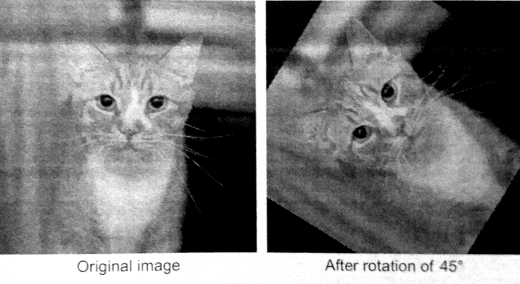
图4.2 旋转了45°的图像。超出图像范围的部分会返回黑色像素。
假设其中一个像素点的坐标为(x, y)，中心旋转点的坐标为(x0, y0)，当原始坐标旋转Θ度时，该点的新坐标为(x', y')。这些数据的计算公式如下所示：
x' = cosΘ(x - x0) + sinΘ(y - y0)
y' = -sinΘ(x - x0) + cosΘ(y - y0)
根据以上的等式，可以清楚的了解每个像素点坐标的计算都是独立的。注意，每个输入和输出的坐标值不一定是整数。因此，我们就要利用OpenCL内置函数支持浮点坐标计算，并且内部支持的线性差值方式也能生成高质量的输出图像。
如果将工作项映射到输出图像的位置上，那么工作项的全局ID就对应着输出的(x', y')，并使用上面的等式进行计算。该例子中我们以图像的中间点，作为旋转中心点。根据之前的等式，我们能推算出原始的坐标位置，以便每个工作项完成其计算：
x = x'cosΘ - y'sinΘ + x0
y = x'sinΘ + y'cosΘ + y0
相关的OpenCL C伪代码如下：
gidx = get_global_id(0);
gidy = get_global_id(1);
x0 = width / 2;
y0 = height / 2;
x = gidx * cos(theta) - gidy * sin(theta) + x0
y = gidx * sin(theta) + gidy * cos(theta) + y0
代码清单4.3中展示了如何使用OpenCL内核处理图像旋转。第3章，我们提到过图像，其对象对编程者是不透明，必须使用相关类型的内置函数。这个内核代码中，我们使用了read_imagef()(第38行)用来处理浮点数据。如同所有用来访问图像的函数一样，read_imagef()会返回一个具有4个元素的矢量类型。当我们对单通道数据进行处理(会在之后进行描述)，我们只需要在读取函数之后访问.x即可(第38行)。当我们调用写入图像的函数时，会将一个具有4个元素的矢量直接写入图像中，而不管数据实际的类型，这里就需要硬件进行适当的处理。因此，在调用write_imagef()时，我们必须将结果转换为一个float4矢量类型(第41行)。
{%ace edit=false, lang='c_cpp'%} __constant sampler_t sampler = CLK_NORMALIZED_COORDS_FALSE | CLK_FILTER_LINEAR | CLK_ADDRESS_CLAMP;
__kernel void rotation( __read_only image2d_t inputImage, __write_only image2d_t ouputImage, int imageWidth, int imageHeigt, float theta) { /* Get global ID for ouput coordinates */ int x = get_global_id(0); int y = get_global_id(1);
/* Compute image center */ float x0 = imageWidth / 2.0f; float y0 = imageHeight / 2.0f;
/* Compute the work-item's location relative
- to the image center */ int xprime = x - x0; int yprime = y - y0;
/* Compute sine and cosine */ float sinTheta = sin(theta); float cosTheta = cos(theta);
/* Compute the input location */ float2 readCoord; readCoord.x = xprime * cosTheta - yprime * sinTheta + x0; readCoord.y = xprime * sinTheta + yprime * cosTheta + y0;
/* Read the input image */ float value; value = read_imagef(inputImage, sampler, readCoord).x;
/* Write the output image */ write_imagef(outputImage, (int2)(x, y), (float4)(value, 0.f, 0.f, 0.f)); } {%endace%}
代码清单4.3 图像旋转内核
内核4.3代码中使用图像采样器(sampler_t sampler)，用来描述如何访问图像。采样器指定如何处理访问到的图像位置，比如，当访问到图像之外的区域，或是当访问到多个坐标时，不进行差值操作。
访问到的坐标不是就被标准化(比如，取值范围在0到1之间)，就是使用基于像素值地址。使用CLK_NORMALIZED_COORDS_FALSE标识指定基于像素地址的寻址。OpenCL支持很多用于处理跨边界访问寻址方式。本节例程中，我们将是用CL_ADDRESS_CLAMP用来指定，当访问到图像之外的区域，会将RGB三个通道的值设置成0，并且将A通道设置成1或0(由图像格式决定)。所以，超出范围的像素将会返回黑色。最后，采样器允许我们指定一种过滤模式。过滤模式将决定将如何返回图像所取到的值。选项CLK_FILTER_NEAREST只是简单的返回离所提供左边最近的图像元素。或者使用CLK_FILTER_LINEAR将坐标附近的像素进行线性差值。本节图像旋转的例子中，我们将使用线性差值的方式提供质量更加上乘的旋转图像。
之前版本的OpenCL中，全局工作项的数量是由NDRange进行配置，每个维度上工作项的数量必须是工作组数量的整数倍。通常，这就会导致NDRange设置的大小要远大于已经映射的数据。当访问到图像外区域时，编程者不得不传入元数据到内核当中去，用于判断每个工作项所访问到的位置是否合法——本节例子中，就需要将图像的宽和高传入内核当中。访问到非法位置的工作项将不参与计算，有时这样的做法将使内核代码变得奇怪或低效。OpenCL 2.0标准中，设备所需的NDRange中，工作组尺寸在图像边界处可变。这就用到剩余工作组(remainder work-groups)的概念，第5章还会继续讨论。将OpenCL的性能特性使用到代码清单4.3中，将会使代码简单高效。
之前的例子中，创建程序对象的过程与向量相加中创建程序对象的过程很类似。不过本节的例子中我们在内核中使用的是图像。从一副图中读取图像后，我们将其元素转换为单精度浮点类型，并将其作为OpenCL图像对象的数据来源。
分配图像对象的工作由clCreateImage() API完成。创建图像时，需要指定其维度(1,2,3维)，并且设置其图像空间大小，这些都由图像描述器(类型为cl_image_desc)对象来完成。像素类型和通道布局都有图像格式(类型为cl_image_format)来指定。图像中所存储的每个元素都为四通道，分别为R,G,B和A通道。因此，一个图像将使用CL_RGBA来表示，其每个元素向量中通道的顺序。或者，一副图像中的每个像素只用一个值来表示(比如：灰度缩放图或数据矩阵)，数据需要使用CL_R来指定图像为单通道。当在数据格式中指定数据类型，并通过签名和尺寸组合标识的方式来指定整数类型。例如，CL_SIGNED_INT32代表32位有符号整型数据，CL_UNSIGNED_INT8与C语言中无符号字符类型一样。单精度浮点数据，可以使用CL_FLOAT指定，并且这个标识用在了本节的例子中。
代码清单4.4展示了在主机端创建输入和输出图像的例子。图像对象创建完成之后，我们使用clEnqueueWriteImage()将主机端的输入数据传输到图像对象当中。
{%ace edit=false, lang='c_cpp'%} /* The image descriptor describes how the data will be stored
- in memory. This descriptor initializes a 2D image with no pitch */ cl_image_desc desc; desc.image_type = CL_MEM_OBJECT_IMAGE2D; desc.image_width = width; desc.image_height = height; desc.image_depth = 0; desc.image_array_size = 0; desc.image_row_pitch = 0; desc.image_slice_pitch = 0; desc.num_mip_levels = 0; desc.num_samples = 0; desc.buffer = NULL;
/* The image format descibes the properties of each pixel */ cl_image_format format; format.image_channel_order = CL_R; // single channel format.image_channel_data_type = CL_FLOAT;
/* Create the input image and initialize it using a
- pointer to the image data on the host */ cl_mem inputImage = clCreateImage(context, CL_MEM_READ_ONLY, &format, &desc, NULL, NULL);
/* Create the output image */ cl_mem ouputImage = clCreateImage(context, CL_MEM_WRITE_ONLY, &formatm, &desc, NULL, NULL);
/* Copy the host image data to the device / size_t origin[3] = {0,0,0}; // Offset within the image to copy form size_t region[3] = {width, height, 1}; // Elements to per dimension clEnqueueWriteImage(queue, inputImage, CL_TRUE, origin, region, 0 / row-pitch /, 0 / slice-pitch */, hostInputImage, 0, NULL, NULL); {%endace%}
代码清单4.4 为旋转例程创建图像对象
旋转例程的完整代码在代码清单4.5中展示。 {%ace edit=false, lang='c_cpp'%} /* System includes */ #include <stdio.h> #include <stdlib.h> #include <string.h>
/* OpenCL includes */ #include <CL/cl.h>
/* Utility functions */ #include "utils.h" #include "bmp-utils.h"
int main(int argc, char *argv) { / Host data */ float *hInputImage = NULL; float *hOutputImage = NULL;
/* Angle for rotation (degrees) */ const float theta = 45.f;
/* Allocate space for the input image and read the
- data from disk */ int imageRows; int imageCols; hInputImage = readBmpFloat("cat.bmp", &imageRow, &imageCols); const int imageElements = imageRows * imageCols; const size_t imageSize = imageElements * sizeof(float);
/* Allocate space for the ouput image */ hOutputImage = (float *)malloc(imageSize); if (!hOutputImage){ exit(-1); }
/* Use this to check the output of each API call */ cl_int status;
/* Get the first platform */ cl_platform_id platform; status = clGetPlatformIDs(1, &platform, NULL); check(status);
/* Get the first device */ cl_device_id device; status = clGetDeviceIDs(platform, CL_DEVICE_TYPE_GPU, 1, &device, NULL); check(status);
/* Create a context and associate it with the device */ cl_context context; context = clCreateContext(NULL, 1, &device, NULL, NULL, &status); check(status);
/* Create a command-queue and associate it with the device */ cl_command_queue cmdQueue; cmdQueue = clCreateCommandQueue(context, device, 0, &status); check(status);
/* The image descriptor describes how the data will be stored
- in memory. This descriptor initializes a 2D image with no pitch */ cl_image_desc desc; desc.image_type = CL_MEM_OBJECT_IMAGE2D; desc.image_width = width; desc.image_height = height; desc.image_depth = 0; desc.image_array_size = 0; desc.image_row_pitch = 0; desc.image_slice_pitch = 0; desc.num_mip_levels = 0; desc.num_samples = 0; desc.buffer = NULL;
/* The image format describes the properties of each pixel */ cl_image_format format; format.image_channel_order = CL_R; // single channel format.image_channel_data_type = CL_FLOAT;
/* Create the input image and initialize it using a
- pointer to the image data on the host */ cl_mem inputImage = clCreateImage(context, CL_MEM_READ_ONLY, &format, &desc, NULL, NULL);
/* Create the ouput image */ cl_mem outputImage = clCreateImage(context, CL_MEM_WRITE_ONLY, &format, &desc, NULL, NULL);
/* Copy the host image data to the device / size_t origin[3] = {0,0,0}; // Offset within the image to copy from size_t region[3] = {imageCols, imageRows, 1}; // Elements to per dimension clEnqueueWriteImage(cmdQueue, inputImage, CL_TRUE, origin, region, 0 / row-pitch /, 0 / slice-pitch */, hInputImage, 0, NULL, NULL);
/* Create a program with source code */ char *programSource = readFile("image-rotation.cl"); size_t programSourceLen = strlen(programSource); cl_program program = clCreateProgramWithSource(context, 1, (const char **)&programSource, &programSourceLen, &status); check(status);
/* Build (compile) the program for the device */ status = clBuildProgram(program, 1, &device, NULL, NULL, NULL); if (status != CL_SUCCESS){ printCompilerError(program, device); exit(-1); }
/* Create the kernel */ cl_kernel kernel; kernel = clCreateKernel(program, "rotation", &status); check(status);
/* Set the kernel arguments */ status = clSetkernelArg(kernel, 0, sizeof(cl_mem), &inputImage); status |= clSetKernelArg(kernel, 1, sizeof(cl_mem), &outputImage); status |= clSetKernelArg(kernel, 2, sizeof(int), &imageCols); status |= clSetKernelArg(kernel, 3, sizeof(int), &imageRows); status |= clSetKernelArg(kernel, 4, sizeof(float), &theta); check(status);
/* Define the index space and work-group size */ size_t globalWorkSize[2]; globalWorkSize[0] = imageCols; globalWorkSize[1] = imageRows;
size_t localWorkSize[2]; localWorkSize[0] = 8; localWorkSize[1] = 8;
/* Enqueue the kernel for execution / status = clEnqueueReadImage(cmdQueue, outputImage, CL_TRUE, origin, region, 0 / row-pitch /, 0 / slice-pitch */, hOutputImage, 0, NULL, NULL); check(status);
/* Write the output image to file */ writeBmpFloat(hOutputImage, "rotated-cat.bmp", imageRows, imageCols, "cat.bmp");
/* Free OpenCL resources */ clReleaseKernel(kernel); clReleaseProgram(program); clReleaseCommandQueue(cmdQueue); clReleaseMemObject(inputImage); clReleaseMemObject(outputImage); clReleaseContext(context);
/* Free host resources */ free(hInputImage); free(hOutputImage); free(programSource);
return 0; } {%endace%}
代码清单4.5 图像旋转主机端的完整代码
4.4 图像卷积
卷积在图像处理中经常用到，其会根据每个像素周围的像素点修改当前像素点的值。卷积核就是用来描述每个像素点如何被附近的像素点所影响。例如，模糊滤波中，使用平均的权重方式来进行计算，这样差异比较大的像素点会减少差异。对于相同的图像，如果想要做不同的操作，我们只需要变化滤波器即可，这样就能做锐化、模糊、边缘增强和图像压花。
卷积算法会遍历原始图像中的每一个像素点。对于每个原始像素点，滤波器中心点会为于像素点的上方，然后将中心点以及周围点的像素点与滤波器中对应的权重值相乘。然后将乘积的结果值相加后，产生出新的值作为输出。图4.3中就展示了该算法的具体过程。
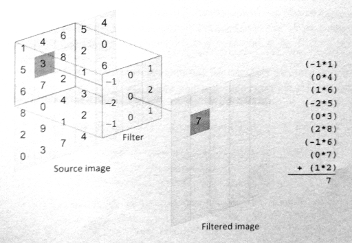
图4.3 卷积滤波如何对原图像进行处理。
图4.4a是原始图，图4.4b中展示了原图经过模糊滤波后的结果，图4.4c展示了经过一个压花滤波器处理后的结果。
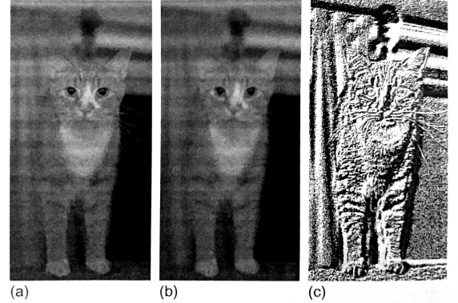
图4.4 不同卷积核对同一张图像进行处理：a)为原图；b)为模糊处理；c)为压花处理。
程序清单4.6中使用C/C++实现了一个串行的卷积操作。两层外部循环以遍历原始图像中所有的像素点。每一次滤波操作，每个原始点和其附近的点都要参与计算。需要注意的是，滤波器有可能访问到原始图像之外的区域。为了解决这个问题，我们在最内层循环中添加了四个显式的检查，当滤波器对应的坐标点位于原始图像之外，我们将使用与其最近的原始图像的边界值。
{%ace edit=false, lang='c_cpp'%} /* Iterate over the rows of the source image / for (int i = 0; i < rows; i++) { / Iterate over the columns of the source image / for (int j = 0; j < cols; j++) { / Reset sum for new source pixel */ int sum = 0;
/* Apply the filter to the neighborhood */
for (int k = -halfFilterWidth; k <= halfFilterWidth; k++)
{
for (int l = -halfFilterWidth; l <= halfFilterWidth; l++)
{
/* Indices used to access the image */
int r = i+k;
int c = j+l;
/* Handle out-of-bounds locations by clamping to
* the border pixel*/
r = (r < 0)? 0 : r;
c = (c < 0)? 0 : c;
r = (r >= rows)? rows - 1: r;
c = (c >= cols)? cols - 1: c;
sum += Image[r][c] *
Filter[k+halfFilterWidth][l+halfFilterWidth];
}
}
/* Write the new pixel value */
outputImage[i][j] = sum;
} } {%endace%}
程序清单4.6 图像卷积的串行版本
OpenCL中，使用图像内存对象处理卷积操作要比使用数组内存对象更有优势。图像采样方式会自动对访问到图像之外的区域进行处理(类似于上节图像转换中所提到的)，并且访问缓存中二维数据在硬件上也会有所优化(将会在第7章讨论)。
OpenCL上实现卷积操作几乎没有什么难度，并且写法类似于卷积操作的C版本。OpenCL版本中，我们为每一个输出的像素点创建了一个工作项，使用并行的方式将最外层两个循环去掉。那么每个工作项的任务就是完成最里面的两个循环，这两个循环完成的就是滤波操作。前面的例子中，读取源图像数据，需要配置一个OpenCL结构体，来指定数据的类型。本节的例子中，将继续使用read_imagef()。完整的内核代码将在代码清单4.7中展示。
{%ace edit=false, lang='c_cpp'%} __kerenl void convolution( __read_only image2d_t inputImage, __write_only image2d_t outputImage, int rows, int cols, __consetant float filter, int filterWidth, sampler_t sampler) { / Store each work-item's unique row and column */ int column = get_global_id(0); int row = get_global_id(1);
/* Half the width of the filter is needed for indexing
- memory later */ int halfWidth = (int)(filterWidth / 2);
/* All accesses to images return data as four-element vectors
- (i.e., float4), although only the x component will contain
- meaningful data in this code */ float4 sum = {0.0f,0.0f,0.0f,0.0f};
/* Iterator for the filter */ int filterIdx = 0;
/* Each work-item iterates around its local area on the basis of the
- size of the filter*/ int2 coords; // Coordinates for accessing the image
/* Iterate the filter rows*/ for (int i = -halfWidth; i <= halfWidth; i++) { coords.y = row + i; /* Iterate over the filter columns */ for (int j = -halfWidth; j <= halfWidth; j++) { coords.x - column + 1;
/*Read a pixel from the image. A single-channel image
* stores the pixel in the x coordinate of the reatured
* vector. */
pixel = read_imagef(inputImage, sampler, coords);
sum.x += pixel.x * filter[filterIdx++];
}
}
/* Copy the data to the output image */ coords.x = column; coords.y = row; write_imagef(outputImage, coords, sum); } {%endace%}
程序清单4.7 使用OpenCL C实现的图像卷积
访问图像总会返回具有四个值的向量(每个通道一个值)。前节例子中，我们加了.x来表示只需要返回值的第一个元素。本节例子中，我们会申明pixel(图像访问之后返回的值)和sum(存储结果数据，以拷贝到输出图像)，其类型都为float4。当然，我们仅对x元素进行累加滤波像素值的计算(第45行)。
卷积核很适合放置到常量内存上，因为所有工作项所要用到的卷积核都是相同的。简单的添加关键字"__costant"在函数参数列表中(第7行)，用于表示卷积核存放在常量内存中。
之前的例子中，我们是直接在内核内部创建了一个采样器。本节例子中，我们将使用主机端API创建一个采样器，并将其作为内核的一个参数传入。同样，本节例子中我们将使用C++ API(C++采样器构造函数需要相同的参数)。
主机端创建采样器的API如下所示：
cl_sampler clCreateSampler(
cl_context context,
cl_bool normalized_coords,
cl_addressing_mode addressing_mode,
cl_filter_mode filter_mode,
cl_int *errcode_ret)
其C++ API如下所示：
cl::Sampler::Sampler(
const Context &context,
cl_bool normalized_coords,
cl_addressing_mode addressing_mode,
cl_filter_mode filter_mode,
cl_int *err = NULL)
使用C++创建采样器的方式如下所示：
cl::Sampler sampler = new cl::Sampler(context, CL_FALSE, CL_ADDRESS_CLAMP_TO_EDGE, CL_FILTER_NEAREST);
图像旋转例子中，采样器使用非标准化坐标。这里我们将展示不同于内部使用时的另外两个采样器参数：滤波模式将使用最近的像素点的值，而非进行差值后的值(CL_FILTER_NEAREST)，并且寻址模式将在访问到图像区域之外时，将其值置为最接近的图像边界值(CL_ADDRESS_CLAMP_TO_EDGE)。(注：这里要注意一下CL和CLK的区别。CL开头的是使用在主机端API上，CLK则直接使用在OpenCL内核代码中。)
使用C++ API，创建二维图像使用image2D类进行创建，创建这个类需要一个ImageFormat对象作为参数。C API则不需要图像描述器的传入。
Image2D和ImageFormat的构造函数如下：
cl::Image2D::Image2D(
Context& context,
cl_mem_flags flags,
ImageFormat format,
::size_t width,
::size_t height,
::size_t row_pitch = 0,
void *host_ptr = NULL,
cl_int *err = NULL)
cl::ImageFormat::ImageFormat(
cl_channel_order order,
cl_channel_type type)
这样我们就能创建卷积所需要的输入和输出图像，其调用方式如下所示：
cl::ImageFormat imageFormat = cl::ImageFormat(CL_R, CL_FLOAT);
cl::Image2D inputImage = cl::Image2D(context, CL_MEM_READ_ONLY, imageFormat, imageCols, imageRows);
cl::Image2D outputImage = cl::Image2D(context, CL_MEM_WRITE_ONLY, imageFormat, imageCols, imageRows);
使用C++ API实现图像卷积的主机端代码在代码清单4.8中展示。主程序中，使用了一个5x5的高斯模糊滤波核用于卷积处理。
{%ace edit=false, lang='c_cpp'%} #define __CL_ENABLE_EXCEPTIONS
#include <CL/cl.hpp>
#include
#include "utils.h" #include "bmp_utils.h"
static const char *inputImagePath = "../../Images/cat.bmp";
static float gaussianBlurFilter[25] = { 1.0f / 273.0f, 4.0f / 273.0f, 7.0f / 273.0f, 4.0f / 273.0f, 1.0f / 273.0f, 4.0f / 273.0f, 16.0f / 273.0f, 26.0f / 273.0f, 16.0f / 273.0f, 4.0f / 273.0f, 7.0f / 273.0f, 26.0f / 273.0f, 41.0f / 273.0f, 26.0f / 273.0f, 7.0f / 273.0f, 4.0f / 273.0f, 16.0f / 273.0f, 26.0f / 273.0f, 16.0f / 273.0f, 4.0f / 273.0f, 1.0f / 273.0f, 4.0f / 273.0f, 7.0f / 273.0f, 4.0f / 273.0f, 1.0f / 273.0f }; static const int gaussianBlurFilterWidth = 5;
int main() { float *hInputImage; float *hOutpueImage;
int imageRows; int imageCols;
/* Set the filter here */ int filterWidth = gaussianBlurFilterWidth; float *filter = gaussianBlurFilter;
/* Read in the BMP image */ hInputImage = readBmpFloat(inputImagePath, &imageRows, &imageCols);
/* Allocate space for the output image */ hOutputImage = new float[imageRows * imageCols];
try { /* Query for platforms */ std::vectorcl::Platform platforms; cl::Platform::get(&platdorms);
/* Get a list of devices on this platform */
std::vector<cl::Device> device;
platforms[0].getDevices(CL_DEVICE_TYPE_GPU, &devices);
/* Create a context for the devices */
cl::Context context(devices);
/* Create a command-queue for the first device */
cl::CommandQueueu queue = cl::CommandQueue(context, devices[0]);
/* Create the images */
cl::ImageFormat imageFormat = cl::ImageFormat(CL_R, CL_FLOAT);
cl::Image2D inputImage = cl::Image2D(context, CL_MEM_READ_ONLY,
imageFormat, imageCols, imageRows);
cl::Image2D outputImage = cl::Image2D(context,
CL_MEM_WRITE_ONLY,
imageFormat, imageCols, imageRows);
/* Create a buffer for the filter */
cl::Buffer filterBuffer = cl::Buffer(context, CL_MEM_READ_ONLY,
filterWidth * filterWidth * sizeof(float));
/* Copy the input data to the input image */
cl::size<3> origin;
origin[0] = 0;
origin[1] = 0;
origin[2] = 0;
cl::size<3> region;
region[0] = 0;
region[1] = 0;
region[2] = 0;
queue.enqueueWriteImage(inputImage, CL_TRUE, origin, region,
0, 0,
hInputImage);
/* Copy the filter to the buffer*/
queue.enqueueWriteBuffer(filterBuffer, CL_TRUE, 0,
filterWidth * filterWidth * sizeof(float), filter);
/* Create the sampler */
cl::Sampler sampler = cl::Sampler(context, CL_FALSE,
CL_ADDRESS_CLAMP_TO_EDGE, CL_FILTER_NEAREST);
/* Read the program source */
std::ifstream sourceFile("image-convolution.cl");
std::string sourceCode(std::istreambuf_iterator<char>(sourceFile),
(std::istreambuf_iterator<char>()));
cl::Program::Source source(1,
std::make_pair(sourceCode.c_str(),
sourceCode.length() + 1));
/* Make program form the source code */
cl::Program program = cl::Program(context, source);
/* Create the kernel */
cl::Kernel kernel(program, "convolution");
/* Set the kernel arguments */
kernel.setArg(0, inputImage);
kernel.setArg(1, ouputImage);
kernel.setArg(2, filterBuffer);
kernel.setArg(3, filterWIdth);
kernel.setArg(4, sampler);
/* Execute the kernel */
cl::NDRange global(imageCols, imageRows);
cl::NDRange local(8, 8);
queue.enqueueNDRangeKernel(kernel, cl::NullRange, global,
local);
/* Copy the output data back to the host */
queue.enqueueReadImage(outputImage, CL_TRUE, origin, region,
0, 0,
hOutputImage);
/* Save the output BMP image */
writeBmpFloat(hOutputImage, "cat-filtered.bmp", imageRows, imageCols, inputImagePath);
} catch(cl::Error error){ std::cout << error.what() << "(" << error.err() << ")" << std::endl; }
free(hInputImage); delete hOutputImage; return 0; } {%endace%}
程序清单4.8 图像卷积主机端完整代码
4.5 生产者-消费者
很多OpenCL应用中，前一个内核的输出可能就会作为下一个内核的输入。换句话说，第一个内核是生产者，第二个内核是消费者。很多应用中生产者和消费者是并发工作的，生产者只将产生的数据交给消费者。OpenCL 2.0中提供管道内存对象，用来帮助生产者-消费者这样的应用。管道所提供的潜在功能性帮助，无论生产者-消费者内核是串行执行或并发执行。
本节中，我们将使用管道创建一个生产者-消费者应用，其中生产者和消费者分别用内核构成，这两个内核使用的是本章前两个例子：卷积和直方图。卷积内核将会对图像进行处理，然后使用管道将输出图像传入直方图内核中(如图4.5所示)。为了描述额外的功能，展示管道如何使用处理单元提高应用效率。本节的例子我们将使用多设备完成。卷积内核将执行在GPU设备上，直方图内核将执行在CPU设备上。多个设备上执行内核可以保证两个内核能够并发执行，其中管道就用来传输生产者需要的数据(且为消费者需要的数据)。对于管道对象的详细描述将在第6章展开。那么现在，让我们来了解一下本节例子的一些基本需求。
管道内存中的数据(称为packets)组织为先入先出(FIFO)结构。管道对象的内存在全局内存上开辟，所以可以被多个内核同时访问。这里需要注意的是，管道上存储的数据，主机端无法访问。
内核中管道属性可能是只读(__read_only)或只写(__write_only)，不过不能是读写。如果管道对象没有指定是只读或只写，那么编译器将默认其为只读。管道在内核的参数列表中，通过使用关键字pipe进行声明，后跟数据访问类型，和数据包的数据类型。例如，pipe __read_only float *input将会创建一个只读管道，该管道中包含的数据为单精度浮点类型。

图4.5 生产者内核将滤波后生成的像素点，通过管道传递给消费者内核，让消费者内核产生直方图：(a)为原始图像;(b)为滤波后图像;(c)为生成的直方图。
为了访问管道，OpenCL C提供内置函数read_pipe()和write_pipe()：
int read_pipe(pipe gentype p, gentype *ptr);
int write_pipe(pipe gentype p, const gentype *ptr);
当一个工作项调用read_pipe()(程序清单4.10，第16行)，一个包将从管道p中读取到ptr中。如果包读取正常，该函数返回0；如果管道为空，则该函数返回一个负值。write_pipe()(程序清单4.9，第50行)与读取类似，会将ptr上的包写入到管道p中。如果包写入正常，该函数返回0；如果管道已满，则该函数返回一个负值
程序清单4.9和4.10展示了我们应用中内核的实现。当我们指定目标消费者内核运行在CPU时，那么只有一个工作项去创建直方图。同样，当我们显式的指定一个CPU，我们需要之间将直方图的结果存放在全局内存中(第8章将对这样的权衡做更细化的讨论)。
{%ace edit=false, lang='c_cpp'%} __constant sampler_t sampler = CLK_NORMALIZED_COORDS_FALSE | CLK_FILTER_NEAREST | CLK_ADDRESS_CLAMP_TO_EDGE;
__kernel void producerKernel( image2d_t __read_only inputImage, pipe __write_only float *outputPipe, __constant float filter, int filterWidth) { / Store each work-item's unique row and column */ int column = get_global_id(0); int row = get_global_id(1);
/* Half the width of the filter is needed for indexing
- memory later*/ int halfWidth = (int)(filterWidth / 2);
/* Used to hold the value of the output pixel */ float sum = 0.0f;
/* Iterator for the filter */ int filterIdx = 0;
/* Each work-item iterates around its local area on the basis of the
- size of the filter */ int2 coords; // Coordinates for accessing the image
/* Iterate the filter rows / for (int i = -halfWidth; i <= halfWidth; i++) { coords.y = row + i; / Iterate over the filter columns */ for (int j = -halfWidth; j <= halfWidth; j++) { coords.x = column + j;
/* Read a pixel from the image. A single channel image
* stores the pixel in the x coordinate of the returned
* vector. */
float4 pixel;
pixel = read_imagef(inputImage, sampler, coords);
sum += pixel.x * filter[filterIdx++];
}
}
/* Write the output pixel to the pipe */ write_pipe(outputPipe, &sum); } {%endace%}
程序清单4.9 卷积内核(生产者)
{%ace edit=false, lang='c_cpp'%} __kernel void consumerKernel( pipe __read_only float *inputPipe, int totalPixels, __global int *histogram) { int pixelCnt; float pixel;
/* Loop to process all pixels from the producer kernel / for (pixelCnt = 0; pixelCnt < totalPixels; pixelCnt++) { / Keep trying to read a pixel from the pipe * until one becomes available */ while(read_pipe(inputPipe, &pixel));
/* Add the pixel value to the histogram */
histogram[(int)pixel]++;
} } {%endace%}
程序清单4.10 卷积内核(消费者)
虽然，存储在管道中的数据不能被主机访问，不过在主机端还是需要使用对应的API创建对应的管道对象。其创建API如下所示：
cl_pipe clCreatePipe(
cl_context context,
cl_mem_flags flags,
cl_uint pipe_packet_size,
cl_uint pipe_max_packets,
const cl_pipe_properties *properties,
cl_int *errcode_ret)
我们需要考虑两个内核不是并发的情况；因此，我们就需要创建足够大的管道对象能存放下图像元素数量个包：
cl_mem pipe = clCreatepipe(context, 0, sizeof(float), imageRows * imageCols, NULL, &status);
利用多个设备的话，就需要在主机端多加几步。当创建上下文对象时，需要提供两个设备(一个CPU设备，一个GPU设备)，并且每个设备都需要有自己的命令队列。另外，程序对象需要产生两个内核。加载内核是，需要分别入队其各自的命令队列：生产者(卷积)内核需要入队GPU命令队列，消费者(直方图)内核需要入队CPU命令队列。完整的代码在程序清单4.11中。
{%ace edit=false, lang='c_cpp'%} /* System includes */ #include <stdio.h> #include <stdlib.h> #include <string.h>
/* OpenCL includes */ #include <CL/cl.h>
/* Utility functions */ #include "utils.h" #include "bmp-utils.h"
/* Filter for the convolution */ static float gaussianBlurFilter[25] = { 1.0f / 273.0f, 4.0f / 273.0f, 7.0f / 273.0f, 4.0f / 273.0f, 1.0f / 273.0f, 4.0f / 273.0f, 16.0f / 273.0f, 26.0f / 273.0f, 16.0f / 273.0f, 4.0f / 273.0f, 7.0f / 273.0f, 26.0f / 273.0f, 41.0f / 273.0f, 26.0f / 273.0f, 7.0f / 273.0f, 4.0f / 273.0f, 16.0f / 273.0f, 26.0f / 273.0f, 16.0f / 273.0f, 4.0f / 273.0f, 1.0f / 273.0f, 4.0f / 273.0f, 7.0f / 273.0f, 4.0f / 273.0f, 1.0f / 273.0f }; static const int filterWidth = 5; static const int filterSize = 25 * sizeof(float);
/* Number of histogram bins */ static const int HIST_BINS = 256;
int main(int argc, char argv[]) { / Host data */ float *hInputImage = NULL; int *hOutputHistogram = NULL;
/* Allocate space for the input image and read the
- data from dist */ int imageRows; int imageCols; hInputImage = readBmpFloat("../../Images/cat.bmp", &imageRows, &imageCols); const int imageElements = imageRows * imageCols; const size_t imageSize = imageElements * sizeof(float);
/* Allocate space for the histogram on the host */ const int histogramSize = HIST_BINS * sizeof(int); hOutputHistogram = (int *)malloc(histogramSize); if (!hOutputHistogram){ exit(-1); }
/* Use this to check the output of each API call */ cl_int status;
/* Get the first platform */ cl_platform_id platform; status = clGetPlatformIDs(1, &platform, NULL); check(status);
/* Get the devices */ cl_device_id devices[2]; cl_device_id gpuDevice; cl_device_id cpuDevice; status = clGetDeviceIDs(platform, CL_DEVICE_TYPE_CPU, 1, &gpuDevice, NULL); status = clGetDeviceIDs(platform, CL_DEVICE_TYPE_GPU, 1, &cpuDevice, NULL); check(status); devices[0] = gpuDevice; devices[1] = cpuDevice;
/* Create a context and associate it with the devices */ cl_context context; context = clCreateContext(NULL, 2, devices, NULL, NULL, &status); check(status);
/* Create the command-queues */ cl_command_queue gpuQueue; cl_command_queue cpuQueue; gpuQueue = clCreateCommandQueue(context, gpuDevice, 0, &status); check(status); cpuQueue = clCreateCommandQueue(context, cpuDevice, 0, &status); check(status);
/* The image desriptor describes how the data will be stored
- in memory. This descriptor initializes a 2D image with no pitch*/ cl_image_desc desc; desc.image_type = CL_MEM_OBJECT_IMAGE2D; desc.image_width = imageCols; desc.image_height = imageRows; desc.image_depth = 0; desc.image_array_size = 0; desc.image_row_pitch = 0; desc.image_slice_pitch = 0; desc.num_mip_levels = 0; desc.num_samples = 0; desc.buffer = NULL;
/* The image format descibes the properties of each pixel */ cl_image_format format; format.image_channel_order = CL_R; // single channel format.image_channel_data_type = CL_FLOAT;
/* Create the input image and initialize it using a
- pointer to the image data on the host. */ cl_mem inputImage; inputImage = clCreateImage(context, CL_MEM_READ_ONLY, &format, &desc, NULL, NULL);
/* Create a buffer object for the ouput histogram */ cl_mem ouputHistogram; outputHisrogram = clCreateBuffer(context, CL_MEM_WRITE_ONLY, &format, &desc, NULL, NULL);
/* Create a buffer for the filter */ cl_mem filter; filter = clCreateBuffer(context, cl_MEM_READ_ONLY, filterSize, NULL, &status); check(status);
cl_mem pipe; pipe = clCreatePipe(context, 0, sizeof(float), imageRows * imageCols, NULL, &status);
/* Copy the host image data to the GPU */ size_t origin[3] = {0,0,0}; // Offset within the image to copy from size_t region[3] = {imageCols, imageRows, 1}; // Elements to per dimension status = clEnqueueWriteImage(gpuQueue, inputImage, CL_TRUE, origin, region, 0, 0, hInputImage, 0, NULL, NULL); check(status);
/* Write the filter to the GPU */ status = clEnqueueWriteBuffer(gpuQueue, filter, CL_TRUE, 0, filterSize, gaussianBlurFilter, 0, NULL, NULL); check(status);
/* Initialize the output istogram with zeros */ int zero = 0; status = clEnqueueFillBuffer(cpuQueue, outputHistogram, &zero, sizeof(int), 0, histogramSize, 0, NULL, NULL); check(status);
/* Create a program with source code / char programSource = readFile("producer-consumer.cl"); size_t programSourceSize = strlen(programSource); cl_program program = clCreateProgramWithSource(context, 1, (const char)&programSource, &programSourceLen, &status); check(status);
/* Build (compile) the program for the devices */ status = clBuildProgram(program, 2, devices, NULL, NULL, NULL); if (status != CL_SUCCESS) { printCompilerError(program, gpuDevice); exit(-1); }
/* Create the kernel */ cl_kernel producerKernel; cl_kernel consumerKernel; producerKernel = clCreateKernel(program, "producerKernel", &status); check(status); consumerKernel = clCreateKernel(program, "consumerKernel", &status); check(status);
/* Set the kernel arguments */ status = clSetKernelArg(producerKernel, 0, sizeof(cl_mem), &inputImage); status |= clSetKernelArg(producerKernel, 1, sizeof(cl_mem), &pipe); status |= clSetKernelArg(producerKernel, 2, sizeof(int), &filterWidth); check(status);
status |= clSetKernelArg(consumerKernel, 0, sizeof(cl_mem), &pipe); status |= clSetKernelArg(consumerKernel, 1, sizeof(int), &imageElements); status |= clSetKernelArg(consumerKernel, 2, sizeof(cl_mem), &outputHistogram); check(status);
/* Define the index space and work-group size */ size_t producerGlobalSize[2]; producerGlobalSize[0] = imageCols; producerGlobalSize[1] = imageRows;
size_t producerLocalSize[2]; producerLocalSize[0] = 8; producerLocalSize[1] = 8;
size_t consumerGlobalSize[1]; consumerGlobalSize[0] = 1;
size_t consumerLocalSize[1]; consumerLocalSize[0] = 1;
/* Enqueue the kernels for execution */ status = clEnqueueNDRangeKernel(gpuQueue, producerKernel, 2, NULL, producerGlobalSize, producerLocalSize, 0, NULL, NULL);
status = clEnqueueNDRangeKernel(cpuQueue, consumerKernel, 2, NULL, consumerGlobalSize, consumerLocalSize, 0, NULL, NULL);
/* Read the output histogram buffer to the host */ status = clEnqueueReadBuffer(cpuQueue, outputHistogram, CL_TRUE, 0, histogramSize, hOutputHistogram, 0, NULL, NULL); check(status);
/* Free OpenCL resources */ clReleaseKernel(producerKernel); clReleaseKernel(consumerKernel); clReleaseProgram(program); clReleaseCommandQueue(gpuQueue); clReleaseCommandQueue(cpuQueue); clReleaseMemObject(inputImage); clReleaseMemObject(outputHistogram); clReleaseMemObject(filter); clReleaseMemObject(pipe); clReleaseContext(context);
/* Free host resources */ free(hInputImage); free(hOutputHistogram); free(programSource);
return 0; } {%endace%}
程序清单4.11 生产者-消费者主机端完整代码
4.6 基本功能函数
因为OpenCL意味着对于系统来说是不可知的，有些任务不能像传统的C/C++那样自动完成。不过好消息是当相关工具代码完成后，就可以是用到所有OpenCL应用代码中。
4.6.1 打印编译错误信息
当我们尝试编译和链接我们的OpenCL程序对象时(使用clBuildProgram()、clCompileProgram()和clLinkProgram())，OpenCL C代码可能会出现错误。出现错误时，主机端不会直接显示这些编译错误，而是直接退出。通过OpenCL API的返回值，让编程者知道是编译时候的错误，并需要手动去将编译输出打印出来。
当OpenCL程序对象编译失败，一个构建日志将会产生，并保存在程序对象中。该日志可以通过API clGetProgramBuildInfo()检索出，传入CL_PROGRAM_BUILD_LOG到param_name，得到相应日志内容。还有与其类似的API存在，clProgramBuildInfo()需要调用两次：第一次是获取日志的大小，分配对应大小的数组，用来放置日志内容；第二次是将日志中的具体内容取出。
本章中我们自己封装了一个名为printCompilerError()的函数，用于打印OpenCL C的编译错误信息。printCompilerError()的具体实现在程序清单4.12中。
{%ace edit=false, lang='c_cpp'%} void printCompilerError(cl_program program, cl_device_id device) { cl_int status;
size_t logSize; char *log;
/* Get the log size */ status = clGetProgramBuildInfo(program, device, CL_PROGRAM_BUILD_LOG, 0, NULL, &logSize); check(status);
/* Allocate space for the log */ log = (char *)malloc(logSize); if (!log){ exit(-1); }
/* Read the log */ status = clGetPeogramBuildInfo(program, device, CL_PROGRAM_BUILD_LOG, logSize, log, NULL); check(status);
/* Print the log */ printf("%s\n", log); } {%endace%}
程序清单4.12 查询程序对象编译日志的函数封装
4.6.2 创建一个程序字符串
第3章中，我们使用了字符数组(const char **strings)，调用clCreateProgramWithSource()创建程序对象。不过，将OpenCL C源直接携程字符数组是十分不便的。因此，通常的做法都是将OpenCL C源码放置在一个单独文件中，当主机端使用到的时候对改文件进行读取。
使用C++时(如代码清单4.8所示)，从文件中读取字符串就简单很多。不过，当我们使用C语言时，从文件中读取字符串就需要多做一些事情。代码清单4.13就展示了，如何使用一个C函数将文件读取到一个C的字符串(字符数组)中。
{%ace edit=false, lang='c_cpp'%} char *readFile(const char *filename) { FILE *fp; char *fileData; long fileSize;
/* Open the file */ fp = fopen(filename, "r"); if (!fp){ printf("Could not open file: %s\n", filename); exit(-1); }
/* Determine the file size */ if (fseek(fp, 0, SEEK_END)){ printf("Error read the file\n"); exit(-1); } fileSize = ftell(fp); if (fileSize < 0){ printf("Error read the file\n"); exit(-1); } if (fseek(fp, 0, SEEK_SET)){ printf("Error read the file\n"); exit(-1); }
/* Read the contents */ fileData = (char *)malloc(fileSize + 1); if (!fileData){ exit(-1); } if (fread(fileData, fileSize, 1, fp) != 1){ printf("Error reading the file\n"); exit(-1); }
/* Terminate the string */ fileData[fileSize] = '\0';
/* Close the file */ if (fclose(fp)){ printf("Error closing the file\n"); exit(-1); }
return fileData; } {%endace%}
程序清单4.13 将OpenCL C源码从文件中读取出
4.7 本章总结
本章我们使用了一些著名的数据并行算法，将其使用OpenCL实现。直方图的例子展示了如何使用局部内存，并在执行阶段使用了适当的同步。旋转和卷积例子使用了图像对象和采样器。卷积例子中使用了C++ API，并将卷积核放置到常量内存中。生产者-消费者例子中，使用管道为两个内核传递所需的数据，并使用了多设备的方式实现。
虽然，这些OpenCL例子都是正确的，不过其性能还可以进一步提高——有些例子可以有很大的提升。在对应硬件平台上的性能优化，将是后面章节讨论的核心。
第5章 OpenCL运行时和并发模型
支持OpenCL设备已经相当多了，从离散式显卡(其拥有成千上万个“核芯”)，到嵌入式设备上的中央处理器(CPU)。能获得如此广泛的支持，很重要的原因在于OpenCL的内存模型和执行模型。OpenCL通过抽象模型的方式跨越硬件架构的鸿沟(不需要遵循特定硬件上的编程规则)，同时让编程者在相应的硬件上获得更优的性能，且不用代码做太多修改。本章，我们会讨论执行模型中的不同组件。
5.1 命令和排队模型
OpenCL基于任务并行/主机控制模型，其每个任务均为数据并行。其通过使用每个设备上线程安全的命令队列作为该模型的保证。内核、数据搬移，以及其他操作并非是使用者调用一些运行时函数，就能简单的执行。这些操作使用异步入队操作，将命令送入指定队列，并在未来的某个时刻执行该命令。执行的同步点在于主机端的命令队列和设备端的命令队列。
OpenCL命令队列中命令可以是，执行内核、内存数据转移或是同步命令。要想了解命令的执行结果，只能等到命令队列到达同步点才能看到。下面列举几个主要的同步点：
- 使用指定OpenCL时间等待某个命令完成
- 调用
clFinish()函数，将阻塞主机端的线程，直到命令队列中的命令全部执行完毕 - 执行一次阻塞式内存操作
5.1.1 阻塞式内存操作
阻塞式内存操作应该是最常见，而且是最简单的同步方式。这种操作会阻塞主线程的进行，直到内存数据传输完成。数据传输API都具有一个参数，可以决定是否使用阻塞的方式进行数据传输。clEnqueueReadBuffer()中的blocking_read就是用来控制是否使用阻塞方式进行数据传输。
cl_int
clEnqueueReadBuffer(
cl_command_queue command_queue,
cl_mem buffer,
cl_bool blocking_read,
size_t offset,
size_t size,
const void *ptr,
cl_uint num_events_in_wait_list,
const cl_event *event_wait_list,
cl_event *event)
将数据从设备端获取，或是传输到设备端，通常都会使用同步的方式进行内存操作。例如，从设备端获取数据到主机端时，在传输没有完成前，主机是不能访问其数据，否则将会导致一些未定义行为。因此，blocking_read参数可以设置成CL_TRUE，用以阻塞主线程，直到数据传输完成主线程才能继续进行下面的操作。使用这种方式进行同步，可以直接获取数据，之后就不需要在进行额外的同步了。阻塞和非阻塞式内存操作将在第6章进行详细讨论。
5.1.2 事件
这里先回顾一下第3章中，事件可以用来指定命令之间的依赖关系。每个clEnqueue*API都可以产生一个与其入队命令相关的事件对象，我们可以通过事件对象来查询命令的状态，并且指定对应命令所要依赖命令所对应的事件队列。生成的事件可以作为一种依赖机制，以便OpenCL运行时实现其所要执行的任务图[译者注1]。
随着命令入队和出队，以及命令的执行，事件都会持续的更新其状态。命令状态列举如下：
- 已入队(Queued)：该命令已经在命令队列中占据了一席之地
- 已提交(Submitted)：该命令已经从命令队列中移除，并提交给设备执行
- 已就绪(Ready)：该命令已经准备好在设备端执行
- 已运行(Running)：该命令已经在设备端执行，但并未完成
- 已完成(Ended)：该命令已经在设备端执行完成
- 已结束(Complete)：该命令以及其子命令都已经执行完成
因为异步是OpenCL天生的特性，所以其API不能简单的返回错误码，或与命令执行相关的性能数据(可以通过API提供的参数获取入队时的错误码，以及入队的时间点)。不过，OpenCL也提供查询命令相关错误码的机制。要查询对应的错误码，需要提供该命令对应的时间对象。甚至，命令执行无误完成也有对应的错误码。查询事件对象的状态，需要调用clGetEventInfo()API，将CL_EVENT_COMMAND_STATUS_EXECUTION_STATUS传递给param_name参数即可。
cl_int
clGetEventInfo(
cl_event event,
cl_event_info param_name,
size_t param_value_size，
void *param_value,
size_t *param_value_size_ret)
当命令完全正确无误完成，相关事件对象的状态会设置成CL_COMPLETE。注意“完全”值的是其命令本身，以及其相关子命令，都需要正确完成。子命令指的是内核入队其子内核，子内核的运行称为子命令。有关设备端入队的内容会在之后(本章)进行讨论。
当命令非正常结束，为正常完成时，相关事件对象的状态通常会返回一个负值。这种情况下，当有命令异常终止，那么使用同样上下文对象的命令队列则不再可用，相关命令队列上的命令将会全部退出。
调用clWaitForEvents()将会阻塞主机端的执行，直到指定的事件对象链表上相关的命令全部解除，才会解除对主机主线程的阻塞。
cl_int
clWaitForEvent(
cl_uint num_events,
const cl_event *event_list)
5.1.3 命令栅栏和命令标识
想要不阻塞主机端线程，用于同步命令的方式也存在——入队一个命令栅栏。命令栅栏从原理来说，与在主机端调用clWaitForEvent()类似，但这种方式不会显式的进行处理，而是运行时库会内部处理。入队栅栏需要使用clEnqueueBarrierWithWaitList()API[译者注2]，可将命令队列列表当做参数输入。如果没有提供命令队列，栅栏会等待之前入队的所有命令完成(后续入队的命令将不会执行，直到前面所有的命令执行完成)。
标识(Marker)的作用于栅栏类似，其使用clEnqueueMarkerWithWaitList()API[译者注2]进行入队。栅栏和标识的区别在于，标识不会阻塞之后入队的命令。因此，当设备完成所有指定事件时，标识就允许编程者去查询指定事件状态，而不会阻碍其中一些命令的执行。
使用这两种同步命令，以及事件的方式，就给OpenCL提供了更多的可能，能够完成更加复杂的任务图，完成高难度的动作。这种方式在使用乱序命令队列时尤为重要，其能在运行时优化命令的调度。
5.1.4 事件回调
OpenCL允许用户为事件对象注册回调函数。当事件对象到达某一指定状态时，回调函数便会调用。clSetEventCallback()函数就可为OpenCL的事件对象注册回调函数：
cl_int
clSetEventCallback(
cl_event event,
cl_int command_exec_callback_type,
void (CL_CALLBACK *pfn_event_notify)(
cl_event event,
cl_int event_command_exec_status,
void *user_data),
void *user_data)
command_exec_callback_type用来指定回调函数在何时调用。可能的参数只有：CL_SUBMITTED，CL_RUNNING和CL_COMPLETE。
这种设置是为了保证相关回调函数的调用顺序。举个例子，不同的回调函数注册了事件状态为CL_SUBMITTED和CL_RUNNING，当事件对象的状态发生变化就能确保按照正确的顺序进行，而回调函数的调用顺序就无法保证正确。我们将在第6章和第7章讨论到，内存状态只能在事件对象为Cl_COMPLETE是确定(事件对象为其他状态时，无法确定内存状态)。
5.1.5 使用事件分析性能
确定一个命令的执行事件时，会将对应的数值传递给事件对象，命令在不同的状态时都由对应的计时器进行计时。不过，这样的计时需要开启命令队列的计时功能，需要在创建命令队列时，将CL_QUEUE_PROFILING_ENABLE加入properties参数内，提供给clCreateCommandQueueWithProperties()。
任何与命令相关的时间对象，都可以通过调用clGetEventProfilingInof()获取性能信息：
cl_int
clGetEventProfilingInfo(
cl_event event,
cl_profiling_info param_name,
size_t param_value_size,
void *param_value,
size_t *param_value_size_ret)
通过对不同状态的耗时查询，编程者可以知道命令每个状态在队列中的耗时情况。同样，编程者通常就想知道对应命令实际运行的时间(比如：数据传输的耗时情况，内核执行的耗时情况)。为了确定命令整体耗时情况，可以将CL_PROFILING_COMMAND_START和CL_PROFILING_COMMAND_END作为实参传入param_name中。如果需要将子内核执行的时间计算在内，就需要传递CL_PROFILING_COMMAND_COMPLETE作为实参。OpenCL定义的计时器，其计时的精度必须是纳秒级别。
5.1.6 用户事件
目前我们所见到的事件对象都是入队命令API，通过其参数中提供一个事件对象指针的方式所产生的事件对象。不过，当编程者想要OpenCL命令等待一个主机端的事件，应该怎么办呢？例如，编程者可能需要OpenCL进行数据传输，这个数据传输任务需要等待某个文件更新之后再进行传输。为了应对这种情况，OpenCL 1.2标准中添加了用户事件(user event)。
cl_event
clCreateUserEvent(
cl_context context,
cl_int *errcode_ret)
这样创建的事件对象，其状态就是由应用开发者来决定，而非OpenCL运行时来决定。用户事件的状态数量会有限制，用户事件可以为“已提交”状态(CL_SUBMITTED)，也可为“已完成”(CL_COMPLETE)，或是某一个错误状态。当一个用户事件对象创建，其执行状态就被设置成CL_SUBMITTED。
用户事件的状态可以通过clSetUeserEventStatus()进行设置：
cl_int clSetUserEventStatus(
cl_event event,
cl_int execution_status)
execution_status参数指定需要设置的新执行状态。用户事件对象可以将状态设置为两种，第一种可为CL_COMPLETE；第二种可为一个负数，表示一个错误。设置成负值意味着所有入队的命令，需要等待该用户事件终止才能退出。还有一点需要注意的是，clSetUserEventStatus()只能对一个用户事件对象使用一次，也就是对一个对象只能设置一次执行状态。
5.1.7 乱序任务队列
第3章和第4章中的OpenCL例子都是以顺序命令队列(默认方式)进行。顺序命令队列能保证命令将按入队的顺序，在对应的设备上执行。不过，OpenCL队列也可以乱序执行。一个乱序队列时没有什么执行顺序可言的。硬件支持直接内存访问(direct memory access, DMA)引擎可以并行启动多个计算单元，或设备可以同时执行多个内核。像这样的硬件设备就完全可以支持OpenCL运行时使用乱序命令队列，其可以自由且并行的调度这些操作(就是无法保证哪个命令先执行)。
创建命令队列的API(clCreateCommandQueueWithProperties())可以设置乱序的标志位，这种方式到现在我们还没有尝试过。只要属性参数中包含CL_QUEUE_OUT_OF_ORDER_EXEC_MODE_ENABLE就可以产生支持乱序执行的命令队列。需要注意的，支持乱序的队列需要创建在支持乱序执行的设备上。
代码清单5.1中，展示了使用乱序命令队列程序主机代码的一部分，其包括写入输入数组、执行两个内核，并且将数据读取到主机端。这一系列命令的顺序由特定的事件对象指定，事件对象中记录了各个命令的依赖关系。任务图就由这些事件对象创建，这样即使是乱序执行也能保证命令执行的顺序正确。其中内存传输函数是非阻塞的，并且最后的同步，是显式的在主机端对读取事件对象使用clWaitForEvents()完成的。使用非阻塞形式的内存传输需要格外注意，因为当使用乱序队列时，可能会有潜在的传输区域或执行区域的重叠。
{%ace edit=false, lang='c_cpp'%} // ----------------------------- // Relevant host program // -----------------------------
// Create the command-queue cl_command_queue_properties properties = CL_QUEUE_OUT_OF_ORDER_EXEC_MODE_ENABLE; cl_command_queue queue = clCreateCommandQueueWithProperties(context, devices[0], &properties, NULL);
// Declare the events cl_event writeEvent, kernelEvent0, kernelEvent1, readEvent;
// Create the buffers cl_mem input = clCreateBuffer(context, CL_MEM_READ_ONLY, 32 * sizeof(float), NULL, NULL); cl_mem intermediate = clCreateBuffer(context, CL_MEM_READ_WRITE, 32 * sizeof(float), NULL, NULL); cl_mem outpt = clCreateBuffer(context, CL_MEM_WRITE_ONLY, 32 * sizeof(float), NULL, NULL);
// Write the input data clEnqueueWriteBuffer(queue, input, CL_FALSE, 0, 32 * sizeof(float), (void *)hostInput, 0, NULL, &writeEvent);
// Set up the execution unit dimensions used by both kernels size_t localws[1] = {8}; size_t globalws[1] = {32};
// Enqueue the first kernel clSetKernelArg(kernel, 0, sizeof(cl_mem), (void *)&input); clSetKernelArg(kernel, 1, sizeof(cl_mem), (void *)&intermediate); clSetKernelArg(kernel, 2, 8 * sizeof(float), NULL); clEnqueueNDRangeKernel(queue, kernel, 1, NULL, globalws, localws, 1, &kernelEvent0, &kernelEvent1);
// Read output data EnqueueNDRangeKernel(queue, output, CL_FALSE, 0, 32 * sizeof(float), (void *)&hostOutput, 1, &kernelEvent1, &readEvent);
// Block until the read has completed clWaitForEvents(1, &readEvent);
clReleaseEvent(writeEvent); clReleaseEvent(kernelEvent); clReleaseEvent(readEvent); {%endace%}
程序清单5.1 同时入队两个内核，使用事件来控制依赖关系
乱序命令队列并不保证其执行顺序就是乱序的。鲁棒性较好的应该避免死锁的发生，当意识到有死锁发生的可能，那最好的方式就是串行执行入队的命令。我们再来看一下程序清单5.1的代码，即便是是顺序执行，程序也能得到正确的结果。不过，当“写入输入数据”和“执行第一个内核”这两个任务在源码中颠倒，那么开发者还是期望队列是以乱序的方式执行。但是，当队列顺序执行的时候，就会产生死锁，因为内核执行事件将会等待写入操作的完成。
[译者注1] ”任务图“的概念类似于OpenVX中Graph的概念，有兴趣的读者可以查阅OpenVX的官方文档。
[译者注2]这两个API很相似，不过其描述不同。下面引用OpenCL官方的描述：
clEnqueueBarrierWithWaitList: Enqueues a barrier command which waits for either a list of events to complete, or if the list is empty it waits for all commands previously enqueued in command_queue to complete before it completes. This command blocks command execution, that is, any following commands enqueued after it do not execute until it completes. This command returns an event which can be waited on, i.e. this event can be waited on to insure that all events either in the event_wait_list or all previously enqueued commands, queued before this command to command_queue, have completed.
clEnqueueMarkerWithWaitList： Enqueues a marker command which waits for either a list of events to complete, or if the list is empty it waits for all commands previously enqueued in command_queue to complete before it completes. This command returns an event which can be waited on, i.e. this event can be waited on to insure that all events either in the event_wait_list or all previously enqueued commands, queued before this command to command_queue, have completed.
5.2 多命令队列
如果系统里面有多个设备(比如，CPU和GPU，或多个GPU)，每一个设备都需要拥有自己的命令队列。不过，OpenCL允许将多个命令队列，通过同一个上下文对象映射到同一个设备上。这对重叠执行独立或重叠命令，以及主机和设备通讯十分有用，并且这种方式是替代乱序队列的一种策略。了解同步的能力，以及主机端和设备端的内存模型(第6章和第7章将详细讨论)对于管理多个命令队列来说是非常必要。
图5.1展示了一个OpenCL上下文中具有两个设备的情况。为不同的设备创建不同的命令队列。程序清单5.2中展示了创建两个命令队列的相关代码。这里尤其要注意的是，使用OpenCL事件对象进行同步时，只能针对同一上下文对象中的命令。如果是不同的上下文中的设备，那么事件对象的同步功能将会失效，并且要在这种情况下共享数据，就需要在两个设备之间进行显式的拷贝。
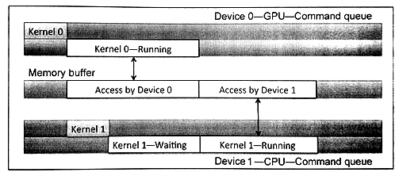
图5.1 同一上下文中创建多个不同设备的命令队列。展示两个不同的设备的执行情况，每个设备都具有自己的命令队列。
{%ace edit=false, lang='c_cpp'%} // Obtain devices of both CPU and GPU types cl_device_id devices[2]; err_code = clGetDeviceIDs(NULL, CL_DEVICE_TYPE_CPU, 1, &devices[0], NULL); err_code = clGetDeviceIDs(NULL, CL_DEVICE_TYPE_GPU, 1, &devices[1], NULL);
// Create a context include two devices cl_context ctx; ctx = clCreateContext(0, 2, devices, NULL, NULL);
// Create queues to each device cl_command_queue queue_cpu, queue_gpu; queue_cpu = clCreateCommandQueueWithProperties(context, devices[0], 0, NULL); queue_gpu = clCreateCommandQueueWithProperties(context, devices[1], 0, NULL); {%endace%}
程序清单5.2 使用同一个上下文为两个不同设备创建命令队列
OpenCL下的多设备编程，可以总结为以下的两种情况(使用异构设备进行并行编程)：
- 流水执行：两个或多个设备以流水方式工作，这样就需要设备间互相等待结果，如图5.2所示
- 单独执行：这种方式就是每个设备各自做各自的任务，每个设备间的任务并无相关性，如图5.3所示
代码清单5.3中，等待列表执行的顺序为：CPU需要等待GPU上的内核全部执行完成，才能执行自己的内核(图5.2所示)。
{%ace edit=false, lang='c_cpp'%}
cl_event event_cpu, event_gpu;
// Starts as soon as enqueued err = clEnqueueNDRangeKernel(queue_gpu, kernel_gpu, 2, NULL, global, local, 0, NULL, &event_gpu);
// Starts after event_gpu is on CL_COMPLETE err = clEnqueueNDRangeKernel(queue_cpu, kernel_cpu, 2, NULL, global, local, 0, NULL, &event_cpu); {%endace%}
程序清单5.3 使用流水方式进行多设备合作。CPU端的入队命令要等到GPU上的内核完成后才能执行。
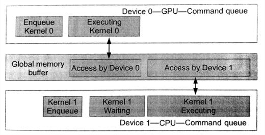
图5.2 多个设备已流水方式工作，操作同一块内存。CPU的队列在等待GPU内核执行完成。
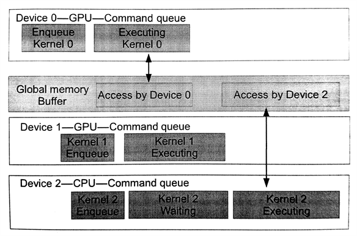
图5.3 多个设备已并行的方式工作。这种情况下，GPU端的两个命令队列不会对同一块内存进行操作，并单独执行。这里CPU队列需要等待GPU上的任务全部完成，才能继续进行。
代码清单5.4展示了并行执行在不同设备上的内核。图5.4展示了两个GPU设备独立执行自己的内核。CPU端的入队命令要等到GPU上的内核完成后才能执行。
{%ace edit=false, lang='c_cpp'%}
cl_event events_gpu[2];
// Both of the GPU devices can execute concurrently as soon as they have // their respective data since they have no events in their wait-lists err = clEnqueueNDRangeKernel(queue_gpu_0, kernel_gpu, 2, NULL, global, local, 0, NULL, &event_gpu[0]); err = clEnqueueNDRangeKernel(queue_gpu_1, kerenl_gpu, 2, NULL, global, local, 0, NULL, &event_gpu[1]);
// The CPU will wait until both GPUs have finished executing their kernels. // This requires two events in the CPU's wait-list err = clEnqueueNDRangeKernel(queue_cpu, kernel_cpu, 2, NULL, global, local, 2, events_gpu, NULL); {%endace%}
程序清单5.4 多设备并行。CPU端的入队命令要等到GPU上的内核完成后才能执行。
5.3 内核执行域:工作项、工作组和NDRange
OpenCL的执行以内核为中心。内核代码用来表示一个内核线程所要做的所有事情，其代码由OpenCL C语言完成。内核代码第一眼看去和C函数很类似：OpenCL C语言中，内核可以看成一个C函数。OpenCL内核具有一组参数列表，还有局部变量(类似Pthread中线程的局部变量)，以及标准的控制流。OpenCL内核的并行性，使其区别于C函数。我们在第3章仅用OpenCL工作项，并行化处理了一维空间中的大量数据。本节，我们将继续延伸讨论OpenCL执行模型中，工作项、工作组，以及NDRange的层级结构。
内核的执行需要运行时提供对应的启动/调度接口，该函数就是clEnqueueNDRangeKernel()。内核在调度中会产生大量工作项，共同执行内核“函数体”。使用启动接口之后，就会产生一个NDRange，其包括了内核执行的维度，以及每个维度上的工作项的数量。一个NDRange可以定义为1，2和3维，用于规划处工作项的“格子图”，工作项简单和直接的结构非常适合并行执行。将OpenCL模型映射到硬件端，每个工作项都运行在一个硬件单元上，这个单元称为“执行元素”(Processing element, PE)。OpenCL内核执行时，可能有多个工作项依次工作在同一个PE上。
内核内部调度中，每一个工作项都是独立的。OpenCL中会有意限制工作项间的同步。松散的执行模型就允许OpenCL程序去扩展设备，可用于具有超级多核心的规模化设备。可扩展的设备通常都会抽象成一种层级结构——特别是内存系统——OpenCL也为其设备的执行空间提供了一种层级结构。
为了更加灵活的支持具有大量核心的设备，OpenCL将各维度上执行的工作项等分成多个工作组。每个工作组内，工作项可以进行某种程度上的交互。OpenCL标准定义了一个完整的工作项，可以并发执行在同一计算单元上。这种执行方式对于同步很重要。并发执行中的工作组内允许局部同步，不过也会对交互有所限制，以提高可扩展性。当应用中设计到需要在全局执行空间内，任务需要互相交互，那么这种OpenCL并行应用无非是低效的。使用工作组会有更高率的交互，因为一个计算单元通常映射到一个核芯上，因此工作组内交互通常都是在一块共享缓存或暂存存储器上。
通过定义更多的工作组，OpenCL内核将扩展的越来越大，并且有越来越多的线程同时在设备上执行(有更多的工作项和工作组都会在同时执行在同一设备上)。OpenCL工作项可以看做win32或POSIX线程。OpenCL层级执行模式只需要一步，因为工作项都位于工作组内，这样只需要将工作组(数量要少于工作项)映射到硬件线程的上下文中即可。这样做和单指令多数据的执行很相似，就如向量执行N操作，只使用了N个时钟周期。不过，OpenCL中子向量(工作项)可以拥有自己的程序计数器，直到同步点。用GPU来举个例子，64个工作项(英伟达为32个)可以同时被一个硬件线程处理(在SIMD单元上)，这种方式在AMD的架构中就是大家熟知的波阵面(wavefront)；在英伟达架构中，则称为线程束(warp)。即使每次执行的工作项数量被锁定，不过不同的工作项可以执行内核内不同的指令序列。这种情况会发生在内核中有分支语句时，因为If-else语句具有不同分支，所以不同的工作项会对条件状态进行评估后执行。不过工作项也有可能在同一波或束中，走进不同的分支中，这时硬件有责任将不该执行的分支结果舍弃。这种情况就是众所周知的分歧(divergence)，这会极大影响内核执行的效率，因为工作项执行了冗余的操作，并且这些操作的结果最后都要舍弃。
这样的执行模型，就需要所有的工作项具有自己的程序计数器，这种方式要比显式使用SIMD多媒体扩展流指令在x86的处理上简单许多。因为SIMD的执行方式，需要注意给定的设备，了解对应设备支持的SSE版本，OpenCL的工作组尺寸通常是SIMD最大向量宽度的倍数。工作组尺寸查询API为clGetKernelWorkGroupInfo()，需要CL_KERNEL_PREFERRED_WORK_GROUP_SIZE_MULTIPLE作为实参传入param_name中。
OpenCL定义了一些内置函数，可以在内核内部获取工作项在执行区域内的具体位置。这些函数通常都有一个维度参数，这里定义为uint dimension。其值可以为0、1和2，可以通过维度的设置获取NDRange参数在入队时的设置：
- uint get_work_dime():返回入队时所设定的工作维度数量
- size_t get_global_size(uint dimension):返回对应维度上的全局工作项数量
- size_t get_global_id(uint dimension):返回对应维度上对应全局工作项索引
- size_t get_local_size(uint dimension):返回对应维度上工作组的数量。如果内核所分配的工作项在工作组内数量不均匀，那么剩余工作组(之后章节中讨论)将返回与均匀工作项不同的值
- size_t get_enqueued_local_size(uint dimension):返回对应维度上均匀区域内工作项数量
- size_t get_num_groups(uint dimension):返回当前工作项索引，以该工作项所属组的起始位置为偏移
- size_t get_group_id(uint dimension):返回当前工作组的索引。也可通过获取该工作组的第一个元素的全局索引，然后除以工作组的大小得到当前工作组索引
这里展示一个简单的OpenCL内核实例(程序清单5.5)，其输入输出均为二维数组。图5.4展示了这段代码的执行过程。对应每个像素的工作项，调用get_global_id()都会返回不同的数值。在这个简单例子中，我们使用线性位置直接对二维数据结构进行映射。实际使用时，可能会有更加复杂的映射关系，根据输入和输出的结构，再加上算法实现，可以对数据进行处理。
{%ace edit=false, lang='c_cpp'%} __kernel void simpleKernel( __global float *a, __global float *b){
int address = get_global_id(0) + get_global_id(1) * get_global_size(0); b[address] = a[address] * 2; } {%endace%}
程序清单5.5 一个简单的内核，将输入的二维数组中的数据乘以2后，放入输出数组中
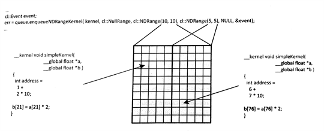
图5.4 执行程序清单5.5中的简单内核。展示NDRange中不同区域工作项的具体工作。
之前版本的OpenCL中，会要求NDRange上所有维度上的工作项数量是工作组的整数倍。例如，一个NDRange的大小为800x600，其工作组的大小就不能为16x16，因为600无法整除16。实际编程时，为了程序执行的效率，通常会在执行时将不足的区域补足，这样的话NDRange的区域要比实际处理的数据的空间大一些。当我们要使用16x16的工作组大小，我们需要将NDRange的设置扩大到800x608。由于有些工作项并未映射到数据集上，这就需要对这些工作项进行处理(比如：检查工作项的索引，当发现该工作项没有对应到数据集上时，立即返回)。不过，当工作组在执行的时候进行栅栏同步时，就需要组内所有工作项都到达栅栏处，这样这种扩充的方式就无法正常工作了。为了缓解这一问题，OpenCL 2.0删除了“各维度上的工作项数量需要是工作组的倍数”这一限制。另外，OpenCL 2.0为NDRange定义了“剩余工作项”(remainder work-groups)，并且最后剩余的工作组与开发者定义的工作组大小是完全不同的。比如，800x600的NDRange和16x16的工作组大小，那剩余的工作组大小为16x8。get_local_size()返回工作组实际的大小，get_enqueue_local_size()返回剩余的工作组大小。
OpenCL 2.0也提供了计算线性索引的内置函数，开发者不需要像使用之前版本那样自己去计算线性索引值了。线性索引对于每个工作项来说是定义明确，且唯一的标识(这个线性索引与NDRange设置的维度数量或工作组大小无关)。get_global_linear_id()返回全局上的索引值，get_local_linear_id()返回局部上的索引值：
- size_t get_global_linear_id():返回工作项的全局线性索引
- size_t get_local_linear_id():返回工作项的组内线性索引
5.3.1 同步
使用多个执行单元的时候，使用同步机制可以约束执行的顺序。通常，OpenCL会有意的限制在不同执行单元间进行同步。这种方式会影响OpenCL的扩展性，不过OpenCL的目标是支持各种各样的异构设备。例如，执行OpenCL程序的设备会自行管理线程，比如GPU；另外也有使用操作系统管理线程的设备，比如主流的x86 CPU。不使用同步，会让程序的性能提升，不过会影响程序的正确性。对于一个x86线程来说，其会尝试访问信号量，如果该信号量不可用，则该线程阻塞；操作系统会在该线程执行之后，以及当程序资源不足需要释放该线程的空间时，删除该线程。对于GPU线程资源有限，GPU也会对有问题的线程使用同样的策略。例如，执行阶段移除一组线程束，而不释放其使用的资源，这就会让下一个线程束进行等待，这就如同x86线程中的信号量一样，之前的线程不释放该信号量，下一个线程则无法继续进行，从而造成程序死锁。
为了避免不必要的事情发生，OpenCL定义了阻塞式同步(例如：栅栏)，且只限于工作组内的工作项。第7章中，我们将看到OpenCL 2.0也可提供"上锁-释放"内存，用来约束使用原子操作和栅栏操作的顺序。不过，其最终目的是为了能在更加广泛的算法中，使用内存的顺序约束来保证运行顺序，而不是使用同步操作来约束执行顺序。下一节中，将讨论一些在工作组中的同步方式：栅栏和命令式同步。
5.3.2 工作组栅栏
将栅栏设置到工作组内部时，需要所有工作项都到达该栅栏才能继续下面的工作，否则任何线程都无法越过该栅栏，这是一种程序计数器级别的限制。不过，对于处于不同分支的工作项来说，其行为是未定义的：很多设备上，这将导致程序死锁，因为工作组内的有线程并未到达栅栏处，所以其他线程只能进行等待。
图5.5中展示了一个简单OpenCL同步的例子。图中，我们能看到每个工作组内都由8个工作项。OpenCL标准宽松的解释下(并未限定硬件的具体实现)，工作项在工作组内的执行并非同时。当调用work_group_barrier()函数时，会让提前到达的线程等待未到达对应位置的线程，直到所有线程到达该位置，则继续进行下面的操作。不同的工作组中完成等待的时间都是相互独立的。
内置函数work_group_barrier()的参数列表如下所示：
- void work_group_barrier(cl_mem_fence_flag flags)
- void work_group_barrier(cl_mem_fence_flag flags, memory_scope scope)
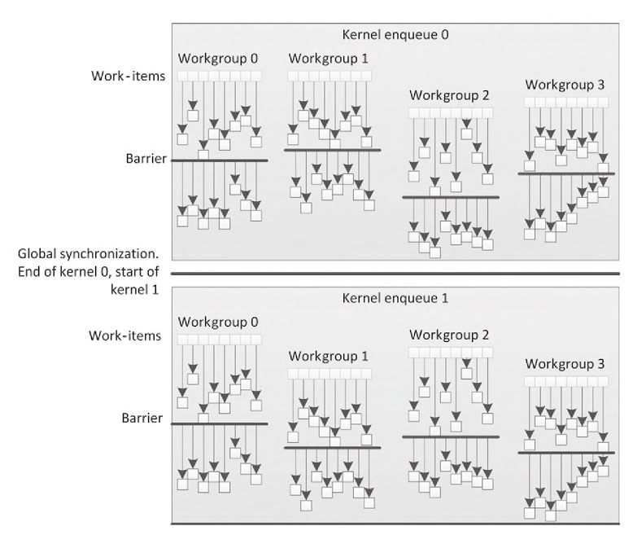
图5.5 单内核执行时，使用栅栏方式进行组内工作项同步。全局同步在内核结束时完成，并且其保证所有工作项都完成了自己的工作，并且内存内容和期望的一致。
第7章中，我们将讨论关于scope参数的更多细节(也会对flags参数做更多的讨论)。不过，当栅栏操作完成时，flags参数就已足以决定对应的内存操作是否对组内其他工作项可见。
flags可以设置成的实参：
- CLK_LOCAL_MEM_FENCE：需要对于局部内存的所有访问组内可见
- CLK_GLOBAL_MEM_FENCE：需要对全局内存的所有访问组内可见
- CLK_IMAGE_MEM_FENCE：需要对图像的所有访问组内可见
接下来的例程中，我们可以看到工作项将数据搬运到局部内存中，每个工作项从数组中搬运一个数，其需要工作项的操作对其他所有工作项可见。为了达到这个目的，我们会调用work_group_barrier()，并传入CLK_LOCAL_MEM_FENCE作为flags的实参。
内核间的调度，所有工作都可以保证操作完全完成，以及内存保证一致。下一个内核，以同样的语义加载。假设我们入队两个内核0和1(如图5.5)，这两个内核为同一个内核对象，内核代码和API调用在代码清单5.6中展示，代码行为和图5.5一致。
这个例子中，我们可以看到，工作项只是简单的将局部内存中相邻的两个数，进行简单的操作。不过，在操作两个相邻数之前，需要保证这些用来运算的数据时可读的。
{%ace edit=false, lang='c_cpp'%} //------------------------------ // Relevant host program //------------------------------
cl_mem input = clCreateBuffer(context, CL_MEM_READ_ONLY, 32 * sizeof(float), 0, 0);
cl_mem intermediate = clCreateBuffer(context, CL_MEM_READ_WRITE, 32 * sizeof(float), 0, 0);
cl_mem output = clCreateBuffer(context, CL_MEM_WRITE_ONLY, 32 * sizeof(float), 0, 0);
clEnqueueWriteBuffer(queue, input, CL_TRUE, 0, 32 * sizeof(float), (void *)hostInput, 0, NULL, NULL);
clSetKernelArg(kernel, 0, sizeof(cl_mem), (void *)&input); clSetKernelArg(kernel, 1, sizeof(cl_mem), (void *)&intermediate); clSetKernelArg(kernel, 2, 8 * sizeof(float), NULL);
size_t localws[1] = {8}; size_t globalws[1] = {32};
clEnqueueNDRangeKernel(queue, kernel, 1, NULL, globalws, localws, 0, NULL, NULL);
clSetKernelArg(kernel, 0, sizeof(cl_mem), (void *)&input); clSetKernelArg(kernel, 1, sizeof(cl_mem), (void *)&intermediate); clSetKernelArg(kernel, 2, 8 * sizeof(float), NULL);
clEnqueueNDRangeKernel(queue, kernel, 1, NULL, globalws, localws, 0, NULL, NULL);
clEnqueueReadBuffer(queue, output, CL_TRUE, 0, 32 * sizeof(float), (void *)&hostOutput, 0, NULL, NULL);
//------------------------------ // Kernel //------------------------------
__kernel void simpleKernel( __global float *a, __global float *b, __local float *localbuf){
// Cache data to local memory localbuf[get_local_id(0)] = a[get_global_id(0)];
// Wait until all work-items have read the data and // it becomes visible work_group_barrier(CLK_LOCAL_MEM_FENCE);
// Perform the operation and output the data unsigned int otherAddress = (get_local_id(0) + 1) % get_local_size(0); b[get_global_id(0)] = localbuf[get_local_id(0)] + localbuf[otherAddress]; } {%endace%}
程序清单5.6 同一个命令队列中入队两个内核
5.3.3 内置工作组函数
OpenCL C编程语言在实现的时候，有很多内置函数是基于工作组的。例如栅栏操作，该内置函数需要工作组内所有的工作项，都到达指定位置后才能继续运行。因此，当工作组中有条件块时，就需要同一组中的所有工作项都执行相同的分支。
工作组评估函数也支持各种OpenCL C内置的数据类型，例如：half, int, uint, long , ulong, flaot和double。我们可以看到，在OpenCL标准中这些属于都被gentype所替代，gentype用来表示在OpenCL C中所使用的通用数据。我们依据不同函数的功能将这些函数分成三类评估函数：
- 谓词评估函数
- 广播函数
- 并行原语函数
5.3.4 谓词评估函数
谓词评估函数评估工作组中的所有工作项，如果满足相关的条件则返回一个非零值。函数声明如下：
- int work_group_any(int predicate)
- int work_group_all(int predicate)
评估的工作组中有一个工作项满足条件，则函数work_group_any()返回一个非零值。当评估的工作组中所有工作项满足条件，则函数work_group_all()返回一个非零值。程序清单5.7中，展示了一个work_group_all()函数的使用示例：
{%ace edit=false, lang='c_cpp'%} __kernel void compare_elements(int *input, int *output){ int tid = get_global_id(0); int result = work_group_all((input[tid] > input[tid +1 ])); output[tid] = result; } {%endace%}
程序清单5.7 谓词评估函数在OpenCL内核中的使用。
5.3.5 广播函数
广播函数是将一个工作项的数据传输给工作组内其他的工作项。函数参数在维度上进行了重载：
- 一维：gentype work_group_broadcast(gentype x, size_t local_id)
- 二维：gentype work_group_broadcast(gentype x, size_t local_id_x, size_t local_id_y)
- 三维：gentype work_group_broadcast(gentype x, size_t local_id_x, size_t local_id_y, size_t local_id_z)
可以看出，函数用坐标来标定对应的工作项，然后共享该工作项的数据x。该函数将广播返回值到每个工作项上。
5.3.6 并行原语函数
OpenCL支持两类内置并行原语函数：归约和扫描。这个函数会用在很多并行应用上，这两个函数的实现都由设备供应商使用高性能代码提供，这样对于开发者来说会省去自己去优化的风险和工作量。函数声明如下：
gentype work_group_reduce_<op>(gentype x)gentype work_group_scan_inclusive_<op>(gentype x)gentype work_group_scan_exclusive_<op>(gentype x)
函数中的<op>可以替换为add，min或max。这样就可以使用该函数找到局部数组的最大值，就如下面的代码所示：
// float max:
max = work_group_reduce_max(local_data[get_local_id(0)]);
很多并行编程者对于前缀求和非常熟悉，前缀求和可以使用work_group_scan_inclusive_add()或work_group_scan_exclusive_add()实现。闭扫描和开扫描的不同在于，当前位置上的元素是否参与累加。闭扫描版本生成的数组会包含当前位置的元素。开扫描版本则不会包含当前位置的元素。每个工作项都可用该函数，且会在工作组内返回相关线性索引的值。
并行原语函数无法保证浮点数操作的顺序，所以该函数未与浮点数相关联。
5.4 原生和内置内核
OpenCL定义了两种不需要cl_kernel对象的入队执行机制，就是原生内核和内置内核。原生内核和内置内核是相互独立的两个概念。原生内核提供一种机制，将标准C函数(异构设备上)入队执行。内置内核需要指定的设备，并且提供对应机制允许应用开发者启动"特殊"的硬件加速模块(有可能就是指定的设备)。
5.4.1 原生内核
原生内核是一种回调的机制，其能更简洁的集成进OpenCL的执行模型中。原生内核允许使用传统编译器去编译C标准函数(与OpenCL不同)，并将编译好的C函数在放入OpenCL的任务执行图中，由事件来触发下一个事件。原生内核可以在一个设备上入队执行，并且与OpenCL内核共享内存对象。
原生内核与OpenCL内核的区别在于设置参数方面。原生内核使用对应的API进行入队(clEnqueueNativeKernel())，将标准C函数通过指针的方式进行传入。参数列表需要连同其大小，打包传入设备。
cl_int
clEnqueueNativeKernel(
cl_command_queue command_queue,
void (CL_CALLBACK *user_func)(void *),
void *args,
size_t cb_args,
cl_uint num_mem_objects,
const cl_mem *mem_list,
const void **args_mem_loc,
cl_uint num_events_in_wait_list,
const cl_event *event_wait_list,
cl_event *event)
常规OpenCL内核可以将数组和图像作为参数传入，原生内核同样可以使用对应的数组和图像作为输入。OpenCL中向原生内核传递参数完成后，会通过一种方式进行解包。可以通过设置mem_list的实参，向原生内核传入一个内存对象链表；args_mem_loc参数存储一个指针链表，用于存储解包之后的内存对象。
为了更加形象的表达，代码清单5.8中，我们使用了一个原生函数foo()，其参数链表中包含5个值，其中第0个参数存储是5，第2个存储是8；1,3参数是两个数组对象；4参数是一个图像对象(如图5.6所示)。
{%ace edit=false, lang='c_cpp'%}
// Native function that will be enqueued to device void foo(void *args){
... }
cl_command_queueu queue = clCreateCommandQueue(...); cl_mem buffer1 = clCreateBuffer(...); cl_mem buffer2 = clCreateBuffer(...); cl_mem image = clCreateImage2D(...);
void *args[5] = {(void *)5, NULL, (void *)8, NULL, NULL, NULL};
num_mem_objects = 3; cl_mem mem_list[3] = {buffer1, buffer2, image}; void *args_mem_loc[3] = {&args[1], &args[3], &args[4]};
clEnqueueNativeKernel(queue, foo, args, sizeof(args), num_mem_objects, mem_list, args_mem_loc, 0, NULL, NULL); {%endace%}
程序清单5.8 将原生foo()入队
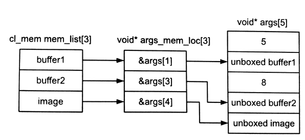
图5.6 程序清单5.8中，使用clEnqueueNativeKernel()实例，展示内存对象和参数的对应关系
5.4.2 内置内核
内置内核与设备是捆绑关系，其也不会在运行时由源码进行构建。通常的内置内核会展示硬件对固定函数的加速能力，这个硬件可能是一种支持OpenCL的特殊嵌入式设备，或是自定义设备。内置内核属于OpenCL定义之外的内容，因此内置内核实现的最总解释权还在硬件供应商那里。
作为OpenCL的扩展，Intel实现了运动估计的内置内核。该扩展利用了OpenCL扩展架构，对指定领域的功能进行加速，Intel所有支持OpenCL的设备都支持该功能(进行运动估计)。
5.5 设备端排队
OpenCL 2.x版本之前的标准，只允许命令从主机端入队。OpenCL 2.0去除了这个限制，并定义了设备端的命令队列，其允许父内核直接将子内核入队。
设备端任务队列的好处是启用了嵌套并行机制(nested parallelism)——一个并行程序中的某个线程，再去开启多个线程[1]。嵌套并行机制常用于不确定内部某个算法要使用多少个线程的应用中。与单独使用分叉-连接(fork-join)机制相比，嵌套并行机制中产生的线程会在其任务完成后销毁。这两种机制的区别如图5.7所示：
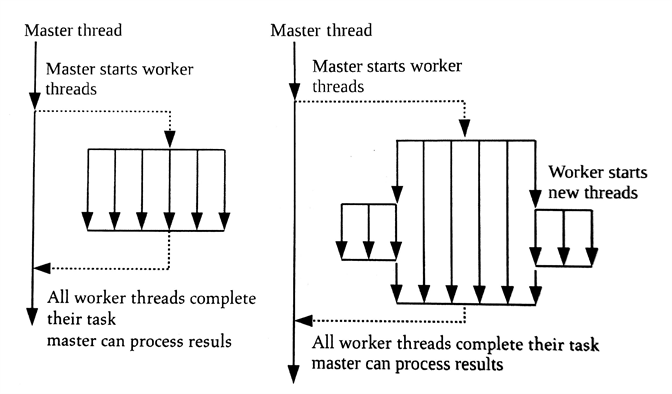
图5.7 单独的"分叉-链接"的结果与嵌套并行机制的线程分布对比
单独调用的方式，执行完任务后，线程的生命周期就结束了。嵌套并行将会在任务执行中间产生更多的线程，并在某个子任务完成后结束线程。
嵌套循环适用于不规则或数据驱动的循环结构。数据驱动型算法有很多，这里用一个比较常见的算法作为例子：广度优先搜索算法(BFS)。广度优先搜索算法从图中的根节点开始访问其相邻的节点。之后，访问到的节点，继续访问其附近的节点，直到所有节点都访问到。当BFS算法并行时，被访问的新顶点不知道应用何时开启。设备端入队允许开发者使用OpenCL内核实现嵌套并行，这样的方式要比在主机端入队合适的多。
总结一下设备端入队的好处：
- 内核可以在设备端直接入队。这样就不需要同步，或与主机的交互，并且会隐式的减少数据传输
- 更加自然的表达算法。当算法包括递归，不规则循环结构，或其他单层并行是固定不均匀的，现在都可以在OpenCL中完美的实现
- 更细粒度的并行调度，以及动态负载平衡。设备能更好的相应数据驱动决策，以及适应动态负载
为了让子内核入队，内核对象需要调用一个OpenCL C内置函数enqueue_kernel()。这里需要注意的是，每个调用该内置函数的工作项都会入队一个子内核。该内置函数的声明如下：
int
enqueue_kernel(
queue_t queue,
kernel_enqueue_flags_t flags,
const ndrange_t ndrange,
void (^block)(void))
和主机端的API一样，其也需要传递一个命令队列。flags参数用来执行子内核何时开始执行。该参数有三个语义可以选择：
- CLK_ENQUEUE_FLAGS_NO_WAIT:子内核立刻执行
- CLK_ENQUEUE_FLAGS_WAIT_KERNEL:子内核需要等到父内核到到ENDED点时执行。这就意味着子内核在设备上运行时，父内核已经执行完成
- CLK_ENQUEUE_FLAGS_WAIT_WORK_GROUP:子内核必须要等到入队的工作组执行完成后，才能执行。
需要注意的是，父内核可能不会等到子内核执行结束。一个父内核的执行状态为"完成"时，意味着其本身和其子内核都完成。如果父子内核正确无误的执行完成，那么父内核会置为CL_COMPLETE。如果有子内核的程序计数器错误，或非正常终止，父内核的状态会置为一个错误值(一个给定的负值)。
与clEnqueueNDRangeKernel()类似，enqueue_kernel()也需要使用NDRange来指定维度信息(传递给ndrange参数)。与主机端调用一样，全局偏移和工作组数量是可选的。这时需要在内核上创建ndrange_t类型的对象来执行执行单元的配置，这里使用到了一组内置函数：
ndrange_t ndrange_<N>D(const size_t global_work_size[<N>])
ndrange_t ndrange_<N>D(const size_t global_work_size[<N>], const size_t global_work_size[<N>])
ndrange_t ndrange_<N>D(const size_t global_work_size[<N>], const size_t global_work_size[<N>], const size_t local_work_size_[<N>])
其中<N>可为1,2和3。例如，创建一个二维的800x600的NDRange可以使用如下方式：
size_t globalSize[2] = {800, 600};
ndrange_t myNdrange = ndrange_2D(globalSize);
最终，enqueue_kernel()的最后一个参数block，其为指定入队的内核。这里指定内核的方式称为“Clang块”。下面两节中将会更加详细的对“如何利用设备入队”进行讨论，以及如何使用块语法指定一个嵌套内核。
如主机端API一样，enqueue_kernel()会返回一个整数，代表其执行是否成功。返回CLK_SUCCESS为成功，返回CLK_ENQUEUE_FAILURE则为失败。编程者想要了解失败入队的更多原因的话，需要在clBuildProgram()传入"-g"参数，或是clCompileProgram()调用会启用细粒度错误报告，会有更加具体的错误码返回，例如：CLK_INVALID_NDRANGE或CLK_DEVICE_QUEUE_FULL。
5.5.1 创建一个设备端队列
设备端队列也需要使用clCreateCommandQueueWithProperties()在主机端进行创建。为了表明是为了设备端创建的命令队列，properties中需要传入CL_QUEUE_ON_DEVICE。另外，当一个设备端队列创建之后，标准要求CL_QUEUE_OUT_OF_ORDER_EXEC_MODE_ENABEL也要传入(使用乱序方式)，OpenCL 2.0中设备端队列被定义为乱序队列。这时命令队列可以通过内核的参数传入内核内，其对应的就是内核中的queue_t类型。代码清单5.9中，展示了一个带有队列参数的内核。
{%ace edit=false, lang='c_cpp'%} // ----------------------------- // Relevant host program // -----------------------------
// Specify the queue properties cl_command_queue_properties properties = CL_QUEUE_ON_DEVICE | CL_QUEUE_OUT_OF_ORDER_EXEC_MODE_ENABLE;
// Create the device-side command-queue cl_command_queue device_queue; device_queue = clCreateCommandQueueWithProperties( context, device, &proerties, NULL);
...
clSetKernelArg(kernel, 0, sizeof(cl_command)，&device_queue);
...
// ----------------------------- // Kernel // -----------------------------
__kernel void foo(queue_t myQueue, ...){ ... } {%endace%}
程序清单5.9 将设备端队列作为参数设置到内核中
有另外一个可选的配置，CL_QUEUE_ON_DEVICE_DEFAULT可传入clCreateCommandQueueWithProperties中，这样产生的队列默认为设备端可用队列。对于编程者来说，这样简化了许多工作，因为默认队列就可以在相关的内核使用内置函数，所以就不需要再将命令队列作为参数传入内核中了(可以通过内置函数get_default_queue()获取队列对象)。
5.5.2 入队设备端内核
当使用主机端API(clEnqueueNDRangeKernel())入队内核执行命令之前，需要对内核进行参数的设置。设备端使用enqueue_kernel()将内核命令入队前，是没有设置参数的过程。不过，内核的参数还是要设置，那该如何是好呢？为了正确的执行内核，OpenCL选择使用Clang块语法进行参数设置。
Clang块在OpenCL标准中，作为一种方式对内核进行封装，并且Clang块可以进行参数设置，能让子内核顺利入队。Clang块是一种传递代码和作用域的方法。其语法与闭包函数和匿名函数类似。块类型使用到一个结果类型和一系列参数类型(类似lambda表达式)。这种语法让“块”看起来更像是一个函数类型声明。“^”操作用来声明一个块变量(block variable)(该块用来引用内核)，或是用来表明作用域的开始(使用内核代码直接进行声明)。
代码清单5.10中的简单例子，用来表明块语法的使用方式。
{%ace edit=false, lang='c_cpp'%} __kerenl void child0_kernel(){ printf("Child0: Hello, world!\n"); }
void child1_kernel(){ printf("Child1: Hello, world!\n"); }
__kernel void parent_kernel(){ kernel_enqueue_flags_t child_flags = CLK_ENQUEUE_FLAGS_NO_WAIT; ndrange_t child_ndrange = ndrange_1D(1);
// Enqueue the child kernel by creating a block variable enqueue_kernel(get_default_queue(), child_flags, child_ndrange, ^{child0_kernel();});
// Create block variable void (^child1_kernel_block)(void) = ^{child1_kernel()};
// Enqueue kernel from block variable enqueue_kernel(get_default_queue(), child_flags. child_ndrange, child1_kernel_block);
// Enqueue kernel from a block literal // The block literal is bound by "^{" and "}" enqueue_kernel(get_default_queue(), child_flags, child_ndrange, ^{printf("Child2: Hello, world!\n");}); } {%endace%}
代码清单5.10 一个用来展示Clang块语法是如何使用的例子
代码清单5.10中展示了三种设备端入队的方式。不过，这里的内核都没有参数。块语法是支持传递参数的。这里将第3章的向量相加的内核借用过来：
__kernel
void vecadd(
__global int *A,
__global int *B,
__global int *C){
int idx = get_global_id(0);
C[idx] = A[idx] + B[idx];
}
可以用这个内核来进行参数传递，我们可以将这个内核作为一个子内核进行入队。程序清单5.11中展示了如何使用块变量进行参数传递，程序清单5.12中使用了块函数进行参数传递。注意程序清单5.11中的参数传递有些类似于标准函数的调用。不过，当我们使用块函数的方式时，不需要显式的传递参数。编译器会为作用域创建一个新的函数域。全局变量可以使用绑定的方式，私有和局部数据就必须进行拷贝了。注意指向私有或局部地址的指针是非法的，因为当程序运行到工作组或工作项之外时，这些指针就会失效。不过，OpenCL也支持为子内核开辟局部内存，我们将会在后面讨论这种机制。因为内核函数总是返回void，声明块时不需要显式的定义。
{%ace edit=false, lang='c_cpp'%} __kernel void child_vecadd( __global int *A, __global int *B, __global int *C){
int idx = get_gloabl_id(0);
C[idx] = A[idx] + B[idx]; }
__kernel void parent_vecadd( __global int *A, __global int *B, __global int *C){
kernel_enqueue_flags_t child_flags = CLK_ENQUEUE_FLAGS_NO_WAIT; ndrange_t child_ndrange = ndrange_1D(get_global_size(0));
// Only enqueue one child kernel if (get_global_id(0) == 0){
enqueue_kerenl(
get_default_queueu(),
child_flags,
child_ndrange,
^{child_vecadd(A, B, C);}); // Pass arguments to child
} } {%endace%}
代码清单5.11 使用块语法传递参数
{%ace edit=false, lang='c_cpp'%} __kernel void parent_vecadd( __global int *A, __global int *B, __global int *C){
kernel_enqueue_flags_t child_flags = CLK_ENQUEUE_FLAGS_NO_WAIT; ndrange_t child_ndrange = ndrange_1D(get_global_size(0));
// Only enqueue one child kernel if (get_global_id(0) == 0){
// Enqueue kernel from block literal
enqueue_kerenl(
get_default_queueu(),
child_flags,
child_ndrange,
^{int idx = get_global_id(0);
C[idx] = A[idx] + B[idx];});
} } {%endace%}
代码清单5.12 使用作用域的方式
动态局部内存
使用主机端API设置内核参数，需要动态分配局部内存时，只需要使用clSetKernelArg()向内核该参数传递为NULL就好。设备端没有类似的设置参数的机制，enqueue_kernel()有重载的函数：
int
enqueue_kerenl(
queue_t queue,
kernel_enqueue_flags_t flags,
const ndrange_t ndrange,
void (^block)(local void *, ...),
uint size0, ...)
该函数可用来创建局部内存指针，标准中块可以是一个可变长参数的表达式(一个可以接受可变长参数的函数)。其中每个参数的类型必须是local void *。注意，声明中，函数列表可以被void类型替代。enqueue_kernel()函数同样也是可变长的，末尾提供的数值是用来表示每个局部素组的大小。代码清单5.13对向量相加的例子进行修改，用来展示如何使用块语法，进行动态局部内存的分配。
{%ace edit=false, lang='c_cpp'%} // When a kernel has been defined like this, then it can be // enqueued from the host as well as from the device __kernel void child_vecadd( __global int *A, __global int *B, __global int *C, __local int *localA, __local int *localB, __local int *localC){
int idex = get_global_id(0); int local_idx = get_local_id(0);
local_A[local_idx] = A[idx]; local_B[local_idx] = B[idx]; local_C[local_idx] = local_A[local_idx] + local_B[local_idx]; C[idx] = local_C[local_idx]; }
__kernel void parent_vecadd( __global int *A, __global int *B, __global int *C){
kernel_enqueue_flags_t child_flags = CLK_ENQUEUE_FLAGS_NO_WAIT; ndrange_t child_ndrange = ndrange_1D(get_global_size(0));
int local_A_mem_size = sizeof(int) * 1; int local_B_mem_size = sizeof(int) * 1; int local_C_mem_size = sizeof(int) * 1;
// Define a block with local memeory for each // local memory argument of the kernel void (^child_vecadd_blk)( local int *, local int *, local int *) = ^(local int *local_A, local int *local_B, local int *local_C){
child_vecadd(A, B, C, local_A, local_B, local_C);
};
// Only enqueue one child kernel if (get_global_id(0) == 0){ // Variadic enqueue_kernel function takes in local // memory size of each argument in block enqueue_kernel( get_default_queue(), child_flags, child_ndrange, child_vecadd_blk, local_A_mem_size, local_B_mem_size, lcoal_C_mem_size); } } {%endace%}
代码清单5.13 如何动态的为子内核动态分配局部内存
使用事件强制依赖
介绍设备端命令队列时就曾说过，设备端命令队列可以乱序的执行命令。这就暗示着设备端需要提供严格的依赖顺序。在主机端将内核直接入队，事件对象可以很好的指定依赖顺序。这里再次提供一个enqueue_kernel()的另一个重载版本。
int
enqueue_kenrel(
queue_t queue,
kernel_enqueue_flags_t flags,
const ndrange_t ndrange,
uint num_events_in_wait_list,
const clk_event_t *event_wait_list,
clk_event_t *event_ret,
void (^block)(void))
读者需要注意的是增加的三个参数：num_events_in_wait_list，event_wait_list和event_ret。与主机端API中事件相关的参数用法一样。
事件版本当然也有局部内存的重载版本：
int
enqueue_kenrel(
queue_t queue,
kernel_enqueue_flags_t flags,
const ndrange_t ndrange,
uint num_events_in_wait_list,
const clk_event_t *event_wait_list,
clk_event_t *event_ret,
void (^block)(local void *, ...),
uint size0, ...)
{%ace edit=false, lang='c_cpp'%} __kernel void child0_kernel(){ printf("Child0: I will run first.\n"); }
__kernel void child1_kernel(){ printf("Child1: I will run second.\n"); }
__kernel void parent_kernel(){ kernel_enqueue_flags_t child_flags = CLK_ENQUEUE_FLAGS_NO_WAIT; ndrange_t child_ndrange = ndrange_1D(1);
clk_event event;
// Enqueue a kernel and initialize an event enqueue_kernel( get_default_queue(), child_flags, child_ndrange, 0, NULL, &event, ^{child0_kernel();});
// Pass the event as a dependency between the kernels enqueue_kernel( get_default_queue(), child_flags, child_ndrange, 1, &event, NULL, ^{child1_kernel();});
// Release the event. In this case, the event will be released // after the dependency is satisfied // (second kernel is ready to execute) release_event(event); } {%endace%}
代码清单5.14 设备端入队时使用事件指定依赖关系
[1] J.Reinders. Intel Threading Building Blocks: Outfiting C++ for Multi-Core Processor Parallelism. O'Reilly Media, Inc., Sebastopol. 2007.
5.6 本章总结
本章中我们讨论了很多有关运行时和执行模型的话题。运行时提供基于任务的执行模式，其底层是基于OpenCL的入队模型和时间对象提供的依赖机制。事件对象能用来分析OpenCL的命令，以及“用户定义的相关回调命令”的性能。内核的执行域是一组层级结构，其包含工作项，工作组，以及NDRange。OpenCL 2.0中加入的一些新功能，能让内核在设备端入队。我们也了解了如何在内核中使用块语法。同样，执行顺序和基本的同步方式也在本章中有所涉及，后续的章节中将描述主机端和设备端的内存模型，以及更加深入的了解执行单元的交互和同步。
第6章 OpenCL主机端内存模型
为了保证在各种硬件上都具有良好的可移植性，OpenCL提供了一个较为完善的抽象内存模型。这个内存模型足以应对各种硬件设备，提供足够强的内存序保证开发者所写的表达式的正确性，并且能够并行的完成。抽象的内存模型也作为连接编程者和硬件的重要接口。编程者可以基于模型规则进行代码的书写，而无需考虑设备端在执行内核时将如何处理这段内存。硬件供应商在实现其SDK运行时部分时，也需要将其硬件的具体组件映射到内存模型中。并且提前定义组件映射关系，即可保证编程者只能和相应的组件进行互动。
之前的章节中，已经涉及到一些关于OpenCL内存模型的内容。例如，在第3章和第4章已经使用到的数组和图像内存。也介绍了内存区域，例如：全局和局部。本章和第7章将要讨论内存模型更多的细节。我们将内存模型分为两个部分：主机端内存模型和设备端内存模型。设备端内存模型将在下章进行讨论，其内容与“内核在运行时如何使用内存对象和其他数据”相关。
OpenCL设备包括GPU和其他加速器，这些设备上的内存系统与CPU所使用的主存是分开的。通常，OpenCL主机端内存模型的一致性是松散的，这使得全局内存同步只能使用事件来完成。OpenCL 2.0标准中添加了对内存一致性的保证，其借鉴了C/C++11和Java类似的机制。
为了在系统中支持多个离散内存系统，以及各种一致性模型，这就使得OpenCL内存对象的定义与主机CPU的内存有所不同。需要使用对应API来完成，数据从CPU指针搬入OpenCL内存对象，或是CPU指针接收OpenCL内存对象的数据的操作。对于OpenCL内存对象来说，对其尤为重要的是上下文对象，而非设备对象。所以，数据在转移的时不会专门去指定具体的设备。这部分的工作就交由运行时来完成，运行时需要确保正确的数据，在正确的时间内出现在正确的位置上。
本章我们先要聊一下OpenCL中定义的内存对象的类型，然后在了解一下如何使用主机端API来管理内存对象。
6.1 内存对象
OpenCL定义了三种内存对象——数组，图像和管道——这几种内存对象可以通过主机端的API进行创建。数组和图像内存对象上存储的数据，可以在主机端和设备端进行随机访问。管道对象上的数据对象只能在内核端先进先出(FIFO)，并且主机端无法访问这些数据。
数组对象可以看做为CPU上的一维数组，并且其分配过程与C的malloc()函数类似。数组对象可以包含任何标量数据，向量数据或自定义结构体。数据在数组中是顺序存储的，这样OpenCL内核就能以随机访问的方式对数组进行访问(就如同C中的一维数组)。
图像对象就有些不同，其数据的布局或存放方式在硬件上进行过一些优化，这样指针就很难直接一个一个的访问对应的数据，并且硬件上的数据布局方式对于开发者来说是不可见的。这样，内核端只能使用内置函数对图像对象进行访问。因为GPU设计之初就是为了处理图形任务，所以GPU对图像数据访问效率已有较高优化。图像有三个优势：
- GPU上的层级缓存和数据流结构就是为了优化访问图像类型数组所准备
- GPU驱动会在硬件层面上优化图像数据的排布，从而提升访问图像数据的效率，尤其是二维图像模式
- 硬件支持图像是一个很复杂的数据访问过程，在这个过程中硬件会将一些存储的数据进行压缩
下面的几个子节，将分别对这三种内存对象进行更为详尽的描述。
6.1.1 数组对象
数组对象的分配有点类似使用malloc()，其分配方式非常简单。创建数组对象只需要提供上下文对象，数组大小，以及一些标识就可以。创建数组对象的API为clCreateBuffer()。
cl_mem
clCreateBuffer(
cl_context context,
cl_mem_flags flags,
size_t size,
void *host_ptr,
cl_int *err)
函数会返回一个数组对象，如果需要将错误码传出，则需要传入最后一个参数。flags参数可以将数组配置成只读或只写的数据，以及设置其他分配选项。例如，下面的代码，我们就创建了一个只读的数组对象，其存储的数据与主机端a数组数分布相同，二者也具有同样的大小。这里，我们将详细讨论一些分配选项在之后的章节(例如：CL_MEM_USE_HOST_PTR)。错误码将从err传出，对应的错误码在OpenCL标准文档中都有定义。通常OpenCL函数执行成功，都会以CL_SUCCESS作为错误码返回。
{%ace edit=false, lang='c_cpp'%} cl_int err; int a[16];
cl_mem newBuffer = clCreateBuffer( context, CL_MEM_READ_ONLY | CL_MEM_USE_HOST_PTR, 16 * sizeof(int), a, &err);
if (err != CL_SUCCESS){ // Handle error as necessary } {%endace%}
OpenCL也支持子数组对象(subbuffer)，也就是可以将单独的数组对象再进行划分为更小的数组对象，这些数组对象可以相互覆盖，可以读或写和拷贝，以及和其父数组以相同的方式使用。注意有覆盖和包含关系的子数组对象，会让其父数组对象结构变的更加复杂，并且在实际使用过程中这种情况会造成一些未定义的行为。
6.1.2 图像对象
OpenCL中，图像与数组对象有三点不同：
- 图像数据排布的不透明性，使其不能直接在内核中使用指针进行数据读取
- 多维结构
- 图像对数据成员有一定的要求，并不能像数组那让接受任意数据类型
图像对象之所以在OpenCL中存在，因为GPU硬件设计已经对图像的存储方式进行过优化，这样会让设备在访问图像数据时的效率更高。访问图像的内置函数，并不能像数组对象那样提供各种方式的访存模式，不过其能作用就是能让一些滤波方式在硬件方面得到很好的支持，从而具有较高的效率。滤波操作中，会有基于一组以特定方式排布的像素进行变换，高效的内存访问则会对滤波操作进行加速。这些操作需要多次读取的长指令队列，不过有硬件的支持其执行效率很高。
图像数据可在内核端，通过特定的函数进行访问(第7章设备端内存模型会详细讨论)。主机端访问图像对象的方式与数组对象没有太大的区别，不过对图像对象操作的主机函数支持多维度的寻址。clEnqueueReadImage()更像clEnqueueReadBufferRect()，而非clEnqueuReadBuffer()。
图像对象和数组对象最大的区别，就是图像对象支持的格式。图像格式包括通道序和通道类型。通道顺序定义了有多少通道需要使用——例如,CL_RGB，CL_R或CL_ARGB。通道类型就是要选择通道内数据存储的格式，从CL_FLOAT到充分利用内存的CL_UNORM_SHORT_565(其将一个16比特字打包后放入内存)。当内核代码要访问这些数据时，读取到的数据结果都上转换成标准的OpenCL C类型数据。图像格式支持的列表可以通过clGetSupportedImageFormats()获取。
图像对象可通过clCreateImage()进行创建，其声明如下：
cl_mem
clCreateImage(
cl_context context,
cl_mem_flags flags,
const cl_image_format *image_format,
const cl_image_desc *image_desc,
void *host_ptr,
cl_int *errcode_ret)
context，flags和host_ptr这些与创建数组对象所需要的参数一致。图像类型(image_format)和图像描述符(image_desc)参数定义了图像的维度，数据格式和数据分布。这种结构已经在第4章进行详细的描述(一个初始化图像对象的完整例子)。
6.1.3 管道对象
OpenCL 2.0支持一种新的内存对象——管道对象。管道对象的数据结构是FIFO结构，其用来将一个内核对象的数据传递给另一个内核对象。因为之前OpenCL标准中的内存模型十分松散，所以根本无法实现管道，因为没有办法在上一个内核结束前确定内存的状态。通道的意义就是为了在两个内核中共享一部分数据，并且保证这些共享数据的状态。这种标识对于处理器来说是一种趋势，对于支持管道对象的任意设备，至少有能力实现内核间共享数据的原子操作，并且必须要有一套内存一致模型来支持内存获取和释放语义。
可以设想一下，如果设备具有这样的能力，编程者都可以用一个数组对象来实现属于自己的“管道对象”。OpenCL 2.0的内存模型中这个方案是可行的，其背后是很多设计师和工程师的努力。管道具有并发“生产者-消费者”机制，这种方式比起之前的标准，让很多问题变的简单了许多(例如，当每个工作项生成了大量的输出数据，就可以对这些数据进行打包处理)。在同一设备上执行“生产者-消费者”任务时，就可以使用管道对象，这样也允许硬件供应商能将这块内存映射到一个延迟较低的内存区域中。管道对象是不允许主机端对其进行读写的，所以访问管道对象属于设备端内存模型。
管道数据通常称为包(packets)，其包含了OpenCL C或用户自定义的类型。创建管道对象的API为clCreatePipe()，其声明如下：
cl_mem
clCreatePipe(
cl_context context,
cl_mem_flags flags,
cl_uint pipe_packet_size,
cl_uint pipe_max_packets,
const cl_pipe_properties *properties,
cl_int *errcode_ret)
当创建一个管道，需要提供包大小(pipe_packed_size)和最大包数(pipe_max_packets)。如同其他创建内存对象的API，这个API也需要设置一些与内存相关标识。对于管道对象来说，只有设置CL_MEM_READ_WRITE标识是合法的，其也是管道对象默认的标识参数。以后，管道对象不可在主机端访问，即便是编程者没有意识到，也需要使用CL_MEM_HOST_NO_ACCESS来显式表明管道对象在主机端不可访问。
6.2 内存管理
使用OpenCL主机端API创建内存对象，这些内存对象都在全局空间内分配，可以被上下文上中所有的设备使用。虽然，OpenCL中只设置了一块全局内存，不过实际使用的很多异构系统中具有很多设备，这些设备对共享地址空间有严格的要求，并且可能不同设备的内存在物理设备上是分开的——比如CPU的内存和离散GPU的内存。这样的话，在内核运行前，运行时可能就要将数据在各种设备的内存间进行拷贝。即使在共享内存系统中，数据不需要重复拷贝，不过内核所需要的数据还是要拷贝到设备的层级缓存中。当存在数据拷贝，那么拷贝阶段某一设备上的内存可能是不一致的，这种状态的内存数据对于上下文中的其他设备是可见的。存在有潜在的拷贝和不一致状态，那么如何保证最后一次复制的数据就是我们期望的数据呢？
后面的章节中，我们将讨论使用细粒度共享虚拟内存(SVM)的内存序和可见性。现在我们假设我们使用的内存对象是默认内存对象，即非共享虚拟内存(non-SVM)。当使用默认内存对象时，OpenCL松散的一致性模型不会让多个内核对在同一时间，对同一个内存对象进行操作。没有其他内核进行数据的修改，就保证了直到该内核执行完成，其他内核才能可见已经修改的内存。如果没有这种机制，那么运行时为一个内存对象创建了多个副本，两个内核对里面的内容进行修改，也就等同于对同一内存进行修改，那么最后得到结果必然是其中一个内核的结果覆盖另一个的结果；如果我们在让另外一个内核再去修改这块内存，那么这种修改就是会导致未定义的行为。除了需要编程者对自己的程序负责，运行时也要保证正确的数据在正确的时间，出现在正确的位置。将松散的内存模型和运行时对内存管理的责任结合在一起，就能让执行更加可移植，并且对编程者的影响降到最低。
另外，OpenCL标准的设计者也知道在，数据传输的低效，并且数据搬运会降低应用的性能。因此，OpenCL提供了一些命令，允许编程者设置“如何”，以及“在哪里”开辟这段内存；以及“在哪里”和“在何时”进行数据搬运。根据运行OpenCL系统的差别，不同方式分配方式和搬运方式对于应用的性能有很大的影响。下面两节中，就来聊聊怎么分配内存对象，以及转移内存对象上的数据——基于数组对象(虽然我们使用数组对象来做例子，不过也可以对图像对象进行相同的操作)。管道对象和数组与图像对象不同，其数据不能在主机端进行直接访问，所以就不存在搬运的问题。
6.2.1 管理普通内存对象
回到内存对象的穿件，我们使用clCreateBuffer()，并传入一系列flags，以及host_ptr。这里在展示一些clCreateBuffer()的声明：
cl_mem
clCreateBuffer(
cl_context context,
cl_mem_flags flags,
size_t size,
void *host_ptr,
cl_int *errcode_ret)
通过flags传入一些选项，就能告诉运行时应该“怎么”和“在哪里”分配该数组空间，并且host_ptr用来初始化数组对象，或将主机端的数据拷贝到内存对象中。本节将了解当没有与分配相关的选项传入flags时，内存对象时如何工作的。下节中将了解，编程者在设置这些分配选项时，内存如何在硬件上进行分配。
通常，OpenCL不会指定在某个物理存储空间内分配内存对象——其将默认内存都看做"全局内存"。例如，运行时会决定是在CPU主存上分配内存，或是在离散GPU的内存上分配内存。这很像为数据创建多个空间，并且根据需要进行转移最后的数据副本。
当创建一个对象时，可以让主机端提供一个合法指针host_ptr用来初始化创建的内存对象，并且将CL_MEM_COPY_HOST_PTR作为实参传入flags，这就指定了内存对象中的数据是从主机端进行拷贝得到。创建内存对象的过程不会产生对应的事件对象，我们可以假设内存对象是在拷贝完host_ptr上的数据后才返回的。图6.1中展示运行时如何在数组对象创建和初始化、传递内核参数，以及从内存对象中读回数据中，数据转移的过程。
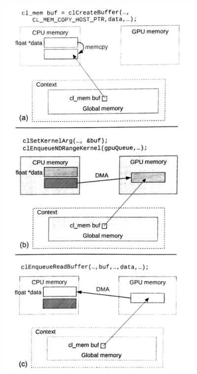
图6.1 注意，运行时也直接在创建和初始化了设备端的内存对象(a)使用主机内存创建和初始化一个数组对象。(b)内核之前，隐式的将主机端的数据搬运到设备端。(c)显式的将设备内存中的数据搬回主机端。
一般来说，从一个设备到另一个设备的转移数据的效率很低——第8章中，我们将讨论基于现代CPU和GPU，比较不同数据互传方式的内存带宽。为了让编程者更高效的转移数据，OpenCL提供了一些API(使用不同方式)专门用来进行数据搬移。其中最佳的选择要依赖于所实现的算法，以及目标系统的特点。
第一组命令就是显式的从主机端或设备端，将数据拷贝到设备端或主机端，其运行方式如图6.2所示。这两个命令为clEnqueueWriteBuffer()和clEnqueueReadBuffer()。clEnqueueWriteBuffer()的声明如下：
cl_int
clEnqueueWriteBuffer(
cl_command_queue command_queue,
cl_mem buffer,
cl_bool blocking_write,
size_t offset,
size_t size,
const void *ptr,
cl_uint num_events_in_wait_list,
const cl_event *event_wait_list,
cl_event *event)
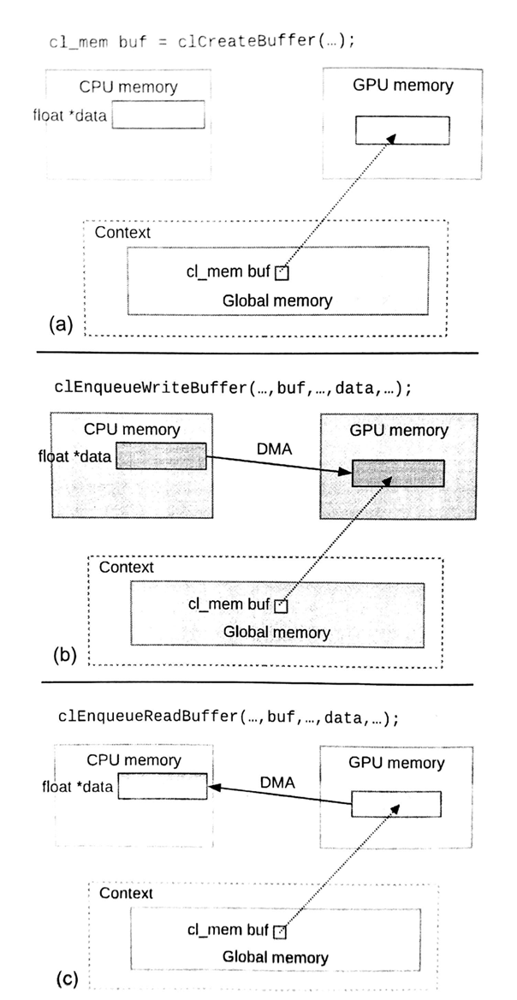
图6.2 数据搬运：显式读写命令。(a)创建一个为初始化的内存对象。(b)内核执行之前，将主机端数据传入设备端。(c)内核执行之后，将设备端数据传回主机端。
clEnqueueWriteBuffer()和clEnqueueReadBuffer()的声明很类似，除了使用blocking_write和blocking_read。声明中可以看出，数据是在buffer和ptr之间进行传输。其中写命令就将主机端的数据在设备端进行拷贝(在全局内存中进行备份)，并且读命令就将设备端的数据在主机端进行拷贝。注意这里需要有命令队列参与。这样就需要指定设备，对其内存副本进行初始化。当然，对于大多数应用的编程者，他们是知道数据要拷贝到哪个设备上去的，并且指定对应的命令让运行时知道应该向哪个设备进行数据拷贝，从而就能避免多余的拷贝过程。这种设计也让运行时能更快的将相应的数据传递到对应的设备，以便在内核执行时供内核使用。
编程者可以通过设置offset和size，来决定从哪里拷贝多少byte个数据。注意ptr是作为主机端读或写的起始地址，offset用来决定数组对象的起始地址，而ptr的初始地址则由编程者决定。
这种数据传输是可以是异步的。当使用异步方式调用clEnqueueReadBuffer()时，函数返回时我们无法知晓拷贝过程是否完成，直到我们通过同步机制——通过事件机制，或调用clFinish()。如果我们想在函数返回时就完成拷贝，则需要将CL_TRUE作为实参传入blocking_write或blocking_read中。这样，下面的代码中A和B打印出来的将是两个不同的结果(即使outputBuffer最终应该是这个结果)。对于C的打印是能确定从outputBuffer拷贝出来的结果。
{%ace edit=false, lang='c_cpp'%} int returnedArray[16]; cl_mem outputBuffer; cl_event readEvent;
// Some code that fills the returned array with 0s and invokes kernels // that generates a result in outputBuffer printf("A: %d\n", returnedArray[3]);
clEnqueueReadBuffer( commandQueue, outputBuffer, /* buffer / CL_FALSE, / nonblocking read*/ 0, sizeof(int) * 16, returnedArray, /* host ptr */ 0, 0, &readEvent);
printf("B: %d\n", returnedArray[3]); clWaitForEvents(1, &readEvnet); printf("C: %d\n", returnedArray[3]); {%endace%}
同步对于OpenCL内存模型尤为重要。修改中的内存不保证可见，且不保证内存状态的一致性，直到用一个事件来表明该命令结束(我们将在后面章节中讨论SVM内存的不同)。主机指针和设备内存间的数据互传，我们不能在拷贝的同时，对内存数据进行其他的操作，直到我们确定互传完成。仔细阅读过OpenCL标准文档的同学可能会发现，与设备内存相关的是上下文对象，而非设备对象。通过clEnqueueWriteBuffer()入队一个命令，直到其完成，过程中不能确定数据是否已经完全搬运到设备上，而能确定的是，主机端的数据已经开始进行转移。
与其他API不同，数据互传命令也可以指定为是同步的。我们只需要简单的将之前的调用进行修改即可：
clEnqueueReadBuffer(
commandQueue,
outputBuffer,
CL_TRUE, // blocking read
0,
sizeof(int) * 16，
returnedArray,
0,
0,
&readEvent);
这样的调用，API需要保证设备端的数据完全传回主机端后才进行返回，并且在返回之后，主机端才能对读回的数据进行操作。
OpenCL提供了另一种命令进行主机和设备间的数据转换——clEnqueueMigrateMemObjects()，用来从当前地址(无论主机还是设备)转移到指定设备上。例如，如果一个数组创建和初始化使用的是CL_MEM_COPY_HOST_PTR时，可以调用clEnqueueMigrateMemObjects()显式的将数据转移到对应设备上。如果一个系统中有多个异构设备，那么该API也能用来进行不同设备间的数据数据交互。注意设备间数据交互不是使用clEnqueueReadBuffer()和clEnqueueWriteBuffer()，只有设备和主机端的数据进行交互时，才会使用这两个API。clEnqueueMigrateMemObjects()的声明如下：
cl_int
clEnqueueMigrateMemObjects(
cl_command_queue command_queue,
cl_uint num_mem_objects,
const cl_mem *mem_objects,
cl_mem_migrationg_flags flags,
cl_uint num_events_in_wait_list,
const cl_event *event_wiat_list,
cl_event *event)
与之前的数据传输命令不同，clEnqueueMigrateMemObjects()需要使用内存对象数组作为实参传入，其可以通过一条命令转移多个内存对象。如同所有clEnqueue*开头的函数一样，该函数也能产生事件对象，指定依赖关系。当事件对象的状态设置为CL_COMPLETE时，代表着相对应的设备端内存，已经传递到参数中的command_queue命令队列上了。
除了显式告诉运行时进行数据转移，该命令也可以进行更高效的隐式转移。当编程者入队该命令后，恰好设备端在执行的任务与该数据转移命令没有任何关系(例如，内核执行时不包括该数据转移的内存)，数据转移会在任务执行时进行，从而隐藏了传输的延迟。这种隐式传递的方式clEnqueueReadBuffer()和clEnqueueWriteBuffer()也适用。
对于转移的内存对象，标准提供了一个标识：CL_MIGRATE_MEM_OBJECT_HOST。这个标识以为这告诉运行时，数据需要传输到主机端。如果设置该标识，那么传入的命令队列对象，将被API忽略。
6.2.2 管理带有分配选项的内存对象
之前的章节中，我们讨论的都是主机和设备端的数据互相进行拷贝，或转移设备端的内存。那么本章，我们将来讨论一下，如何在主机端和设备端直接访问物理上分离的内存区域。
OpenCL为程序员提供两种直接访问物理上分离的内存地址的方式，这两种方式会在主机端产生映射，可供主机端直接使用。创建设备端内存时，将CL_MEM_ALLOCL_HOST_PTR作为实参传入，运行时就会为主机端分配一个映射指针，供主机端代码进行操作。而CL_MEM_USE_HOST_PTR则告诉运行时，直接使用host_ptr作为设备对象的空间。两个选项代表着两种不同的分配方式，而这两个选项则是互斥的，不可用于同一个内存对象。注意这里的CL_MEM_ALLOCL_HOST_PTR分配“可供主机端访问的映射内存”，这个概念其实是模糊的，其可能是通过主存链接主处理器，也有可能是真的能将设备上的一段内存映射到主机端。
在分配内存对象时，CL_MEM_COPY_HOST_PTR可以和CL_MEM_ALLOC_HOST_PTR一起使用，这样能创建映射到主机端的内存的同时，也能用主机端内存对内存对象进行初始化。不过，CL_MEM_COPY_HOST_PTR和CL_MEM_USE_HOST_PTR是不能同时使用的，因为在传入host_ptr时，host_ptr是已经分配好的一段内存，CL_MEM_USE_HOST_PTR代表使用host_ptr作为设备端内存空间，其无法对自己进行初始化。
那么有没有一种选项组合，能完成内存数据在CPU端分配，并且设备可以直接对主机端数据进行访问。答案是肯定的，“确实有”。实际上这种方式的访存存在于一些系统中。一个系统中具有一个CPU和一个离散GPU，这种情况下GPU就需要通过PCIe总线对主存数据进行访问。当设备能用这种方式直接访问主机端内存，那么这种数据通常被称为零拷贝(zero-copy)数据。
虽然使用CL_MEM_USE_HOST_PTR或CL_MEM_ALLOC_HOST_PTR将在主机端创建零拷贝数据(但这并不是OpenCL标准显式要求的)。当然，将CPU端的数据拷贝到设备端，供内核执行使用是最保险的。不过，这里GPU访问主机端内存，就像其访问自己所属的内存一样。实际上，如果使用CL_MEM_ALLOC_HOST_PTR，在主机端上分配出的指针，仅为设备端内存的映射。OpenCL中对于CL_MEM_ALLOC_HOST_PTR的描述，是能创建可供主机端访问的内存，并不是在主机端又分配了一段内存出来。
共享内存的系统或是单CPU环境中，使用CL_USE_HOST_PTR可能就没有那些无谓的初始化拷贝，从而为应用用带来更好的性能。例如，设想将CPU作为设备，在CPU上执行内核：如果不指定CL_MEM_USE_HOST_PTR，应用将会另外开辟一段空间用来存放数据的副本。同样的情况也会出现在共享内存处理器上，比如加速处理单元(APU)。如果CPU和GPU共享同一块内存，那么在APU上是不是也要使用CL_MEM_USE_HOST_PTR呢？这个问题很难回答，因为这设计到相关内容的优化，这里只能说具体问题具体分析了。
APU的例子中，OpenCL运行时或设备端驱动，使用指定的分配标志，可能会对实际设备进行访存优化(例如：缓存与非缓存)；或是有另外的性能考量，例如非一致内存访问(UNMA, nonuniform memory access)。APU上使用OpenCL时，CL_MEM_USE_HOST_PTR可能会将内存分配在高速缓存上，并且完全连续。这将导致GPU访存效率降低，因为GPU先要确定CPU缓存访问的优先级。APU上进行编程时，编程者需要了解不同的选项所创建出来的内存有何不同。
CL_MEM_USE_HOST_PTR和CL_MEM_ALLOC_HOST_PTR都能创建出主机端能够访问的数据，OpenCL也提供了一种映射机制，能够直接操作主机端或设备端数据，而无需显式使用API进行读取和写入。与clEnqueueReadBuffer()拷贝数据的方式不同，这里的映射实现并非意味着进行了拷贝。有了这种机制，零拷贝内存才算完美实现。设备端在修改零拷贝内存的过程对主机不可见，直到其完成修改才再对主机可见。
调用clEnqueueMapBuffer()即可对一个内存对象进行设备端的映射：
void *
clEnqueueMapBuffer(
cl_command_queue command_queue,
cl_mem buffer,
cl_bool blocking_map,
cl_map_flags map_flags,
size_t offset,
size_t size,
cl_uint num_events_in_wait_list,
const cl_event *event_wait_list,
cl_event *event,
cl_int *errcode_ret)
调用clEnqueueMapBuffer()时，其会返回一个可供主机端访问内存的指针。当clEnqueueMapBuffer()产生的事件对象的状态为CL_COMPLETE时，意味着主机端可以安全使用返回指针，进行数据访问。与clEnqueueWriteBuffer()和clEnqueueReadBuffer()相同，clEnqueueMapBuffer()也可以设置同步方式，将CL_TRUE作为实参传入blocking_map时，函数将在主机端可以安全使用访存指针时，将产生的指针返回。
clEnqueueMapBuffer()还有一个map_flags，这个标识可以设置的实参有：CL_MAP_READ，CL_MAP_WRITE和CL_MAP_WRITE_INVALIDATE_REGION。CL_MAP_READ，主机只能对这块映射内存进行读取；CL_MAP_WRITE和CL_MAP_WRITE_INVALIDATE_REGION都表示主机端只能对该指针内容进行修改。CL_MAP_WRITE_INVALIDATE_REGION是带有优化的选项，其会指定整个区域将会被修改或者忽略，并且运行时在其修改完之前不会对中间值进行映射。这种方式就无法保证数据的一致性状态，而运行时对于内存区域的潜在访问要快于CL_MAP_WRITE。
当主机端对映射数据修改完毕，其需要进行反映射API的调用。反映射时需要将制定内存对象和映射出的指针传入该API。clEnqueueUnmapMemObject()的声明如下：
cl_int
clEnqueueUnmapMemObject(
cl_command_queue command_queue,
cl_mem memobj,
void *mapped_ptr,
cl_uint num_events_in_wait_list,
const cl_event *event_wait_list,
cl_event *event)
反映射时需要将内存对象本身和映射指针传入该API中。如其他数据管理命令一样，当API产生的事件对象的状态为CL_COMPLETE时，则代表数据更新完成。与其他API不同clEnqueueUnmapMemObject()没有阻塞参数。图6.3展示了一个内存对象从映射到反映射的过程。如果内存对象在设备端修改的时候进行映射，让主机端读取上面的数据，这种情况会引发一些未定义行为；反之亦然。
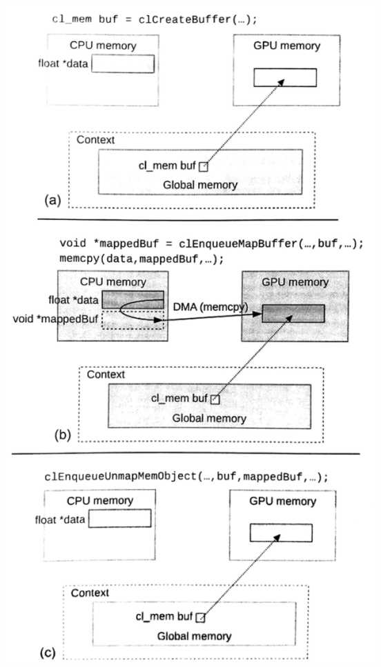
图6.3 内存对象的映射和反映射。(a)创建一个未初始化的设备端内存对象。(b)将该内存对象映射到主机端。(c)将该映射的内存对象反映射。
本节我们一直在讨论内存的标志，对应标志的实际行为，很大程度上还是依赖于指定硬件上的相关实现。为了给编程者在分配内存上的一些建议，我们将简要的描述一下AMD旗下的设备是如何处理这些标志的。默认的内存对象(并未提供任何标志)将直接在设备端分配。当提供CL_MEM_COPY_HOST_PTR或CL_MEM_USE_HOST_PTR标志时，如果设备端支持虚拟内存，那么这块内存将创建为主机端的页锁定内存(不可分页)，并且也能被设备作为零拷贝内存直接访问。如果设备不支持虚拟内存，那么就会像默认内存对象一样，在设备端创建内存。当编程者希望将数据分配在设备端，且能让主机端直接访问该内存的话，AMD提供了一种供应商指定扩展的标志——CL_MEM_USE_PERSISTENT_MEM_AMD。当在AMD设备上使用了该标志，则可以在设备端分配内存，且主机端可以直接访问。
6.3 共享虚拟内存
OpenCL 2.0的一个重要的修订就是支持共享虚拟内存(SVM)。共享虚拟内存属于全局内存，其相当于在主机内存区域上做的扩展，其允许上下文对象上的所有设备能和主机共享这块内存。SVM能将结构体指针作为参数传入内核，这相较之前的标准方便许多。例如，在未使用SVM之前，在主机端创建的链表结构无法传递到内核中，只能一个节点一个节点的传入。那么，2.0之后如何将链表实例通过传参的形式传入内核呢？将内存块拆分成小块的方式不适合OpenCL的内存模型，将其整块传入内核才是真正合理的方式。SVM将打破原先内存模型的限制。
OpenCL 2.0中定义了三种SVM类型：
- 粗粒度数组SVM
- 细粒度数组SVM
- 系统细粒度SVM
读者可以通过表6.1来了解，我们将要讨论的各种SVM。
| 粗粒度SVM| 细粒度SVM| 系统细粒度SVM ----|----- |-----|-----| OpenCL对象 | 数组|数组|无(任意主机端类型) 共享粒度 | 数组 | 字节|字节 分配API | clSVMAlloc|clSVMAlloc|malloc(或类似的C/C++函数或操作) 一致性 | 同步点 | 同步点和选择性原子操作|同步点和选择性原子操作 显式同步设备端和主机端数据？ |映射/反映射命令|无|无
粗粒度数组SVM可以与OpenCL内存对象进行虚拟地址共享。粗粒度SVM内存与非SVM内存的不同点在于，主机和设备可以共用虚拟内存指针。粗粒度SVM内存需要在主机端进行映射和反映射，这样才能保证最后一次更新的数据对设备可见。为了完成这个功能，主机端线程需要调用clEnqueueMapBuffer()将指定的内存区域阻塞的进行映射。当映射完成后，内核就可以对该内存进行使用。当clEnqueueMapBuffer()返回时，内核对该内存的任何操作，对于主机都是可见的。
我们使用clCreateBuffer()创建非SVM内存，同样SVM也有其创建API——clSVMAlloc()，其声明如下：
void *
clSVMAlloc(
cl_context context,
cl_svm_mem_flags flags,
size_t size,
unsigned int alignmet)
与非SVM内存对象一样，SVM也可以通过标志指定为：只读，只写和可读写。alignment表示内存对象需要在该系统上以最少多少字节对齐。如果传入0，则因为这使用默认的对齐字节，那么将会是OpenCL运行时支持的最大数据类型的大小。与clCreateBuffer()返回cl_mem不同，clSVMAlloc()返回的是一个void型指针。就像C函数malloc()一样，clSVMAlloc()也会返回一个非空的指针来表示内存分配成功，否则分配失败。
释放SVM内存需要使用clSVMFree()函数，其只需要传入对应的上下文对象和SVM指针即可。
void
clSVMFree(
cl_context context,
void *svm_pointer)
clSVMFree()函数的调用会瞬间结束，而不需要等待什么命令结束。将SVM内存使用clSVMFree()函数释放之后在进行访问，程序会出现段错误，这就和普通的C程序没有任何区别了。为了保证在一些列命令使用完SVM之后，再对SVM进行释放，OpenCL也提供了一种入队释放的方式：clEnqueueSVMFree()。
与粗粒度数组SVM不同，细粒度数组SVM支持的是字节级别的数据共享。当设备支持SVM原子操作时，细粒度数组SVM内存对象可以同时在主机端和设备端，对同一块内存空间进行读与写。细粒度数组SVM也可被同一或不同设备，在同一时间对相同的区域进行并发访问。SVM原子操作可以为内存提供同步点，从而能保证OpenCL内存模型的一致性。如果设备不支持SVM原子操作，主机端和设备端依旧可以对相同的区域进行并发的访问和修改，但这样的操作就会造成一些数据的覆盖。
将CL_MEM_SVM_FINE_GRAIN_BUFFER标志传入clSVMAlloc()，就能创建细粒度数组SVM对象。若要使用SVM原子操作，则需要将CL_MEM_SVM_ATOMICS一并传入flags中。注意，CL_MEM_SVM_FINE_GRAIN_BUFFER只能和CL_MEM_SVM_ATOMICS共同传入flags，否则即为非法。
细粒度系统SVM是对细粒度数组SVM的扩展，其将SVM的范围扩展到主机端的整个内存区域中——开辟OpenCL内存或主机端内存只需要使用malloc()就可以。如果设备支持细粒度系统SVM，那么对于OpenCL程序来说，内存对象的概念就不需要了，并且内存传入内核将是一件很简单的事情(如同CUDA内核函数的调用一样)。
查看设备支持哪种SVM，可以将CL_DEVICE_SVM_CAPABILITIES标识传入clGetDeviceInfo()中进行查询。OpenCL标准规定，如果支持2.0及以上标准，则至少要支持粗粒度数组SVM。
6.4 本章总结
本章从主机端的角度讨论了OpenCL的内存模型。主机在内存模型中的角色，大多是分配和管理全局内存对象(数组、图像和管道)。我们也对内存分配标志做了详细的介绍，让编程者了解，如何分配内存和在哪分配内存；一些管理标志可以用来指导编程者，从哪里搬移数据，以及何时进行数据搬运。本章也对SVM内存进行了介绍，SVM的内容将会在下章讨论设备端内存模型时继续进行。
第7章 OpenCL设备端内存模型
设备端内存模型定义了OpenCL应用中工作项的内存空间，这部分空间供内核执行使用。内存模型也定了一致性内存，可供工作项使用。本章会对每种内存空间进行详细的讨论，聊一下各个内存对象所对应的内存空间，也顺便介绍一下同步和内存序。
OpenCL设备上，内存空间被分成四种类型：
- 全局内存
- 局部内存
- 常量内存
- 私有内存
OpenCL内存空间分布如图7.1所示。第2章我们讨论过，OpenCL是为了更加广阔的结构进行设计。对内存模型的分级，使得OpenCL程序对架构的利用率更高。每种内存内存空间在实际硬件上的映射，非常影响程序执行效率。不管在硬件上是如何进行映射，对于编程者来说，内存空间都是分开的。此外，如图7.1所示，本地内存和私有内存用来区分工作项和工作组。当使用这种方式对“可编程的松散内存一致模型”进行分层时，使用便签式内存可使得程序更加高效。如我们看到的大多GPU设备一样，都有和x86架构一样的内存一致性系统。

图7.1 OpenCL设备端的内存空间分布
内核函数中的函数参数和局部变量默认都在私有内存中存储。指针参数放置的位置就没有那么固定了，其取决于数据从哪来，或哪里是用到这些数据。指针本身的地址则毫无疑问的存储在私有内存中。如果通过指针指定数据，那么内存地址将严格分离。将一个地址空间的数据强制转换成另一地址的数据，这样做是非法的，因为这样做的话必然会在全局可访问的地址上创建一个内存副本，或是使用编译器在某块地址空间内创建一份数据副本，这在实际中是无法完成的。不过，本章我们将介绍OpenCL 2.0新添加的统一地址空间，其能在某些条件下推断出可访问的地址空间。图像也可以使用统一地址空间，所以我们也会在讨论统一地址空间时讨论图像。
详细讨论这些内存之前，后续几节将大致描述一下工作项同步和通讯的能力。了解了这些能力，对于我们讨论各个内存空间的特性很有帮助。
7.1 同步和交互
介绍主机端内存模型时，我们提到过，当内核在对内存进行修改时，不能保证主机端可见的数据的状态。同样，当一个工作项对地址中的数据进行修改时，其他工作项可见的数据状态是不确定的。不过，OpenCL C(结合内存模型)提供一些同步操作以保证内存的一致性，例如：执行栅栏、内存栅栏和原子操作。层级的一致性描述如下：
- 工作项内部，内存操作的顺序可预测：对于同一地址的两次读写将会被硬件或编译器重新排序。特别是对于图像对象的访问，即使被同一工作项操作，同步时也需要遵循“读后写”的顺序。
- 原子操作、内存栅栏或执行栅栏操作能保证同一工作组中的两个工作项，看到的数据一致。
- 原子操作、内存栅栏或执行栅栏操作能保证工作组的数据一致。不同工作组的工作项无法使用栅栏进行同步。
7.1.1 栅栏
工作组中，编程者需要使用栅栏对工作组中的所有工作项进行同步，要使用的内置函数为work_group_barrier()。其有两个重载版本：
void
work_group_barrier(
cl_mem_fence_flags flags)
void
work_group_barrier(
cl_mme_fence_flags flags,
memory_scope scope)
栅栏要求工作组中的所有工作项都要达到指定位置，才能继续下面的工作。这样的操作能保证工作组内的数据保持一致(比如：将全局内存上的一个子集数据传输到局部内存中)。其中flags用来指定需要使用栅栏来同步的内存类型。其有三个选项：CLK_LOCAL_MEM_FENCE、CLK_GLOBAL_MEM_FENCE和CLK_IMAGE_MEM_FENCE，这三个选项分别对应能被整个工作组访问到的三种不同内存类型：局部内存、全局内存和图像内存。
第二版work_group_barrier()也可以指定内存范围。其结合flags可以进行更加细粒度的数据管理。scope有两个有效参数：memory_scope_work_group和memory_scope_device。当将memory_scope_work_group和CLK_GLOBAL_MEM_FENCE一起使用时，栅栏则能保证所有工作组中每个工作项在到达同步点时，可以看到其他所有工作项完成的数据。当将memory_scope_device和CLK_GLOBAL_MEM_FENCE一起使用时，栅栏则能保证内存可被整个设备进行访问。CLK_LOCAL_MEM_FENCE只能和memory_scope_work_group一起使用，其只能保证工作组内的数据一致，无法对该工作组之外的工作项做任何保证。
7.1.2 原子操作
基于C/C++11标准，OpenCL 2.0也更新了原子操作。并且新加入的操作，不仅可以进行原子操作，还可以用来做同步。原子性能保证一系列内存操作(比如：读改写)，且不需要其他工作项和主机的参与，就能直接修改某个内存的数据。当原子操作用来做同步，那么就需要对特定的变量进行访问(称为同步变量)，这个变量就属于内存一致性模型的执行部分。原子操作也有多种方式，包括原子“读改写”，原子加载和原子存储。
我们之前提到过，原子操作可以保证内存的某些不一致状态不对其他线程可见——不过，这给共享内存和并发编程就是带来了一些问题。试想，当有两个线程尝试对同一个变量进行加法操作。线程0需要读取内存中的数据，然后对数值进行加法操作，最后写回原始内存中。线程1执行加法计算的过程也是一样的。图7.2就展示了同样是两个线程对同一变量进行加法操作，最后会得到不同的结果。这中问题就称为数据竞争(data race)。即使在单核机器上，也会有数据竞争的存在，比如线程0打断或抢占了正在执行操作的时间片。
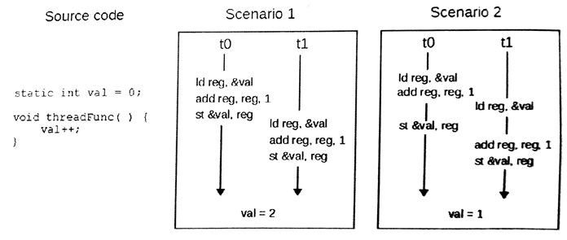
图7.2 对同一变量的进行加法操作，所导致的数据竞争。最终数据的结果依赖于不同线程执行的顺序。
因此，就需要原子加载和原子存储操作来为数据竞争做一决断。C/C++11标准与OpenCL标准很像，不会保证任何加载和存储操作是绝对原子的。试想这样一种情形，将存储64位的操作分成两个指令执行。当第一个指令完成时，第二个指令还没有执行，在某些情况下是没有问题的。如果这时出现了另外一个线程，该线程执行一个加载操作，如果第二个存储指令还未完成，那么该线程所读取到高或第32位就不是最新的值。这样的读取方式显然是荒谬的，并且会得到与期望不符的结果。实际上，大多数结构中都会提供不同粒度的原子操作，来保证加载和存储数据的一致性(通常需要内存对齐在同一缓存行上)。不过，对于可移植代码来说，共享内存上的任何操作都不能认为是原子的。
原子操作在OpenCL 2.0标准做了相当多的修改。OpenCL C语言定义了与基本类型相关的原子类型，其支持整型和单精度浮点类型：
atomic_int
atomic_uint
atomic_float [1]
如果设备支持64bit原子扩展，那么就需要添加一些原子类型：
atomic_long
atomic_ulong
atomic_double
atomic_size_t
atomic_intptr_t
atomic_uintptr_t
atomic_ptrdiff_t
64位原子指针类型只针对能够使用64位地址空间的计算设备。
OpenCL C语言定义了很多的原子操作。浮点操作只支持“比较后交换”类型的原子操作(比如，atomic_exchange())。算法中的一些操作，以及一些位运算中，需要调用“同步后修改”原子函数。其声明类型如下所示：
C atomic_fetch_<key>(volatile A *object, M operand)
其中key可以替换成add, sub, or, xor, and, min和max。object传入的是原子类型的指针，operand传入的是要进行操作的数值。返回值C是非原子版的A，其值是在对M操作之前A内存中的具体数值。这里来举个原子操作的例子，当要在一个共享项中比较最小值时，我们先定义一个最小值atomic_int curMin，和一个新的值int myMin。那么就可以写成如下形式：
int oldMin = atomic_fetch_min(&curMin, myMin);
执行完成后，新的最小值将存在curMin中。是否接收返回值是可选的，不接收返回值会有潜在的性能提升。一些GPU架构中，例如：原子操作执行在内存系统中的硬件单元上。因此，在这种分层内存上原子操作很快就能执行完成。不过，如果需要使用返回值的话，通常需要将原始值从内存中读取出来，这就需要增加成千上万个时钟延迟。
内存模型的章节中对原子操作进行讨论，是因为其能进行内存同步，保证内存的一致性。不管原子操作什么时候执行，编程者都有能力指定该原子操作是否附带有同步功能，作为获取操作或释放操作。使用这种方式允许工作项能够控制可见数据访问，这样就能做到工作项间的通讯，而2.0之前的OpenCL标准是无法完成这项操作的。
[1] atomic_float 类型只支“比较后交换”类型的原子操作，不支持“同步后修改”类型操作(详见7.7.1节)
7.2 全局内存
OpenCL C中使用类型修饰符__global(或global)描述的指针就是全局内存。全局内存的数据可以被执行内核中的所有工作项(比如：设备中的计算单元)所访问到。不同类型的内存对象的作用域是不同的。下面的小节中，将详细讨论每种全局内存对象。
7.2.1 数组
__global可以用来描述一个全局数组。数组中可以存放任意类型的数据：标量、矢量或自定义类型。无论数组中存放着什么类型的数据，其是通过指针顺序的方式进行访问，并且执行内核可以对数组进行读写，也可以设置成针对内核只读或只写的数组。
数组数据和C语言的数组几乎没有任何区别，C语言怎么使用的，就可以在OpenCL内核代码中怎么使用：
float a[10], b[10];
for (int i = 0; i < 10; ++i){
*(a + 1) = b[i];
}
上面的例子中，通过数组a和b的指针对其内容进行访问。其中尤其重要的是，其中内存以连续的方式顺序开辟，a数组中第i个元素可以表示为a[i]，其指针地址为a+i。我们可以使用sizeof()操作来计算数组中元素的大小，然后计算对应指针的偏移，以便将指针从一种类型转换成另一种类型。底层代码中，指针转换是相当有用的方式，对于OpenCL这种以C语言驱动的标准来说，也自然会支持这种方式。
下面的例子展示了如何在OpenCL内核代码中，使用数组对象支持自定义类型：
typedef struct AStructure{
float a;
float b;
}AStructure;
__kernel void aFunction(
__global AStructure *inputOutputBuffer){
__global AStructure *inputLocation =
inputOutputBuffer + get_global_id(0);
__global AStructure *outputLoacation =
inputOutputBuffer + get_global_size(0) + get_global_id(0);
outputLoacation->a = inputLocation->a * -1;
outputLoacation->b = (*inputLocation).b + 3.f;
}
7.2.2 图像
图像对象也会在全局内存上开辟，其与数组不同，其不能映射成一个指针。图像对象维度有一维、二维和三维，其分别对应图像类型image1d_t、image2d_t和image3d_t。OpenCL 2.0之前的标准，只允许图像对象只读或只写，无法在内核中同时进行图像的读和写的操作。这样的设计是因为GPU硬件支持高速缓存和高速滤波器。从2.0标准开始，支持对对同一图像对象的读和写。
图像对象是不透明的内存对象。虽然我们可以根据坐标对数据进行访问，但是我们无法知道其在内存上的相对位置。实际内存上，看上去在图像上相邻的两个点，可能在物理地址上距离很远。这样的特性，使得图像对象更适合进行参数化的读取，而非直接通过指针获取对应位置的数据，因此OpenCL中提供了一些内置函数，用来获取图像数据。对于读取图像的内置函数有：read_imagef()、read_imagei()和read_imageui()，分别可读取单浮点、整型和无符号整型数据。每个图像读取函数都具有三个参数：图像对象、图像采样器和坐标位置。
可以传入整型和浮点型坐标值。返回值通常是具有四个元素的矢量。例如，下面读取二维浮点数据的函数声明：
float4
read_imagef(
image2d_t image,
sampler_t samper,
int2 coord)
float4
read_imagef(
image2d_t image,
sampler_t samper,
float2 coord)
注意这里传入的坐标使用的是int2和float2类型。因为指定的二维图像类型，image2d_t。对于一维图像类型，传入int和float类型的坐标即可。对于三维图像类型，需要传入int4和float4类型的数据，其中最后一个分量不会是用到(译者注：在OpenCL中type3类型其实均是由type4类型表示)。
如果图像数据不足四个通道，那么大多数图像类型将返回0，用来表示未使用的颜色通道，返回1代表着alpha(透明度)通道。例如，读取单通道图像(CL_R)，那么返回的float4类型中就会是这样(r, 0.0, 0.0, 1.0)。
读取函数的第二个参数是采样器。其表示硬件或运行时系统如何看待图像对象。创建采样器对象可以在内核端创建sampler_t类型对象，也可以在主机端使用clCreateSampler()API进行创建。下面就是使用常量声明的采样器：
__constant sampler_t sampler =
CLK_NORMALIZED_COORDS_FALSE |
CLK_FILTER_NEAREST |
CLK_ADDRESS_CLAMP;
__kernel void samplerUser(
__read_only image2d_t sourceImage,
__global float *outputBufffer){
float4 a = read_imagef(
sourceImage,
sampler,
(float2)(
(float)(get_global_id(0)),
(float)(get_global_id(1))));
outputBuffer[get_global_id(1) * get_global_size(0) + get_global_id(0)] = a.x + a.y + a.z + a.w;
}
采样器对象决定了如何对图像对象进行寻址，以及相应的滤波模式，并且决定了传入的坐标是否进行归一化。
指定归一化坐标(CLK_NORMALIZED_COORDS_TRUE)就是告诉采样器在对应维度的[0,1]之间对图像进行寻址。使用非归一化(CLK_NORMALIZED_COORDS_FALSE)则直接使用传入的坐标在对应维度上进行寻址。
寻址模式用来解决当采样器采样到图像之外的范围时，应该返回何值。这对于一些不想进行边缘判断编程者来说，使用标志指定如何处理这种“越界访问”会很方便(比如:在进行卷积操作时，就会访问到图像之外的区域)。CLK_ADDRESS_CLAMP[1]会将超出部分截断，将返回一个边界值；CLK_ADDRESS_REPEAT[2]超出部分会返回一个在有效范围内的值。
滤波模式有两个选项：返回离给定坐标最近的图像元素值(CLK_FILTER_NEAREST)，或使用坐标周围图像点进行线性差值(CLK_FILTER_LINEAR)。如果对于二维图像就要使用周围2x2个点进行差值了。如果是三维图那么就要周围2x2x2个点进行差值了。
为了让使用图像对象更加简单，OpenCL C语言也支持采样器的读取方式：
float4
read_imagef(
image2d_t image,
int2 coord)
这种简单的方式会预定义一个采样器，这个默认采样器的坐标是非标准化的，且不会进行任何方式的滤波，还有就是访问到图像之外的区域所产生的行为是未定义的。使用这种简单的方式对图像进行访问，有点类似于在C中使用一维或者二维数组。不过，这种不透明的访存方式底层，会使用硬件对访存进行加速。
与读不同，写入函数就不需要传递采样器对象。取代采样器的是要写入图像的具体数值：(在写入图像时，所提供的坐标必须是非归一化的。)
void
write_imagef(
image2d_t image,
int2 coord,
float4 color)
之前有谈及，图像实现成非透明的类型是因为其能使用硬件或运行时系统对其进行加速，而对于数组对象则没有这样的优待。举一个优化方面的例子。任意给定一个多维数据结构，都必须映射到一维空间上，然后通过指针进行访问。很多编程语言中，对待多维数组都是这样做的，有些语言使用的是行优先，有些是列优先而已。如果数据以行优先的方式存储，(x, y)的内存为就在(x + 1, y)之前，以此类推。行优先的存储方式使得(x, y)和(x, y + 1)就离的很远了。因为y的地址在内存中不是连续的，所以跨列访问在行优先存储方式中的访存延迟是十分高的，从而访问效率是比较低的。因为(x, y)和(x + 1, y)的访问效率很高，所以后面会提出内存合并访问的概念。
Z序或莫尔顿序中，使用一种映射的方式来保存空间中的数据。图7.3中数据保存的顺序为(0, 0),(0, 1),(1, 1)和(2, 0)，以此类推。当使用Z序排布内存时，列上的数据都在同一缓存行上，优化了访问列上元素的时间开销。如果我们正在使用二维图像进行计算，那么这种内存存放方式无疑会对我们有很大的帮助。这种排布优化可能是透明的(因此不同的优化方式可以执行在不同的架构下)，需要编程者做的只是需要保证内存的相对位置正确即可。
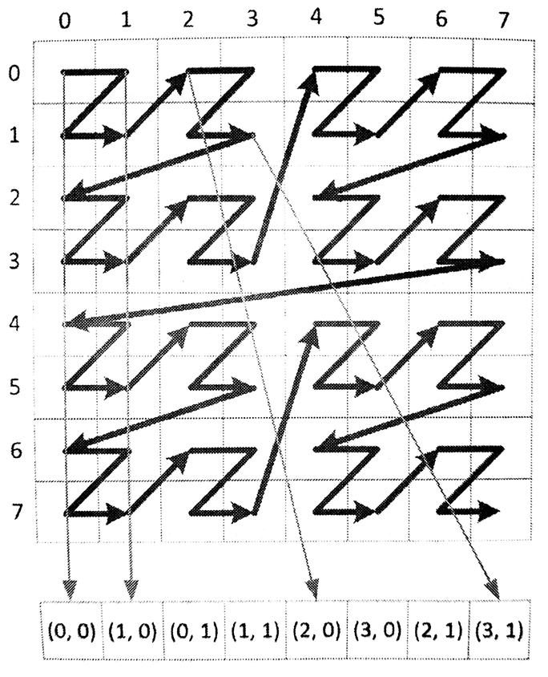
图7.3 应用Z序对二维图像进行映射
这个话题我们可以在讨论的深一些。当我们所执行的架构中没有向量寄存器时，就无法执行向量读取操作。这时我们就希望编译器将float4 a = read_imagef(sourceImage, imageSampler, location)翻译成4个标量，从而替代原始的单个向量读取。这种情况下，更加高效的方式是将原始图像根据位移拆成4个数组，同时对这4个数组进行访存操作。而不是通过4次读取一个数组的方式，获取到4个对应的值。
7.2.3 管道
之前提到过管道对象，其存储结构为顺序结构存储，数据出入遵循先入先出原则。管道对象与数组和图像对象有些不同。不需要对管道对象进行任何寻址空间描述：当管道对象在两个内核对象之间通讯时，其会隐式的将数据保存在全局内存中。作为内核参数时，与图像对象一样，将对应参数指定成pipe类型就可以了。与图像不同的是，管道必须要指定所数据包所存储的数据类型。数据类型可以是任何OpenCL C所支持的类型(标量或矢量，浮点或整型)，其也支持用户自定义类型的数据。在编程者将管道传入内核时，需要指定一下管道对象在设备端的可读写性(__read_only或read_only, __write_only或write_only)。默认的方式是可读。管道对象在同一内核中不支持同时读写，所以这里传递读写描述符(__read_write或read_write)在编译时编译器会报错。
一个内核声明中包含输入和输出管道的例子：
kernel
void foo(
read_only pipe int pipe0,
write_only pipe float4 pipe1)
与图像相同，管道对象也是不透明的。这是为了提供先入先出功能，并且不能进行随机访问。OpenCL C提供了内置函数用于从管道读取，或者向管道写入数据包的函数。和管道对象互动的最基本的两个函数如下：
int
read_pipe(
pipe gentype p,
gentype *ptr)
int
write_pipe(
pipe gentype p,
const gentype *ptr)
这些函数需要传入一个管道对象，还需要传入一个需要写入和读出的位置指针。当读或写的函数执行成功的话，函数就会返回0。在有些情况下这些函数调用不会成功。当管道为空时，read_pipe()将会返回一个负值；当管道满了时，write_pipe()会返回一个负值。
编程者需要保证管道有足够的空间进行写入或者读出。reserve_read_pipe()和reserve_write_pipe()就会返回一个占位标识符(reservation identifier)，其类型为reserve_id_t。
reserve_id_t
reserve_read_pipe(
pipe gentype p,
nint num_packets)
reserve_id_t
reserve_write_pipe(
pipe gentype p,
uint unm_packets)
read_pipe()和write_pipe()有可以传入reserve_id_t的版本：
int
read_pipe(
pipe gentype p,
reserve_id_t reserve_id,
uint index,
gentype *ptr)
当使用占位标识符时，OpenCL C提供了相应的阻塞函数，用来保证读出或写入过程完成：commit_read_pipe()和commit_write_pipe()。这些函数需要传入一个占位标识符和一个管道对象，并且没有返回值。当这些函数返回时，就能保证所有读或写操作完全提交。
void
commit_read_pipe(
read_only pipe gentype p,
reserve_id_t reserve_id)
void
commit_write_pipe(
write_only pipe gentype p,
reserve_id_t reserve_id)
不同内核中的工作项对管道进行读取或写入，这就让有些内核成为生产者或消费者(在工作组的粒度方面)。为了能正确的将管道对象上的数据删除，需要对工作项进行屏蔽，OpenCL C提供了相应的函数可以让每个工作组能够项管道对象进行预留和提交操作。这些函数为：work_group_reserve_write_pipe()和work_group_reserve_read_pipe()。同样，为了保证访问管道对象正常完成，提供了work_group_commit_read_pipe()和work_group_commit_write_pipe()。对于每个工作组函数来说，这些函数在工作项内是成对出现的。注意，所以工作项都会调用基于工作组的函数，除非出现一些未定义的行为。实践中，访问管道对象还是会使用read_pipe()和write_pipe()。第4章中，我们对管道对象进行过讨论，并使用过于管道对象相关的API。
[1] CLK_ADDRESS_CLAMP - out-of-range image coordinates will return a border color. This is similar to the GL_ADDRESS_CLAMP_TO_BORDER addressing mode.
[2] CLK_ADDRESS_REPEAT - out-of-range image coordinates are wrapped to the valid range. This address mode can only be used with normalized coordinates. If normalized coordinates are not used, this addressing mode may generate image coordinates that are undefined.
7.3 常量内存
常量内存使用__constant标识进行描述，常量内存作为全局地址空间的一部分，在运行时可以分配出出相应的缓存空间，利用常量内存可以提高应用访存效率。使用常量地址空间的方式有两种：
- 可以通过数组创建的方式，之后将数组作为参数传入内核中。内核参数描述上，必须指定__constant为对应指针的标识符。
- 内核端声明常量对象，并使用__constant标识对其进行初始化，其属于编译时常量类型。
不同架构下，常量内存对应的位置也不同。AMD GPU上常量数据将会保存在缓存上(保存通用数据)。该缓存比L1缓存的延迟还要低，并且能大大减少GPU内的数据传输。根据这种访存模式，其地址可能就直接保存在指令中，就算是释放功能单元也只有极低的寻址延迟。
OpenCL对每个设备会有常量参数个数的限制，以及常量数组的最大尺寸。编程者可以将CL_DEVICE_MAX_CONSTANT_ARGS和CL_DEVICE_MAX_CONSTANT_BUFFER_SIZE传入clGetDeviceInfo()进行查询。第8章中，我们介绍在现代GPU上如何实现常量内存。
7.4 局部内存
OpenCL也支持一些架构的子集，包括多GPU和Cell带宽引擎，用于处理小暂存式缓存数组在主DRAM和基础缓存上的分布。局部内存与全局内存没有交集，访问两种内存所使用的是不同的操作。基于这种架构，不同内存之间就需要进行数据传输(使用async_work_group_copy()进行拷贝会更高效)，或者直接内存间的拷贝。局部内存也同样支持CPU实现，不过在CPU端局部内存就存放在标准可缓存内存中。所以在CPU端局部内存依旧具有较低的访存延迟。
局部内存非常有用，因为其能提供工作组中的工作项有更高的交互方式。任何分配出来的局部内存都能让整个工作组的工作项访问，因此如果对局部内存进行修改，对组内其他工作也是可见的。局部内存使用__local标识符修饰，其可以在内核内部进行分配，也可以通过内核参数传入。两种方式的代码如下所示：
__kernel
void localAccess(
__global float *A,
__global float *B,
__local float *C){
__local float aLocalArray[1];
if (get_local_id(0) == 0){
aLocalArray[0] = A[0];
}
C[get_local_id(0)] = A[get_global_id(0)];
work_group_barrier(CLK_LOCAL_MEM_FENCE);
float neighborSum = C[get_local_id(0)] + aLocalArray[0];
if (get_local_id(0) > 0){
neighborSum = neighborSum + C[get_local_id[0] - 1];
}
B[get_global_id(0)] = neighborSum
}
图7.4展示了上述代码的数据流。
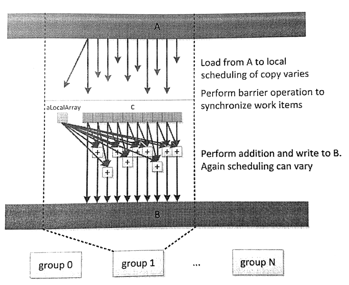
图7.4 localAccess内核在执行时的数据流
注意，这里将数据从全局内存中读出，然后(以不可预知的时序)写入两个局部内存数组C和aLocalArray中。不过，在实际硬件上是可以进行预测的，因为可以将对应的模型映射到实际的硬件上。例如，AMD GPU上经常会处理SIMD向量数据，对整个向量的读写操作实际上都会由一个工作项进行。不过，这种特性并非适用各种情况。通常，我们都会插入一个栅栏操作：只有所有工作项到达栅栏时，才能保证所有的数据都从全局内存搬运过来，或是搬运到全局内存上，之后组内所有工作项看到的局部数据就是一致的。越过栅栏之后，如图下半部分所示，数据就能被组内所有工作项使用。
内核代码从词法角度看，aLocalArray只能被当前函数使用，而非整个工作组。这是因为aLocalArray内存空间是在局部内存上开辟，局部内存上的内存就属于整个工作组可见，所以整个工作组所访问到的aLocalArray实际上是同一地址中的数据。因为在到达栅栏之前，只要工作项0对aLocalArray进行了写入，在越过栅栏之后，所有工作项就能直接使用aLocalArray了。
代码中C数组就是通过主机端创建的局部内存。这种方式需要调用运行时API。为了分配内存使用clSetKernelArg()传递局部内存的大小到内核中。通常clSetKernelArg都是传递一个全局内存到内核端，现在这个内存参数需要置为NULL。这种方式意味着不需要全局变量的返回，所以其就为局部内存了。式例如下：
ciErrNum = clSetKernelArg(
kernel object,
parameter index,
size in bytes,
NULL)
7.5 私有内存
私有内存指的是各工作项内自己所使用的变量，也包括内核参数。原则上，私有数据通常放置到寄存器上，不过寄存器的资源并不是那么多，当使用的私有内存过多时，一部分数据将会放置到全局内存中。私有内存的分配会影响内核所使用到的寄存器数量。与局部内存一样，指定的架构中所分配的寄存器数量是固定的。而且，不同架构之间的性能差异也很大。
x86类型的CPU所具有的寄存器数量相当少。不过，因为其缓存较大，一些需要将寄存器上的数据放置到栈上的操作，以及将数据返回寄存器的操作，都会在缓存和寄存器之间交换数据，所以这些操作几乎没有什么延迟。使用寄存器时，需要把使用频率较高的数据放在寄存器上，这样这些变量从作用域中的出入将会变的十分高效。
GPU上就不能这样奢侈的使用缓存。有些设备没有读写缓存，有些有缓存的设备上，缓存也十分有限，因此在寄存器也很有限的情况下，工作项所需要的数据很快会填满缓存，这样将会导致有些数据在再需要的时候，在缓存上未命中。设备上的DRAM被填满时，该设备的性能会急剧恶化。开发应用时，需要尽量避免这种情况的发生。
如果寄存器够用，寄存器对于GPU上大量的激活线程时，其功能与局部数据共享(LDS, local data share)的方式很相似(将在第8章进行详细描述)。ADM Radeon HD R9 290X架构中，每个计算单元具有256KB寄存器内存。其有4块(SIMD)寄存器块，每个寄存器块具有256个寄存器，每个寄存器的每个通道能够处理4字节64位宽向量。如果每个工作项使用100个寄存器，那么对于SIMD来说，只能发送出有2波数据，几乎没有什么指令延迟隐藏。而当每个工作项使用49个寄存器时，那么就可以发出5波数据，这样就能很好的隐藏指令延迟。
虽然，数据转移在寄存器中处理起来更加高效，不过这样会消耗掉计算核中的一些线程束，无法进行延迟隐藏，并且这样会导致更多缓存数据交换操作，从而浪费更多GPU计算周期。
7.6 统一地址空间
之前的OpenCL标准中，编程者常常需要为了不同地址空间的数据写很多版本的OpenCL C函数(其实就是参数中的地址描述符不同)。考虑下，下面两种数据数组，第一个在全局变量中，另一个缓存在局部内存中。两种方式都很简单，对于全局内存指针来说，函数可以直接使用(就像在有自动缓存系统的CPU上使用一样)，另一种就是使用局部内存(GPU会将数组存储在快速便签式内存中)。OpenCL 2.0之前的标准中，要对这两种数组进行同样的操作，就需要将一个函数写两遍，如代码清单7.1所示。
{%ace edit=false, lang='c_cpp'%} void doDoubleGlobal( __global float *data, int index){
data[index] *= 2; }
void doDoubleGlobal( __local float *data, int index){
data[index] *= 2; }
__kernel void doubleData( global float *globalData, // the data local float *localData, // local storage int useLocal){ // whether or not to use local memory
int globalId = get_global_id(0); int localId = get_local_id(0);
if (useLocal){ // copy data to local memroy localData[localId] = globalData[globalId];
doDoubleLocal(localData, localId);
globalData[globalId] = localData[localId];
} else { doDoubleGlobal(globalData, globalId); } } {%endace%}
代码清单7.1 在OpenCl 1.x中，需要对不同的寻址空间定义不同版本的函数
OpenCL 2.0开始，就不需要在这样定义函数了，同样的一个函数，可以通过统一内存地址覆盖所有内存空间。代码参见代码清单7.2。
{%ace edit=false, lang='c_cpp'%} void doDoubleGlobal( float *data, int index){
data[index] *= 2; }
__kernel void doubleData( global float *globalData, // the data local float *localData, // local storage int useLocal){ // whether or not to use local memory
int globalId = get_global_id(0); int localId = get_local_id(0);
generic float *data; // generic keyword not required int myIndex;
if (useLocal){ // copy data to local memroy localData[localId] = globalData[globalId];
// set data to local address space
data = localData;
myIndex = localId;
} else { // set data to global address space data = globalData; myIndex = globalId; }
doDouble(data, myIndex);
if (useLocal){ globalData[globalId] = localData[localId]; } } {%endace%}
代码清单7.2 OpenCL 2.0中使用统一地址空间将7.1中代码重写
统一地址空间包括全局、局部和私有地址空间。2.0标准中，并未将常量地址划分到同一地址空间中。虽然，常量空间在逻辑上是全局便令的一部分，不过在某些处理器上(特别是图像处理器)，常量数据会映射到特定的硬件单元上，并不能使用指令对其进行动态指定。
7.7 内存序
对于任何编程语言来说，内存序对于内存模型来说十分重要，需要用一定的顺序来保证线程得到的是期望的结果。当我们使用多线程和共享数据时，内存一致性模型能帮助保证线程得到的是正确的结果。OpenCL需要提供可移植化的高度并行代码，那么内存模型在正式发布的标准文档中就尤为重要。
之前我们提到过，执行内核中的所有工作项都可以访问全局内存上的数据。另外，在同一工作组的工作项可以共享局部内存。直到现在，我们在处理内存时，更多的是使用OpenCL的“松散型”一致模型。对于全局内存，我们没有使用更加复杂的内存模型，并且默认让不同工作组中的工作项更新不同位置的全局内存。关于更新内存对象，我们不能认为和该对象有关的命令状态为CL_COMPLETE时，内存对象更新完成。在实践中，简单的内存模型覆盖了绝大多数的内核。第4章中，我们看到这种内存一致性模型也能支持直方图和卷积相关的应用。
近几年中，C/C++和Java都在支持“获取-释放”操作，为了就是在不使用锁的情况下，进行线程同步。这些操作有助于并行应用中核心代码的处理。OpenCL 2.0在基于C11标准的基础上，也支持“获取-释放”操作。另外，OpenCL的开发者可以将这种问题解决方式扩展到其他类型的应用上，使得支持OpenCL的高级语言可以更加容易进行线程同步。
对于编程者来说，顺序一致模型是最为直观的内存模型。如果系统由顺序一致模型实现，那么各个处理器上的内存操作将会按照程序的执行顺序进行，并且所有处理器上的操作顺序一致。不过，对于顺序一致性模型很难进行优化，因为对程序的正确性没有影响(比如，由编译器重拍指令顺序或在处理器上使用一个存储内存块)。因此，松散的内存模型需要和顺序一致性模型输出一样的结果才算正确。松散序一致性模型需要硬件和软件遵循某些规则，才能得到正确的结果。对于编程者来说，需要花点时间告诉硬件，数据在什么时候才能对其他线程可见。
不过有时同步操作，会成为程序性能的瓶颈。因此，OpenCL提供对应不同类型选项，供同步操作使用(供编程者指定)，每种选项的粒度都有不同的粒度和范围。这些选项称为内存序(memory order)和内存域(memory scope)。
OpenCL提供三种不同程度的一致性顺序(从弱到强)：松散、获取-释放和顺序。这些选项则由内存序选项指定：
- 松散(memory_order_relaxed):这种内存序不会对内存序有任何的约束——编译器可以自由的对操作进行重排，包括后续的加载和存储操作。不过该方式可能会带来一些副作用，可能会造成结果错误。2.0之前的OpenCL标准中，原子操作就包含在松散的内存序中。因为缺少限制，所以编程者可能使用松散序获得最好的性能。
- 获取(memory_order_acquire):获取操作和加载操作成对出现。当为同步操作指定该选项时，任何共享内存需要被其他执行单元(例如，其他工作项，或主机端线程)“释放”后才能进行存储。编译器需要将加载和存储操作移到同步操作之后。
- 释放(memory_order_release):与获取操作不同，释放操作会和存储操作成对出现。当为同步操作指定释放序时，其会影响同步点之前的存储操作，使其操作对其他线程可见，并且在同步点之前的所有加载操作，必须在达到同步点前全部完成。编译器会将加载和同步操作移至同步点之前。
- 获取-释放(memory_order_acq_rel):该内存序具有获取和释放的属性：其会在获取到其他执行单元的内存时，释放自己所获取的内存。这个选项通常用于“读改写”操作。
- 顺序(memory_order_seq_cst):顺序一致性的内存序不存在数据数据竞争[1]。该内存序中，加载和存储操作的执行顺序和程序的执行顺序一致，这样加载和存储操作也就是简单的交错与不同的执行单元中。该选项要比memory_order_acq_rel更加严格，因为最后程序可以说是在串行执行。
当对全局内存进行同步时，指定内存序带来的性能开销，可能要超过计算时的开销。试想一个系统中具有多个设备，共享一个上下文，并且包含一个细粒度的SVM内存。当某个工作项使用释放型同步操作，那么就需要对所有设备上的工作项进行同步——如果不考虑算法的正确性，这将带来很大的性能开销。因此，对于很多操作来说，内存序参数会伴随一个内存域，其限制了指定执行单元可见操作的范围。
可以作为内存域指定的选项如下：
- 工作项(memory_scope_work_item):指定内存序要应用到每个工作项中。这里需要对图像对象进行行操作。
- 工作组(memory_scope_work_group):指定的内存序应用于工作组中的每个工作项。这个操作与栅栏操作相比，相当于一个轻量级的同步。
- 设备(memory_scope_device):指定内存序用于某一个执行设备。
- 所有设备(memory_scope_all_svm_devices):指定内存序应用于所有设备上的所有工作项，以及主机端(对细粒度SVM使用原子操作)。
与访问全局内存不同，访问局部内存不需要指定内存域(实际上指定了也会忽略)——局部原子操作通常具有默认内存域memory_scope_work_group。因为局部内存的访问只在同一工作组中存在，所以在外部设置memory_scope_device和memory_scope_all_svm_devices对于局部内存没有任何意义。
7.7.1 原子访问
本章开始时，我们说到OpenCL 2.0支持原子操作。那么就来介绍一下内存序和内存域，这里我们简单的回顾一下原子操作。
回想一下我们介绍过的原子操作，比如：加载、存储和“预取后修改”。我们展示一下“预取后修改”操作的函数声明：
C atomic_fetch_<key>(volatile A *object, M operand)
这里的key可以替换成add、min或max。object参数为一种原子类型的变量的指针，operand代表操作数。返回值C，其类型是非原子的A类型。返回值时object地址中存储的值，这个返回值是没有进行操作前的数值。
上面的描述中，可以认为C/C++和OpenCL 2.0利用原子操作对内存序进行控制。因此，所有的原子操作都具有传入内存序和内存域的原子操作。例如，“预取后修改”函数具有以下函数声明：
C atomic_fetch_<key>_explicit(volatile A *object, M operand, memory_order order)
C atomic_fetch_<key>_explicit(volatile A *object, M operand, memory_order order, memory_scope scope)
通过这样的设计，就可以将线程间同步的任务交给原子操作来完成了。使用原子操作来做的同步的原因：其设置的标识可以让其他线程知道，应该在什么时候对某个区域的内存进行访问。因此，当一个线程想要看到其他线程所修改的内存时，通过对原子操作进行设置一些标志，然后等待共享数据释放。其他线程需要读取对应标志，在条件满足的情况下，将最后更新的数据拷贝到共享内存中。
另外，OpenCL除了支持加载、存储和“预取后修改”类型的原子操作之外，还支持交换、“比较后交换”和“测试后设置”类型的原子操作。这里列出一个“比较后交换”函数的声明：
bool
atomic_compare_exchange_strong_explicit(
volatile A *object,
C *expected,
C desired,
memory_order success,
memory_order failure,
memory_scope scope)
与之前看到函数声明不一样atomic_compare_exchange_strong_explicit()具有两个内存序参数——success和failure。这两个参数指定的是当比较操作成功和没成功时所使用到的内存序。编程者可以使用这种操作，来控制没有必要同步操作。比如，编程者将memory_order_relaxed传入failure，就是想在条件不成功的时候，不让工作项等待交换完成。
我们之前一直在讨论原子操作如何使用，并没有讨论如何对原子操作进行初始化。OpenCL C有两种方式对原子操作的操作域进行初始化。在程序范围内声明一个原子变量，可以使用ATOMIC_VAR_INIT()宏，该宏的声明如下所示：
#define ATOMIC_VAR_INIT(C value)
这种方式初始化的原子对象是在程序域内进行声明，且分配在去全局地址空间内。例如：
global atomic_int sync = ATOMIC_VAR_INIT(0);
原子变量在内核端需要使用非原子函数atomic_init()进行声明和初始化。注意，因为atomic_init()是非原子函数，但是也不能被多个工作项同时调用。也就是，初始化需要串行且同步的进行，例如下面代码所示：
local atomic_int sync;
if (get_local_id(0) == 0){
atomic_init(&sync, 0);
}
work_group_barrier(CLK_LOCAL_MEM_FENCE);
7.7.2 栅栏
栅栏同步操作与内存的位置无关。虽然，实践中我们使用栅栏对工作组进行同步，但是我们从来没有说过栅栏操作如何使用内存序。在OpenCL C中，栅栏操作可以由atomic_work_item_fence()函数执行，其声明如下：
void
atomic_work_item_fence(
cl_mem_fence_flags flags,
memory_order order,
memory_scope scope)
flags参数可以传入CLK_GLOBAL_MEM_FENCE, CLK_LOCAL_MEM_FENCE和CLK_IMAGE_MEM_FENCE，或将这几个参数使用“位或”(OR)的方式共同传入。共同传入的方式，与单独传入的效果是一样的。
很多系统上图像对象还是限制在非通用显示硬件上。OpenCL标准当然也注意到了这点，所以可向atomic_work_item_fence()传入CLK_IMAGE_MEM_FENCE，来保证图像对象在写之后才可读——即使对同一个工作项。如果有多个工作项要进行同步，然后可以读取同一工作组中前一工作项所写入图像中的数据，最后需要使用CLK_IMAGE_MEM_FENCE作为参数传入work_group_barrier()。另一种特别的方式，可以使用工作项栅栏对局部和全局内存的访问顺序进行统一控制。
之前我们介绍过，使用工作组栅栏和内存栅栏作为同步操作。理论上，这还是两种栅栏操作——就像出入栅栏一样。入栏就是指定标志和作用域释放栅栏。同样的，出栏也需要指定对应的标志和作用域。
[1] 多线程/多工作项访问同一变量会产生数据竞争。
7.8 本章总结
本章我们从OpenCL内核执行的角度(工作项)上了解了内存模型的更多信息。内存包括内存空间，内存类型，以及(标准支持的)不同空间和内存类型的一致性模型。结合第6章所介绍的主机端内存模型，读者现在应该对内存模型有了一定的了解，并且应该知道了OpenCL应用中数据的管理和使用方式。
第8章 异构系统下解析OpenCL
第2章中，我们讨论过如何权衡不同的硬件架构(支持OpenCL)。这些架构支持OpenCL就是为了能够在这种模型下对现有的程序进行加速。本章中，我们会将OpenCL映射到实际硬件上，所使用的架构为一个高端CPU和一个离散GPU。虽然这里选择AMD系统来进行介绍，不过其他厂商在同种硬件架构的实现方面都差不多。
8.1 AMD FX-8350 CPU
AMD的OpenCL实现可以运行在AMD显卡上和所有x86架构的CPU上。所有主机端代码在x86架构的CPU上执行。不过，AMD的OpenCL实现也可以将x86架构的处理器作为设备，让x86设备运行OpenCL C代码。图8.1展示了FX-8350 CPU的内部架构，该图用来描述x86架构与OpenCL实现之间的映射关系。
要在OpenCL运行时将FX-8350 CPU作为设备，需要使用clGetDeviceIDs()获取该设备句柄。然后将设备句柄作为设备对象传入clCreateContext()，clCreateCommandQueue()和clBuildProgram()。当要使用CPU作为OpenCL C的执行设备时，需要向clGetDeviceIDs()传入CL_DEVICE_TYPE_CPU标识(或CL_DEVICE_TYPE_ALL)。
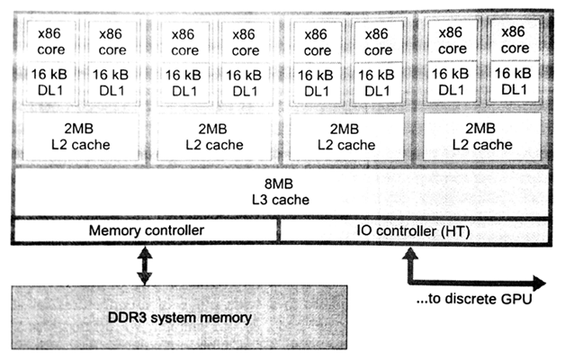
图8.1 基于AMD打桩机架构的高配CPU——FX-8350
CPU中OpenCL可以使用的核数有8个。如果将整个CPU作为一个独立设备，那么最好是每个核都有独立的命令队列，用来分散并行负载量，这种负载均衡的方式在系统中效率最高。当然在OpenCL中也可以使用设备划分的扩展方式，将CPU划分成多个设备。
8.1.1 运行时实现
OpenCL使用CPU时，运行时在每个核上创建了一个线程(例如，线程池)，以便OpenCL内核的执行。另一个主管理线程会根据队列上的任务，将不同的任务分配给不同的线程，同时将正在执行的任务从队列上移除。任意给定的OpenCL内核可能包含成千上万个工作组(其参数以及相应内存都需要提前准备好)。
OpenCL使用栅栏的方式提供细粒度的同步。在基于CPU的传统系统中，操作系统会对线程间通讯进行管理，操作系统会进行一定粒度的同步，使得并行实现更加高效。另外，如果将一个工作组分配到多个CPU核上回造成共享缓存的问题。为了缓解这个问题，OpenCL CPU运行时实现将一个工作组部署在一个CPU核(线程)上。OpenCL工作组中的工作项会按顺序执行(串行)。当前工作组中所有工作项执行完成后，将执行下一个工作组中的工作项。这样来看的话，虽然有很多工作组可以同时执行，但是工作组中的线程并不是并行的关系。图8.2中描绘了OpenCL在FX-8350 CPU上的映射关系。
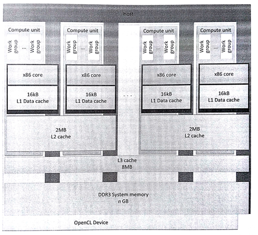
图8.2 OpenCL在FX-8350 CPU上的映射关系。该芯片将CPU和GPU集成在了一起。
OpenCL中工作项在工作组内是并发，可使用栅栏进行同步。所有线程必须到达栅栏处，才能继续下面的操作。CPU作为设备时，栅栏操作等于是一个工作项终止后，另一个工作项启动；不过，这对于操作系统不现实，因为操作系统会对不同优先级的线程进行处理(例如，中断某个线程，让另一个线程进行)。因此，当整个工作组属于一个线程时，就不会出现线程优先级的问题。AMD的OpenCL CPU运行时实现中，栅栏操作会使用到setjmp和longjmp指令。setjmp将会保存系统状态(保护现场)，longjmp将会读取保存了的系统状态，继续之前的执行状态[1]。不过，运行时会为了配合硬件的分支预测器和保证程序栈对齐，针对这两个函数提供两个自定义版本。图8.3展示了CPU线程在工作组中的工作流。
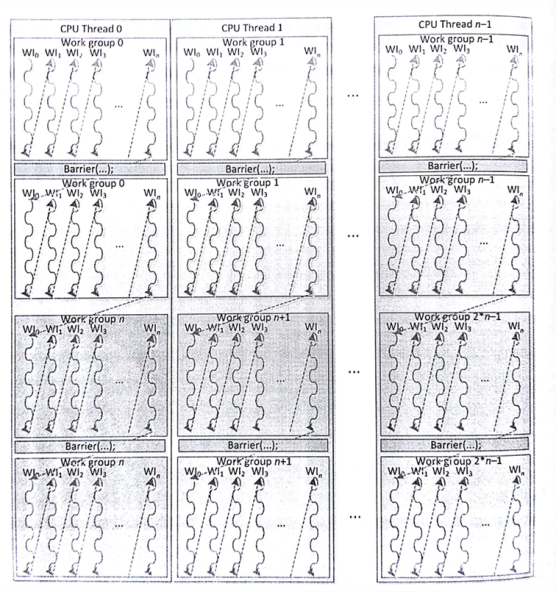
图8.3 x86架构下工作组运行情况
因为工作项的执行方式是串行的，所以当在内核中使用栅栏操作时，原本可以并行的工作组也需要将执行方式转变为串行。
使用setjmp指令时，工作项的数据将从工作项的栈中弹出到寄存器中。为了减少缓存争夺和未命中的情况，并提高层级缓存的利用率，栈数据存放在缓存的何处需要仔细考虑。另外，工作项栈数据是交错存储在内存上，以减少访存冲突，并且数据保存在一个较大的内存页中，以保证物理地址映射的连续性，减少CPU使用转换内存的压力。
8.1.2 工作项内的向量化操作
AMD打桩机微架构具有128位向量寄存器，可以用来处理各种版本SSE和AVX指令。OpenCL C包括一系列向量类型：float2, float4, int4等等。对于数学操作来说，有OpenCL C提供了对应的向量版本，式例如下：
float4 a = intput_data[location];
float4 b = a + (float4)(0.f, 1.f, 2.f, 3.f);
output_data[location] = b;
AMD打桩机微架构中，这些向量都会保存在寄存器中，并且在编译过程中会将这些操作翻译成SSE和AVX指令。这里提供了很重要的性能优化。向量的加载和存储操作，会使用底层代码进行，以提高内存操作的效率。目前，单个工作项可以使用SIMD向量：8.2节将会看到在GPU端的操作与CPU端的区别。
8.1.3 局部内存
AMD打桩机设计中并未对暂存式内存提供专用的硬件。CPU通常会为了减少访存延迟，会有很多层缓存。局部数据通常为了更加高效的访问数据，会将其映射到CPU缓存上，开发者还是享受到了来自硬件的访存加速。为了提高缓存的命中率，局部内存在每个CPU线程上都会开辟一段，并且局部内存可以被工作组中的工作项重复使用。对于串行的工作组来说(因为栅栏、数据竞争或内存冲突)，就不需要局部内存，从而会造成之后的缓存未命中。局部内存另外的好处是，减少了内存频繁开辟的开销。图8.4展示了局部内存与AMD CPU缓存的映射关系。
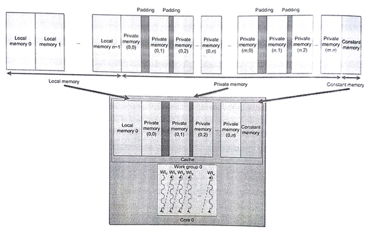
图8.4 工作组(0)的内存地址空间对应的是打桩机CPU的缓存。
虽然，在CPU上使用局部内存也会有潜在的性能收益，不过局部内存会给一些应用带来性能上的负面影响。如果内核中数据具有很好的局部性(比如，矩阵相乘的一部分)，之后使用局部内存用来存放需要多次使用到的数据，从而免去对数据的多次拷贝，并且数据存储在L1缓存上，访存效率极高。在这种情况下，如果可用的缓存过小，则会导致性能退化，过小的缓存会造成数据争夺缓存位置，从而增加未命中率和数据拷贝的开销。
[1] J. Gummaraju, L.Morichetti, M. Houstion, B. Snder, B.R. Gaster, B. Zheng, Twin peaks: a software platform for heterogeneous computing on general-purpose and graphics processors. in: PACT 2010: Proceedings of the Nineteenth International Conference on Parallel Architectures and Complilation Techniques. Septerber 11-15, 2010, Vienna, Austria. Association for Computing Machinery, 2010.
8.2 AMD Radeon R9 290X GPU
本节我们将讨论一下AMD GPU中的“波面阵”(在NVIDIA显卡中称为“线程块”)。这个概念是有助于我们区分OpenCL工作项和CUDA线程。不过，有时会无可避免的使用“线程”这个词来对GPU的工作方式进行描述。本书中我们将会使用“线程”来描述硬件线程。虽然，本节指定的设备为AMD Radeon R9 290X GPU，但是硬件线程与工作项映射的关系、线程调度和抢占的考量，以及内存系统的布局，不同厂商的同类产品其实很相似。
GPU上OpenCL的目标代码与CPU上的差别很大。读者应该还记得，图像处理器主要用来对3D图像进行渲染。这种设计让使得资源的优先级有所不同，与CPU架构也有很大的区别。目前GPU市场上，GPU的一些主要特性的差距越来越小，这些特性我们在第2章讨论过：
- 执行宽SIMD：大量执行单元对不同的数据，执行相同的指令。
- 大量多线程：GPU计算核支持并发大量线程。
- 硬件暂存式内存：物理内存可由编程者控制。
下面罗列出来的区别则更加微妙，不过其根据工作分配和交互对应用性能进行提高：
- 支持硬件同步：并发线程间支持细粒度交互。
- 硬件管理任务分配：工作队列管理与负载均和由硬件控制。
硬件同步能为计算单元中的多个波面阵减少同步开销，并且细粒度交互的开销非常低。
GPU为任务分发提供广阔的硬件空间，因为图像处理器支持三维图像。游戏任务在显卡的流水线上交错排布，让图形任务的管理变得更加复杂。图8.5中展示了OpenCL模型在AMD Radeon R9 290X GPU映射关系，其架构包含一个命令处理器和工作组生成器(生成工作组供硬件调度)。调度器会将计算任务分配到设备的44个核上。有关计算单元的内容将在8.2.2中详细讨论。
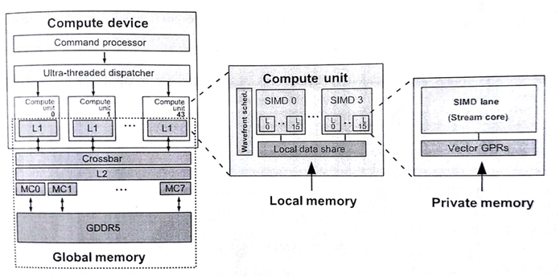
图8.5 OpenCL执行模型和内存模型在Radeon R9 290X上的映射
为了使用GPU获得高性能加速，调度需要十分高效。对于图像处理器，波面阵调度的开销必须很低，因为工作块可能很小(例如，一个像素只包含三个元素)。因此，当我们需要使用GPU获取较高的性能时，我们需要：
- 提供大量的内核任务供硬件分发
- 如果内核过小，考虑将内核进行合并
为每个内核提供足够工作，这样就能持续的占用工作组的流水线，所以调度器总能收到很多的任务，并且调度器通常会将给多的任务推到SIMD单元上。所以我们希望，设备每一次的吞吐可以创建大量的波面阵发送给GPU。
第二点是因为OpenCL设备支持队列模式。当OpenCL运行时选择执行相关设备上任务队列中的任务时，运行时会扫描队列中的任务，并选择合适大小的任务进行执行。这种任务由一个GPU工作命令缓存构成，其命令的执行放置在GPU的前端流水线上。其执行内容包括(1)构建一个队列，(2)将该队列放置在内存的某个位置上，(3)告诉设备这个队列在哪里，(4)要求设备执行这个队列。因为操作阶段这几个步骤是串行的关系，所以对于单个工作块来说，就会导致较高的延迟。另外，GPU在驱动层之下执行内核的过程中，为了能让GPU正常工作，需要在大量执行内核的上下文中进行切换。CPU端如果涉及到线程上下文切换，那应用的性能肯定不会太好。所以，如果任务量太小，就会出现多个上下文切换的情况，从而导致应用性能的下降。不过，这里有个开销常量，也就是对于单个工作队列的分配，以及之后对队列上任务执行的开销。通过传递大内核的方式(或较长的内核序列)，可以避免这种开销的累积。这样做的目的，就是为了增加每个队列中所要处理的任务量。
8.2.1 线程和内存系统
CPU缓存层级结构的设计就是为了减少内存访问流的延迟，一旦内存访问流出现了重大的延迟，那么会对性能造成很大的影响。另外，因为GPU核使用线程和宽SIMD单元，所以其能在和标量相同的延迟开销下，将数据吞吐量最大化。图8.6展示了一个包含FX-8350 CPU和Radeon R9 290X GPU系统的内存层级结构。
这种内存系统中，GPU具有如下特征：
- 大量的寄存器
- 用于管理软件的便签式内存，在AMD硬件中称为共享本地数据(LDS, local data shares)
- 高级别的片上多线程
- 单个L2缓存
- 高带宽内存
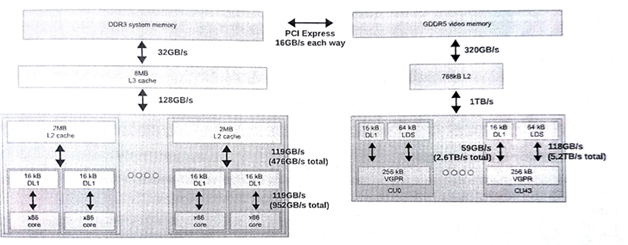
图8.6 分布式系统中的内存带宽
如之前所提到的，图像任务与计算任务有很大的区别，这就导致GPU需要有自己的执行和内存模型。实际上，GPU比CPU更加少的依赖数据重用，并且GPU的缓存大小要比CPU的小很多。即使在x86核和Radeon R9 290X计算单元上的L1缓存数据大小相同，GPU一次执行40个波面阵的话，每个波面阵所分配到的缓存更加的有限。GPU对于缓存的弱依赖是由一系列原因的，其中包括时域图像数据不可复用和由于数据集过大和大量的线程，无法保证为每个工作集提供足够的缓存空间。当数据复用发生时，多线程和高带宽内存将有助于克服缓存空间有限的情况。
GPU内存系统中，每个计算单元中有一个L2缓存。计算单元中的单L2缓存是为了保证GPU中L1缓存和外部缓存数据一致性而设计。如果向L2写入数据从而导致寄存器数据溢出，那么后续的每次访问则会有很高的的延迟，并且访存操作会阻塞在L2缓存处。
为了避免溢出，GPU提供了大量的寄存器。例如，x86架构下通用寄存器的数量是固定的(每个线程上下文中有16个通用寄存器)，Radeon R9 290X显卡单个波面阵可用的寄存器数量为16384个！波面阵尝试只使用寄存器进行计算，并且也会使用到LDS，也会尽可能避免访存冲突。
LDS允许高带宽低延迟(编程可控)的读写访问。这种可编程模式的数据复用要比硬件控制更加高效。减少垃圾数据(加载到缓存而从不使用的数据)访问，可以认为LDS的容量要比同级的缓存小得多。另外，减少控制逻辑和结构体标记就可以节省出很多LDS空间。
GPU核中允许硬件控制多线程，可以很好的掩盖内存访问延迟。为了让性能和利用率达到最高，就要有足够多的波面阵执行起来。每个SIMD单元上能运行4个以上(包括4个)波面阵，或是很多应用需要每个计算单元上能运行16个波面阵。如果每个SIMD单元可以运行10个波面阵，那么就有显卡中就会同时有40个活动的波面阵。为了能更加快速的进行切换，波面阵的状态则保存在寄存器中，而非缓存中。虽然大量的波面阵可以掩盖内存访问延迟，但每个波面阵也都是需要资源支持的，这里必须要进行权衡。
为了减少每个波面阵产生的请求，系统中的缓存会通过一种过滤机制进行合并读取操作，将写入操作合并，尽可能一次性写入更多的内容——这种机制被称为合并访问(coalesing)。向量从规划好的内存(基于DRAM)中读取数据会更加的高效。
图8.6中CPU和GPU是通过PCIe总线连接在一起，两设备间的数据传输则由该总线完成。应为PCIe总线的带宽要比DRAM低很多，和片上内存的带宽没法进行比较。CPU和GPU交互比较多的应用中，带宽会成为应用的性能瓶颈。OpenCL应用中必须最小化与执行相关的数据拷贝。使用离散GPU时，如果应用总要将GPU执行的数据通过PCIe进行拷贝，那么应用就不可能达到最佳的性能。
8.2.2 指令集和执行单元
图8.7展示了基于AMD下一代核芯显示架构Radeon R9 290X中的计算单元。计算单元在该显卡中具有四个SIMD单元。当创建一个波面阵，其就会被指定到计算单元中的一个SIMD单元上(分配寄存器)，并且在LDS上分配对应尺寸的内存。当波面阵有64个工作项，SIMD单元具有16个通道，那么SIMD单元上执行一个波面阵至少需要4个周期。这几个周期都需要一个SIMD单元上完成。这样的话，四个周期之后才能执行新的指令，确切的时间要从前一个指令完全提交到流水线上开始算起。
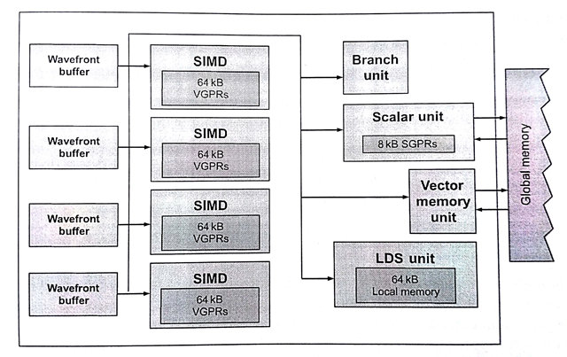
图8.7 Radeon R9 290X计算单元的微架构
回到计算单元，Radeon R9 290X除了SIMD单元，还有一定数量的执行单元。为了能够进行指令级别的并行，Radeon R9 290X计算单元不仅会将波面阵分配给SIMD单元，还会将对应的指令发送给其他硬件设备。调度器可能会将5个指令的每个周期放在不同单元上完成，这些单元包括SIMD单元、标量单元、内存单元、LDS或其他指定的功能硬件设备[2]。其他单元的调度与SIMD单元有些不同。比如，标量单元可以完成波面阵中的一条指令，其设计在每个周期可获得一个新指令。
之前提到的设备，比如第2章提到的Radeon HD 6970，其控制流就由分支单元全权管理。这种比较特殊的执行方式和市面上其他的向量结构有些不同。Radeon R9 290X的设计集成了标量和矢量，就像x86架构的CPU兼容SSE或AVX操作一样。
再回到有64个工作组的波面阵中，每个波面阵都具有一个指令流(64个工作项共用一个程序计数器)，并且所有分支都以波面阵为粒度进行执行。为了在Radeon R9 290X上支持分支控制流，架构提供给了执行掩码，用以表示哪些部分写入或不写入结果。因此，波面阵中工作项间的任何分支，都需要使用架构指令集(instruction set architecture，ISA)对指令加以限制，将对应的操作的写入功能开启或关闭。这样执行单元必须指令块队列中的所有可能的分支覆盖到。这样的分支执行会让向量单元执行的效率大大下降。不过，这样的问题完全可以在编程阶段避免，编程者可以通过手动的方式向量化代码。相同的问题也会出现在其他具有计算能力的架构中，比如NVIDIA的GeForce GTX 780，其软件产品支持宽向量架构，同样也会遇到分支问题。应对分支问题的方式：编程者手动修改代码，编译器对代码进行调整，或是硬件向量化等。
下面的例子会运行在Radeon R9 290X的计算单元上(可见Radeon R9 290X海岛系列ISA标准[3])。下面运行一个简单的内核，在一维索引为0和不为0时所要执行的代码不同：
kernel void foo(
const global int *in,
global int *out){
if (get_global_id(0) == 0){
out[get_global_id(0)] = in[get_global_id(0)];
} else {
out[get_global_id(0)] = 0;
}
}
这个简单的内核代码需要使用编译器进行编译，编译出的指令要与ISA进行映射。下面就让我们来看看，编译器是如何在Radeon R9 290X上翻译这段代码的。
s_buffer_load_dword s0, s[4:7], 0x04
s_buffer_load_dword s1, s[4:7], 0x18
s_waitcnt lgkmcnt(0)
s_min_u32 s0, s0, 0x0000ffff
v_mov_b32 v1, s0
v_mul_i32_i24 v1, s12, v1
v_add_i32 v0, vcc, v0, v1
v_add_i32 v0, vcc, s1, v0
s_buffer_load_dword s0, s[8:11], 0x00
s_buffer_load_dword s1, s[8:11], 0x04
v_cmp_eq_i32 s[4:5], v0, 0
s_and_saveexec_b64 s[4:5], s[4:5]
v_lshlrev_b32 v1, 2, v0
s_cbranch_execz label_0016
s_waitcnt lgkmcnt(0)
v_add_i32 v1, vcc, s0, v1
s_load_dwordx4 s[8:11], s[2:3], 0x50
s_waitcnt lgkmcnt(0)
tbuffer_load_format_x v1, v1, s[8:11], 0 offen
format:[BUF_DATA_FORMAT_32, BUF_NUM_FORMAT_FLOAT]
label_0016:
s_andn2_b64 exec, s[4:5], exec
v_mov_b32 v1, 0
s_mov_b64 exec, s[4:5]
v_lshlrev_b32 v0, 2, v0
s_waitcnt lgkmcnt(0)
v_add_i32 v0, vcc, s1, v0
s_load_dwordx4 s[0:3], s[2:3], 0x58
s_waitcnt vmcnt(0) & lgkmcnt(0)
tbuffer_store_format_x v1, v0, s[0:3], 0, offen
format:[BUF_DATA_FORMAT_32, BUF_NUM_FORMAT_FLOAT]
s_endpgm
清单8.1 Radeon R9 290X上分支操作所生成的ISA指令
这段代码表示在一个通道上所执行的所有操作(一个工作项)。不过，不同于高级语言，这里的标量操作(前缀为s_)会在图8.7所示的GPU标量单元上完成，矢量操作(前缀为v_)会在GPU矢量单元上完成。
清单中第11行(v_cmp_eq_i32 s[4:5], v0, 0)，我们能看到这里执行的是矢量比较操作，将工作项ID(存与v0)与常量数0进行比较。比较的结果存于一个64位布尔掩码中，64位掩码由连续的两个标量寄存器组成(s[4:5])。得到的布尔掩码则用来决定OpenCL C内核所要执行的分支。
第12行(s_and_saveexec_b64 s[4:5], s[4:5])，这里隐式的将当前执行掩码与比较结果后的掩码进行与操作。例子中最后得到的执行掩码将用于判断执行if的哪个分支。目标标量寄存器中会将上次执行的掩码进行保存(本例中，s[4:5]将保存上次比较的结果掩码，目前存储的是上次的执行掩码)。当决定哪个工作项走else分支时，就需要使用上次得到的执行掩码。同样，在条件执行完成后需要上次的掩码用来重置执行掩码。这些操作保证对标量条件代码(SCC, scalar condition code)寄存器的设置，该寄存器用于触发条件分支。
设置SCC寄存器对程序来说是一种优化，因为其能保证对应工作项进入对应分支，不需要走的分支则不会去执行(本例中，当掩码为0，14行的s_cbranch_execz指令将保证if分支在执行过程中不会触发)。如果条件不满足，代码将进入else分支。本例中，工作项0将使if分支条件成立，其分支掩码为1，所以工作项0则会执行if分支中的语句——用一条SIMD通道完成(从第16行开始(v_add_i32 v1, vcc, s0, v1))。
当if分支执行完成，则会在第19行执行一个矢量加载(从tbuffer或纹理内存中加载数据，)，将期望的数据存储到向量寄存器中，v1。第19行是if分支中最后一个操作。注意，在OpenCL C代码中在加载操作完成后，还有一个存储操作。因为，不同分支所要写入的地址是相同的，所以这里编译器将这个存储操作放在程序的最后进行(tbuffer_store_format_x v1, v0, s[0:3], 0, offen)。
第22行(s_andn2_b64 exec, s[4:5], exec)会将当前执行掩码与原始执行掩码进行与操作。新的执行掩码则表示当前工作项执行的是else分支的语句。else分支不需要从内存中加载数据，工作项只需要将常量0存储v1即可(第23行(v_mov_b32 v1, 0))。注意不同的分支都将结果保存在v1寄存器中，这样就可以将存储操作放在之后完成。
细心的读者可能已经发现了，指令中这里并没有对else分支进行忽略。本例中，编译器认为与其忽略else分支，不如不对其进行加载，这样就节省了执行预测的性能开销。而且，这样操作就不会对v1寄存器进行更新，和忽略else分支达到了同样的效果。
这是一个简单的例子。在当有嵌套或深层条件时，就会有更加复杂和更加长的序列用来存储条件掩码，并且与执行掩码进行与操作，逐级缩小执行管道最后所要执行的变量分支。逐级缩小的过程将会对造成执行性能的下降。所以，良好的代码设计将会在执行相同指令的前提下，获得更佳的性能。程序的掩码管理十分复杂，并且GPU向量操作与CPU向量操作(SSE)也区别。其在多核系统下，向量操作就并非是一种抽象的概念了。
最后，第24行(s_mov_b64 exec, s[4:5])，将执行掩码进行重置，并且将数据存储在v1寄存器中，在第30行(tbuffer_store_format_x v1, v0, s[0:3], 0, offen)使用tbuffer将数据存储到对应位置上。
8.2.3 资源分配
GPU中的每个SIMD单元都有固定数量的寄存器和LDS存储空间。每个计算单元中有256KB的空间供寄存器使用。这些寄存器分为四组，每个SIMD单元有256个寄存器，每个寄存器，每个单元有64个通道，每个通道具有32位。计算单元中，寄存器是执行波面阵的最小单位。每个计算单元有64KB的LDS，就像对32行的SRAM一样可以进行随机访问。LDS会在计算单元中分成多份，划分给对应的工作组，用于开辟对应的局部内存(通过OpenCL运行时传入的参数进行分配)。
计算单元执行内核时，我们可能看到如图8.8所示的资源瓶颈。图中两个波面阵，每个波面阵中有两个工作组，每个工作项需要42个向量寄存器(按照波面阵的尺寸等比例放大)，并且共享50个标量寄存器，并且每个工作组需要24KB LDS。每个计算单元能够同时执行4个这样的波面阵，这样可将每个波面阵分配给一个SIMD单元，同时运行4个会让设备保持忙碌状态。不过，当执行标量代码或内存操作时，就没有空间进行切换操作。下面给出在Radeon R9 290X上工作组对一个计算单元的占用比(等式8.1)：
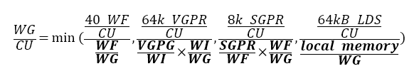
(8.1)图8.8 R9 290X GPU物理内存与OpenCL内存间的映射关系
等式8.1中，VGRP表示矢量通用寄存器，SGPR表示标量通用寄存器，WI表示工作项，WG表示工作组，WF表示波面阵。通过OpenCL内核参数传入的部分使用粗体表示。
图8.8的例子中，如果增加SIMD单元中波面阵运行的数量(4个或更多)，在控制流和内存延迟方面，让标量和矢量单元忙碌起来，有助于对延迟的隐藏。本例中LDS有限，对于算法来说，将波面阵数量(只有一个波面阵)增加到3个是个不错的选择。另外，减少LDS内存分配，则可让每个工作单元多执行三分之一个工作组。这个方式在波面阵等待栅栏或内存访问时非常有用(SIMD单元闲置状态)。
每个波面阵运行在一个SIMD单元上，直到执行完成。任意组具有相同工作组的波面阵都会在同一个计算单元上完成。由于每个工作组的状态存储量的原因，才将这些工作放在同一个计算单元完成。本例中，我们看到每个工作组需要24KB LDS，且寄存器可操作的空间超过21KB。在刷新内存和搬移到其他核上时，这个数据量还是相当大的。当内存控制器执行高延迟的读或写操作时，如果没有其他波面阵在计算逻辑单元(ALU)中时，那就没有任务分配到SIMD单元上，计算硬件这时处于闲置状态。
[2] Advanced Micro Devices, GCN Whitepaper. AMD Graphics Core Next(GCN) Architecture, 2013. http://www.amd.com/Documents/GCN_Architecture_whitepaper.pdf
[3] Advanced Micro Devices, ADM Sea Islands Series Instruction Set Architecture, 2013. http://developer.amd.com/wordpress/media/2013/07/AMD_Sea_Islands_Instruction_Set_Architecture.pdf.
8.3 OpenCL内存性能的考量
8.3.1 全局内存
与内存相关的话题我们在第2章有详细的讨论过。OpenCL应用的性能与是否高效的使用的内存有着很大的关系。不过，高效的内存则依赖与具体的硬件(执行OpenCL内核的设备)。因此，同样的访存模式，在GPU上是高效的，不过在CPU上就不一定了。因为GPU的供应商繁多，且与CPU在制造方面有很大的区别。
所有例子中，内核吞吐量的级别是内存性能分析的开端。下面简单的计算公式，就是用来计算内核的带宽大小：
(8.2)
EB代表有效带宽，Br代表从全局内存上读取的数据量(单位：byte)，Bw表示写入全局内存的数据量(单位：byte)，t代表内核运行的时间。
时间t的获取，可以通过一些性能测评工具，比如：ADM的CodeXL。Br和Bw可以通过每个工作项所读取或写入的数据量，然后乘以工作项的数量计算得出。所以，在某些情况下，这些读写的数据量都是估算出来的。
当我们测得当前执行内核的带宽，我们可以将测出带宽与执行设备的峰值带宽进行比较，看一下二者在数值上差多少。如果二者很接近，那说明我们充分的利用了当前内存系统；如果二者相差甚远，那我们就需要考虑重构我们内存访问的方式，以提高内存的利用率，增大内核带宽。
OpenCL程序在对内存访问时，需要考虑对内存所处的位置。大多数架构在运行OpenCL内核时，会基于不同等级的矢量进行(可能像SSE，或使用管道导向型输入语言进行在佛那个向量化，例如AMD的IL或NVIDIA的PTX)，内存系统会将向量中的数据打包一起处理以加速应用。另外，局部访问通常会使用缓存进行。
大多数现代CPU都支持不同版本的SSE和AVX向量指令集。将内存部分设计成全对齐的模式，向量读取这样的内存会有使用到相关的指令集，并且向量指令会使内存访问更加高效。可以给定一个较小的向量尺寸(比如float4)，这样编译器会生成更加高效的向量读取指令。其很好的利用了缓存行，缓存和寄存器间做数据移动是最高效的。不过，CPU在处理未对齐的内存或更多的随机访问时，缓存会帮助掩盖一些性能损失。图8.9和图8.10提供了两个例子，一个用于读取一段连续的4个数据，另一个则是通过随机访问4个数据。如果缓存行较窄，则会出现很多次缓存未命中，这样的情况会大大影响应用的性能。
图8.9 内存系统中使用向量的读取数据的方式会更加高效。当工作项访问连续的数据时，GPU硬件会使用合并访问的方式获取数据。
图8.10 访问非连续元素时，性能会有一定的损失。
之前的章节中我们曾讨论过，GPU内存架构与CPU的内存架构有着很大的不同。GPU使用多线程的方式来掩盖不同级别的内存延迟，CPU则会更多的是用ALU的能力，而非缓存和复杂的乱序逻辑。传统GPU具有更多的计算资源可用，如果我们不想GPU饿死，就需要具有更加高带宽的内存系统。很多现代GPU架构，特别是高性能桌面版本，比如AMD的Radeon系列和NVIDIA的GeForce系列，都在使用宽SIMD架构。试想8.10图中的例子，将向量扩展成(AMD Radeon R9支持的)64位硬件向量。
高效的访问在不同的架构中也有不同的方式。对于x86 CPU来说使用的是SSE指令集，我们可能会使用128位的float4类型作为数据处理的单元，这样可能会增加缓存行的利用率，减少缓存未命中的概率。对于AMD Radeon R9 290X GPU架构，同一波面阵中连续的工作项就可以同时对内存进行访问。如果内存系统不能及时的处理这些请求，则会造成访存延迟。对于最高的性能，同一波面阵的工作项同时发起32位的读取请求时，就意味着最多需要读取256字节(32bit x 64个工作项)内存数据，这样内存系统只需要相应开辟一块较大内存上的请求。为了可在不同的架构间进行移植，一个好的解决方式就是让内存访问的效率尽可能的高，可以在宽矢量设备(AMD和NVIDIA GPU)和窄矢量设备(x86 CPU)都有很好的访存效率。为了达到这种效果，我们可以通过工作组计算出所要放访问的内存起始地址，该地址应为work-groupSIze x loadSize对齐，其中loadSize是每个工作项所加载的数据大小，其应该是一个合理的值——对于AMD GCN架构的设备来说，32位是一个不错大小；对于x86 CPU和旧一些的GPU架构来说，128位则是很好的选择；对支持AVX架构的设备来说，256位则是不二之选。为什么32位对于AMD GCN架构来说是一个不错的选择，下面我们就来解释一下。
要处理不同的内存系统，需要面对很多问题，比如：减少片外链接DRAM的访存冲突。先让我们来看一下AMD Radeon架构中如何进行地质分配。图8.11中低8位展示了给定内存块中的数据内存起始地址；这段信息可以存储在缓存行和子缓存行中，供我们进行局部读取。如果尝试读取二维数据中一列的数据，对于行优先的存储方式，这种方式对于片上总线来说是低效的。其也意味着，设备上同时执行的多个工作组，访问的内存通道和内存块都有所不同。
图8.11 将Radeon R9 290X地址空间的内存通道与DRAM块间的映射
图8.12 Radeon R9 290X内存子系统
每个内存通道的控制器与片外内存进行连接(图8.12)。我们希望执行设备能够通过内存系统，访问到其中的所有内存块与内存通道。不过，一个波面阵中某个矢量将会命中多个内存通道(或内存块)占用和阻塞他们，导致其他波面阵对相应地址访问的延迟，从而导致带宽的下降。最佳的方式是，给定的波面阵能够连续的读取指定内存通道和内存块上的数据，允许更多波面阵可以并行的对内存进行访问，形成高效的数据流。
为了避免使用多个通道，一个波面阵所能访问到的区域在64个字(256字节)之内，这就能保证所有工作项在读取32位数据时，是从连续的地址上获取。这里需要讨论一下访存最坏的结果——"当多个波面阵中的每个工作项对同一地址的数据进行访问"——每个工作项中的变量都将命中同一内存通道和内存块，并且串行的获取数据，访存吞吐量比顶峰时降低数倍。更多的有关AMD架构主题的内容，可以在《AMD的OpenCL编程指南》中找到[4]。同样的信息也在其他GPU供应商的计算架构中出现——例如，NVIDIA的《CUDA编程指南》[5]。
8.3.2 局部内存——软件可控缓存
大多数支持OpenCL的设备都支持不同形式的缓存。由于面向图像的设计，很多GPU只提供只读数据缓存，这样能复用大量的数据。
OpenCL使用缓存最简单的方式就是使用图像类型(第6和第7章讨论过)。GPU上，图像可以将数据映射成硬件可读纹理。假设复杂的滤波器不需要进行二维内存访问，那么访问内存效率将会提高。不过，GPU缓存相较波面阵所要读取的内存，则是相形见绌。编程者可通过代码控制暂存式内存在局部空间的大小，在高效获取数据的同时，减少了硬件控制缓存的开销，有效的节约资源。这对于工作组内工作项的数据交换来说，能够减少栅栏冲突和访问延迟。(图5.5就是一个例子)
当然，考虑对数据进行优化时，需要认真的考虑如何利用数据的局部性。很多例子中，其消耗在于使用额外的拷贝指令将数据搬移到局部内存中，之后搬运到ALU中(可能通过寄存器)进行计算，这种方式的效率通常要比简单的复用缓存中数据的效率低得多。大量的读取和写入操作复用同一地址时，将数据搬移到局部内存中将会很有用，读取和写入操作对局部内存的操作延迟要远远小于对于全局内存的操作。并且，对二维数据进行访问时，就不需要通过全局变量进行数据加载，从而减少缓存加载所需要的时间。
下例中的读/写操作，将会大大收益与局部内存，特别是给定宽度的只读缓存。读者可以尝试，写出前缀求和的C代码和下面的代码进行对照：
{%ace edit=false, lang='c_cpp'%} void localPrefixSum( __global unsigned *input, __global unsigned *output, __local unsigned *prefixSums, unsigned numElements){
/* Copy data from global memory to local memory */ for (unsigned index = get_local_id(0); index < numElements; index += get_local_size(0)){ prefixSums[index] = input[index]; }
/* Run through levels of tree, each time halving the size
- of the element set performing reduction phase */ int offset = 1; for (unsigned level = numElements / 2; level > 0; level /= 2){ barrier(CLK_LOCAL_MEM_FENCE);
for (int sumElement = get_local_id(0);
sumElement < level;
sumElement += get_local_size(0)){
int ai = offset * (2 * sumElement + 1) - 1;
int bi = offset * (2 * sumElement + 2) - 1;
prefixSums[bi] = prefixSums[ai] + prefixSums[bi];
}
offset *= 2;
}
barrier(CLK_LOCAL_MEM_FENCE);
/* Need to clear the last element */ if (get_local_id(0) == 0){ prefixSums[numElements - 1] = 0; }
/* Push values back down the tree */ for (int level = 1; level < numElements; level *= 2){ offset /= 2; barrier(CLK_LOCAL_MEM_FENCE);
for (int sumElement = get_local_id(0);
sumElement < level;
sumElement += get_local_size(0)){
int ai = offset * (2 * sumElement + 1) - 1;
int bi = offset * (2 * sumElement + 2) - 1;
unsigned temporary = prefixSums[ai];
prefixSums[ai] = prefixSums[bi];
prefixSums[bi] = temporary + prefixSums[bi];
}
}
barrier(CLK_LOCAL_MEM_FENCE);
/* Write the data out to global memory */ for (unsigned index = get_local_id(0); index < numElements; index += get_local_size(0)){ output[index] = prefixSums[index]; } } {%endace%}
程序清单8.2 单工作组的前缀求和
这段代码是进行过一定优化的，其让工作组中的工作项共享一段数组，从而降低访问数据的延迟。数据流中的第一个循环(第19行)如图8.13所示。注意循环中的每次迭代更新一些工作项中的数据，以供下次迭代使用。这里需要工作项之间的合作，才能完成这项工作。内部的循环最好能覆盖大部分工作项，以避免执行分支。为了保证工作项的正确行为，我们在外层循环中添加了栅栏，同步对应的工作项，以确保数据在下次循环时已经准备好。
图8.13 展示了代码清单8.2中将16个元素存入局部内存，使用8个工作项进行前缀累加
代码清单8.2中的前缀求和使用的是局部内存的方式，这种方式在大多数宽SIMD架构下的效率并不高(比如：高端GPU)。之前我们讨论过全局变量，内存系统倾向于将内存进行分块，而非让每个内存位置都能让外部访问到。最后，硬件的暂存式内存(比如：缓存)更加倾向于让每个内存块执行多次读操作，或者并发的进行读写操作(或其他一些多次访问操作)，多次读取操作可以跨越多个内存块进行。所以在使用宽硬件SIMD访问内存时，这点必须要考虑到。每个周期中，Radeon R9 290X GPU使用4个SIMD单元可以处理两个局部内存操作。每个SIMD单元具有16个通道，每个周期可以完成32个读或写操作，可以LDS上32个内存块。每个内存块支持一个访问入，那么每个内存块只能提供一个值，所以只有在所有访问目标都在不同的内存块上时，才能获取最好的吞吐率。同样的规则也适用于其他计算架构：NVIDIA的费米框架，局部内存分为32个内存块。
局部内存的问题并没有全局内存那么严重。全局内存中，大范围跨越访问会因缓存行上的多个访问丢失，导致访存延迟。局部内存中，至少架构中是由暂存器的，编程者可以根据自身意愿将数据放到该内存上。这里需要的是，我们发起的16次局部内存访问，最好访问的是不同的内存块。
图8.14中展示了图8.13前缀求和在8个LDS块上进行的第一步，这里每个工作项在每个周期中能执行一次局部内存操作。这个例子中，我们的局部内存可以在一个周期内返回8个值。那么我们应该如何在第一步中提升应用的执行效率呢？
注意16个元素的局部内存(对于前缀求和来说是很有必要的)已经超过两行。每列上的数据在一个内存块上，每行上只存放每个内存块的一个地址。假设(通常在很多架构中)每个内存块都是32位宽，并且假设当前波面阵不需要依赖其他波SIMD单元处理后的数据。不过在图8.14中，我们的第一步可谓是失败的。局部内存和全局内存一样，一个SIMD矢量会根据矢量长度连续，并高效的访问数据，并且局部内存不存在访问争夺。图8.13中我们看到的是另一番景象。29行中prefixSums[bi]=perfixSums[ai]+perfixSums[bi]中，对prefixSums[bi]访问了两次。图中就是尝试对位置3、7、11和15进行读取。图8.14中，3和11都存储在内存块3上，7和15存储在内存块7上。根据之前的描述，就不要想同时读取到内存块上的两个值，所以访问同一块内存的操作只能在GPU上串行执行，从而导致读取延迟。为了达到最优性能，我们要尽可能避免冲突。有个十分有用的技巧是进行简单的填充地址，就如图8.15所示。为了偏移地址(以内存块大小对齐)，甚至可以改内存访问的跨度。不过，对地址操作的开销要比内存块冲突严重的大多；因此，我们要在具体的架构上进行调试。
图8.14 图8.13中的第一步，LDS上具有8个内存块
图8.15 图8.14中的第一步，为了避免LDS中的内存块访问冲突，则去访问下个内存块的数据
局部内存的大小是固定的。任何OpenCL设备都具有一段暂存式内存，这块内存大小有限，且不归硬件管理。Radeon R9 290X GPU式例中，其局部空间大小为64KB。要注意的是这64KB是所有工作组一共可以使用的共享内存。因为GPU是用多线程提高吞吐量，从而掩盖访存的延迟。如果每个工作组使用16KB，那么每个核上只能运行4个工作组。如果几个波面阵(一个或两个)中包含有几个工作组，那么这样就刚好能够掩盖访问延迟。虽然局部内存能提升应用性能，不过局部内存大小有限。因此，我们需要在使用局部内存和减少硬件线程方面进行平衡。
OpenCL运行时API也支持查询对应设备上局部内存的大小。在编程者编译或暂存局部内存数据时，其可以作为OpenCL内核参数。下面代码第一个调用，是用来查询局部内存类型，其可以用来判断哪些内存属于局部内存或全局内存(哪些是可以缓存或不能缓存的)，第二个调用时用来返回局部内存的大小：
cl_int err;
cl_device_local_mem_type type;
err = clGetDeviceInfo(
deviceId,
CL_DEVICE_LOCAL_MEM_TYPE,
sizeof(cl_device_local_mem_type),
&type,
0);
cl_ulong size;
err = clGetDeviceInfo(
deviceId,
CL_DEVICE_LOCAL_MEM_SIZE,
sizeof(cl_ulong),
&size,
0);
[4] Advanced Micro Device, The AMD Accelerated Paralel Processing-OpenCL Programming Guide, Advanced Micro Devices, Inc,. Sunnyvale, CA, 2012.
[5] NVIDIA, CUDA C Programming Guide, NVIDIA Corporation, Santa Clara, CA, 2012.
8.4 本章总结
本章旨在表示OpenCL在具体架构上的映射关系。本章中，我们简单的比较了一下CPU和GPU架构的不同，不同的矢量宽度带来的巨大的性能差异(NVIDIA的GPU矢量宽度为32位，AMD的GPU矢量宽度是64位，CPU则小的多)，还有不同的线程管理和指令调度。本书中我们不能覆盖所有市面上的架构，不过本章中我们给出了一些例子。所以，编程者在以某个OpenCL设备作为目标设备时，就需要仔细研究对应平台架构的相关文档，这样才能在对应平台上获得最优的性能。
第9章 案例分析：图像聚类
词袋(BoW，bag-of-words)模型是大多流行图像分类模型中的一个，这个模型是图像搜索系统的一个组件。BoW模型将图片的特征作为一组词，用这组词作为一个矢量用来描述这幅图像。本章我们会讨论如何使用OpenCL实现BoW模型中重要的组件——建立直方图(Histogram Builder)，以及学习如何对OpenCL源代码进行优化。
9.1 图像聚类简介
图像分类源于机器视觉，其根据图像可见内容对图像进行分类。例如，某个图像算法可能会用来告诉你该图片中是否有人。虽然检测人可能是很简单的事情，但能将图像进行准确分类的算法，仍然是目前的所要面临的挑战。
BoW模型通常会用于文本分类或自然语言处理。BoW模型中每个词出现的频度都会作为一个训练参数传入对应的机器学习算法中。除了进行文本分类，BoW也可以应用于图像。为了让BoW能对图像进行分类，我们需要从图像中获取一组词(和文本分类一样)，以及对应词的出现频率。机器视觉中，这里的“词”通常被看做是图像的一个“特征”。特征算法将图像缩小成一组特征值。图9.1展示了个图像分类的高端算法，其包括生成特征、聚合和直方图建立这几步。
图9.1 图像分类流程。像SURF这样的算法可以用来产生特征。像k-means类的聚合算法之后会产生一组质心特征，这些特征可以用来描述原始图像。通过直方图构建算法将这些计算出的特征赋予质心。
图9.2 使用SURF算法生成特征。SURF算法可以将一副图像作为输入，并且产生一组对应的特征。每个特征包括图像位置信息和一个具有64个值的描述符。
下面简单的描述一下这几步：
- 生成特征：我们已经将特征产生算法应用于BoW模型，将其称为加速稳健特征算法(SURF，Speeded Up Robust Features)。SURF算法在2006年，由Bay等人在欧洲计算机视觉会议(ECCV)上发表[1]，其对不同大小的图像进行尺度不变的变换。如图9.2所示，将图像出入SURF算法中，将会得到一组用来描述原始图像的特征值。每个特征值包含图像位置和描述矢量。每个特征中的描述符向量是一个64维的向量。没描述符中包括该特征颜色和特征位置周围颜色梯度关系。本章中的特征，都具有一个有着64个元素的描述符。其余的成员变量则不是本章关注的焦点。
- 图像聚合：SURF产生的描述符通常都经过量化，通常会经过k-means聚合，然后映射到群组中。每个群组的质心就是所谓的“视觉词”。
- 直方图构建：这一阶段的任务是将SURF算法产生的描述符设置到直方图的视觉词中去。为了完成这项工作，我们需要确定描述符和质心的对应关系。本例中，SURF产生的特征描述符和质心都由64维构成。我们通过计算描述符和所有质心的欧式距离，并且将描述符赋予距离最近的质心。直方图在这里就是用于统计每个质心被赋予描述符的次数。
使用这种方法，我们就能表示视觉词出现的频度。机器算法，例如支持向量机就能使用模型对图片进行分类。这一过程在图9.1中展示。
本章我们将探索在直方图构建步骤上的并行化。我们首先使用在CPU上的串行算法对该算法做一个具体的了解，然后使用OpenMP进行CPU版本的并行化优化。然后将多线程实现换成OpenCL，让这一阶段的计算在GPU上完成。我们会有多个GPU版本的实现，包括原始实现，对全局内存进行优化的实现，以及利用局部内存的实现。本章最后，我们将使用AMD的Radeon HD 7970 GPU对相应的实现进行性能评估。
贴士 本章着重于图像分类算法中的直方图构建步骤。 读者如果对特征生成算法感兴趣，这里提供一个开源版本的SURF实现(OpenCL)：https://code.google.com/p/clsurf/ google code无法使用，GitHub地址：https://github.com/perhaad/clsurf
[1] H. Bay, T. Tuytelaars, L.V.Gool, SURF:speed up robust features, in: ECCV, 2006, pp.404-417.
9.2 直方图的特性——CPU实现
本节我们将介绍如何将SURF计算出的特征转换成直方图，我们先用CPU是现实一个串行执行的版本。然后使用OpenMP使用CPU多核来完成这个算法的并行化。
9.2.1 串行实现
{%ace edit=false, lang='c_cpp'%} // Loop over all the descriptors generated for the image for (int i = 0; i < n_des; i++){ membership = 0; min_dist = FLT_MAX; // Loop over all cluster centroids available for (j = 0; j < n_cluster; j++){ dist = 0; // n_featrues: No. of elements in each descriptor (64) // Calculate the distance between the descriptor and the centroid for (k = 0; k < n_features; k++){ dist_temp = surf[i][k] - cluster[j][k]; dist += dist_temp * dist_temp; } // Update the minimum distance if (dist < min_dist){ min_dist = dist; membership = j; } } // Update the histogram location of the closest centroid histogram[membership] += 1; } {%endace%}
代码清单9.1 将SURF特征设置到集群直方图的串行版本
代码清单9.1中，展示了如何将SURF计算出来的特征设置为集群的质心(视觉词)。第2行遍历了每个SURF特征的描述符，第7行遍历了集群的所有质心。第12行循环遍历当前描述符中的64个元素，并计算当前特征与当前集群质心的欧氏距离。第18行找到离集群质心最近的SURF特征，并将其设置为成员。
9.2.2 OpenMP并行实现
为了展现CPU多核多线程的能力，我们使用OpenMP来对清单9.1的代码进行并行化。OpenMP的编程接口支持多平台的内存共享并行编程，可以使用C/C++和Fortran作为编程语言。其定义了一种可移植、可扩展的简单模型，并且灵活的接口可以让当前的应用立即化身为多线程应用[2]。在C/C++代码中，OpenMP使用编译标识(#pragma)直接告诉编译器生成对应的多线程实现。
{%ace edit=false, lang='c_cpp'%} #pragma omp parallel for schedule(dynamic) // Loop over all the descriptors generated for the image for (int i = 0; i < n_des; i++){ membership = 0; min_dist = FLT_MAX; // Loop over all cluster centroids available for (j = 0; j < n_cluster; j++){ dist = 0; // n_featrues: No. of elements in each descriptor (64) // Calculate the distance between the descriptor and the centroid for (k = 0; k < n_features; k++){ dist_temp = surf[i][k] - cluster[j][k]; dist += dist_temp * dist_temp; } // Update the minimum distance if (dist < min_dist){ min_dist = dist; membership = j; } } // Update the histogram location of the closest centroid #prargma omp atomic histogram[membership] += 1; } {%endace%}
代码清单9.2 将清单9.1的代码进行多核并行化
使用OpenMP可以将直方图构建任务分配到多个CPU核上。每个线程处理不同的描述符和集群执行的距离，并将相应的描述符赋予质心。虽然每个描述符的计算是独立的，但是将值赋予质心的过程会出现条件竞争：多个线程想要同时更新同一个位置的内存，那么结果将是不可预测的。条件竞争可以使用原子加操作进行解决(第26行)。
清单9.2中，编译标识出现在第2行，其作用就是将每一次循环迭代放置到一个线程中。第18行的标识则告诉编译器，使用原子操作来更新共享内存。
[2] L. Dagum, R. Menon, OpenMP: an industry standard API for shared-mempry programming, IEEE Comput. Sci. Eng. 5(1)(1998)46-55
9.3 OpenCL实现
本节，我们将了解一下如何在GPU上实现直方图构建。首先实现实现了一个常规内核，该内核代码基于串行和OpenMP版本的算法。然后，再来对GPU实现进行优化，这里使用的优化策略为：合并访问和局部内存。
9.3.1 常规GPU实现：GPU1
根据清单9.2中的OpenMP实现，我们可以实现一个最简单OpenCL版本，也就是将循环迭代拆开，让每个工作项完成一个标识符的归属计算。
不过，OpenMP实现中，我们遇到了条件竞争的问题，这里工作项需要对在全局内存上的直方图进行更新。为了解决这一问题，在OpenCL中我们依旧使用原子操作。下面的OpenCL内核就是我们的实现。我们暂且称这段代码为GPU1：
{%ace edit=false, lang='c_cpp'%} __kernel void kernelGPU1( __global float *descriptors, __global float *centroids, __global int *histogram, int n_descriptors, int n_centroids, int nfeatures){
// Global ID identifies SURF descriptor int desc_id = get_global_id(0);
int membership = 0; float min_dist = FLT_MAX;
// For each cluster, compute the membership for (int j = 0; j < n_centroids; j++){ float dist = 0;
// n_features: No. of elements in each descriptor(64)
// Calculate the distance between the descriptor and the centroid
for (int k = 0; k < n_features; k++){
float temp = descriptors[desc_id * n_features + k] -
centroids[j * n_features + k];
dist += temp * temp;
}
// Update the minimum distance
if (dist < min_dist){
min_dist = dist;
membership = j;
}
}
// Atomic increment of histogram bin atomic_fetch_add_explicit(&histogram[membership], 1, memory_order_relaxed, memory_scope_device); } {%endace%}
代码清单9.3 内核GPU1，直方图基线内核
注意清单9.3中，第37行的原子加操作，使用的自由序进行。我们选择这个内存序的原因是，更新操作比较简单，并不需要对内存访问顺序进行严格要求。详细内容可回顾第7章中的相关章节。
9.3.2 合并访问内存：GPU2
例子中对于数据的访问不存在跨距，所以工作项可以在GPU执行单指令多数据命令(SIMD)。并且SURF描述符和集群质心矢量都具有64个连续数据。再来看看清单9.3中的第24行，并且注意描述符访问的方式。对于给定的GPU硬件来说，第24行对于内存的访问是否高效呢？
假设有4个并行的工作项，其全局索引分别是0到3。在GPU执行最内部的循环时，这个四个工作项所访问的数据间具有很大的跨距——在这个版本的内核代码中，数据跨距为n_features。假设我们现在在处理质心0(j=0)，并且正在处理质心0与特征0(k=0)之间的距离。那么工作项分别访问的数据为：descriptors[0]、descriptors[64]、descriptors[128]、descriptors[192]。那么计算下一个特征时就要访问descriptors[1]、descriptors[65]、descriptors[129]、descriptors[193]，以此类推。
第8章中我们介绍了对于连续数据的合并访问方式，该方式只向内存系统发出更少的请求，以高效的方式获取相应的数据。不过，跨距访问方式需要产生多个访存请求，从而导致性能下降。这种带有跨距的访存方式是无法进行合并访问的。
为了通过使用合并访问的方式提升内存带宽的利用率，我们需要调整数据在descriptors存放的顺序。可以通过一种常用的矩阵操作来完成——转置，如图9.3所示。转置过程中，矩阵的行列坐标互换。我们可以创建一个简单的内核来完成这项工作。
图9.3 将描述符中的数据进行转置，以便进行合并访问
图9.4 对一维数组进行转置。
一维数组的转置如图9.4所示。转置后，descriptors[0]、descriptors[64]、descriptors[128]、descriptors[192]就是连续的。并且内核内部可以进行合并访问，只需要一个访存请求，即可直接将4个连续的数据取出。
{%ace edit=false, lang='c_cpp'%} __kernel void kernelGPU2( __global float *descriptors, __global float *centroids, __global int *histogram, int n_descriptors, int n_centroids, int nfeatures){
// Global ID identifies SURF descriptor int desc_id = get_global_id(0);
int membership = 0; float min_dist = FLT_MAX;
// For each cluster, compute the membership for (int j = 0; j < n_centroids; j++){ float dist = 0;
// n_features: No. of elements in each descriptor(64)
// Calculate the distance between the descriptor and the centroid
for (int k = 0; k < n_features; k++){
float temp = descriptors[k * n_descriptors + desc_id] -
centroids[j * n_features + k];
dist += temp * temp;
}
// Update the minimum distance
if (dist < min_dist){
min_dist = dist;
membership = j;
}
}
// Atomic increment of histogram bin atomic_fetch_add_explicit(&histogram[membership], 1, memory_order_relaxed, memory_scope_device); } {%endace%}
代码清单9.4 使用内存合并访问的内核——GPU2
清单9.4中的第24行，现在使用的是k * n_descriptors + desc_id，可与清单9.3进行对比。当k和n_descriptors具有相同的值时，所有工作项就挨个对数据进行计算，不同工作项可以通过唯一标识符对数据进行访问(desc_id)。我们之前举了4个工作组的例子，在k=0时，就只需要访问descriptors[0]、descriptors[1]、descriptors[2]和descriptors[3]即可。当k=1时，则需要访问descriptors[64]、descriptors[65]、descriptors[66]和descriptors[67]。这样的访存方式是最理想的，并且在GPU上进行合并访问可以高效的对内存系统进行操作。
9.3.3 向量化计算：GPU3
当SURF算法生成特征之后，描述符的长度固定为64维，这时使用向量float4可以对应用进行提速。在CPU上，对于其扩展流媒体SIMD指令来说，能够获得较高的吞吐量。同样的方式也适用于GPU(比如，AMD Radeon 6xxx 系列)，在GPU上使用向量化方式的计算也能带来相应的性能收益。AMD和NVIDIA的新型GPU都不会显式的执行向量指令，不过在某些情况下向量的方式也会提升内存系统的使用效率。
float a[4], b[4], c[4];
a[0] = b[0] + c[0];
a[1] = b[1] + c[1];
a[2] = b[2] + c[2];
a[3] = b[3] + c[3];
向量化可以推广到一些可扩展的数据类型，比如：向量、矩阵和高维数组。这里的例子中，我们将数组中的元素由编程者显式的放入float4类型中。下面的代码就向量化所要进行的一些操作。
float a[4], b[4], c[4];
float4 b4 = (float4)(b[0], b[1], b[2], b[3]);
float4 c4 = (float4)(b[0], b[1], b[2], b[3]);
float4 a4 = b4 + c4;
为了将向量化应用到我们的算法中，我们在这里更新一下内核实现(代码清单9.5)，称这个内核为GPU3。
{%ace edit=false, lang='c_cpp'%} __kernel void kernelGPU3( __global float *descriptors, __global float *centroids, __global int *histogram, int n_descriptors, int n_centroids, int nfeatures){
// Global ID identifies SURF descriptor int desc_id = get_global_id(0);
int membership = 0; float min_dist = FLT_MAX;
// For each cluster, compute the membership for (int j = 0; j < n_centroids; j++){ float dist = 0;
// n_features: No. of elements in each descriptor(64)
// Calculate the distance between the descriptor and the centroid
// The increment of 4 is due to the explicit verctorization where
// the distance between 4 elements is calculated in each
// loop iteration
for (int k = 0; k < n_features; k++){
float4 surf_temp = (float4)(
descriptors[(k + 0) * n_descriptors + desc_id],
descriptors[(k + 1) * n_descriptors + desc_id],
descriptors[(k + 2) * n_descriptors + desc_id],
descriptors[(k + 3) * n_descriptors + desc_id]);
float4 cluster_temp = (float4)(
centroids[j * n_feature + k],
centroids[j * n_feature + k + 1]
centroids[j * n_feature + k + 2]
centroids[j * n_feature + k + 3]);
float4 temp = surf_temp - cluster_temp;
temp = temp * temp;
dist += temp.x + temp.y + temp.z + temp.w;
}
// Update the minimum distance
if (dist < min_dist){
min_dist = dist;
membership = j;
}
}
// Atomic increment of histogram bin atomic_fetch_add_explicit(&histogram[membership], 1, memory_order_relaxed, memory_scope_device); } {%endace%}
代码清单9.5 使用向量化的内核代码——GPU3
9.3.4 将SURF特征放入局部内存：GPU4
下面是代码清单9.4中，访问descriptors和centroids的代码片段：
for (int k = 0; k < n_features; k++){
float temp = descriptors[k * n_features + k] -
centroids[j * n_features + k];
dist += temp * temp;
}
从上面的片段可以看出，要对这个内存进行多次的访问。有没有可能将这段内存放置到OpenCL特定的内存空间中，以提升性能呢？
这里访问centroids的位置可以使用工作项的索引进行表示。常量内存非常适合以这种方式进行访问，下节中我们将介绍如何将centroids放入常量内存。当前版本中，重点放在对descriptors访存的优化。当使用工作项索引对descriptors数据进行访存时，因为其存在访存跨度的原因，所以不是很适合放入常量内存中。那么这个数组能放入到局部内存中吗？
GPU上的局部内存是一段具有高带宽、低延迟的内存区域，其可以将数据共享给工作组内每一个工作项。GPU上有专用的局部内存，访问局部内存的速度通常要比全局内存快很多。同样，与全局内存访问不同，访问局部内存通常都不需要合并访问，就算是在局部内存上产生了内存访问冲突，其性能也要优于全局内存。不过，局部内存的大小有限——在AMD Radeon HD 7970 GPU上每个计算单元只有64KB大小的局部内存，所以能分配给一个每个工作组的只有32KB。若是为每个工作组分配一个很大的内存，则会限制GPU上执行线程的数量。对于GPU来说，减少线程就意味着不能很好的掩盖访存延迟，同样也会让计算资源闲置。
最初，数据放到局部内存上似乎并不是最好的选择，因为局部内存能在工作项间共享数据，不过对于descriptors来说没有数据是需要共享的。不过，对于很多GPU，局部内存具有一些额外的优势。首先，局部内存与本地数据存(LDS)相对应，其比L1缓存大4倍。其次再说缓存命中，LDS内存访存的延迟也要比L1缓存低很多。为了充分复用，数据放在LDS将会带来比放在L1缓存上更好的性能，因为LDS的延迟很小，即使是高频度访问也能轻松应对。这里所要权衡的是局部内存使用的多少与执行工作组数量，换句话说就是更多的使用执行单元还是内存系统。优化策略的权衡，需要根据不同的架构特点决定。代码清单9.6展示了，descriptors使用局部内存的内核代码。
{%ace edit=false, lang='c_cpp'%} __kernel void kernelGPU4( __global float *descriptors, __global float *centroids, __global int *histogram, int n_descriptors, int n_centroids, int nfeatures){
// Global ID identifies SURF descriptor int desc_id = get_global_id(0); int local_id = get_local_id(0); int local_size = get_local_size(0);
// Store the descriptors in local memory __local float desc_local[4096]; // 64 descriptors * 64 work-items for (int i = 0; i < n_features; i++){ desc_local[i * local_size + local_id] = descriptors[i * n_descriptors + desc_id]; } barrier(CLK_LOCAL_MEM_FENCE);
int membership = 0; float min_dist = FLT_MAX;
// For each cluster, compute the membership for (int j = 0; j < n_centroids; j++){ float dist = 0;
// n_features: No. of elements in each descriptor(64)
// Calculate the distance between the descriptor and the centroid
for (int k = 0; k < n_features; k++){
float temp = descriptors[k * local_size + desc_id] -
centroids[j * n_features + k];
dist += temp * temp;
}
// Update the minimum distance
if (dist < min_dist){
min_dist = dist;
membership = j;
}
}
// Atomic increment of histogram bin atomic_fetch_add_explicit(&histogram[membership], 1, memory_order_relaxed, memory_scope_device); } {%endace%}
代码清单9.6 将descriptor数据存放在局部内存中的内核——GPU4
访问descriptor时，n_descriptors和desc_id对于所有工作项来说都是固定的。索引值都是基于k变化的。因此，每个工作项都能访问到desctiptor中的n_feature个元素(64)。GPU上L1缓存的大小非常小，每次缓存访问丢失都会给访问全局内存的过程带来更多冗余的开销。
将secriptors放入LDS将需要64x4=256字节。一个波面阵中有64个工作项，每个波面阵就需要是用16KB的LDS空间用来缓存desctiptor。当有64KB的LDS空间时，就能在每个计算单元上运行4个波面阵(每个波面阵只有一个工作项)。在HD 7970上，每个计算单元由4个SIMD单元组成，这样的话每个SIMD单元就只能处理一个波面阵，SIMD单元之间的延迟掩盖就没有了。为了获取最佳性能，我们需要在低延迟访问和减少并行化中进行权衡。
9.3.5 将聚类中点坐标放入常量内存：GPU5
第4章中我们讨论过卷积操作，并且在第7章介绍过内存模型，常量内存所放置的数据可以让所有工作项同时访问。通常放置在常量内存中的数据有卷积的内核和一些常量数据。直方图的例子中，每个质心的描述符就是固定的数据。访问centroids时，地址要根据两层循环的索引进行计算得出，并非按照工作项索引。因此，所有工作项都要进行一定的计算才能产生所要访问的地址。
GPU常量内存通常会映射到一块较为特殊的缓存硬件上，其大小是固定的。所以，将centroids放置到常量内存中时，需要考虑其数据的大小。本例中Radeon HD 7970，其常量内存大小为64KB。本例中每个特征的质心数据有256字节。因此，我们最多只能同时将256个质心放置到常量内存中。
相信会有读者对映射到常量内存上数据的性能有疑问。如果所有工作项同时访问同一个地址，以非合并访问的方式下，是否对常量内存只产生一个访问请求？大多数现代GPU上，对这个问题的回答是“是”：只产生一个访问请求。不过，与LDS上的descriptors类似，将centroids放置在常量内存上也会带来性能收益。首先，使用常量内存会减小GPU上L1缓存的压力。GPU上的L1缓存比较小，现在将一块64KB的空间移除L1缓存，将其他数据放置在这里，从而会带来巨大的性能提升。其次，GPU常量内存的访存延迟也要比通用L1缓存低很多。当我们的数据不是那么多的时候，我们可以考虑将其放置在常量内存中，这将带来很好的性能收益。
将centroids数组映射到常量内存的方式很简单，只需要将__global改成__constant即可。具体代码见代码清单9.7。
{%ace edit=false, lang='c_cpp'%} __kernel void kernelGPU4( __global float *descriptors, __constant float *centroids, __global int *histogram, int n_descriptors, int n_centroids, int nfeatures){
// Global ID identifies SURF descriptor int desc_id = get_global_id(0); int local_id = get_local_id(0); int local_size = get_local_size(0);
// Store the descriptors in local memory __local float desc_local[4096]; // 64 descriptors * 64 work-items for (int i = 0; i < n_features; i++){ desc_local[i * local_size + local_id] = descriptors[i * n_descriptors + desc_id]; } barrier(CLK_LOCAL_MEM_FENCE);
int membership = 0; float min_dist = FLT_MAX;
// For each cluster, compute the membership for (int j = 0; j < n_centroids; j++){ float dist = 0;
// n_features: No. of elements in each descriptor(64)
// Calculate the distance between the descriptor and the centroid
for (int k = 0; k < n_features; k++){
float temp = descriptors[k * local_size + desc_id] -
centroids[j * n_features + k];
dist += temp * temp;
}
// Update the minimum distance
if (dist < min_dist){
min_dist = dist;
membership = j;
}
}
// Atomic increment of histogram bin atomic_fetch_add_explicit(&histogram[membership], 1, memory_order_relaxed, memory_scope_device); } {%endace%}
代码清单9.7 将质心数据放置在常量内存中——GPU5
9.4 性能分析
为了展示不同的内核实现对于性能的影响，我们将这些内核都在Radeon HD 7970 GPU上执行了一遍。为了展示对不同数据大小的性能优化，我们也生成除了对应的SURF描述符和集群质心。生成的SURF描述符数量为4096，16384和65536。同时，对应质心的数量为16,64和256。我们选取数量较大的SURF特征，是因为对于一张高分辨率的图来说，通常都包含成千上万个特征。不过，对于质心来说其数量就相对较少，如果质心的数量过多会影响图像分类的准确度。
这里的性能数据是由相应的性能分析工具给出，这里我们使用了AMD公司的CodeXL，第10章中我们会对该工具进行介绍。本章主要描述对于OpenCL内核代码进行优化后的性能情况。这里还需要注意的是，目标平台的架构对于优化代码来说也有很大的影响。
9.4.1 GPU性能
我们将GPU1内核作为OpenCL内核实现的基线。在使用GPU2处理描述符和质心前，我们是用到了矩阵转置对描述符进行了转置操作。转置操作属于另外一个内核，为了避免这个因素影响我们之后优化的内核，这里将转置的时间单独列出来，在表9.1中展示。那么第二个内核，也就是直方图内核的性能数据在表9.2中展示。
表9.1 转置内核执行的时间
| 特征数量 | 转置内核耗时(ms) |
|---|---|
| 4096 | 0.05 |
| 16,384 | 0.50 |
| 65,536 | 2.14 |
表9.2 直方图——不同内核实现的耗时统计
| 集群数量 | SURF描述符数量 | GPU1 | GPU2 | GPU3 | GPU4 | GPU5 |
|---|---|---|---|---|---|---|
| 8 | 4096 | 0.41 | 0.27 | 0.10 | 0.17 | 0.09 |
| 8 | 16,348 | 3.60 | 0.28 | 0.17 | 0.69 | 0.19 |
| 8 | 65,536 | 15.36 | 1.05 | 0.59 | 1.31 | 0.74 |
| 16 | 4096 | 0.77 | 0.53 | 0.19 | 0.28 | 0.14 |
| 16 | 16,348 | 7.10 | 0.53 | 0.32 | 0.57 | 0.29 |
| 16 | 65,536 | 30.41 | 1.47 | 1.17 | 2.26 | 1.12 |
| 64 | 4096 | 6.00 | 3.53 | 1.34 | 1.00 | 0.43 |
| 64 | 16,348 | 28.28 | 2.11 | 1.20 | 2.96 | 0.86 |
| 64 | 65,536 | 122.09 | 5.80 | 4.65 | 9.04 | 3.87 |
| 128 | 4096 | 4.96 | 4.04 | 1.47 | 1.95 | 0.81 |
| 128 | 16,348 | 55.70 | 4.27 | 2.40 | 5.89 | 1.61 |
| 128 | 65.536 | 243.30 | 11.63 | 9.29 | 17.46 | 6.43 |
| 256 | 4096 | 10.49 | 8.06 | 2.84 | 4.35 | 1.57 |
| 256 | 16,348 | 109.67 | 8.62 | 4.77 | 11.44 | 3.13 |
| 256 | 65,536 | 488.54 | 23.28 | 18.71 | 34.73 | 13.97 |
9.5 本章总结
本章在实际环境中执行了OpenCL的多种优化内核。优化包括数据转化，向量化的数学操作，以及将数据映射到局部和常量内存上。我们也通过数据观察到，不同的优化措施对于性能的影响。
第10章 OpenCL的分析和调试
10.1 设置本章的原因
我们写OpenCL程序时，不仅限于编写高性能的内核代码，还要注意其他的一些因素，从而达到加速应用的效果。上一章我们介绍了如何使用目标机器的硬件特性，去优化OpenCL内核代码。一个OpenCL应用可以包含多个内核，以及一系列内存对象(可在主机端和设备端对数据进行搬移)。所以，我们需要对性能进行测试，并且去了解应用的瓶颈。对应用的性能分析有助于我们提高应用的性能，在对性能进行分析时，需要注意一下几点：
- 当程序中有多个内核时，哪些内核需要去优化？
- 内核在命令队列中等待的时间与实际运行的时间
- 了解执行、初始化，以及内核编译在整个应用执行中的时间占比
- 主机与设备之间的数据I/O在整个应用执行中的时间占比
弄清楚上面的问题和关系，可以帮助开发者判断该应用是否具有优化的空间。本章我们需要结合调试工具，明确这些信息。
所以，本章我们决定来聊一聊对于OpenCL内核代码的调试。调试并行程序要比调试串行程序复杂很多，因为在并行带程序中存在一些诸如条件竞争这样的非逻辑错误，所以有时候多线程的问题我们是很难发现和复现。
10.2 使用事件分析OpenCL代码
OpenCL命令队列支持64位的计时命令——使用clEnaueueXX()函数提交，比如:clEnqueueNDRangeKernel()。通常，命令入队都是异步的，并且开发者可以使用事件的方式对命令进行状态追踪。事件对象提供了一种方式来了解命令的执行过程。事件中记录了命令的很多相关信息，比如何时入队、何时提交到设备上、何时开始运行，以及何时执行完成。通过事件的信息获取函数——clGetEventProfilingInfo()，其能提供命令的相关计时信息：
使用事件对象显式的对OpenCL程序进行计，需要对对应的命令队列进行计时使能的操作。在创建命令队列的时候，需要设置CL_QUEUE_PROFILING_ENABLE标识。一旦命令命令队列创建完成，就无法在对事件计时的功能进行开启或关闭。
cl_int clGetEventProfilingInfo(
cl_event event,
cl_profling_info param_name,
size_t param_value_size,
void *param_value,
size_t *param_value_size_ret)
第一个参数，event事件对象时必须给定的，第二个参数是一个枚举值，用来描述描述所要获取相应的时间信息。具体的值如表10.1所示。
表10.1 对应的命令状态可以用来获取OpenCL事件的时间戳
| 事件状态 | param_value返回的信息 |
|---|---|
| CL_PROFILING_COMMAND_QUEUE | 使用一个64位的值对主机端将命令提交到命令队列的时间进行统计(单位：ns) |
| CL_PROFILING_COMMAND_SUBMIT | 使用一个64位的值对命令从命令队列提交到相关的设备上的时间进行统计(单位：ns) |
| CL_PROFILING_COMMAND_START | 使用一个64位的值对命令开始的时间进行记录(单位：ns) |
| CL_PROFILING_COMMAND_END | 使用一个64位的值对命令完成的时间进行记录(单位：ns) |
| CL_PROFILING_COMMAND_COMPLETE | 使用一个64位的值对命令及其相关子命令完成的时间进行记录(单位：ns) |
如之前所述，OpenCL命令队列是异步工作的，因此函数在命令入队时就返回了。所以在对事件对象进行计时查询时，需要调用一次clFinish()，以同步相关任务，让队列中的所有任务都完成。下面一段简单的代码展示了，如何使用事件的方式对内核进行性能分析。
{%ace edit=false, lang='c_cpp'%} // Sample code that can be used for timing kernel execution duration // Using different parameters for cl_profiling_info allows us to // measure the wait time cl_event timing_event; cl_int err_code;
// !We ara timing the clEnqueueNDRangeKenrel call and timing // information will be stored in timing_event err_code = clEnqueueNDRangeKernel( command_queue, kernel, work_dim, global_work_offset, global_work_size, local_work_size, 0, NULL, &timing_event);
cl_ulong starttime, endtime;
err_code = clGetEventProfilingInfo(timing_event, CL_PROFILING_COMMAND_START, sizeof(cl_ulong), &starttime, NULL); kerneltimer = clGetEventProfilingInfo(timing_event, CL_PROFILING_COMMAND_END, sizeof(cl_ulong), &endtime, NULL); unsigned long elapsed = (unsigned long)(endtime - starttime); printf("Kernel Execution\t%ld ns\n", elapsed);
{%endace%}
代码清单10.1 使用OpenCL事件获取内核的时间信息
10.3 AMD CodeXL
之前的章节我们提到过，如何使用OpenCL API获取OpenCL命令的一些计时信息。下面的小节中我们就来了解一下，使用AMD的CodeXL，如何进行性能分析，以及如何调试OpenCL程序。CodeXL在AMD开发者论坛中是一款大家比较喜爱的工具，其能在AMD平台上对OpenCL应用进行性能评估和调试。
CodeXL可以在多种模式下操作，开发者可通过不同的模式对OpenCL程序进行观察。基本模式下，CodeXL可以作为分析器、调试器，以及内核静态分析工具使用。CodeXL的主要功能在这里进行简答的介绍：
- 性能分析模式：CodeXL对OpenCL应用进行功能性的性能分析。CodeXL会将OpenCL运行时数据和AMD Radeon GPU执行的数据汇总。
- 内核静态分析模式：CodeXL可以视为一个静态分析工具，可以对OpenCL内核的编译、解析和汇编进行分析。这种模式下CodeXL也可以作为内核的原型工具。
- 调试模式：CodeXL可以用来调试OpenCL应用。CodeXL允许开发者对OpenCL内核源码和运行时API进行单步调试。这个模式下也可以观察函数参数，从而减少内存消耗。
CodeXL的使用方式有两种：
- Visual Studio插件：CodeXL可以对当前激活的解决方案进行分析。只需要在菜单栏找到插件，并使用插件运行程序即可进行调试。
- 独立使用：CodeXL也可以作为一个独立的软件，安装在Windows和Linux系统下。独立的软件使用方式有一个好处，就是不需要加载那么多的源文件。开发者只需要建立对应的CodeXL工程，并设置应用二进制文件的路径，命令行参数和内核源码所在位置即可。
CodeXL的三种模式都可以在插件或独立软件中完成。读者需要在AMD的开发者网站下载CodeXL。后面的章节我们将以CodeXL 1.5作为式例。读者也可以根据软件所带的使用指南熟悉最新版本CodeXL的特性。
10.4 如何使用AMD CodeXL
性能分析模式下，CodeXL可以作为性能分析工具将OpenCL运行时和AMD GPU执行时的数据汇总在一起。我们可以通过这种方式找到应用的瓶颈所在，并且找到最佳的方式在AMD平台上对应用性能进行优化。在这之后，我们将性能分析模式下的CodeXL称为分析器(profiler)。
为了在Visual Studio中使用CodeXL插件，只需要简单的将解决方案导入Visual Studio即可。通常，CodeXL事件浏览窗口和Visual Studio解决方案窗口停靠在一起。再将某一个C/C++工程设置为启动工程，并且在CodeXL菜单栏中选定Proflie Mode。这个模式可以获取到的信息如下所示：
- GPU应用时间线轨迹
- GPU在执行内核时的性能计数
- 收集CPU在执行时的性能信息
菜单栏中，我们可以收集一个应用的时间线轨迹或GPU性能计数器。当应用完成执行，分析器会对收集到的信息进行处理，然后在界面上进行显示。CodeXL独立运行时也可以完成该功能，可以通过一个命令工具——sprofile(在CodeXL的安装路径下)。使用sprofile的方式不需要加载源码，只需要执行对应的二进制文件即可。
每一次执行对于分析器来说都是一个新的任务，所以分析器会将其分为多个任务。图10.1中展示了具有三个任务的CodeXL分析器。
图10.1 CodeXL分析模式下的任务。两个任务获取的的是应用时间线，另一个获取的是GPU计数器
10.4.1 OpenCL应用的跟踪信息
OpenCL跟踪链表中的信息都是有关OpenCL API的调用。对于每次的API调用，分析器都会记录其输入参数，以及输出结果。另外，分析器同时也记录了CPU上代码的时间戳和OpenCL运行时的时间戳信息。输出数据记录在一个文本格式的文件中，称为应用性能跟踪文件。
对于OpenCL程序的跟踪对于理解复杂程序的高级框架是十分有帮助的。OpenCL应用的跟踪数据可助我们了解如下信息：
- 通过时间线的角度，我们可以了解应用的高级架构。并且，可以确定应用中创建的OpenCL上下文数量，以及命令队列创建的数量和其在应用中的应用。内核执行和数据传输操作的时间也在时间线上可见。
- 总结页面可以帮助我们了解，当前应用的瓶颈是否在内核执行或数据传输上。我们找到最耗时的10个内核和数据传输操作，以及API调用(调用次数最多的API或执行最耗时的API)。
- 可以通过API跟踪的页面，来了解和调试所有API的输入参数和输出数据。
- 查看警告，并尝试使用最佳的方式调用OpenCL API。
应用的时间线(如图10.2所示)提供了应用在执行时的甘特图。最顶部的时间线是时间格，用来表示该应用总体的耗时情况。其计时的方式是以第一次OpenCL的调用作为起始，最后一个OpenCL调用作为结束。下面的时间线中，主机端线程对OpenCL的调用都展示在事件先中。对于每个主机端线程，OpenCL API调用都会在甘特图中绘制成一个单独的时间格。
图10.2 Nbody应用在CodeXL性能分析模式下的时间线。我们能看到数据传输和内核运行的耗时情况。
下面的主机线程中，OpenCL树展示了所有创建的上下文和命令队列，以及数据传输操作和每个命令队列中的内核执行事件。我们可以对事件线进行缩放、平移、折叠和展开，或选择一段感兴趣的区域。我们也可以通过相关的API调用，看到API的时间格，反之亦然。时间线另外一个很实用的功能是，右键点击对应的API，可以显示该API在源码中的位置。
用时间线对于调试OpenCL应用十分有用。下面介绍一下时间线所带来的好处：
- 你需要确定你应用中的外部框架是否正确。通过测试时间线，你可以确定队列和上下文对象的创建，与你的期望是否一致。
- 可以增加对同步操作的信心。例如，当内核A需要依赖一个内存操作，并且这个内存的数据来源于内核B，那么内核A就应该出现在内核B之后的时间线中。通过传统的调试方式，我们很难找到同步所引发的错误。
- 最后，你可以了解到应用是利用硬件是否高效。时间线展示了同时执行的独立内核和数据传输操作。
10.4.2 跟踪主机端API
主机端API跟踪展示(如图10.3)，列出了每个主机线程调用OpenCL API的情况。这里我们使用AMD OpenCL SDK中的Nbody应用作为测试用例。每个调用过OpenCL API的线程都会展示在表中。
图10.3 Nbody应用在CodeXL性能分析模式下对API调用的跟踪
主机API跟踪包含一系列主机线程对OpenCL API的调用。对于每一次调用，列表中都会用相应的索引(根据执行顺序)进行表示，API函数的名称，传入参数和返回值都会进行记录。当要了解传入的参数时，分析器就会尝试去解应用指针、反编码枚举值等方式，给开发者提供尽可能多有用的信息。双击主机API，就可以看到对应API在主机线程中对应时间线的位置。
主机API跟踪允许我们对每个API的输入和输出结果进行分析。例如，可以简单查询所有API是否都返回了CL_SUCCESS，或对应的数组对象是否使用正确的标识进行创建。这里我们也可以看到冗余的API使用。
10.4.3 总结页面信息
应用跟踪事件时间线同样也提供对OpenCL应用的性能总结。通常，会告诉我们应用的瓶颈所在。总结页面在每个CodeXL分析器中都有，可以通过打开对应的界面看到。总结页面的主要汇总信息介绍如下：
- API总结页面：页面展示了主机端调用的所用OpenCL API
- 上下文总结页面：页面统计了每个上下文对象上的所有内核和数据传输操作，也展示了数组和图像对象创建的个数。
- 内核总结页面：页面统计了应用所创建的所有内核。
- 10个最耗时数据传输操作的总结页面：页面将数据传输操作耗时进行排序，展示10个耗时最长的数据传输操作。
- 10个最耗时内核的总结页面：页面将内核执行耗时进行排序，展示了10个耗时最长的内核。
- 警告/错误页面：展示应用可能存在的问题。其能为未释放的OpenCL资源、OpenCL API失败的调用，以及如何改进能获取更优的性能。点击相关OpenCL API的超链接，就能看到相应API的一些信息。
上下文总结表中，就能看到内核执行或数据传输是如何限制应用的性能。如果应用的性能瓶颈在于数据传输，那么就意味着有大量数据尽心传输(读、写、拷贝或映射)。之后我们可对相关算法进行分析，看是否能减少相应的数据传输。总结页面中的时间线可以帮助我们了解，应用的执行过程中，是否使用了最高效的数据传输方式——同内核执行并发执行。
如果应用的瓶颈在于内核执行，就要看一下哪个内核的耗时过长。如果确定了对应的内核，将可以通过GPU执行的性能数据，对该内核的瓶颈进行具体分析。
10.4.4 GPU内核性能计数
API跟踪只提供时间戳信息，通过时间戳我们可以得到内核执行的时间。其不会告诉我们内核中的性能瓶颈在哪里。当我们使用跟踪数据发现哪个内核需要优化时，我们可以收集相关内核在GPU设备上的执行信息。
GPU内核性能计数器可以用来在内核执行时，发现内核可能存在的瓶颈。这些数据可以提供给开发者，让开发者来确定具体的瓶颈。AMD Radeon GPU支持性能计数器，GPU是否支持性能计数器的信息可以在CodeXL的文档中找到。
图10.4 CodeXL分析器展示了Nbody内核在GPU上执行的性能计数情况
图10.4中展示了Nbody内核GPU上的性能计数情况。使用性能计数器，我们可以做下面的事情：
- 决定内核所需要分配的资源数量(通用寄存器，局部内存大小)。这些资源会受到正在GPU中运行的波面阵的影响。可以分配较高的波面阵数量来隐藏数据延迟。
- 决定在GPU运行指令时，所要是用ALU的数量，以及全局和局部内存的数量。
- 可以了解缓存的命中率，以及写入或读取全局内存中的数据量。
- 决定使用相应的向量ALU单元和内存单元。
- 了解任意局部内存(局部共享数据)的块冲突，SIMD单元尝试读取或写入同一个局部共享数据的相同位置，这样导致访存串行化，并且增加访问延迟。
输出数据记录在一个csv(comma-separated-variable)格式的文件中。你可以点击相应的内核名称，进入“Method”列找到OpenCL内核源码，AMD中间码(IL，Intermediate language)，以及GPU指令集(ISA)，或是内核的CPU汇编代码。根据图10.4中的信息，我们可以尝试对内核性能进行优化。例如，尽管有大量的向量指令(626723每工作项)，没有分支(VALU利用率100%)，对应矢量ALU在执行的时候也只有59%的使用率。每个工作项只有两个获取指令，所以内核中不可能被内存访问所限制，所以原因可能是缓存的命中率过低。这就解释了为什么矢量ALU使用率低下的原因。重构代码当然是一个不错的选择，不过工作量有点大，也可以尝试增加波面阵的数量，用来掩盖缓存未命中的延迟。这两种选择都可以对应用进行优化。
10.4.5 使用CodeXL对CPU性能进行分析
CodeXL也提供了很多CPU分析方式。CodeXL对CPU代码的分析是通过基于指令的采样，或是基于时间的采样获得。CPU性能数据有助于开发者对分支、数据访问、指令访问和L2缓存的行为进行了解，从而进行研究。
本章着重是告诉OpenCL开发者如何使用CodeXL，如果读者想要了解CodeXL对CPU的分析详情，可以阅读最先版本的CodeXL的用户指南。用户指南的获取地址为：http://developer.amd.com/tools-and-sdks/opencl-zone/codexl/ [译者注：书中的地址已经404，新地址]
10.5 使用CodeXL分析内核
分析模式下，CodeXL可以当做静态分析工具使用。AMD显卡上，分析模式可以用来编译、分析和反汇编一个OpenCL内核。分析模式可选择界面方式和命令行方式。在这之后我们就称CodeXL为“内核分析器”。内核分析器也可以通过命令行使用，在CodeXL安装目录下，有一个CodeXLAnalyzer.exe，可以直接在命令行中执行。
内核分析器是一个离线编译器，还是一个分析工具。其能将内核源码编译成任意支持的GPU(需要驱动支持)上可执行的二进制文件。为了使用内核分析器，AMD OpenCL运行时需要提前在系统中安装好。为了对OpenCL内核进行静态分析，内核必须由内核分析器编译。为了使用内核分析器编译内核，只需要将OpenCL内核源码放置在CodeXL的主窗口内(如图10.6所示)即可。内核分析器可以带来以下一些收益：
- 使用OpenCL内核源码：内核分析器不需要编译主机端源码，只需要编译OpenCL内核即可，其对于OpenCL内核源码来说，是一个很有用的工具。内核分析器包含一个离线编译器，这个编译器可以编译和反汇编OpenCL内核，并且通过分析工具能看到内核的ISA码。编译中出现的错误将出现在输出界面中。当不同的GPU设备支持不同的OpenCL扩展和内置函数时，内核分析器可以对内核进行检查，看其是否能在不同的GPU设备上编译通过。
- 生成OpenCL二进制文件：通常开发者不会希望将自己的内核源码进行发布。在这种情况下，OpenCL内核会以二进制文件和主要执行库或可执行文件一起发布。同样，OpenCL API也能对内核进行编译，并且保存成二进制文件。生成的二进制文件，只能用于同一平台上的设备。内核分析器命令行方式也可以生成二进制内核文件，用户使用这个工具可以生成AMD平台上支持的二进制内核。另外，内核分析器将一些选项的设置在内核二进制ELF文件中的某些字段中。这样就能避免以源码的形式发布内核了。这个二进制文件中只包含了ISA或LLVM的中间码，或源码。OpenCL内核二进制中不同字段所扮演的角色不同： · ISA字段：如果开发者要包含一种特殊GPU设备的ISA码在二进制内核中，那么就要为其他OpenCL设备重新生成相应的二进制内核。 · LLVM IR字段：OpenCL二进制俄日那劲中的LLVM IR(或AMD IL)都支持大部分AMD设备。在OpenCL运行时，会将IR翻译成对应GPU的ISA。
- 预先对内核的性能进行评估：因为每个内核都能相对于主机端代码单独执行。这样就不需要知道太多OpenCL程序实现的细节。从而，能根据目标机器的信息对内核提前进行性能评估。
内核分析器载入内核源码时，内核分析器可以只构建OpenCl内核，并且完成对该内核的分析。执行build and Analyze这步时，内核分析器会展示一些Graphics IP版本号(如图10.5所示)。每一个Graphics IP版本都会展示相应的AMD IL和GPU ISA代码(如图10.6所示)。
图10.5 AMD CodeXL的分析模式。NBody中OpenCL内核在不同版本的图像架构下的不同中间码展示。
图10.6 内核分析的ISA显示页面。NBody OpenCL内核在多个GPU架构下编译。对于每个GPU架构，AMD IL码和GPU ISA码都可以进行评估。
下一节中，将会展开上面的内容，继续介绍内核分析器，并且也会讨论分析内核IL和ISA代码的好处。内核分析器包括了ISA页面显示，统计显示和分析显示页面。
10.5.1 内核分析器的统计和ISA码展示页面
与X86的ISA相同，GPU的ISA也是一段很复杂的指令队列。有时这些代码对于非常牛X的开发者来说，也很难读懂。不过，内核分析器基于高阶分析所产生的GPU ISA码，可在应用早期阶段帮助OpenCL应用开发者提升应用性能。为指定设备进行内核优化时，通常就会对ISA码进行分析。了解ISA码的益处，如下所示：
- 可以看到使用了多少通用寄存器，并且了解使用的寄存器数量是否会过多。要是过多的话，应用就会使用全局内存来替代这些寄存器，从而造成访存的高延迟。寄存器使用的统计有助于我们对内核代码进行重构，从而减少或复用一定数量的通用寄存器，或者更多的使用局部内存。
- 可以看到不同的显卡架构，ISA指令中进行了不同次数的读取和存储，这些指令使用的数量，对于开发者来说是可控的。在了解指令数量之后，可以尽可能减少每个工作项读取或存储数据的尺寸。
- 可以通过类似循环展开的方式观察生成ISA码有和不同，从而达到优化的目的。而且开发者可以了解OpenCL的一些内置函数(比如原子操作)是如何进行实现的。
这样就可以通过分析ISA码，对OpenCl内核源码进行优化。优化之后的内核代码可使用内核分析器生成ISA代码，观察相应的分支是出现了，还是消失了。不过这种方式很那将OpenCL源码与ISA码关联到一起。开发者可以选择使用-O0作为内核分析器的编译选项，不让编译器对OpenCL内核进行任何的优化。
内核分析器的统计界面，如图10.7所示。统计页面可以帮助开发者了解OpenCL内核使用了多少资源。AMD OpenCL编译器会将OpenCL内核所要使用GPU资源进行记录。当每个计算单元上的波面阵数量确定，那么内核就会使用占用的方式使用对应资源。现代AMD GPU可以在每个SIMD单元上并发执行10个波面阵，从而能够很好的隐藏延迟。计算单元上波面阵数量的分配也是要根据相应的资源(局部内存，矢量和标量寄存器)进行。NBody中内核占用的资源如图10.7所示。我们可以看到Nbody内核被计算单元中的向量寄存器所限制。
图10.7 内核分析器中对于NBody内核的统计显示。我们可以看到并发波面阵的数量，其分配数量被向量寄存器的数量所限制。
10.5.2 内核分析器的分析界面
内核分析器的统计和ISA页面，都能可以同时展示IL码、ISA码和OpenCL内核源码。
内核分析器包含了一个OpenCL内核分析页面。在分析界面中可以加载每次任务中的所有内核。分析页面会计算出OpenCL内核运行的近似时间。该时间是通过对目标设备进行仿真后，运行得到的。
图10.8 对NBody应用的内核分析界面。对于不同框架的GPU，进行相应的性能评估。
OpenCL内核运行仿真时间如图10.8所示。内核分析器会对OpenCL内核进行评估。当内核分析器无法使用输入数据执行时，其会取推断有多少循环和分支需要执行，并且推断需要执行多少次。推断方式描述如下：
- 全真：所有线程的分支状态为真——进入设计好的标签内。
- 全假：所有线程的分支状态为假——执行下一个分支。
- 皆有：一些线程的分支状态为假——执行所有分支。这样有些进入"else"分支的语句就完全不起作用。
内核分析器就是通过以上的方法对OpenCL内核，进行耗时评估的。图10.8展示了对NBody内核在不同架构GPU上的评估。“True”、“False”和“Both”列展示了每中类型的推断，这些推断可以用来评估OpenCL内核运行时间的上限和下限。
另外，分析界面也提供统计，比如：需要执行多少向量和标量指令，标量获取指令的数量。对于开发者来说，这些统计对于应用的性能评估很有帮助；对于是那些没有特定GPU设备的开发人员来说，这样无疑是在开发时的一种解脱。
10.6 使用CodeXL调试OpenCL内核
之前章节中，我们已经了解了如何对我们的OpenCL内核源码进行优化。不过，优化的前提是程序运行结果必须是正确的。通常，调试并行程序就已经很困难了，现在需要对使用异构设备的程序进行调试，这无疑是难上加难。
OpenCL中，开发人员只需要调用相关的API，不需要知道平台底层是如何进行实现。调试器让平台底层实现以“白盒”的方式展示给开发者，开发者可以清晰的了解到，每个命令对于并行计算系统的影响。这种方式可以帮助开发者找到错误使用OpenCL的地方，以及是否是在对应平台上的优化所带来的问题。本节，我们将来了解一下，如何使用CodeXL在异构下进行调试。在调试模式下，CodeXL可以作为OpenCL和OpenGL的调试器，以及内存分析工具。其能帮助开发者找到应用中的错误，优化OpenCL的性能，以及优化内存的使用。
图10.9 以抽象层级的方式展示了CodeXL和OpenCL应用间的互动关系。
图10.9展示了一个简单的的层级结构，其描述了CodeXL如何在调试模式下，和OpenCL设备进行互动。这里会展示一些比较重要的模块或组件。CodeXL会截获应用和OpenCL 可安装客户端驱动(ICD, Installable client driver)。这就使能了CodeXL对OpenCL API调用的记录、所有OpenCL对象记录，以及汇总了这些对象上所携带的数据。下面的章节中，我们将简要了解一下CodeXL调试的能力，以及在调试模式下如何使用CodeXL。下面我们就简要的介绍一下CodeXL的调试模式。
之前说过，异构应用有两部分不同的代码构成：
- API级别的代码(比如，clCreateBuffer(), clEnqueueNDRangeKenrel())。这些调用执行在主机端。
- OpenCL命令，包括设备执行和数据传输。
CodeXL允许开发者使用断点的方式(主机端和设备端皆可)的方式调试OpenCL应用。我们这里简要了解一下CodeXL如何进行主机端代码和内核的调试。
10.6.1 API级别调试
我们先用NBody作为一个例子，来了解一下如何进行API级别的调试。为了进行API级别的调试，CodeXL必须先切换到调试模式。API级别的调试中，CodeXL可以看到每个API运行时所传入的参数。API级别的调试具有如下的一些特性：
- API函数断点：CodeXL可以设置断点，断点设置和使用的方式与其他常用调试器相同。
- 记录OpenCL API调用情况：调试模式会让应用暂停执行，CodeXL会给我们展示在之前的运行过程中的最后一次OpenCL API的调用情况。图10.10展示了CodeXL作为调试器回溯该应用中所使用到的OpenCL命令。
- 程序和内核信息：OpenCL上下文对象包含多个程序对象和内核对象。CodeXL可以验证哪些程序对象与哪个上下文对象相关联。如果程序是使用
clCreateProgramWithSource()创建，我们还可以看到传入到该函数的内核源码。 - 图像和数组对象数据：一个OpenCL上下文对象中包含多个数组对象和图像对象。CodeXL也可以让开发者直接查看这些对象中的数据。对于图像类型，CodeXL允许我们以图像的角度来查看图像对象中的数据。
- 内存检查：CodeXL可以让我们了解对应上下文对象的数组对象中内存内存使用情况。内存检查功能可以用来检查内存泄漏，因为在设备端内存不能直接被查看到，所以要查到相关问题会非常的困难。
- API使用统计：CodeXL展示了当前选择的上下文对象中的统计的API使用信息。通过分解API在上下文中的调用，我们就能知道一个函数被调用了多少次。
图10.10 CodeXL对于OpenCL程序进行API调用的回溯。
10.6.2 调试内核
CodeXL可以在运行时对OpenCL内核进行调试，可以检查每个工作项对应变量的值，以及工作组中对应变量的值，还可以查看到内核调用堆栈等信息。CodeXL有几种方式可以进行对OpenCL应用进行调试：
- OpenCL内核断点：开发者可以在内核源码文件上进行断点设置。
- 进入式调试：开发者可以通过单步进入式调试的方式，直接从相关
clEnqueueNDRangeKernel()函数进入相关内核中去。 - 内核函数断点：可以在断点对话框中添加相应的内核函数名作为函数断点。当内核运行匹配到相应函数名时，对应内核开始执行，调试结束是在内核函数开始运行的时候(这个也就是用来观察内核调用顺序，如果不在内核内部设置断点，调试过程是无法进入内核内部的)。
图10.11展示了OpenCL内核在调试时的窗口状态。在调试OpenCL应用时，需要持续的跟踪大量工作项的状态。一个内核通常会在一个GPU设备上启动成千上万个工作项。CodeXL可以帮助开发者聚焦于对应的工作项，并展示对应工作项中变量的值。
CodeXL也会提供一个统一的断点对话框，可让开发者看到调试描述下所有的断点(包括API和内核)，以及可以通过"Add/Remobe Breakpoints"选项对断点进行添加或删除。在对话框中，开发者也能对CodeXL进行配置，让其自动断在任意一次OpenCL API的调用处。
图10.11 对NBody内核设置断点
多角度观察——在内核调试时查看数据
CodeXL允许我们在内核中设置断点，并且单步对内核进行调试。这样就可以帮助我们确定，对应的内核是否按照我们的想法进行操作。不过，为了写出正确的程序，能看到输入和输出，以及内核执行时的中间数据，对于调试来说也很重要。调试器就提供了多个监视窗口，对数据进行观察。
图10.12展示了多个监视窗口的模式。我们可以看到，多观察窗口允许我们观察全局内存中的数据。其也提供观察图像对象的选项。多个窗口方便我们观察多个工作项中的变量。
图10.12 多监视窗口可以展示全局内存的值。图像对象中的数据也可以通过该方式进行查看
10.7 使用printf调试
OpenCL C内核语言也实现了C语言中著名的printf()函数。printf()函数也可以用来进行调试，这种调试方式对于C/C++开发者来说并不陌生。
当内核调用完成时，设备会执行所有调用的printf()对输出流进行刷新。对命令队列使用clFinish()能将所有入队内核中的printf()进行执行，打印出对应变量的信息。这里需要注意的是，和多线程程序一样，printf()打印出来的信息并不是顺序的。
OpenCL-C标准文档中说明，OpenCL-C与C99标准的实现由所不同。
10.8 本章总结
本章中我们简单介绍了一个OpenCL开发工具。我们也了解了如何通过OpenCL事件对象获取命令相应状态的时间。我们也了解了CodeXL如何在性能分析模式下，进行性能优化。我们也了解了如何通过CodeXL的分析模式对OpenCL内核源码进行简要的分析，可以不通过主机端代码对当前内核进行初步的性能评估。还有，如何对OpenCL API调用和内核的调试。
第11章 高级语言映射到OpenCL2.0 —— 从编译器作者的角度
11.1 简要介绍现状
高级编程语言和领域专用语言，通常都能从异构计算中获益。并且，编译器作者们不需要去处理这些供应商提供设备间的错综复杂的关系，以及为特定平台生成对应的代码。另外，OpenCL本身提供目标编译器，并且通过编译器编译可移植的代码，编译器的指定则由运行时管理。通过指定OpenCL目标平台，编译器作者会聚焦在实现更加重要和高级的问题上。这样只专注于对应的平台，会异构计算(高级编程语言)提升其能力。
本章我们将使用C++ AMP(Accelerated Massive Parallelism)，作为C++的并行编程扩展。本章中用一个例子来展示在高阶编程模型下，OpenCL代码所产生代码的效率。C++语言有很多高级和对编程者友好的特性，不过这些特性在OpenCL中消失了。这些高级的特征在软件工程实践中也被支持，并且这些特征被证明能提高开发者的效率。那么编译器作者的任务就是将这些特性通过OpenCL构建，而不会有太多的性能损失。我们在代码翻译过程中，目前使用了一些很重要的实现技巧；对于编译器作者来说，会将OpenCL的编程模型与其他编程模型相对应，这对于实现编译器来说是十分重要的。
我们将从一个简单的C++ AMP例子开始，一个简单向量相加的例子，并且运行这个字。通过这个例子，我们会将一些C++ AMP特性映射到OpenCL上(之后的章节会介绍)。实际上，其实现包含一个编译器，一系列头文件，还有一个运行时库，这个实现是作为一个开源项目，可以被任何人访问。(该库已经转移到这里)
11.2 简单介绍C++ AMP
C++ AMP是一个编程模型，可将C++实现的算法数据并行化。与OpenCL和CUDA C比起来，C++ AMP封装了很多底层的细节，包括数据转移之类的，这样会然改程序看上去更加整洁。C++ AMP还是包含了非常多的特性，能让编程者在错综复杂的系统中进行性能加速。
因为C++ AMP的标准是开源的，所以可以有很多不同的实现。我们这里所使用的C++ AMP基于开源Clnag和LLVM编译器，多核(MulticoreWare)公司发布了CLamp——GPU上使用OpenCL实现的C++ AMP。其可以在Linux和Mac OS X上运行，并且能支持大多数不同供应商的GPU卡，比如AMD、Intel和NVIDIA。
C++ AMP已经作为C++11标准的一个扩展。添加了一些标准头文件，这些头文件中定义了一些已经模板化的数据并行算法，还另外的为C++编程语言添加了两条规则。第一条：添加的函数限定于运行在GPU上；第二条：允许GPU线程共享数据。本章并不是要对C++ AMP进行详细的介绍。我们会主要关注C++ AMP一些重要的核心特性，并且介绍一个C++ AMP编译器是如何使用OpenCL实现这些特性的。如果有读者对C++ AMP本身很感兴趣，微软已经发布了一本关于C++ AMP的书籍[1]，可以作为C++ AMP的入门。
下面让我们通过一个向量相加的例子，来了解一下C++ AMP:
#include <amp.h>
#include <vector>
using namespace concurrency;
int main(void){
const int N = 10;
std::vector<float> a(N);
std::vector<float> b(N);
std::vector<float> c(N);
float sum = 0.f;
for (int i = 0; i < N; i++){
a[i] = 1.0f * rand() / RAND_MAX;
b[i] = 1.0f * rand() / RAND_MAX;
}
array_view<const float, 1> av(N, a);
array_view<const float, 1> bv(N, b);
array_view<float, 1> cv(N, c);
parallel_for_each(cv.get_extent(),
[=](index<1> idx)restrict(amp){
cv[idx] = av[idx] + bv[idx];
});
cv.synchronize();
return 0;
}
图11.1 C++ AMP代码示例——向量相加
向量相加的原理图，如图11.2所示：
图11.2 向量相加的原理图
图11.1的第1行包含了C++ AMP的头文件——amp.h，该头文件了包含了核心特性的声明。C++ AMP类和函数都属于concurrency命名空间。使用“using”的方式可以让我们在这段简单的代码中，不用为相应的函数加上前缀concurrency::。
主函数在第4行，其启动了一个主机线程，该线程包含一段已加速的数据并行计算。C++ AMP中的“主机”这个术语的意思和OpenCL是一样的。不过，在OpenCL中还存在“设备”的概念，也就是帮助主程序加速的执行设备，而在C++ AMP中使用“加速器”这一概念来表述。C++ AMP其中的一个高级特性就是支持Lambda表达式，Lambda的使用可以让主机和加速器的代码放在一起，甚至放在同一个函数中。所以在C++ AMP中就几乎没有主机和加速器代码之分。后面将会介绍，编译器如何将C++ AMP中的Lambda编译到OpenCL上下文中。
11.2.1 C++ AMP array_view
C++ AMP中，类模板array_view作为数据读写的传媒。一个array_view对象是一个多维的数据集合。这种方式并不是将已有数据拷贝到一个新的位置，而是使用一种新的方式去访问原始数据所在的地址。模板有两个参数：数据的类型和数据的维度。通过不同维度上的索引，可以访问到不同等级的类型或对象。本例中，我们使用了1维，数据类型为float的array_view(或“一个等级为1的array_view”)。
图11.1中的第14行，array_view使用标准C++ vectora创建了一个实例——av(a)。这里C++ AMP编译器使用一段常量数据作为输入，认为其是一维数组，并且认为数组的长度为给定的数值N。
第16行对cv进行构建是，设置的两个参数，第一个表示数据元素的个数。av，bv和cv中元素的数量都为N。通常这里设置的N称为预设值。为了表示和操作这个值，C++ AMP提供了一个预设值模板extent——只需要设置一个整型作为模板参数，用来获取数据等级。具有维度的类模板，有些就支持指定特定的预设值指定一个或者多个整型数值，就像对cv的操作一样。cv构造函数传入的第二个参数是用来存储主机数据的数组。
11.2.2 C++ AMP parallel_for_each，或调用内核
图11.1中第16行使用了parallel_for_each结构，其属于C++ AMP数据并行计算的代码段。其类似于对OpenCL内核的启动。C++ AMP中对于数据集的操作称为计算区域(compute domain)，并且定义了一个预设值对象。与OpenCL类似，每个线程都调用的是同一个函数，并且线程间都由自己区域，是完全分开的(类似于NDRange)。
与C++ STL中标准算法for_each类似，parallel_for_each函数模板就是将指定函数应用到对应的数据集上。第一个参数为一个预设值对象，其用指定数据并行计算的范围。本例中，我们要对array_view上的每个数据执行了对应的操作，所以传入的预设值为cv array_view的范围。这里，我们通过成员函数获取array_view的范围值(cv.get_extent())。这一个1维的预设值，其计算区域的整型值的范围为[0，n)。
与内核一样的仿函数
parallel_for_each的第二个参数是一个C++函数对象(或仿函数)。图11.1中，我们使用了C++11中的Lambda语法的方式，很容易的创建这个函数对象(或仿函数对象)。parallel_for_each会将这个函数对象(或仿函数)应用到计算区域的每个数据中。
获取内核参数
[=]字符使用的是Lambda表达式中的“获取”方式，让当前范围内中所声明的变量，以引用的方式传入Lambda函数中。本例中，我们将三个array_view对象传入Lambda函数中。函数调用时，这些函数已经在主线程中初始化完毕。对于的index就是对应向量的长度或数量，其值与预设值的等级值相同。index参数idx用来索引array_view对象中的值，第20行。
amp的限定修饰
本例中使用了一个扩展特性:restrict(amp)限定修饰符。C++ AMP中借用了C99中的关键字“restrict”，并且允许在其之后可以跟某个函数的函数列表(包括Lambda函数)。restrict关键字后面允许使用括号，括号内可以有一个或者多个限定符。C++ AMP只定义了两个限定符：amp和cpu。从限定符的字面意思也能猜出，这无疑是指定哪种计算设备作为加速代码执行的设备，不是将加速代码编译成CPU代码，就是将其代码编译成C++语言子集中的某种代码。
如第18行所示，在传给paralle_for_each必须在调用操作符时使用restrict(amp)进行指定。其他函数也许要以类似的限定方式调用。restrict(amp)限定了指定函数必须以调用硬件加速器。当没有进行限定指定，那么就默认为restrict(cpu)方式。有些函数也可以进行双重指定，restrict(cpu, amp)，这种方式函数可能会在主机或加速器上执行，这需要对创建两种限定设备的上下文。
之前说过，限定符支持使用C++语言子集作为函数体。在第一个C++ AMP的发布版本中，限定符反应了当前GPU在作为数据并行加速器时的一些限制。例如，C++的new操作符、递归，以及不允许使用虚函数。随着时间的推移，我们能期待这些限定逐渐解除，并且希望C++ AMP路线图上特性的限制越来越少。restrict(cpu)限定符，允许C++的所有操作，因为C++ AMP加速器代码是要在主机端运行。相较restrict(cpu)，restrict(amp)的限定则会更多一些。
restrict(amp)中的Lambda函数体，其连续调用了几个array_view对象。只要在函数生命域内的变量都能被Lambda函数所捕获。这里每个值都能在加速器运行加速代码时所使用到。对于C++11中的不可变Lambda函数，其不会在函数体中改变获取变量的值。**不过，array_view对象中的元素将被改变，并且这些改变将会返回主机端。**本例中，我们在parallel_for_each中对cv进行修改，这些修改将会影响主机端向量c中的值。
[1] K. Gregory, A. Miller, C++ AMP： Accelerated Massive Parallelism with Microsoft Visual C++, Microsoft, 2012, 326 pp., ISBN:9780735664729.
11.3 编译器的目标 —— OpenCL 2.0
CLamp开源包括以下组件：
C++ AMP编译器：该项目由Clang和LLVM衍生而出，其编译器支持C++ AMP作为C++语言的扩展，并且内核代码使用OpenCL C或可移植的中间码表示。C++ AMP头文件：由C++ AMP标准定义的一系列头文件。其对一些OpenCL内置函数进行了包装，但是有些还是需要再认真的考虑一下。C++ AMP运行时：用来连接主程序和内核的桥接库。连接可执行文件，其会加载和构建内核，设置内核参数和运行内核。
SPIR是LLVM中间码的一个子集，其用可用来表示OpenCL C程序。SPIR是可移植的，其没有具体设备的特征。其避免了让应用开发者只能通过加载文件的方式运行内核代码，否则开发人员就要管理不同设备上的内核版本。使用正确的SPIR中间码需要对应OpenCL平台支持cl_khr_spir扩展，并且有对应的SPIR版本(CL_DEVICE_SPIR_VERSIONS)。为了使用SPIR格式对程序对象进行编译，我们将使用clCreateProgramWithBinary()。
SPIR有两个可用版本。SPIR 1.2可以对OpenCL C的1.2版本通过LLVM(3.2版)进行编码，并且SPIR 2.0可以对OpenCL C的2.0版本进行编码(LLVM版本要求较新)。这样，我们就将OpenCL C与SPIR联系起来。后面章节中，我们将使用具体的中间码对照相应的OpenCL C源码，以便让中间码具有更好的可读性。
基于向量相加的示例代码，剩余的章节将展示CLamp编译器重要的组件。与OpenCL无关的部分我们会省略，我们重点关注OpenCL是如何实现C++ AMP主要特性。从中我们也能学习到如何使用OpenCL实现对应平台的C++ AMP。
11.4 C++ AMP与OpenCL对比
为了将OpenCL映射到一个新的编程模型中，先将一些重要的步骤进行映射。表11.1中就展示了OpenCL相关步骤与C++ AMP的对应关系。
表11.1 OpenCL的相关步骤在C++ AMP的对应情况
| OpenCL | C++ AMP |
|---|---|
| 内核 | parallel_for_each中定义Lambda函数，或将一个函数直接指定给parallel_for_each |
| 内核名 | 使用C++函数操作符直接调用给定函数或Lambda函数 |
| 内核启动 | parallel_for_each |
| 内核参数 | 使用Lambda函数获取变量 |
| cl_mem内存 | concurrency::array_view或array |
图11.1中使用了Lambda函数作为并行执行的具体实现。这就类似于OpenCL中的内核函数，其会并行执行在各个工作项上。
通常会使用内核名称生成具体的OpenCL内核对象，这里可以直接使用c++的函数操作符直接运行Lambda函数或给定的函数。C++中为了避免不命名冲突，使用了作用域规则生成对应的内核对象。
其余的映射就是有关于主机端和设备端交互的。C++ AMP使用parallel_for_each来替代OpenCL中使用API进行传递内核函数和启动内核函数的过程。图11.1中使用的Lambda函数可以自动获取相关的参数，也就是自动的完成了向内核传递参数这一步骤。另外，Lambda中所是用到的array_view，都可以认为是显式的cl_mem内存。
从概念上了解了二者的映射关系后，对于C++ AMP编译器来说只需要提供如下支持就可以：
- 如何从周围的代码中获取OpenCL内核所需要的参数。
- 主机端需要在一条语句中完成创建内核、准备参数和内存，以及加载内核并运行的操作。
C++Lambda函数可以当做为匿名函数，为了更加贴近于C++我们会重写这个Lambda表达式(如图11.3所示)。
{%ace edit=false, lang='c_cpp'%} class vecAdd{ private: array_view<const float, 1>va, vb; array_view<float, 1> vc; public: vecAdd(array_view<const float, 1> a, array_view<const float, 1> b, array_view<float, 1> c) restric(cpu) :va(a), vb(b), vc(c){} void operator()(index<1> idx) restrict(amp){ cv[idx] = av[idx] + bv[idx]; } }; {%endace%}
图11.3 仿函数版本的C++ AMP向量相加。
这段代码中，显式的将Lambda函数携程一个仿函数版本，其可以获取变量，va、vb和vc作为这个类的输出，并且将Lambda作为函数操作符的函数体。最后，构造函数通过主机端传入的参数生成对应的输出。
不过，我们含有一些东西漏掉了：
- 函数操作符在这里与OpenCL内核相对应。
C++ AMP中使用parallel_for_each执行对应内核函数。不过，该仿函数是一个类，需要我们先创建一个实例。 - 运行时如何对内核的名称进行推断？
- array_view在主机端可能包含有cl_mem，不过在OpenCL设备端只能操作原始cl_mem指针，而不允许在主机端对cl_mem指针进行操作。这种关系需要理清楚，以便满足主机端和设备端不同的操作。
为了弥合这些漏洞，我们需要在图11.3中的类中添加更多的东西。图11.4中的第1、21、29和31行。
{%ace edit=false, lang='c_cpp'%}
// This is used to close the gap #3
template
class vecAdd{ private: array_view<const float, 1> va, vb; array_view<float, 1> vc; public: vecAdd( array_view<const float, 1> a, array_view<const float, 1> b, array_view<float, 1> c)restrict(cpu) :va(a), vb(b), vc(c){} // This new constructor is for closing gap #1 #ifndef HOST_CODE vecAdd(__global float *a, size_t as, __global float *b, size_t bs, __global float *c, size_t cs) restrict(amp) :va(a, as), vb(b, bs), vc(c, cs){} void operator()(index<1> idx) restrict(amp){ cv[idx] = av[idx] + bv[idx]; } #endif // The following parts are added to close the gap #1 and #2 #ifndef HOST_CODE // This is to close the gap #2 static const char *__get_kernel_name(void){ return mangled name of "vecAdd::trampoline(const __global float *va, const __global float *vb, __global float *vc)" } #else // This is to close the gap #1 _kernel void trampoline(const __global float *va, size_t vas, const __global float *vb, size_t vbs, __global float *vc, size_t vcs){ vecAdd tmp(va, vas, vb ,vbs, vc, vcs);// Calls the new constructor at line 20 index<1> i(get_gloabl_id(0)); tmp(i); } #endif }; {%endace%}
图11.4 扩展之后的向量相加——C++ AMP版本
图11.4中的版本中，将三个遗留的问题进行弥补。第一行简单的定义了一个concurrency::array_view，这个简单定义并不表示其就是标准concurrency::array_view的实现。这里使用的方式就是使用宏的方式，使得主机端和设备端所在同种容器中，使用不同的宏定义情况下，具有不同的类型数据成员。注意这里我们将array_view看作为一个OpenCL内存，这里我们就需要将OpenCL内存对象放入array_view中(命名为backing_storage)。同样，我们也需要添加两个成员函数，并且需要再定义一个新的构造函数，所以有些功能需要C++ AMP编译器在编译翻译过程中进行添加：
- 需要在编译主机端代码阶段获取内核名称
- 其次就是需要一个OpenCL内核，并且内核代码只能在设备端编译。并且运行时主机端就需要使用到这些内核的名字。编译器需要将这些函数对象拷贝一份，并连同内核参数传入设备端。
- 第22行的新构造函数会编译成只有设备端能使用的代码。其目的是使用新的构造函数，在GPU上够造出一个Lambda函数的副本(携带参数)，参数通常使用的地址并不是外部使用的那些。这就给了编译器相对自由的空间，并且可以在这之后进行一些优化。
不过，11.4图中的代码主要描绘了CLamp如何获取每个函数的名称(调用函数操作符)，新的构造函数会将Lambda表达式构造成适合于GPU端使用的函数，并且使用宏的方式让同一个数组容器可以包含主机端或设备端的内存。最后，输出的OpenCL代码中，我们将数组容器中的cl_mem对象通过clSetKernelArg()API以一定的顺序设置入OpenCL内核当中。为了满足这些要求，需要实现的编译器具有如下的功能：
- 从主机端的Lambda函数中获取cl_mem对象，并通过OpenCL
clSetKernelArg()API对内存对象进行设置。 - 将对应的内核参数地址进行查询，并且调用新构造函数实例化与Lambda不太相同的设备端内核，以及内核参数。
- 参数的获取应该不会受到影响，并且参数的传递过程是不透明的。例如，array_view中_sz的值就需要通过主机端传递给设备端。
为了系统的实现这些功能，需要清晰的指明，Lambda函数中需要哪种类型的数据。表11.2中描述了图11.4中哪些数据需要在设备端和主机端使用。
表11.2 将主机端的数据成员与设备端进行映射
| 数据成员 | 主机端 | 设备端 | 注意 |
|---|---|---|---|
| array_view<const float, 1> va | cl_mem va._backing_storage | __global float *va_backing_storage | 通过clSetKernelArg进行传递 |
| va的尺寸 | size_t va._sz | size_t va._sz | 字面方式传递 |
| array_view<const float, 1> vb | cl_mem vb._backing_storage | __global float *vb._backing_storage | 通过clSetKernelArg进行传递 |
| vb的尺寸 | size_t vb._sz | size_t vb._sz | 字面方式传递 |
| array_view<float, 1> vc | cl_mem vc._backing_storage | __global float *vc._backing_storage | 通过clSetKernelArg进行传递 |
| vc的尺寸 | size_t vc._sz | size_t vc._sz | 字面方式传递 |
根据对应关系，可以通过C++ AMP的parallel_for_each生成OpenCL内核。这可以通过图11.4中的C++模板进行实现。基于表中的对应关系，可以实现对应的parallel_for_each，如图11.5所示。
{%ace edit=false, lang='c_cpp'%}
template
图11.5 主机端的parallel_for_each实现(概念代码)
为了产生适合图11.5中的OpenCL内核点，我们需要将所要执行的对象进行遍历，并筛选出相关的对象供内核函数调用(第6-11行)。另外，生成的内核代码的参数顺序也要和主机端实现对应起来。
之前，仿函数是一种向C++ AMP传递数据的方式，不过对于OpenCL内核来说，需要将相关的数据与内核参数顺序进行对应。基本上CPU端的地址，都会要拷贝并转化成GPU端能使用的地址：函数中有太多数据成员需要拷贝，这样的拷贝最好放在初始化的时候去做。
我们之前通过值的方式进行OpenCL内存的传递。不过，复杂的地方在于我们如何将内存通过不透明的方式传递给对应句柄，需要依赖于OpenCL运行时创建对应的GPU内存空间，并将主机端的内存拷贝到GPU上。
这里有的读者可能会发现，图11.5中的实例代码有点类似于对象的序列化。因为在实现的时候，我们不希望将相应的数据在外部进行存储和检索，所以我们需要压缩更多的数据，并通过clSetKernelArg()将相关数据设置到GPU内部。
需要注意的是，其他语言中(比如：java)序列化和反序列通过代码的顺序进行反映，这种反映并不是C++源码级别的，所以无需对编译器进行很大的改动。C++ AMP编译器中，序列化和反序列化代码的顺序，都会通过枚举数据变量的方式，进行内核参数的设置。
11.5 C++ AMP的编译流
上一节中我们了解了C++ AMP与OpenCL的对应关系，那么对于编译和链接C++ AMP程序的方式也应该很容易理解。具体到CLamp编译器上，其进行如下的一些操作：
- 写完代码之后，将
C++ AMP源码以“设备端模式”进行编译(所有C++ AMP指定的语言规则都会检查并应用)。CLamp编译器可以产生相应的OpenCL内核(基于AMP的约束函数)，并将其编译成LLVM的位码文件。内核所调用的函数都必须是内联函数。主机端程序也会编译成生成相应的位代码，然后生成对应的C++函数。 - LLVM位代码通过一些变化来保证底层OpenCL程序的正确性。首先是对主机端代码的修整，然后确保在OpenCL程序中内核和指令中所使用的指针地址空间的正确性(__global, __constant, __local, __private)。这里需要注意的是，
C++ AMP和OpenCL的指针在地址空间上是不相同的。OpenCL中，地址空间值指针类型的一种，而在C++ AMP中其为指针值的一种。因此，静态编译分析器会，通过指针的负值和使用操作，自行推断所使用的指针的地址空间。另外，对LLVM位数据的转换也会使用到元数据，使其能与OpenCL SPIR格式兼容。 - 将LLVM位码编译成OpenCL SPIR位码之后，就可以在支持cl_khr_spir扩展特性的平台上直接链接和执行。编译后的二进制文件会以另外的形式保存，其格式与主机端程序的格式是不一样的。另外，OpenCL C格式的内核代码可以使用在任何支持OpenCL平台的设备上，即使对应的设备不支持SPIR模式。
- 输入的
C++ AMP源码会以“主机模式”对主机端代码进行编译。C++ AMP头文件都是设计好的，所以不会有内核代码在主机端模式下进行编译。不过，程序会调用C++ AMP运行时API函数来取代内核执行部分的代码。 - 主机端和设备端代码最终都会链接在一起，并产生一个可执行文件
11.6 编译之后的C++ AMP代码
我们再回顾一下C++ AMP以Lambda函数实现的向量相加，如图11.6所示。
[=](index<1> idx) restrict(amp){cv[idx]=av[idx]+bv[idx];}
图11.6 C++ AMPLambda函数的向量相加
使用CLamp将其翻译成OpenCL内核代码时，就如图11.7所示。
{%ace edit=false, lang='c_cpp'%} _kernel void ZZ6vecAddPfS_S_iEN3__019__cxxamp__trampolineEiiS_N11Concurrency11access_typeEiiS_S2_iiS_S2( __global float *llvm_cbe_tmp__1, unsigned int llvm_cbe_tmp__2, __global float *llvm_cbe_tmp__3, unsigned int llvm_cbe_tmp__4, __global float *llvm_cbe_tmp__5, unsigned int llvm_cbe_tmp__6){
unsigned int llvm_cbe_tmp__7; float llvm_cbe_tmp__8; float llvm_cbe_tmp__9; llvm_cbe_tmp__7 = /tail/get_global_id(0u); llvm_cbe_tmp__10 = *((&llvm_cbe_tmp__1[((signed int)llvm_cbe_tmp__7)])); llvm_cbe_tmp__11 = *((&llvm_cbe_tmp__3[((signed int)llvm_cbe_tmp__7)])); *((&llvm_cbe_tmp__5)[((signed int)llvm_cbe_tmp__7)])) = (((float)(llvm_cbe_tmp__10 + llvm_cbe_tmp__11))); return; } {%endace%}
图11.7 OpenCL SPIR版的向量相加
看起来编译器处理过之后的代码可读性差很多，不过这里我们依旧不难找到下面一些对关系：
- 第1行：生成对应的内核名
- 第2-3行：序列化array_view va
- 第4-5行：序列化array_view vb
- 第6-7行：序列化array_view vc
- 第11行：获取全局工作项索引，通过
C++ AMPLambda函数中的idx获取 - 第12行：加载va[idx]
- 第13行：加载vb[idx]
- 第14行：计算va[idx]+vb[idx]，并将结果保存在vc[idx]
11.7 OpenCL 2.0提出共享虚拟内存的原因
OpenCL 2.0中SVM共享虚拟内存特性的添加尤为重要。这让主机端和设备端可以访问同一上下文中的地址空间。其也支持在主机端和内核间传递自定义结构体的指针。这个特性可以理解成将设备端的全局内存扩张到了主机端内存空间中，因此OpenCL中的工作项就能够访问主机端地址空间的数据。
根据OpenCL 2.0标准，SVM分为三种：
- 粗粒度SVM：数据以OpenCL内存对象的形式共享。其具有一些同步点——内核执行、映射和逆映射。
- 细粒度SVM：数据以OpenCL内存对象的形式共享。不需要进行显式同步，不过在主机端和设备端对相应内存进行原子操作时，内存数据需要进行同步。
- 系统细粒度SVM：设备端和主机端使用的内存可以认为是完全一样的，内存对象使用的方式和C/C++一样。
表11.3展示了2.0之前、粗粒度SVM和细粒度SVM间的不同。
表11.3 OpenCL共享数据的行为对比
操作|2.0之前|粗粒度SVM|细粒度SVM ----|----|---- 数据拷贝到设备端|clEnqueueWriteBuffer|不需要|不需要 设备端执行原子操作对主机端可见|不适用|不可见|可见 设备端对数据进行修改对主机端可见|需要进行拷贝之后可见|内核执行完成时|内核执行完成后，或在设备端执行原子操作之后 数据从设备端拷贝到主机端|clEnqueueReadBuffer|不需要|不需要
细粒度SVM具有一个特殊能力，就是支持主机端和设备同时对同一块内存地址进行原子操作。直方图统计的例子中，使用细粒度SVM就可以和主机或其他设备合作完成该工作；他们都共享同一块内存，并且都能看到相应的数据，在原子操作完成后，每个设备上都会看到最新的数据。
OpenCL 2.0中，粗粒度SVM是强制要求支持，其他两种类型可以选择支持。本节中，我们就来聊一下如何在C++ AMP中使用粗粒度SVM。注意，粗粒度SVM有点类似于OpenCL 1.x中的内存对象，不过其不需要显式的通过clEnqueueWriteBuffer()进行写入。因为相似，CLamp将组粒度SVM认为是一种性能有所提升的concurrency::array_view实现。
为了利用粗粒度SVM，主机端需要调用clSVMAlloc()分配出SVM内存，这段内存可以在主机端和设备端共享。cl_mem对象是通过clCreateBuffer()通过传入CL_MEM_USE_HOST_PTR参数和主机端内存指针进行创建。这里clSVMAlloc()分配出的指针就类似于传入的主机端指针。
同样，内存中的内容设备端和主机端也是能够自动共享的。这里就不需要再去调用clEnqueueWriteBuffer()和clEnqueueReadBuffer()，来完成设备端和主机端数据进行共享了。
当不在需要SVM内存，可以通过clReleaseMemObject()API对粗粒度SVM对象进行释放。之后，还需要通过clSVMFree()API销毁SVM内存所开辟的空间。
11.8 编译器怎样支持C++ AMP的线程块划分
线程划分属于GPU优化中的一个技巧。根据抽象的等级，编程模型可以显式的或隐式的支持线程划分。隐式的方式可能会自动的减少在一个线程束中对内存的访问，并且通过透明或半透明的线程划分，来达到最佳内存形式，并且获取最佳的性能。与之相反，显式的方式需要用户显式定义不同的内存对象(可能有些内存在片上共享，有些内存是离散的)，相关的数据移动也由用户进行控制。C++ AMP、CUDA和OpenCL都属于显式编程模型。剩下的内容，我们将一个编译器作者的角度，来考虑如何显式的支持线程划分。
对于支持线程划分的显式编程模型，我们通常都可以看到如下的特点：
- 通过某种方式将计算域划分成固定大小的小块
- 通过显式的方式进行数据内存的指定，通常是片上、离散或线程私有这几种形式。其在OpenCL中的对应为__local, __global和__private
- 为固定大小的计算块提供同步机制，以便于不同工作项之间的协同工作
对于GPU有些了解的读者，可能对于C++ AMP不是很了解。C++ AMP中需要使用extent类中尺寸描述符，对计算区域的大小进行确定。另外，tile_extent描述了和对计算区域进行分块。其划分方式与OpenCL类似。
11.8.1 划分计算域
C++ AMP中有extent类中一个成员函数名为“tile”，用来计算tile_extent。该模板函数的参数就说明了划分区域的大小。现在C++ AMP就与OpenCL不太相同了，C++ AMP中的划分方式静态参数化的。
为了让库和编译器了解划分区域的信息，我们使用了一个带有一些参数Lambda内核)，将一些参数一次转换为tiled_index。tiled_index与OpenCL中的get_gloab_id(), get_local_id()和get_group_id()所获取的值一致。
{%ace edit=false, lang='c_cpp'%}
void mxm_amp_tiled(
int M, int N, int W,
const std::vector
extent<2> e_a(M, N), e_b(N, W), e_c(M, W);
array_view<const float, 2> av_a(e_a, va); array_view<const float, 2> av_b(e_b, vb); array_view<float, 2> av_c(e_c, result);
extent<2> compute_domain(e_c); parallel_for_each(compute_domain.tile<TILE_SIZE, TILE_SIZE>(), [=](tiled_index<TILE_SIZE, TILE_SIZE> tidx) restrict(amp) { mxm_amp_kernel(tidx, av_a, av_b, av_c); }); } {%endace%}
11.8.2 指定地址空间和栅栏
C++ AMP中的内核函数中，使用tile_static限定符用来声明对应内存对象在片上内存上分配(OpenCL中对应的是本地内存)。为了强制C++ AMP划分块中的线程同步，C++ AMP为tile_static对象提供了barrier.wait函数。和OpenCL中的概念一样，当该函数调用时，所有线程都要在同步调用点处停止。
C++ AMP和OpenCL有个有趣的区别在于地址空间处。OpenCL中，其是指针类型的一种，其指针使用__local进行声明(不能使用__private对一段内存进行声明)。C++ AMP中地址空间时指针值的一部分。可以使用通用指针进行指定：
float *foo;
指针foo可以指向一个使用tile_static创建的内存(与OpenCL中的__local等价)，因为一定的局限性[1]同一个指针，只能指向全局内存中的一个值。
我们可以尝试在定义一个C++ AMP中tile_static的宏，用以宏扩展Clang/LLVM中的__attribute__((address_space()))限定符。其作为嵌入式C的一种扩展，将类型作为指针和内存对象类型的一部分。不过，在下面的代码片段中，这种方式可能无法产生foo指针正确的地址空间信息：
tile_static float bar;
float *foo = &bar;
因为我们没有办法嵌入地址空间描述符，让其作为指针类型的一部分，不过我们需要解决这种形式的使用，需要将地址空间信息作为变量定义的一部分。编译器使用模板的方式，显然已经不能对这种使用方式进行区分。
一种替代的方法是，通过将地址空间以变量属性方式对这些特殊的变量进行标记(而不是其类型定义的一部分)。这种属性可以作为编译器的一种扩展，可以用来指定二进制文件中对应数据段的变量定义。这里的属性是与定义的变量相关，与这个变量的类型无关：比如有两个整型书在不同的数据段，并且有指针可以指向不会出现类型错误的那个整型数。在CLamp中，我们使用的方法是——通过数据流分析进行简单映射，从而减少对地址空间信息的依赖，不过这些代码在C++中依旧是合法的：
- 定义
C++ AMP中的tile_static作为变量属性。 - 所有指针进行了初始化，不过没有进行地址空间的指定。
- 基于静态单赋值分析的方式，减少指向变量的属性。
这里的分析只是解决了众多问题中比较简单的，有些问题使用这种方式解决会出现不可预料的结果。下一节我们将仔细说明一下，如何进行地址空间的推断。
[1] 在C++ AMP1.2中，这种限制是为了能让编译器能够更好的推断相应内存对象的地址空间信息
11.9 地址空间的推断
上节中声明的每个OpenCL变量都具有自己地址空间限定符，用来区分这个变量是在哪端内存区域上分配的。地址空间对于OpenCL来说是十分中要的特性。将数据放入不同的内存区域，OpenCL程序在获得高性能的同时，保证了数据一致性。这个特性通常不会出现一些比较高级的语言中，比如C++ AMP。高级语言将数据放入通用地址空间内，从而就不用显式的说明这些内存是在哪里开辟的。OpenCL中声明的变量如果没有限定符，那么默认在私有内存上进行分配，这就违反了C++ AMP中的既定行为。举个例子，如果将tile_static的声明限定于私有，那么这个对象上的数据将不会与其他工作项共享，并且计算得到的结果是错误的。为了解决这个矛盾，就需要为每个声明和内存访问添加正确的地址空间信息。
CLamp中，生成OpenCL位码之后，需要在通过一次LLVM的转换，为相应的变量声明添加上正确的地址空间信息。理论上每个声明进行地址空间的推断是不可行的，因为分析器看不到整个程序，所以无法判断哪些内核要和哪些变量进行交互。不过，实际使用的程序中，推断地址空间是可行的。
array和array_view的实现都为推断地址空间提供着线索。C++ AMP中，只有通过array和array_view才能将大量的数据传入内核。C++ AMP运行时为内核的参数列表预留了指针。内核在使用这些数据时，只需要访问相关的指针即可。这些指针都会描述成全局的，因为这些数据时要每个工作项都可见的。推断过程的依据就是内核函数的参数列表，相关指针限定为全局，并且通过这些指针对更新所有内存操作。
tile_static数据的声明不能通过模式分析进行判别，所以CLamp的前端编译器要保存这些声明。当前的CLamp实现中，限定符声明tile_static的部分，使用一段特殊的位码进行表示。推断过程会将tile_static属性传递给任意一个指针，这些指针能获取这些变量的地址，然后将其添加到对应的OpenCL声明中。
我们看一个简单的C++ AMP实例，通过这个实例我们来了解转换是如何进行的：
void mm_kernel(int *p, int n){
tile_static int tmp[30];
int id = get_global_id(0);
tmp[id] = 5566;
barrier(0);
p[id] = tmp[id];
}
通过CLamp初始化之后，代码将完全转化成LLVM IR。这个阶段中，地址空间是缺失的，并且这段代码会产生一个不正确的结果。注意变量tmp会放在一个特殊的ELF字段中(“clamp_opencl_local”):
@mm_kernel.tmp = internal unnamed_addr global[30xi32] zeroinitializer, align 16, section "clamp_opencl_local"
define void @mm_kernel(i32 *nocapture %p, i32 %n){
%1 = tail call i32 bitcast (i32(...)* @get_global_id to i32 (i32)*)(i32 0)
%2 = sext i32 % to i64
%3 = getelementptr inbounds[30 x i32]* @mm_kernel.tmp, i64 0, i64 %2
%4 = tail call i32 bitcast (i32(...)* @barrier to i32(i32)*)(i32 0) #2
%5 = load i32 *%3, align 4, !tbaa!1
%6 = getelementptr inbounds i32* %p, i64 %2
store i32 %5, i32 * %6, align 4, !tbaa !1
ret void
}
CLamp分析完成后，正确的地址空间信息就添加到对应的声明中去(mm_kernel.tmp中的一些内存操作)。正确的LLVM IR如下所示：
@mm_kernel.tmp = internal addrspace(3) unnamed_addr global[30xi32] zeroinitializer, align 4
define void @mm_kernel(i32 addrspace(1)*nocapture %p, i32 %n){
%1 = tail call i32 bitcast(i32 (...)* @get_global_id to i32(i32)*)(i32 0)
%2 = getelementptr inbounds[30 x i32] addrspace(3)* @mm_kenrel.tmp, i32 0, i32 %1 store i32 5566, i32 addrspace(3) %2, align4, !tbaa!2
%3 = tail call i32 bitcast (i32(...) * @barrier to i32(i32)*)(i32 0)
%4 = load i32 addrspace(3)* %2, align4, !tbaa !2
%5 = getelementptr inbounds i32 addrspace(1) * %p, i32 %1
store i32 %4, i32 addrspace(1)* %5, align 4, !tbaa !2
ret void
}
11.10 优化数据搬运
随着处理器的发展，执行的速度是越来越快，计算能力也逐渐不再是高性能系统的主要瓶颈。对于数据敏感的计算来说，其主要瓶颈是在内存带宽上。很多例子中，数据在主机端和加速器间的搬运时间，要远远大于其计算所消耗的时间。为了最小化这段开销，OpenCL为加速器提供了多种创建内存对象的方法。OpenCL中CL_MEM_READ_ONLY索引就代表了这段内存不能在计算时进行修改。如果使用这个索引创建的内存对象，需要在其中放置一些常量数据，这些数据在计算完成后也不需要拷贝回主机。与之相反，CL_MEM_WRITE_ONLY索引所创建的内存，大多数情况下是用来存放结果数据的。如果使用这个索引创建出的内存对象，不需要在加速器计算之前拷贝数据到这个内存当中。要将C++ AMP与OpenCL这些特性对应起来，我们就可以对应用的性能进行提升
11.10.1 discard_data()
C++ AMP中discard_data()是array_view的一个成员函数。在运行时调用这个函数会将对应对象上的数据进行复写，因此就没有必要在计算开始之前，将数据拷贝到设备端。这种情况下，我们可以使用CL_MEM_WRITE_ONLY创建一个内存对象。
11.10.2 array_view<const T, N>
如果一个array_view对象的第一个模板参数的限定符是const，那么我们只能通过CL_MEM_READ_ONLY创建相应的内存对象。这样的话，OpenCL运行时就能知道，哪段内存在计算的时候不能够被修改。因此，这个内存对象上所存储的数据，在计算完成后不需要拷贝回主机。
11.11 完整例子:二项式期权
本节中，我们以一个应用开发者的角度来看一个较为复杂的例子。这里的代码需要使用之前章节所提到的编译技术进行转换，转换成一个正确，且有较高性能OpenCL实现。应用我们选择了二项式期权。注意，我们不会从数学和经济学的角度深度探讨该问题，只是对于编译器作者来说，将其做为一个完整的例子。
void binomial_options_gpu(
std::vector<float> &v_s,
std::vector<float> &v_x,
std::vector<float> &v_vdt,
std::vector<float> &v_pu_by_df,
std::vector<float> &v_pd_by_df,
std::vector<float> &call_value)
上面的代码就是二项式期权函数的声明，其中call_value作为存储最终结果的对象，其他的参数都仅作为输入参数。
extent<1> e(data_size);
arrar_view<float, 1> av_call_value(e, call_value);
av_call_value.discard_data();
为了将输入数据输入内核函数，数据需要通过C++ AMP的容器进行包装。本例中，使用concurrency::array_view。av_call_value对象调用discar_data，就是用来告诉运行时，这段数据无需从主机端拷贝到设备端。
array_view<const float, 1> av_s(e, v_s);
array_view<const float, 1> av_x(e, v_x);
array_view<const float, 1> av_vdt(e, v_vdt);
array_view<const float, 1> av_pu_by_df(e, v_pu_by_df);
array_view<const float, 1> av_pd_by_df(e, v_pd_by_df);
exten<1> ebuf(MAX_OPTIONS * (NUM_STEPS + 16));
array<float, 1> a_call_buffer(ebuf);
注意这里av_s，av_x，av_vdt，av_pu_by_df，av_pd_by_df均由array_view包装，也就是在计算完成后不需要拷贝回主机。
extent<1> compute_extent(CACHE_SIZE * MAX_OPTIONS);
parallel_for_each(compute_extent.tile<CACHE_SIZE>(),
[=, &a_call_buffer]tile_index<CACHE_SIZE> ti)restrict(amp){
binomial_options_gpu(ti, av_s, av_x, av_vdt, av_pu_by_df, av_pd_by_df, av_call_value, a_call_buffer);
});
av_call_value.synchronize();
C++ AMP使用parallel_for_each完成计算。在计算完成之后，使用同步成员函数对计算结果进行同步，以确保所有计算结果都已经保存在容器中。所有使用到的数据都会在运行时进行隐式处理。编程者不需要显式的在设备和主机之间进行数据的传递或拷贝。注意parallel_for_each使用显式线程划分进行线程局部控制。
void binomial_options_kernel(
tiled_index<CACHE_SIZE> &tidx,
array_view<const float, 1> s,
array_view<const float, 1> x,
array_view<const float, 1> vdt,
array_view<const float, 1> pu_by_df,
array_view<const float, 1> pd_by_df,
array_view<float, 1> call_value,
array<float, 1> &call_buffer) restrict(amp){
index<1> tile_idx = tidx.tile;
index<1> local_idx = tidx.local;
tile_static float call_a[CACHE_SIZE + 1];
tile_static float call_b[CACHE_SIZE + 1];
int tid = local_idx[0];
int i;
for (i = tid; i <= NUM_STEPS; i+= CACHE_SIZE){
index<1> idx(tile_idx[0] * (NUM_STEPS + 16) + (i));
call_buffer[idx] = expiry_call_value(s[tile_idx], x[tile_idx], vdt[tile_idx], i);
}
for (i = NUM_STEPS; i > 0; i -= CACHE_DELTA){
for (int c_base = 0; c_base < i; c_base += CACHE_STEP){
int c_start = min(CACHE_SIZE - 1, i - c_base);
int c_end = c_start - CACHE_DELTA;
tidx.barrier.wait();
if (tid <= c_start){
index<1> idx(tile_idx[0] * (NUM_STEPS + 16) + (c_base + tid));
call_a[tid] = call_buffer[idx];
}
for (int k = c_start - 1; k >= c_end;){
tidx.barrier.wait();
call_b[tid] = pu_by_df[tile_idx] * call_a[tid + 1] + pd_by_df[tile_idx] * call_a[tid];
k--;
tidx.barrier.wait();
call_a[tid] = pu_by_df[tile_idx] * call_b[tid + 1] + pd_by_df[tile_idx] * call_b[tid];
k--;
}
tidx.barrier.wait();
if (tid <= c_end){
index<1> idx(tile_idx[0] * (NUM_STEPS + 16) + (c_base + tid));
call_buffer[idx] = call_a[tid];
}
}
if (tid == 0){
call_value[tile_idx] = call_a[0];
}
}
声明为tile_static类型的数据将在同一工作组内进行共享。为了确保共享数据的一致性，我们这里使用了tidx.barrier.wait函数。在同一工作组内的工作项将会在这个调用点进行等待，直到工作组内所有线程都到达该调用点为止。
11.12 初步结果
为了C++ AMP的性能，我们使用了两种方式对二项式期权进行了性能测试。第一种方式是直接使用OpenCL实现，并使用一种较为特殊的实现完成该程序。第二种方式是通过C++ AMP的方式，编译使用CLamp，在实验中我们将执行的OpenCL代码转换成相同平台，以便进行对比。我们使用的配置如下：
- GPU: AMD Radeon R7 260X
- Linux kernel: 3.16.4-1-ARCH
- AMD Catalyst driver: 14.301.1001
- AMD OpenCL accelerated parallel processing(APP) software development kit (SDK): v2.9-1
表中展示了C++ AMP所生成的执行内核，与直接写成的OpenCL内核完成时间几乎相同，不过在编译阶段C++ AMP还是用时过长。这是因为当前的实现中，编译阶段会取添加一些数学函数，让内核源码代码的长度比直接使用OpenCL内核代码的长度长10倍。其他的时间就是对OpenCL内存进行写入，以及参数的传递。因为在性能测试中使用了CL_MEM_USE_HOST_PTR对于当前测试版本的C++ AMP来说，没有多余的性能开销。
通常情况下，应用中只需要对内核加载一次，所以编译的时间通常不会算在计算时间内。不过，对于不同的用户，所关注的点不一样，所以用户可以从自己的角度对这两应用版本进行对比。
这次对二项式期权的比较当中，OpenCL主机端和设备端的代码加起来一共160行，而C++ AMP的代码只有80行。这就能很明显的看出，具有高级编程模式的C++ AMP使用起来要比OpenCL更为简单。
11.13 本章总结
本章，我们如何使用OpenCL实现C++ AMP。C++ AMP中，我们可以远离数据搬运，相应的工作由编译器完成。并展示了高级编译转换中的主要步骤，将面向对象的C++ AMP代码转换成OpenCL所使用的主机端和设备端内核。使用二项式期权的例子进行性能测试，我们展示了使用CLamp(MulticoreWare公司的C++ AMP实现)的应用，与直接使用OpenCL实现的应用之间的性能对比。数据表明OpenCL更适合作为高级编程模式(例如C++ AMP)的实现，从而在对应平台上获得最佳性能。
第12章 WebCL：使用OpenCL加速Web应用
12.1 介绍WebCL
Web应用如今普遍存在于Web浏览器中，并且云服务已成为我们访问个人和专业数据的主要方式。网页应用无需进行散布和安装就能在数亿个客户端电脑上运行。因为网页应用的跨平台特性，对于开发者非常具有吸引力。这也需要感谢互联网的快速发展，随着接连不断的移动链接，终端用户可以通过应用在任何地点、任何设备上获取自己感兴趣的信息。
随着图形处理器的计算能力逐渐增强，特别是在移动端，新一代的应用编程接口(比如：WebGL和WebCL)也运应而生。这些接口可以使用设备本身所携带的硬件加速器，让图像渲染和计算在用户端更加高效，并且可以延长电池寿命。这样的API不仅在有网络连接时，不会依赖于网络信号的质量，也可以在断网的情况下对网络应用进行加速。感谢WebGL和WebCL，让Web浏览器的性能达到了一个新的高度，同时也为网络应用开辟了一个新的应用领域。
12.2 如何使用WebCL编程
WebCL 1.0其实就是使用JavaScript实现的OpenCL 1.2。同样的OpenCL API、语法以及运行时，无需太多行代码就能完成(JavaScript是面向对象的语言)。我们通常会将WebCL与其他类似的技术联系在一起进行比较。如果你对WebGL很不了解，也没有关系。
与OpenCL一样，WebCL的编程也是由两部分构成：
- 主机端(例如，Web浏览器)用来控制和执行JavaScript程序
- 设备端(例如，GPU)用来进行计算——OpenCL内核
和WebGL一样，WebCL也属于窗口对象的特性。首先，我们要检查WebCL是否可用，如果可用，则创建对应的上下文对象：
// First check if the WebCL extension is installed at all
if (window.webcl == undefined){
alert("Unfortunately your system does not support WebCL." +
"Make sure that you have both the OpenCL dirver" +
"and the WebCL browser extension installed.");
}
// Get a list of available CL platforms, and another list of the
// available devices on each platform. If there are no platforms
// or no available devices on any platform, then we can conclude
// that WebCL is not available
webcl = window.webcl
try{
var platforms = webcl.getPlatforms();
var devices = [];
for (var i in platforms){
var p = platforms[i];
devices[i] = p.getDevices();
}
alert("Excellent! Your system does support WebCL");
} catch(e){
alert("Unfortunately platform or device inquiry failed.");
}
// Setup WebCL context using the default device
var ctx = webcl.createContext();
图12.1 WebCL对象
图12.1中描述了WebCL中的对象结构关系。注意WebCL是接口的名字，而webcl是JavaScript的对象。更多信息可以查阅WebCL的标准[1]。
Web应用无法获取平台信息之后，列出所有可以用的设备；而是通过获取到的设备信息了解对应平台，从而指定对应的设备或平台。
// Find appropriate device
for (var j = 0, jl = device.length; j < jl; ++j){
var d = devices[j];
var devExts = d.getInfo(cl.DEVICE_EXTENSIONS);
var devGMem = d.getInfo(cl.DEVICE_GLOBAL_MEM_SIZE);
var devLMem = d.getInfo(cl.DEVICE_LOCAL_MEM_SIZE);
var devCompUnits = d.getInfo(cl.DEVICE_MAX_COMPUTE_UNITS);
var devHasImage = d.getInfo(cl.DEVICE_IMAGE_SUPPORT);
// select device that matches your requirements
platform = ...
device = ...
}
// assuming we found the best device, we can create the context
var context = webcl.createContext(platform, device);
应用会在运行时对OpenCL对象进行管理，比如：命令队列、内存对象、程序对象、内核对象，以及入队命令(比如：执行内核、读取内存对象或写入内存对象)。
WebCL中定义了如下对象：
- 命令队列
- 内存对象(数组和图像)
- 采样器对象，其描述了在内核中如何对图像进行读取
- 程序对象，其包含了一些列内核函数
- 内核对象，在内核源码中使用__kernel声明的函数，其作为真正的执行对象
- 事件对象，其用来追踪命令执行状态，以及对一个命令进行性能分析
- 命令同步对象，比如标记和栅栏
首先我们需要创建程序对象。WebCL与WebGL 1.0类似，假设可以提供一段内核源码。这样的话，Web应用就需要内嵌一个编译器。源码先从设备上进行载入，之后进行编译。和其他编译器一样，OpenCL编译器也定义了一些编译选项。
// Create the compute program from the source strings
program = context.createProgram(source);
// Build the program executable with relaxed math flag
try{
program.build(device, "-cl-fast-relaxed-math");
} catch(err) {
throw 'Error building program:' + err + program.getBuildInfo(device, cl.PROGRAM_BUILD_LOG);
}
如此这般，我们的程序就可以编译了，并且一个程序对象内具有一个或者多个内核函数。这些内核函数作为我们程序的入口函数，就如同静态库中的接口一样。为了区别不同的内核函数，我们需要创建WebCLKernel对象：
// Create the compute kernels from within the program
var kernel = program.createKernel("kernel_function_name");
就像普通函数一样，内核函数通常都会有一些参数。JavaScript会提供一些数据类型，typed arrays[2]就是用来传递不同类型的内核参数(具体参数类型见表12.1)。对于其他类型的数据，我们可以使用WebCL对象：
- WebCLBuffer和WebCLImage，可以用来包装数组
- WebCLSampler可以对图像进行采样
一个WebCLBuffer对象可以将数据以一维的方式存储起来。数组中错存储的元素类型都可以使标量类型(比如：int或float)，向量类型，或是自定义结构体类型。
表12.1 setArg()中使用的webcl.type与C类型之间的关系
| 内核参数类型 | setArg()值的类型 | setArg()数组类型 | 注意 |
|---|---|---|---|
| char, uchar | scalar | Uint8Array, Int8Arrary | 1 byte |
| short, ushort | scalar | Uint16Array, Int16Array | 2 bytes |
| int, uint | scalar | Uint32Array, Int32Array | 4 bytes |
| long, ulong | scalar | Uint64Array, Int64Array | 8 bytes |
| float | scalar | Float32Array | 4 bytes |
| charN | vector | Int8Array for (u)charN | N = 2,3,4,8,16 |
| shortN | vector | Int16Array for (u)shortN | N = 2,3,4,8,16 |
| intN | vector | Int32Array for (u)intN | N = 2,3,4,8,16 |
| floatN | vector | Float32Array for floatN and halfN | N = 2,3,4,8,16 |
| doubleN | vector | Float64Array for (u)doubleN | N = 2,3,4,8,16 |
| char, ..., double * | WebCLBuffer | ||
| image2d_t | WebCLImage | ||
| sampler_t | WebCLSampler | ||
| __local | Int32Array([size_in_bytes]) | 内核内部定义大小 |
// Create a 1D buffer
var buffer = webcl.createBuffer(flags, sizeInBytes, optional srcBuffer);
// flags:
// webcl.MEM_READ_WRITE Default. Memory object is read and written by kernel
// webcl.MEM_WRITE_ONLY Memory object only writeten by kernel
// webcl.MEM_READ_ONLY Memory object only read by kernel
// webcl.MEM_USE_HOST_PTR Implementation requests OpenCL to allocate host memory
// webcl.MEM_COPY_HOST_PTR Implementation requests OpenCL to allocate host memory and copy data from srcBuffer memory. srcBuffer must be specified
注意，只有从内存对象或其子对象中读取数据，或读取多个具有重叠区域的子内存对象是有定义的。其他方式的并发读写都会产生未定义的行为。
WebCL图像对象可以存储1,2,3维的纹理，渲染内存或图像。图像对象中的元素可以从预定义的图像格式列表中选择。当前的WebCL版本最多只支持到二维图像。
// create a 32-bit RGBA WebCLImage object
// first, we define the format of the image
var imageFormat = {
// memory layout in which pixel data channels are stored in the image
'channelOrder':webcl.RGBA,
// type of the channel data
'channelType':webcl.UNSIGNED_INT8,
// image size
'width':image_width,
'height':image_height,
// scan-line pitch in bytes.
// If imageBuffer is null, which is the default if rowPitch is not specified.
'rowPitch'：image_pitch
};
// Image on device
// imageBuffer is a typed array that contain the image data already allocated by the application
// imageBuffer.byteLength >= rowPitch * image_height. The size of each element in bytes must be a power of 2.
var image = context.createImage(webcl.MEM_READ_ONLY | webcl.MEM_USE_HOST_PTR, imageFormat, imageBuffer);
WebCLSampler告诉内核函数读和对图像数据进行读取。WebCL的采样器和WebGL的采样器类似。
// create a smpler object
var sampler = context.createSampler(normalizedCoords, addressingMode, filterMode);
// normalizedCoods indicates if image coordinates specified are normalized.
// addressingMode indicated how out-of-range image coordinations are handled when reading an image.
// This can be set to webcl.ADDRESS_MIRRORED_REPEAT
// webcl.ADDRESS_REPEAT, webcl.ADDRESS_CLAMP_TO_EDGE,
// webcl.ADDRESS_CLAMP and webcl.ADDRESS_NONE.
// filterMode specifies the type of filter to apply when reading an image. This can be webcl.FILTER_NEAREST or webcl.FILTER_LINEAR
使用WebCLKernel.setArg()将标量、向量或内存对象以参数的形式传入内核。需要传递局部内存时，我们可以使用长度为1的Int32Array，其中的数值是需要分配多少字节的局部内存，因为局部内存不能在主机端或设备端初始化，不过主机端可以通过内核参数的形式告诉设备端要分配多少局部内存。
根据经验内核所需要的所有参数，都需要是一个对象。即使是标量也也要包装在长度为1的数组中。向量根据长度放置在数组中。数组、图像和采样器都是WebCL对象。内存对象(数组和图像)需要在内核执行命令入队前，通过主机内存转移到设备内存。
这里展示一个例子:
// Sets value of kernel argument idx with value as memory object or sampler
kernel.setArg(idx.a_buffer);
kernel.setArg(idx.a_image);
kernel.setArg(idx.a_sampler);
// Sets value of argument 0 to the integer value 5
kernel.setArg(0, new Int32Array([5]));
// Sets value of argument 1 to the float value 1.34
kernel.setArg(1, new Float32Array([1.34]));
// Sets value of argument 2 as a 3-float vector
// buffer should be a Float32Array with 3 floats
kernel.setArg(2, new Float32Array([1.0, 2.0, 3.0]));
// Allocate 4096 bytes of local memory for argument 4
kernel.setArg(3, new Int32Array([4096]));
当需要传递一个标量时，需要告诉程序内核标量数据的类型。JavaScript只有一种类型——数字——所以我们需要通过setArg提供数据类型信息。
注意：
- 长整型是64位整数，其无法在JavaScript中表示。其只能表示成两个32位整数：低32位存储在数组的第一个元素中，高32位存储在第二个元素中。
- 如果使用__constant对内核参数进行修饰，那么其大小就不能超多webcl.DEVICE_MAX_CONSTANT_BUFFER_SIZE。
- OpenCL允许通过数组传递自定义结构体，不过为了可移植性WebCL还不支持自定义结构体的传递。其中很重要的原因是因为主机端和设备端的存储模式可能不同(大端或小端)，其还需要开发者对于不同端的设备进行数据整理，即使主机和设备位于同一设备上。
- 所有WebCL API都是线程安全的，除了kernel.setArg()。不过，kernel.setArg()在被不同的内核对象并发访问的时候也是安全的。未定义的行为会发生在多个线程调用同一个WebCLKernel对象时。
WebCL的对象中，命令队列中包含一系列操作和命令。应用可能使用多个独立的命令队列，直到其中有数据共享时才进行同步。
命令需要有序入队，不过在设备端可能是顺序执行(默认)，或者是乱序执行。乱序意味着当命令队列中包含两个命令A和B时，顺序的执行能保证A一定能在B之前执行，而乱序的话就不能保证A和B结束的顺序。对于乱序队列，可以使用等待事件或入队一个栅栏命令，来保证命令的之间的依赖顺序。乱序队列属于进阶的主题，本章就不再进行描述。对其感兴趣的读者可以去这里[3]看看。目前很多的OpenCL实现并不支持乱序队列。你可以尝试使用QUEUE_OUT_OF_ORDER_EXEC_MODE_ENABLE测试一下OpenCL实现是否支持乱序队列。如果得到的是INVALID_QUEUE_PROERTIES异常抛出的话，那么你所使用的设备就不支持乱序队列。
// Create an in-order command-queue(default)
var queue = context.createCommandQueue(device);
// Create an in-order command-queue with profiling of commands enabled
var queue = context.createCommandQueue(device, webcl.QUEUE_PROFILING_ENABLE)；
// Create an out-of-order command-queue
var queue = context.createCommandQueue(device, webcl.QUEUE_OUT_OF_ORDER_EXEC_MODE_ENABLE);
命令队列在指定设备上创建。多个命令队列具有其相对应的设备。应用可以通过主机端和设备端的数据传输，重叠的执行内核。图12.2展示了将问题分成两部分可能会更快的完成：
- 第一部分是主机端向设备端传输数据，分解之后只需要原来拷贝时间的一半即可完成工作。然后，执行内核，基本上也是一半的时间完成。最后将数据传回主机，同样还是原先一半的时间。
- 第一个传输数据完成后，第二个才开始，有些类似于CPU的流水线。
当有一系列命令入队后，使用WebCL中的enqueueNDRange(kenrel, offsets, globals, locals)就能执行对应的命令:
- kernel——执行命令的内核对象。
- offsets——对全局区域的偏移。如果传null，则代表offsets=[0, 0, 0]。
- globals——内核所要解决问题的尺寸。
- locals——每个维度上的工作组中，工作项的数量。如果传null，设备会对其自行设定。
例如，如果我们要操作一个宽度width，高度为height大小的图像，那么globals可以设置为[width, height]，locals是可以设置为[16, 16]。这里需要注意的是，如果enqueuNDRange()中locals的大小超过了webcl.KERNEL_WORK_GROUP_SIZE，enqueuNDRange()就会执行失败。
[1] WebCL 1.0 Specification, http://www.khronos.org/registry/webcl/specs/latest/1.0
[2] Typed Array Specification, http://www.khronos.org/registry/typedarray/specs/latest
[3] Derek Gerstmann Siggraph Asia 2009 on Advanced OpenCL Event Model Usage, http://sa09.ida.ucdavis.edu/docs/SA09-opencl-dg-events-stream.pdf
12.3 同步机制
与C/C++的OpenCL程序一样，设备可以以同步的方式对命令队列中的命令进行处理。主机端将命令提交到命令队列中，然后可以使用clFinish()等待命令队列上所有命令执行完成。
与之相似，在WebCL中webCLCommandQueue类具有两个参数：
- event_list——一个WebCLEevet数组
- event——用来对设备执行命令的状态进行查询的事件对象
通常，这两参数传的都是null。不过，当有事件传递给某个命令时，主机端可以使用clWaitForEvents用来等待某个命令执行结束。编程者也可以使用事件的回调函数，在对应命令完成时进行提示。这要求主机端代码在事件中提前注册一个回调函数。当event_list传递如命令时，之后命令不会立即执行，只有等到event_list上所有事件对象对应的命令执行完成，才会执行当前的命令。
// Enqueue kernel
try{
kernel_event = new cl.WebCLEvent();
queue.enqueueNDRange(kernel, 2, null, globals, locals, null, null, kernel_event);
} catch(ex) {
throw "Couldn't enqueue the kenrel. " + ex;
}
// Set kernel event handling routines: call kernel_complete()
try{
kernel_event.setCallback(webcl.COMPLETE, kernel_complete, "The kernel finished successfully");
} catch(ex){
throw "Couldn't set callback for event. " + ex;
}
// Read the buffer
var data = new Float32Array(4096);
try{
read_event = new webcl.WebCLEvent();
queue.enqueueReadBuffer(clBuffer, false, 0, 4096 * 4, data, null, read_event);
} catch(ex){
throw "Couldn't read the buffer. " + ex;
}
// register a callback on completion of read_event: calls read_complete()
read_event.setCallback(webcl.COMPLETE, read_complete, "Read complete");
// wait for both events to complete
queue.waitForEvents([kernel_event, read_event]);
// kernel callback
function kernel_complete(event, data){
// event.status = webcl.COMPLETE or error if negative
// event.data is null
// data should contain "The kernel finished successfully"
}
// read buffer callback
function read_complete(event, data){
// event.status = cl.COMPLETE or error if negative
// event.data contains a WebCLMemoryObject with values from device
// data contains "Read complete"
}
以上代码所形成的应用，希望在命令结束时进行提示，那么首先需要创建一个WebCLEvent对象，将命令传递到事件中，然后注册一个JavaScript写的回调函数。注意WebCLEvent.setCallback()的最后一个参数可以是任意对象。还需要注意对WebCLBuffer、WebCLImage的数据读写，clBuffer的所有权从主机端传递到设备端。因此，当read_complete()回调被调动时，clBuffer的所有权已经从设备端转移到主机端。所有权的转移意味着，当主机端没有对应内存的所有权时，是不能访问或使用对应的内存。当会回调函数被调用后，主机端就又能访问内存了。
12.4 WebCL的交互性
再来说一下WebCL在计算方面的使用(而非渲染)。不过，数据已经在图形处理器处的时候，需要对数据进行渲染，是直接使用这段内存直接让OpenGL进行显式比较高效，还是将数据拷贝到CPU端，再让CPU交由OpenGL去显示高效呢？这里就需要WebGL的扩展能力了。
WebGL需要先创建上下文，然后再创建一个共享的WebCL上下文。这也就是WebGL能够将数据分享给WebCL的原因(流程见图12.3)，二者能够共享的内存对象如下：
- 纹理对象：包含图像的纹理信息
- 顶点数组对象：包含顶点信息，比如坐标、颜色和法向量
- 渲染数组对象：包含图像对象所用到的WebGL帧缓存对象[4]
图12.3 运行时调用WebCL和WebGL
[4] Iñigo Quilez. ShaderToy with Mandelbule shader, http://www.iquilzles.org/apps/shadertoy/?pmandelbulb
12.5 应用实例
对于图像处理应用，通常会将轨迹跟踪输出到屏幕上。对于这样的应用，其表面都会使用多个三角形进行构成，然后通过WebGL进行渲染。计算内核代码提供了更加自由的方式，方便我们对通用计算进行优化。片元渲染器相较计算渲染器要难优化许多。更重要的是，纹理内存是缓存在处理器中，这样要比通过全局内存的方式访问CPU内存高效的多。不过，有些设备不支持图像内存，可以使用WebCLBuffer创建像素数组对象，从而更新WebGL的纹理。
本节中，我们使用Iñigo Quilez片元渲染器所渲染的影子玩具——曼德尔球[1]，将这个例子转化成一个WebCL内核，如图12.4所示。WebGL使用两个纹理三角形对画面进行填充。WebCL每帧都会生成新的纹理。因此，考虑到画布的大小(width，height)，WebCL将会生成width x height个像素点。
图12.4 WebGL中两个三角形可以画一幅WebCL生成的图像。
当WebCL要使用WebGL内存进行计算时，WebGL上下文必须要进行初始化，并且在WebGL上下文上共享产生WebCL的上下文，然后就可以WebCL就能使用WebGL的相关内存对象进行计算。下面的代码中展示了，如何创建WebGL的纹理，并且将其用于WebCL进行计算：
// retrieva a <canvas> object with id glcanvas in HTML page
var canvas = documnet.getElementById("glcanvas");
// Try to grab the standard context. If it fails, fallback to experimental.
var gl = canvas.getContext("webcl") || canvas.getContext("experimental-webgl");
// Create OpenGL texture object
Texture = gl.createTexture();
gl.bindTexture(gl.TEXTURE_2D, Texture);
gl.texParameteri(gl.TEXTURE_2D, gl.TEXTURE_MAG_FILTER, gl.NEAREST);
gl.texParameteri(gl.TEXTURE_2D, gl.TEXTURE_MIN_FILTER, gl.NEAREST);
gl.texImage2D(gl.TEXTURE_2D, 0, gl.RGBA, TextureWidth, TextureHeight, 0, gl.RGBA, gl.UNSIGNED_BYTE, null);
gl.bindTexture(gl.TEXTURE_2D, null);
// Create OpenCL representation (a WebCLImage) of OpenGL texture
try{
clTexture = context.createFormGLTexture2D(cl.MEM_WRITE_ONLY, gl.TEXTURE_2D, 0, Texture);
} catch(ex) {
throw "Error: Failed to create WebCLImage." + ex;
}
// To use this texture, somewhere in your code, do as usual:
glBindTexture(gl.TEXTURE_2D, Texture);
将这个纹理作为参数传入内核。
kernel.setArg(0, clTexture);
kernel.setArg(1, new Uint32Array([TextureWidth]));
kernel.setArg(2, new Uint32Array([TextureHeight]));
最后，在内核代码中对WebCLImage对象进行调用。
__kernel
void compute(__write_only image2d_t pix, uint width, uint height){
const int x = get_global_id(0);
const int y = get_global_id(1);
// compute pixel color as a float4
write_imagef(pix, (in2)(x, y), color);
}
[1] Iñigo Quilez。 ShaderToy with Mandelbulb shader, http://www.iquilezles.org/apps/shadertoy/?pmandelbulb
12.6 增强安全性
安全性是各个Web浏览器公司非常重视的问题。你会将浏览器作为打开JavaScript脚本的默认程序吗？出于对未知程序的怀疑，其中可能包含有一些访问系统数据的操作，可能会从你的电脑中盗取数据，或是向你的电脑安装病毒或者木马。恶意脚本还会让计算机对资源的使用能力降低，甚至是让其崩溃。
WebGL和WebCL的例子中，其代码是为了使用GPU从而将性能最大化，不过当前的GPU缺少相应的硬件机制，一个程序中的相应内存不能被其他程序所访问到，这就需要内存保护和读取未初始化数据的机制。
保护机制的创建可以保证内核在WebCL中运行时，不会访问越界。WebCL中的内核可以以文本的形式传入，然后通过WebCL内置的编译器进行编译。当然，使用预编译文件的方式对于程序和数字签名处理来说更加安全，不过目前为止没有相应的内核二进制文件的格式标准。
两个能保护内存的准则：1. 分配的内存需要初始化(程序不能访问旧数据)；2. 访问合法内存的代码可以置为可信。
下面的机制可用来保证程序的安全性：
- 持续跟踪内存分配(如果平台支持动态分配，需要在运行时进行跟踪)
- 监视合法读取的内存范围
- 合法的数据砸编译和运行时，会显得更加高效
内核在传递时，需要使用一个校验器对其内容进行校验，以确保不存在访问越界的情况，不过这将影响(经测量，性能要比无校验的性能低30%)。更多安全性的信息可以参阅[1]。
[1] Vicit Ltd: Mikael Lepist, Tamiö Ylimäki, http://learningwebcl.com/wp-content/uploads/2013/11/WebCLMemoryProtection.pdf
12.7 服务器端使用WebCL
WebCL为计算而生，其可以使用在浏览器中，也可以使用与单独的JavaScript应用和服务中。Node.js是一款基于Chrome编译出的JavaScript运行时，其有运行速度快和网络应用可扩展能力强的特性。Node.js使用事件驱动，无阻塞输入/输出模型，让其集高性能和轻量化于一身。其实现的数据敏感、实时性的应用，在分布设备上的表现十分出色[1]。Node.js具有很好的模块化，其已经有超过80000个模块存在，其中一个就是node-webcl[2]。node-webcl也具有扩展特性，使用了一些Node.js标准中的特性(例如，使用Node.js内存时，和数组的方式一致)，其他特性在未来可能会考虑放在WebCL的标准中发布。
安装node-webcl要比安装浏览器麻烦许多。其作为开发工具，需要依赖一些第三方库，并且需要重新编译。
- 首先，确认OpenCL的SDK能够使用你的CPU和GPU：
- 对于Intel GPU，从这里下载SDK
- 对于AMD GPU，从这里下载SDK
- 对于NVIDIA GPU，从这里下载SDK
- 从这里安装Node.js
- 安装node-gyp:npm install -g node-gyp
- 安装node-image:
- 在这里下载FreeImage库和头文件
- npm install node-image
如果你想使用WebGL的互操作扩展开发应用，你还需要安装node-webgl和node-glfw:
建议将上面GLEW，AntTwekBar，FreeImage和GLFW包中的库文件和头文件，放置在你的头文件和库文件目录下面，这样在编译各个Node.js模块时，便于编译器进行查找；否则，你就需要修改binding.gyp文件。以上四个库在所有桌面平台(Mac，Windows和Linux)是可用的，并且在Linux和Mac下可以使用安装包管理器进行安装，比如apt-get和Homebrew[3]。
为了在代码中使用node-webcl，先打开编辑器，你需要将WebCL的API添加入全局命名空间中。下面webcl对象，就和浏览器中的window.webcl对象一样。
// add WebCL API
var webcl = require('node-webcl');
// rest of the code is identical to that in browser
将代码中的"require('node-webcl')"换成webcl=window.webcl就能让这段代码在支持WebCL的浏览器中生效。通过node-webcl，我们就能使用操作系统中的访问方式，并且能使用所有Node.js中的模块。
在Node.js中使用node-webcl，无论是对服务器上的计算进行加速，还是对浏览器的Web接口的交互进行加速[4]，对于网络访问都是十分有意义的事情[5]。
同样，不同的应用使用的编程框架也不同，比如:Python, R和MATLAB等。脚本语言提供一些特性，也可以用于JavaScript。虽然框架不同，但是很多运行时库也存在有JavaScript版本(甚至有工具能直接将其他脚本语言的代码，直接转换成JavaScript)。目前通过使用Node.js，JavaScript在现有的脚本语言框架中的性能是相对好的。
因为node-webcl的限制要比浏览器少，所以相关应用的开发进程通常会更快，并且性能还不错。由于Node.js的原因，也有很多动态和多线程应用也会使用JavaScript开发，不过这些应用可能不会在浏览器端使用。这些应用就是典型的服务器端应用，其需要在当前平台上的所有支持OpenCL的设备上，对复杂的负载进行调度。
随着Node.js和node-webcl的使用，基于JavaScript的应用可以快速的部署在服务器端和客户端。当前，一些数据敏感的实时应用，已经可以使用JavaScript完成。
目前，一个新的Node.js模块出现，其名为node-opencl[6]。其与node-webcl为同一个开发者，node-opencl是对node-webcl的重写。node-opencl要比node-webcl更加底层，其可以让JavaScript直接使用OpenCL的特性。WebCL只支持OpenCL 1.1，不过node-opencl支持所有版本的OpenCL。其他人可以使用JavaScript在node-opencl的基础上开发出自己的WebCL。不过，所有WebCL实现都会随着时间的推移，对特性进行增强，对Bug进行修复。所以，目前node-opencl和node-webcl都被Node.js所支持。
[1] https://www.nodejs.orh
[2] https://github.com/Motorola-Mobility/node-webcl
[3] http://brew.sh
[4] http://dev.w3.org/html5/websockets
[5] http://superconductor.github.io/superconductor
[6] https://github.com/mikeserven/node-opencl
12.8 WebCL的状态和特性
WebCL 1.0已经在2014年3月14日发布，并且标准组织也已经准备好一致性测试用例[1]，白皮书和教程[2]。写下这段文字的时候，已经有4种WebCL 1.0的实现：
- 诺基亚对火狐浏览器的WebCL实现[3]
- 三星对基于WebKit浏览器的WebCL实现[4]
- AMD对基于Chromium浏览器的WebCL实现[5]
- 摩托罗拉移动对node.js(非浏览器)的WebCL实现[6][8]
AMD开发的node-opencl服务器版本，使用node.js包装的OpenCL。[7]
一致性测试用例也在2014完成，这些测试例可以用来帮助Web浏览器供应商，检验其旗下浏览器对WebCL的支持程度。
[1] https://github.com/KhronosGroup/WebCL-conformance
[2] http://learningwebcl.com
[3] http://webcl.nokiaresearch.com
[4] https://github.com/SRA-SiliconValley/webkit-webcl
[5] https://github.com/amd/Chromium-WebCL
[6] https://github.com/Motorola-Mobility/node-webcl
[7] https://github.com/mikeseven/node-opencl
[8] https://github.com/mikeseven/node-webgl
第13章 其他高级语言中OpenCL的使用
13.1 本章简介
目前为止，我们所讨论的OpenCL所使用的系统编程语言都是C和C++；不过，这只是OpenCL所支持的语言中的一小部分。本章，我么将将来看一看，其他编程语言是如何使用OpenCL进行计算加速的。这些语言有，Java、Python，以及函数式编程语言Haskell。
13.2 越过C和C++
对于很多开发者来说，他们会选择C和C++作为开发语言。其他的一些开发者则可能会选择别的编程语言，我们所知的很多软件是使用Java或Python开发的。这些更高级的语言有更高的生产力，通常会提供很多必要的特性(比如，垃圾收集)，这些语言在前端的开发者中更加好用。这些语言还有一种特点，可移植性特别好，想想Java的口号“一次编写，处处可用”，这样开发者就不需要为一些系统底层的问题而困扰。不过，由于无法接近底层，我们用这样语言编写出来的程序，性能无法达到最佳。
为了弥补性能鸿沟，并且不需要将很多已有库使用这类语言重新再写一遍。我们这里会使用外部函数接口(FFI，foreignfunctioninterface)，其可以让应用调用使用C和C++(或其他低层语言)编写的原生库。例如，Java提供了Java原生接口，Python也有同样的机制。当然，Java和Python也有已经包装好的OpenCL库(JOCL(Java bindings for OpenCL)[1], PyOpenCL[2])，可以让开发者直接调用。这种模型的确是非常底层，并且这种模型能够管理应用运行库，还有(库内无管理的)OpenCL原生代码库。为了展示这种代码的特点，代码清单13.1中展示了一个PyOpenCL版本的向量相加。
{%ace edit=false, lang='python'%} import pyopencl as cl import numpy import numpy.linalg as la
a = numpy.random.rand(50000).astype(numpy.float32) b = numpy.random.rand(50000).astype(numpy.float32)
ctx = cl.create_some_context() queue = cl.CommandQueue(ctx)
mf = cl.mem_flags a_buf = cl.Buffer(ctx, mf.READ_ONLY | mf.COPY_HOST_PTR, hostbuf = a) b_buf = cl.Buffer(ctx, mf.READ_ONLY | mf.COPY_HOST_PTR, hostbuf = b)
prg = cl.Program(ctx, """ __kernel void vecadd(__global const float *a, __global const float *b, __global float *c){ int gid = get_global_id(0); c[gid] = a[gid] + b[gid]; } """).build()
prg.vecadd(queue, a.shape, None, a_buf, b_buf, dest_buf);
a_plus_b = numpy.empty_like(a) cl.enqueue_copy(queue, a_plus_b, dest_buf)
print la.norm(a_plus_b - (a + b)) {%endace%}
代码清单13.1 PyOpenCL实现的向量相加
下面的例子使用同样的一种包装API——Aparapi[3]——进行实现(之前是由AMD主导进行开发，不过现在已经是一款开源项目)。Aparapi允许Java开发者使用GPU，将一些可以进行数据并行的代码段放到GPU上运行。Aparapi运行时为了使用GPU，会将这部分代码写入Java字节码中。如果，因为某些原因Aparapi无法运行在GPU上，其会使用Java线程池进行数据并发的处理。Aparapi的意义在于，保持Java语言的语法，并发其精神。下面我们还会用向量相加展示Aparapi的使用方式(代码清单13.2)，其会调用OpenCL C代码或调用OpenCL的API。
{%ace edit=false, lang='java'%} package com.amd.aparapi.sample.add; import com.amd.aparapi.Kernel; import com.amd.aparapi.Range;
public class Main{ public static void main(String[] _args){ final int size = 512; final float[] a = new float[size]; final float[] b = new float[size];
for (int i = 0; i < size; i++){
a[i] = (float)(Math.random()*100);
b[i] = (float)(Math.random()*100);
}
final float[] sum = new float[size];
Kenrel kernel = new Kernel(){
@Override public void run(){
int gid = getGlobalId();
sum[gid] = a[gid] + b[gid];
}
};
kernel.execute(Range.create(512));
for (int i = 0; i < size; i++){
System.out.printf("%6.2f + %6.2f = %8.2f\n", a[i], b[i], sum[i]);
}
kernel.dispose();
} } {%endace%}
代码清单13.2 使用Aparapi实现的OpenCL，在Java中实现的向量相加
另外，Aparapi开发者要是用OpenCL，需要创建出一个Aparapi类的实例，在运行时重载内核函数的实现(内核函数可被动态编译)，从而产生对应的Java字节码。
Aparapi通常会嵌入一些特定领域专属语言(DSL，domain-specific language)中，主机端编码语言可以是另外一种语言(本例中主机端是Java)。DSL专注于为该领域的专家提供相应接口，并且DLS通常会为给定的学术领域提供一组特定的特性——例如，医学图像。本例中，使用的领域是通用计算，实现的功能是数据并行计算。
[1] Java bindings for OpenCL(JOCL), 2012, http://www.jocl.org
[2] A.Klöckner, PyOpenCL, 2012, http://mathema.tician.de/software/pyopencl
[3] Aparapi, 2012, http://Aparapi.googlecode.com
13.3 Haskell中使用OpenCL
Haskell是一种纯函数式语言，其属于类标准ML(SML)模型函数语言的一种。与其他已经提过的语言不同，Haskell(或SML)编程是通过函数式进行描述，应用会通过表达式的参数对表达式做出对应的判断。通常，编程的顺序不同会导致不同的结果。这会使外部声明的值没有进行初始化。这就能看出Haskell类语言的主要优势和劣势。因为Haskell在编程时的劣势很突出，并且其复杂的类型系统，通常会让一些有过C、C++、Java经验的开发者在第一次使用时，有些难以驾驭的感觉。不过，这些问题会在并行程序中解决，例如这个例子，其表达式计算出来的结果是相互独立的，所以其函数式定义是线程安全的。因此，Haskell开发者社区中，逐渐涌现出很多有意思的并行程序。对Haskell感兴趣的读者可以读去一下Hutto写的这本使用Haskell编程的书籍[1]，以及Meijer在微软频道9中的相关教学视频[2]。
通过多方面对Haskell类型系统的论证，不过对于内嵌DSL的设计来说其Haskell类型系统是一个很不错的平台，其能提供相应的抽象化模型，这样的模型能够自动的为GPU编译源码。Accelerate[3]和Obsidian[4]是两个非常不错的例子。不过，本书着重与使用底层OpenCL进行编程，所以我们依旧只会关注，如何让Haskell的编程者通过OpenCL使用GPU。Haskell使用OpenCL，除了带来性能收益，还能获得：
- OpenCL能够分担目前CPU多线程库的工作负载
- 高级Haskell语言能够减少OpenCL主机端代码的复杂度，可以创建更加高效的开发环境
目前，有很多Haskell程序已经使用包装好的OpenCL API；不过，我们需要使用FFI的方式对OpenCL进行绑定。另外，我们需要更加简单的使用OpenCL，并且还要能发挥OpenCL强大的计算能力。为了达到这一目标，我们会推荐HOpenCL[5]，其为一个开源项目库，提供了对底层OpenCL的包装，并且提供高级的Haskell接口来访问OpenCL API，其消除了很多与OpenCL平台之间的交互，并且比其他的Haskell实现，额外的提供了更强的静态保证。本节剩下的内容，我们将着重与高级的API；不过，对低级API感兴趣的读者，可以去查看HOpenCL的手册和开发者文档。这里需要注意的是，HOpenCL只支持OpenCL 1.2的API。OpenCL 2.0中所添加的新特性，还未加入HOpenCL中。
我们依旧会使用向量相加作为例子。内核代码不会改变，并且直接嵌入到一个字符串中，而需要改变的则是Haskell主机端代码。
13.3.1 模块结构
HOpenCL将实现的一小部分模块放入Langauage.OpenCL结构体中。
- Language.OpenCL.Host.Constants:定义了OpenCL核心API所使用的基本类型
- Language.OpenCL.Host.Core:定义了底层OpenCL核心API
- Language.OpenCL.GLInterop:定义了OpenGL交互的API
- Language.OpenCL.Host:定义了高级OpenCL API
后面的几节中将介绍高级API的相关内容，这里我们将会提到主要API的使用，以及相关的注意事项。对底层实现感兴趣的读者，可以阅读HOpenCL的手册和开发者文档[5]。
13.3.2 环境
很多OpenCL函数需要一个上下文对象，其用来定义OpenCL的执行环境；或是需要一个命令队列对象，提交到队列中的任务将在指定的OpenCL环境中执行。很多OpenCL代码中，有些参数函数作为“噪音”——只是技术上需要，其不会对代码进行很大的修改。为了获得这些信息，HOpenCL提供了两个类，Contextual和Queued。这两个类型的实例可以传入相关的OpenCL API中，执行相应的任务。
通常，使用HOpenCL的应用会使用嵌入计算的方式，这就需要在其他计算式中进行计算——例如，将Queued计算嵌入Contextual计算中，然后尝试将其联系在一起。这里提供的with函数，就是用来完成这件事的：
with :: Wraps t m n => t -> m u -> n u
13.3.3 引用计数
所有OpenCL对象的声明周期，都不会定义在一个C代码范围内，C API提供对应的操作，手动的减少引用计数(比如：clRetainContext/clReleaseContext)。HOpenCL使用LifeSpan来完成这一概念的定义，并提供相应的retain和release操作：
retain :: (LifeSpan t, MonadIO m) => t -> m ()
release :: (LifeSpan t, MonadIO m) => t -> m ()
using函数处理构造和释放新(引用计数的)对象。其能够自动对OpenCL对象的声明周期进行管理：
using :: (Lifespan t m, CatchIO m) => m t -> (t -> m u) -> m u
为了更加简单的使用OpenCL上下文(Context)和命令队列(CommandQueue)，其会自动的在HOpenCL中进行引用计数，withNew操作将with和using的功能融合在一起：
withNew :: (Wraps t m n, Lifespan t, CatchIO n) => n t -> m u -> n u
13.3.4 平台和设备
与platforms相关的API函数，可以用来在给定系统中，查找可用平台：
platforms :: MonadIO m => m [Platform]
与C API不同，这里无需对platform查找函数调用两次；HOpenCL将会自动获取全部平台信息。这里唯一麻烦的地方在于，平台信息的返回值为monad m，其是一个MonadIO类的实例，platforms的结果包含在这个实例当中。OpenCL在执行操作时有一定的约束，对于monad对象只能进行输入或输出操作。所有HOpenCL中的OpenCL操作都适用于此限制，所以通过API的方式获取平台信息是不安全的操作，因此需要顺序执行一些操作。
检查完平台信息之后，可以对(?)操作符进行重载，用来决定我们使用对应平台上的哪种实现。例如，下面的代码就代表我们选择第一个平台作为实现平台，且答应出相应供应商：
(p:_) <- platforms
putStrLn .("Platform is by: "++) =<< p ? PlatformVendor
通常，任意OpenCL对象信息都需要通过clGetXXXInfo获取，这里的XXX代表着对应OpenCL类型，这里可以这样实现：
(?) :: MonadIO m => tv -> qt u -> m u
为了平台需要，我们将(?)操作符的类型改一下：
(?) :: MonadIO m => Platform -> PlatformInfo u -> m u
简单的对OpenCL C++包装API的实现(clGetXXXInfo)，可以通过(?)操作符进行相关信息的返回(需要额外的层提供明确的静态类型)。例如，例子中的PlatformVendor，其返回值的类型就是Haskell中的String类型。
devices函数返回与一个平台相关的一系列设备。其将平台对象和设备类型作为参数传入。设备类型只能传入GPU、CPU或ALL。和platforms一样，可以通过(?)操作符对设备信息进行检索：
deviceOfType :: MonadIO m => Platform -> [DeviceType] -> m [Device]
13.3.5 运行环境
如之前所述，主机需要内核执行在另外一个设备上。为了达到这个目的，上下文对象需要在主机端进行配置，并且需要传入命令和数据到设备端。
上下文
context函数可以根据平台和一组设备对象创建出一个上下文对象：
context :: MonadIO m => Platform -> [Device] -> m Context
如果需要严格控制上下文的生命周期——例如，进行图像交互——然后，通过使用contextFromProperties函数将属性传入上下文：
contextFromProperties :: MonadIO m => ContextProperties -> [Device] -> m Context
上下文属性也可以传noProperties(其定义了一组空属性值)，pushContextProperty(其可以添加一个已创建上下文的属性值)。noProperties和pushContextProperty作为Language.OpenCL.Host.Core结构中的一部分:
noProperties :: ContextProperties
pushContextProperty :: ContextProperty t u => t u -> u -> ContextProperties -> ContextProperties
命令队列
要向设备提交命令，就需要创建命令队列。queue函数可以通过当前Contextual创建一个命令队列：
queuue :: Contextual m => Device -> m CommandQueue
命令队列创建后，引用计数开始，并且会向指定Contextual类实例中的设备进行命令的提交。queue函数的实现通常会合并withNew函数，通过嵌入当前上下文创建命令队列：
withNew (queue gpu) $
__computation dependent on newly created command queue
内存对象
buffer函数将会分配一个OpenCL内存对象，并假设其使用的默认标识。函数bufferWithFlags会通过用户指定的内存标识(MemFlag定义在Language.OpenCL.Host.Constatns中)分配一个内存对象：
buffer :: (Storable t, Contextural m) => Int -> m (Buffer t)
bufferWithFlags :: (Storable t, Contextual m) => Int -> [MemFlag] -> m (Buffer t)
内存对象要和相关的上下文对象相关联，使用using函数可以进行相应的关联操作。
数据从主机传到设备端使用writeTo函数，数据中设备端写回主机端使用readFrom：
readFrom :: (Readable cl hs, Storable t, Queued m) => cl t -> Int -> Int -> m (hs t)
writeTo :: (Writable cl hs, Storable t, Queued m) => cl t -> Int -> hs t -> m Event
创建OpenCL程序对象
OpenCL程序在运行时可以通过两个函数进行编译，programFromSource和buildProgram。先通过源码创建一个OpenCL程序对象，然后对程序对象进行编译。
programFromSource :: Contextual m => String -> m Program
buildProgram :: MonadIO m => Program -> [Device] -> String -> m()
OpenCL内核
内核通过函数kenrel创建：
kernel :: MonadIO m => Program -> String -> m Kernel
参数需要逐个通过函数fixArgument传入。不过，通常参数会在内核在调用前在进行参数传递，并且HOpenCL提供内核invoke函数：
fixArgument :: (KernelArgument a, MonadIO m) => Kernel -> Int -> a -> m()
invoke :: KernelInvocation r => kernel -> r
HOpenCL还提供了另外一种内核调用方式，其可以将内核认为是闭合的，通过setArgs函数对内核的参数进行设置(这种方式在多线程的上下文中十分有用)：
setArgs :: Kernel -> [Co.kernel -> Int -> IO ()] -> Invocation
通过一次调用invoke函数，并不能能够完全将一个内核入队；因此，invoke函数需要和overRange函数一起使用，其会将执行域和结果作为一个事件进行入队：
overRange :: Queued m => Invocation -> ([Int], [Int], [Int]) -> m Event
向量相加的实现源码
下面就是使用HOpenCL实现的向量相加源码：
module VecAdd where
import Language.OpenCL.Host
import Language.OpenCL.Host.FFI
import Control.Monad.Trans (lift0)
source =
"__kernel void vec add \n" ++
" __global int *C, __global int *A, __global int *B){ \n" ++
" int tid = get_global_id(0); \n" ++
" C[tid] = A[tid] + B[tid]; \n" ++
"}"
elements = 2048 :: Int
main = do (p:_) <- platforms
[gpu] <- devicesOfType p [GPU]
withNew (context p [gpu]) $
using (programFromSource source) $ \p ->
using (buffer elements) $ \inBufA ->
using (buffer elements) $ \inBufB ->
using (buffer elements) $ \outBuf ->
do { buildProgram p [gpu] ""
; using (kenrel p "vecadd") $ \vecadd ->
withNew (queue gpu) $
do writeTo inBufA 0 [0.. elements - 1]
writeTo inBufB 0 [0.. elements - 1]
invoke vecadd outBuf inBufA inBufB
'overRange' ([0], [elements], [1])
(x::[Int]) <- readFrom outBuf 0 elements
liftIO (if and $ zipWith (\a b -> a == b+b))
x [0.. elements - 1]
then print "Output is correct"
else print "Output is incorrect")
}
[1] G. Hutton. Programming in Haskell, Cambridge University Press, Cambridge, 2007.
[2] E. Meijer, Functional Programming Fundamentals. Channel 9 Lectures, 2009. http://channel9.msdn.com/Series/C9-Lectures-Erik-Meijer-Functional-Programming-Fundamentals/Lecture-Series-Erik-Meijer-Functional-Programming-Fundamentals-Chapter-1
[3] M.M. Chakravarty, G. Keller, S. Lee, T.L. McDonell, V.Grover, Accelerating Haskell array codes with multicore GPUs, in: Processdings on the Sixth Workshop on Declarative Aspects of Multicore Programming, ACM DAMP'11, New York, NY, 2011, pp.3-14
[4] J. Svensson, M. Sheeran, K. Claessen, Obsidian: a domain specific embedded language for parallel programming of graphics processors. in: S.-B. Scholz, O. Chitil(Eds), Implementation and Application of Functional Languages, Lecture Notes in Computer Science, vol.5836, Springer, Berlin/Heidelberg, 2011, pp.156-173
[5] B.R Gaster, J. Garrett Morris, HOpenCL, 2012, https://github.com/bgaster/hopencl.git
13.4 本章总结
本章，我们看到了在不使用C和C++编程语言，使用其他编程语言的情况下，我们依旧可以使用OpenCL。对于相对高级的语言来说，我们更加看中生产力的大小。还关注了一下函数编程语言是如何进行OpenCL编程的，并用Haskell完成了一个例子。